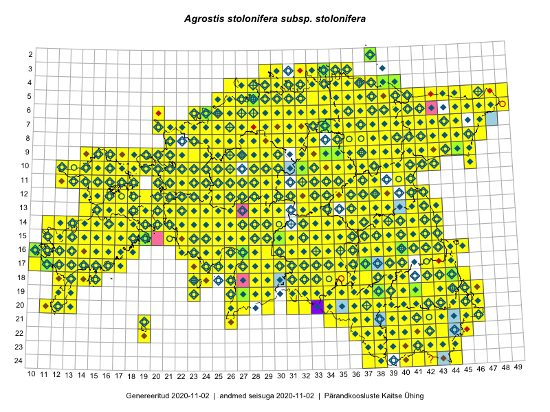

Agrostis stolonifera subsp. stolonifera — valge kastehein
Poaceae :: Agrostis stolonifera L. (1355); Agrostis stolonifera subsp. stolonifera L. (1287); Agrostis alba auct. (397); Agrostis stolonifera var. prorepens W.D.J.Koch (31); Agrostis stolonifera var. maritima (Lam.) W.D.J. Koch (27); Agrostis alba var. maritima G.Mey. (11); Agrostis stolonizans Besser (4); Agrostis stolonifera var. maritima (Lam.) W.D.J.Koch (3); Agrostis alba Kunze (1)

Kaart põhineb 6203 kirjel:
vaatlusi 2642
herbaareksemplare 474
PKÜ kirjeid1 2233
ELFi kirjeid2 851
LVA kirjeid3 3
Taime kaasaegsed ja ajaloolised leiukohad asuvad 533 ruudus.
Tingmärgid ja leidudega ruutude arvud periooditi uues (u) ja 2005 andmestikus (v)
| █ | vahemik | u4 | v5 |
|---|---|---|---|
| █ | 2006–2020 | 513 | – |
| ◆/◇ | 1971–2005 | 487 | 479 |
| ○ | 1921–1970 | 223 | 11 |
| + | kuni 1920 | 22 | 0 |
| × | hävinud | – | 0 |
| ? | kaheldav | – | 1 |
| Ruut | Leidja(d) | Leiuaeg | Kirje |
|---|---|---|---|
| 15-19 | Meeli Mesipuu | 2020-10-06 | PKÜ: 20889 |
| 15-19 | Meeli Mesipuu | 2020-10-05 | PKÜ: 20893 |
| 21-43 | Toomas Kukk, Kersti Tambets, Sten Mander, Kristine Fenske | 2020-09-30 | ruut/ala: Agrostis stolonifera subsp. stolonifera L. |
| 16-40 | Thea Kull | 2020-09-21 | ruut/ala: Agrostis stolonifera subsp. stolonifera L. |
| 16-17 | Peedu Saar | 2020-09-20 | PKÜ: 21307 |
| 19-38 | Peedu Saar | 2020-09-12 | PKÜ: 21030 |
| 16-13 | Mari Reitalu, Triin Reitalu | 2020-09-12 | ruut/ala: Agrostis stolonifera subsp. stolonifera L. |
| 15-18 | Toomas Kukk | 2020-09-11 | PKÜ: 20966 |
| 15-18 | Peedu Saar | 2020-09-11 | ruut/ala: Agrostis stolonifera subsp. stolonifera L. |
| 16-17 | Peedu Saar | 2020-09-11 | PKÜ: 20933 |
| 16-17 | Peedu Saar | 2020-09-11 | PKÜ: 20936 |
| 15-18 | Peedu Saar | 2020-09-11 | PKÜ: 20976 |
| 15-18 | Peedu Saar | 2020-09-11 | PKÜ: 20979 |
| 15-18 | Peedu Saar | 2020-09-11 | PKÜ: 20980 |
| 16-17 | Toomas Kukk | 2020-09-10 | ruut/ala: Agrostis stolonifera subsp. stolonifera L. |
| 16-16 | Toomas Kukk | 2020-09-10 | ruut/ala: Agrostis stolonifera subsp. stolonifera L. |
| 16-17 | Toomas Kukk | 2020-09-10 | PKÜ: 20962 |
| 16-17 | Peedu Saar | 2020-09-10 | ruut/ala: Agrostis stolonifera subsp. stolonifera L. |
| 16-17 | Peedu Saar | 2020-09-10 | PKÜ: 20937 |
| 16-17 | Peedu Saar | 2020-09-10 | PKÜ: 20938 |
| 16-17 | Peedu Saar | 2020-09-10 | PKÜ: 20943 |
| 16-17 | Peedu Saar | 2020-09-10 | PKÜ: 20947 |
| 16-17 | Peedu Saar | 2020-09-10 | PKÜ: 20948 |
| 14-16 | Ott Luuk, Meeli Mesipuu | 2020-09-10 | PKÜ: 20953 |
| 14-16 | Ott Luuk, Meeli Mesipuu | 2020-09-10 | PKÜ: 20954 |
| 14-16 | Ott Luuk, Meeli Mesipuu | 2020-09-10 | PKÜ: 20956 |
| 14-16 | Ott Luuk, Meeli Mesipuu | 2020-09-10 | PKÜ: 20957 |
| 23-39 | Amaranta Põld, Art Villem Adojaan | 2020-09-05 | punkt: Agrostis stolonifera L. |
| 16-14 | Mari Reitalu, Sirje Azarov | 2020-09-03 | ruut/ala: Agrostis stolonifera subsp. stolonifera L. |
| 06-25 | Toomas Kukk, Peedu Saar | 2020-09-02 | ruut/ala: Agrostis stolonifera subsp. stolonifera L. |
| 16-23 | Toomas Kukk | 2020-09-01 | PKÜ: 20996 |
| 16-23 | Toomas Kukk | 2020-09-01 | PKÜ: 21001 |
| 16-23 | Peedu Saar | 2020-09-01 | ruut/ala: Agrostis stolonifera subsp. stolonifera L. |
| 16-23 | Peedu Saar | 2020-09-01 | PKÜ: 20896 |
| 16-23 | Peedu Saar | 2020-09-01 | PKÜ: 20897 |
| 16-23 | Peedu Saar | 2020-09-01 | PKÜ: 20899 |
| 16-23 | Peedu Saar | 2020-09-01 | PKÜ: 20901 |
| 16-30 | Ott Luuk, Meeli Mesipuu | 2020-09-01 | PKÜ: 20874 |
| 16-22 | Toomas Kukk | 2020-08-31 | PKÜ: 20694 |
| 16-22 | Toomas Kukk | 2020-08-31 | PKÜ: 20700 |
| 16-22 | Toomas Kukk | 2020-08-31 | PKÜ: 20704 |
| 16-22 | Peedu Saar | 2020-08-31 | ruut/ala: Agrostis stolonifera subsp. stolonifera L. |
| 16-22 | Peedu Saar | 2020-08-31 | PKÜ: 20642 |
| 16-22 | Peedu Saar | 2020-08-31 | PKÜ: 20646 |
| 16-22 | Peedu Saar | 2020-08-31 | PKÜ: 20649 |
| 16-22 | Peedu Saar | 2020-08-31 | PKÜ: 20652 |
| 16-22 | Peedu Saar | 2020-08-31 | PKÜ: 20655 |
| 16-22 | Peedu Saar | 2020-08-31 | PKÜ: 20656 |
| 16-22 | Peedu Saar | 2020-08-31 | PKÜ: 20691 |
| 16-22 | Ott Luuk, Meeli Mesipuu | 2020-08-31 | PKÜ: 20657 |
| 16-22 | Ott Luuk, Meeli Mesipuu | 2020-08-31 | PKÜ: 20677 |
| 16-22 | Ott Luuk, Meeli Mesipuu | 2020-08-31 | PKÜ: 20678 |
| 16-22 | Ott Luuk, Meeli Mesipuu | 2020-08-31 | PKÜ: 20679 |
| 16-22 | Ott Luuk, Meeli Mesipuu | 2020-08-31 | PKÜ: 20682 |
| 16-22 | Ott Luuk, Meeli Mesipuu | 2020-08-31 | PKÜ: 20685 |
| 16-22 | Ott Luuk, Meeli Mesipuu | 2020-08-31 | PKÜ: 20686 |
| 16-22 | Ott Luuk, Meeli Mesipuu | 2020-08-31 | PKÜ: 20687 |
| 16-22 | Meeli Mesipuu | 2020-08-31 | PKÜ: 21341 |
| 16-22 | Meeli Mesipuu | 2020-08-31 | PKÜ: 21355 |
| 16-17 | Mari Reitalu, Sirje Azarov | 2020-08-31 | ruut/ala: Agrostis stolonifera subsp. stolonifera L. |
| 14-22 | Toomas Kukk | 2020-08-30 | PKÜ: 20601 |
| 14-22 | Toomas Kukk | 2020-08-30 | PKÜ: 20608 |
| 14-22 | Peedu Saar | 2020-08-30 | PKÜ: 20594 |
| 14-22 | Peedu Saar | 2020-08-30 | PKÜ: 20596 |
| 14-22 | Peedu Saar | 2020-08-30 | PKÜ: 20597 |
| 14-22 | Peedu Saar | 2020-08-30 | PKÜ: 20598 |
| 14-22 | Peedu Saar | 2020-08-30 | PKÜ: 20599 |
| 14-22 | Ott Luuk, Meeli Mesipuu | 2020-08-30 | PKÜ: 20614 |
| 14-22 | Ott Luuk, Meeli Mesipuu | 2020-08-30 | PKÜ: 20615 |
| 14-22 | Ott Luuk, Meeli Mesipuu | 2020-08-30 | PKÜ: 20623 |
| 15-22 | Ott Luuk, Meeli Mesipuu | 2020-08-30 | PKÜ: 20628 |
| 15-22 | Ott Luuk, Meeli Mesipuu | 2020-08-30 | PKÜ: 20633 |
| 15-22 | Ott Luuk, Meeli Mesipuu | 2020-08-30 | PKÜ: 20638 |
| 14-22;15-22 | Meeli Mesipuu | 2020-08-30 | PKÜ: 21246 |
| 19-37 | Eerik Leibak | 2020-08-30 | ELF: 691 |
| 06-34 | Peedu Saar | 2020-08-27 | ruut/ala: Agrostis stolonifera subsp. stolonifera L. |
| 04-36 | Toomas Kukk, Peedu Saar | 2020-08-26 | PKÜ: 20910 |
| 04-37 | Peedu Saar | 2020-08-26 | PKÜ: 20909 |
| 10-36 | Peedu Saar | 2020-08-25 | ruut/ala: Agrostis stolonifera subsp. stolonifera L. |
| 14-15 | Mari Reitalu, Sirje Azarov | 2020-08-24 | ruut/ala: Agrostis stolonifera subsp. stolonifera L. |
| 20-33 | Tiit Hallikma | 2020-08-20 | ELF: 21853 |
| 14-16 | Mari Reitalu, Sirje Azarov | 2020-08-19–2020-08-20 | ruut/ala: Agrostis stolonifera subsp. stolonifera L. |
| 03-34 | Toomas Kukk, Ott Luuk, Kersti Tambets, Sten Mander, Kristine Fenske, Maie Itse | 2020-08-19 | ruut/ala: Agrostis stolonifera subsp. stolonifera L. |
| 11-38 | Peedu Saar | 2020-08-19 | ruut/ala: Agrostis stolonifera subsp. stolonifera L. |
| 13-17 | Mari Reitalu, Sirje Azarov | 2020-08-19 | ruut/ala: Agrostis stolonifera subsp. stolonifera L. |
| 10-42 | Toomas Kukk, Ott Luuk, Kersti Tambets, Sten Mander, Kristine Fenske | 2020-08-18 | ruut/ala: Agrostis stolonifera subsp. stolonifera L. |
| 19-38 | Nele Ingerpuu | 2020-08-18 | ELF: 14620 |
| 14-17 | Mari Reitalu, Sirje Azarov | 2020-08-18 | ruut/ala: Agrostis stolonifera subsp. stolonifera L. |
| 21-37 | Eerik Leibak | 2020-08-17 | ELF: 520 |
| 16-11 | Toomas Kukk | 2020-08-15 | PKÜ: 21211 |
| 16-11 | Toomas Kukk | 2020-08-15 | PKÜ: 21213 |
| 16-11 | Toomas Kukk | 2020-08-15 | PKÜ: 21214 |
| 16-11 | Toomas Kukk | 2020-08-14 | PKÜ: 21204 |
| 16-11 | Toomas Kukk | 2020-08-14 | PKÜ: 21206 |
| 16-11 | Toomas Kukk | 2020-08-14 | PKÜ: 21203 |
| 16-11 | Toomas Kukk | 2020-08-14 | PKÜ: 21207 |
| 16-11 | Toomas Kukk | 2020-08-14 | PKÜ: 21208 |
| 18-38 | Nele Ingerpuu | 2020-08-14 | ELF: 705 |
| 16-10 | Meeli Mesipuu | 2020-08-14 | TAA0153934: Agrostis stolonifera L. |
| 16-10 | Meeli Mesipuu | 2020-08-14 | TAA0153935: Agrostis stolonifera L. |
| 16-10 | Meeli Mesipuu | 2020-08-14 | PKÜ: 20818 |
| 16-11 | Meeli Mesipuu | 2020-08-14 | PKÜ: 20840 |
| 16-11 | Meeli Mesipuu | 2020-08-14 | PKÜ: 20841 |
| 16-11 | Meeli Mesipuu | 2020-08-14 | PKÜ: 20842 |
| 14-19 | Meeli Mesipuu | 2020-08-12 | ruut/ala: Agrostis stolonifera subsp. stolonifera L. |
| 13-18 | Mari Reitalu, Sirje Azarov | 2020-08-11–2020-08-12 | ruut/ala: Agrostis stolonifera subsp. stolonifera L. |
| 19-36 | Nele Ingerpuu | 2020-08-11 | ELF: 24839 |
| 14-16 | Meeli Mesipuu | 2020-08-11 | PKÜ: 20314 |
| 14-20 | Mari Reitalu, Sirje Azarov | 2020-08-11 | ruut/ala: Agrostis stolonifera subsp. stolonifera L. |
| 19-34 | Tiit Hallikma | 2020-08-09 | ELF: 16075 |
| 16-17 | Mari Reitalu, Sirje Azarov | 2020-08-08–2020-08-29 | ruut/ala: Agrostis stolonifera subsp. stolonifera L. |
| 15-42 | Peedu Saar | 2020-08-08 | ruut/ala: Agrostis stolonifera subsp. stolonifera L. |
| 12-15 | Peedu Saar, Ott Luuk | 2020-08-07 | ruut/ala: Agrostis stolonifera subsp. stolonifera L. |
| 12-14;12-15 | Ott Luuk, Peedu Saar | 2020-08-07 | PKÜ: 20728 |
| 12-15 | Ott Luuk, Peedu Saar | 2020-08-07 | PKÜ: 20725 |
| 15-15 | Mari Reitalu, Sirje Azarov | 2020-08-07 | ruut/ala: Agrostis stolonifera subsp. stolonifera L. |
| 11-17 | Peedu Saar | 2020-08-06 | ruut/ala: Agrostis stolonifera subsp. stolonifera L. |
| 10-13 | Peedu Saar | 2020-08-06 | PKÜ: 20602 |
| 11-17 | Peedu Saar | 2020-08-06 | PKÜ: 20616 |
| 11-17 | Peedu Saar | 2020-08-06 | PKÜ: 20618 |
| 10-17 | Peedu Saar | 2020-08-06 | PKÜ: 20609 |
| 13-15 | Ott Luuk, Peedu Saar | 2020-08-06 | PKÜ: 20747 |
| 13-15 | Ott Luuk, Peedu Saar | 2020-08-06 | PKÜ: 20750 |
| 13-15 | Ott Luuk | 2020-08-06 | ruut/ala: Agrostis stolonifera subsp. stolonifera L. |
| 22-42 | Toomas Kukk, Eerik Leibak | 2020-08-05 | ruut/ala: Agrostis stolonifera subsp. stolonifera L. |
| 10-23 | Ott Luuk | 2020-08-05 | ruut/ala: Agrostis stolonifera subsp. stolonifera L. |
| 11-41 | Helle Mäemets, Kadi Palmik-Das | 2020-08-03 | punkt: Agrostis stolonifera L. |
| 10-43 | Helle Mäemets, Kadi Palmik-Das | 2020-08-03 | punkt: Agrostis stolonifera L. |
| 06-34 | Eerik Leibak | 2020-08-01 | ELF: 22003 |
| 16-17 | Mari Reitalu, Sirje Azarov | 2020-07-31 | ruut/ala: Agrostis stolonifera subsp. stolonifera L. |
| 15-36 | Amaranta Põld, Art Villem Adojaan | 2020-07-29 | punkt: Agrostis stolonifera L. |
| 08-43 | Toomas Kukk | 2020-07-28 | ruut/ala: Agrostis stolonifera subsp. stolonifera L. |
| 09-43 | Toomas Kukk | 2020-07-28 | ruut/ala: Agrostis stolonifera subsp. stolonifera L. |
| 08-42 | Peedu Saar | 2020-07-28 | PKÜ: 20495 |
| 08-42 | Peedu Saar | 2020-07-28 | PKÜ: 20497 |
| 08-42 | Peedu Saar | 2020-07-28 | PKÜ: 20501 |
| 09-42 | Peedu Saar | 2020-07-28 | PKÜ: 20522 |
| 09-42 | Peedu Saar | 2020-07-28 | PKÜ: 20526 |
| 15-43 | Helle Mäemets, Kadi Palmik-Das | 2020-07-28 | punkt: Agrostis stolonifera L. |
| 14-43 | Helle Mäemets, Kadi Palmik-Das | 2020-07-28 | punkt: Agrostis stolonifera L. |
| 18-45 | Helle Mäemets, Kadi Palmik-Das | 2020-07-27 | punkt: Agrostis stolonifera L. |
| 17-44 | Helle Mäemets, Kadi Palmik-Das | 2020-07-27 | punkt: Agrostis stolonifera L. |
| 16-44 | Helle Mäemets, Kadi Palmik-Das | 2020-07-27 | punkt: Agrostis stolonifera L. |
| 16-43 | Eerik Leibak | 2020-07-26 | ELF: 22158 |
| 18-33 | Art Villem Adojaan | 2020-07-25 | punkt: Agrostis stolonifera L. |
| 16-17 | Mari Reitalu, Sirje Azarov, Anne Teigamägi | 2020-07-22 | ruut/ala: Agrostis stolonifera subsp. stolonifera L. |
| 15-36 | Art Villem Adojaan | 2020-07-22 | punkt: Agrostis stolonifera L. |
| 09-26 | Ott Luuk | 2020-07-21–2020-07-23 | ruut/ala: Agrostis stolonifera subsp. stolonifera L. |
| 15-36 | Art Villem Adojaan | 2020-07-21 | punkt: Agrostis stolonifera L. |
| 10-21 | Thea Kull | 2020-07-12 | punkt: Agrostis stolonifera subsp. stolonifera L. |
| 10-21 | Thea Kull | 2020-07-12 | punkt: Agrostis stolonifera L. |
| 09-21 | Thea Kull | 2020-07-12 | punkt: Agrostis stolonifera L. |
| 13-23 | Silvia Pihu | 2020-07-09 | ELF: 38 |
| 22-42 | Eerik Leibak | 2020-07-09 | ELF: 390 |
| 20-45 | Toomas Kukk, Eerik Leibak | 2020-07-07 | ruut/ala: Agrostis stolonifera subsp. stolonifera L. |
| 20-46 | Toomas Kukk, Eerik Leibak | 2020-07-07 | ruut/ala: Agrostis stolonifera subsp. stolonifera L. |
| 20-45 | Toomas Kukk | 2020-07-07 | ELF: 24857 |
| 16-15 | Mari Reitalu, Sirje Azarov, Anne Teigamägi | 2020-07-07 | ruut/ala: Agrostis stolonifera subsp. stolonifera L. |
| 10-15 | Helle Mäemets, Kaire Torn | 2020-07-07 | punkt: Agrostis stolonifera L. |
| 19-37 | Mari Reitalu, Sirje Azarov, Riine Latserus | 2020-07-04 | ruut/ala: Agrostis stolonifera subsp. stolonifera L. |
| 17-11 | Rein Kalamees, Ott Luuk | 2020-07-03 | PKÜ: 20451 |
| 17-11 | Rein Kalamees, Ott Luuk | 2020-07-03 | PKÜ: 20458 |
| 17-14 | Peedu Saar, Toomas Kukk | 2020-07-03 | ruut/ala: Agrostis stolonifera subsp. stolonifera L. |
| 19-12 | Toomas Kukk | 2020-07-02 | PKÜ: 20541 |
| 19-12 | Toomas Kukk | 2020-07-02 | PKÜ: 20527 |
| 19-12 | Peedu Saar | 2020-07-02 | PKÜ: 20554 |
| 17-11 | Ott Luuk, Rein Kalamees | 2020-07-02 | PKÜ: 20227 |
| 17-11 | Ott Luuk, Rein Kalamees | 2020-07-02 | PKÜ: 20231 |
| 17-11 | Ott Luuk, Rein Kalamees | 2020-07-02 | PKÜ: 20229 |
| 17-11 | Ott Luuk, Rein Kalamees | 2020-07-02 | PKÜ: 21172 |
| 17-11 | Ott Luuk, Rein Kalamees | 2020-07-02 | PKÜ: 21173 |
| 17-11 | Ott Luuk, Rein Kalamees | 2020-07-02 | PKÜ: 21183 |
| 17-11 | Meeli Mesipuu | 2020-07-02 | PKÜ: 21277 |
| 17-11 | Meeli Mesipuu | 2020-07-02 | PKÜ: 21284 |
| 17-11 | Meeli Mesipuu | 2020-07-02 | PKÜ: 21289 |
| 17-11 | Toomas Kukk | 2020-07-01 | PKÜ: 20517 |
| 17-10;17-11 | Peedu Saar | 2020-07-01 | PKÜ: 20470 |
| 17-11 | Ott Luuk, Rein Kalamees | 2020-07-01 | PKÜ: 20219 |
| 17-11 | Meeli Mesipuu | 2020-07-01 | PKÜ: 21050 |
| 14-22 | Ott Luuk, Rein Kalamees | 2020-06-30 | PKÜ: 20588 |
| 16-40 | Liisi Promet | 2020-06-29 | TU385511: Agrostis stolonifera L. |
| 04-33 | Rein Kalamees | 2020-06-26 | PKÜ: 20248 |
| 04-33 | Rein Kalamees | 2020-06-26 | PKÜ: 20250 |
| 04-28 | Ott Luuk | 2020-06-22 | ruut/ala: Agrostis stolonifera subsp. stolonifera L. |
| 07-28 | Ott Luuk | 2020-06-21 | ruut/ala: Agrostis stolonifera subsp. stolonifera L. |
| 10-21 | Meeli Mesipuu, Ott Luuk | 2020-06-17 | PKÜ: 21123 |
| 09-21 | Ott Luuk, Peedu Saar | 2020-06-16 | PKÜ: 20433 |
| 09-21 | Ott Luuk, Peedu Saar | 2020-06-16 | PKÜ: 20439 |
| 09-21 | Ott Luuk, Peedu Saar | 2020-06-16 | PKÜ: 20440 |
| 10-21 | Meeli Mesipuu, Ott Luuk | 2020-06-16 | PKÜ: 21145 |
| 04-33 | Meeli Mesipuu | 2020-06-09 | PKÜ: 21054 |
| 08-36 | Toomas Kukk, Meeli Mesipuu | 2020-06-08 | ruut/ala: Agrostis stolonifera subsp. stolonifera L. |
| 08-36 | Toomas Kukk, Meeli Mesipuu | 2020-06-08 | PKÜ: 20790 |
| 15-19 | Meeli Mesipuu | 2020-05-25 | PKÜ: 20169 |
| 15-19 | Meeli Mesipuu | 2020-05-25 | PKÜ: 20173 |
| 15-19 | Meeli Mesipuu | 2020-05-25 | PKÜ: 20984 |
| 15-19 | Meeli Mesipuu | 2020-05-25 | PKÜ: 20985 |
| 15-19 | Meeli Mesipuu | 2020-05-25 | PKÜ: 20986 |
| 16-17 | Peedu Saar, Toomas Kukk | 2019-09-26 | ruut/ala: Agrostis stolonifera subsp. stolonifera L. |
| 13-21 | Toomas Kukk, Peedu Saar | 2019-09-25 | ruut/ala: Agrostis stolonifera subsp. stolonifera L. |
| 11-32 | Indrek Tammekänd | 2019-09-22 | ruut/ala: Agrostis stolonifera L. |
| 16-12 | Mari Reitalu, Triin Reitalu | 2019-09-21 | punkt: Agrostis stolonifera L. |
| 10-22 | Toomas Kukk, Peedu Saar | 2019-09-19 | ruut/ala: Agrostis stolonifera subsp. stolonifera L. |
| 10-21 | Ott Luuk | 2019-09-19 | ruut/ala: Agrostis stolonifera subsp. stolonifera L. |
| 10-19 | Peedu Saar, Toomas Kukk | 2019-09-18 | ruut/ala: Agrostis stolonifera subsp. stolonifera L. |
| 10-20 | Ott Luuk | 2019-09-18 | ruut/ala: Agrostis stolonifera subsp. stolonifera L. |
| 09-20 | Ott Luuk | 2019-09-18 | ruut/ala: Agrostis stolonifera subsp. stolonifera L. |
| 09-19 | Toomas Kukk, Peedu Saar | 2019-09-17 | ruut/ala: Agrostis stolonifera subsp. stolonifera L. |
| 09-19 | Toomas Kukk, Peedu Saar | 2019-09-17 | ELF: 24836 |
| 10-18 | Ott Luuk | 2019-09-17 | ruut/ala: Agrostis stolonifera subsp. stolonifera L. |
| 09-18 | Ott Luuk | 2019-09-17 | ruut/ala: Agrostis stolonifera subsp. stolonifera L. |
| 08-45 | Toomas Kukk, Thea Kull | 2019-09-12 | ruut/ala: Agrostis stolonifera subsp. stolonifera L. |
| 07-45 | Thea Kull, Toomas Kukk | 2019-09-12 | ruut/ala: Agrostis stolonifera subsp. stolonifera L. |
| 06-46 | Toomas Kukk, Thea Kull | 2019-09-11 | ruut/ala: Agrostis stolonifera subsp. stolonifera L. |
| 10-46 | Peedu Saar, Timo Luhamäe | 2019-09-11 | ruut/ala: Agrostis stolonifera subsp. stolonifera L. |
| 05-43 | Ott Luuk, Meeli Mesipuu | 2019-09-11 | ruut/ala: Agrostis stolonifera subsp. stolonifera L. |
| 05-44 | Meeli Mesipuu, Ott Luuk | 2019-09-11 | ruut/ala: Agrostis stolonifera subsp. stolonifera L. |
| 10-39 | Toomas Kukk, Thea Kull | 2019-09-10 | ruut/ala: Agrostis stolonifera subsp. stolonifera L. |
| 10-40 | Toomas Kukk, Thea Kull | 2019-09-10 | ruut/ala: Agrostis stolonifera subsp. stolonifera L. |
| 09-41 | Peedu Saar, Timo Luhamäe | 2019-09-10 | ruut/ala: Agrostis stolonifera subsp. stolonifera L. |
| 08-24 | Peedu Saar, Ott Luuk | 2019-09-05 | ruut/ala: Agrostis stolonifera subsp. stolonifera L. |
| 15-14 | Mari Reitalu, Sirje Azarov, Anne Teigamägi | 2019-09-04 | ruut/ala: Agrostis stolonifera subsp. stolonifera L. |
| 14-14;15-14 | Mari Reitalu, Sirje Azarov, Anne Teigamägi | 2019-09-04 | ELF: 24786 |
| 09-22 | Ott Luuk | 2019-09-03–2019-09-04 | ruut/ala: Agrostis stolonifera subsp. stolonifera L. |
| 05-26 | Ott Luuk, Peedu Saar | 2019-09-02 | ruut/ala: Agrostis stolonifera subsp. stolonifera L. |
| 15-28 | Toomas Kukk, Peedu Saar | 2019-08-29 | ruut/ala: Agrostis stolonifera subsp. stolonifera L. |
| 14-32 | Meeli Mesipuu, Timo Luhamäe | 2019-08-29 | ruut/ala: Agrostis stolonifera subsp. stolonifera L. |
| 15-32 | Mari Reitalu, Thea Kull, Martin Tikk | 2019-08-29 | ruut/ala: Agrostis stolonifera subsp. stolonifera L. |
| 16-32 | Mari Reitalu, Thea Kull, Martin Tikk | 2019-08-29 | ruut/ala: Agrostis stolonifera subsp. stolonifera L. |
| 15-30 | Meeli Mesipuu, Timo Luhamäe | 2019-08-28 | ruut/ala: Agrostis stolonifera subsp. stolonifera L. |
| 15-30 | Meeli Mesipuu, Timo Luhamäe | 2019-08-28 | TAA0145354: Agrostis stolonifera L. |
| 15-30 | Meeli Mesipuu, Timo Luhamäe | 2019-08-28 | TAA0145355: Agrostis stolonifera L. |
| 13-29 | Mari Reitalu, Thea Kull | 2019-08-28 | ruut/ala: Agrostis stolonifera subsp. stolonifera L. |
| 07-25 | Rein Kalamees | 2019-08-27 | ruut/ala: Agrostis stolonifera subsp. stolonifera L. |
| 12-36 | Ott Luuk, Eerik Leibak | 2019-08-27 | ruut/ala: Agrostis stolonifera subsp. stolonifera L. |
| 16-35 | Meeli Mesipuu, Timo Luhamäe | 2019-08-27 | ruut/ala: Agrostis stolonifera subsp. stolonifera L. |
| 15-35 | Meeli Mesipuu, Timo Luhamäe | 2019-08-27 | ruut/ala: Agrostis stolonifera subsp. stolonifera L. |
| 16-33 | Mari Reitalu, Thea Kull | 2019-08-27 | ruut/ala: Agrostis stolonifera subsp. stolonifera L. |
| 17-44 | Helle Mäemets, Kadi Palmik-Das | 2019-08-26 | punkt: Agrostis stolonifera L. |
| 16-12 | Sirje Azarov, Mari Reitalu | 2019-08-25 | ELF: 57 |
| 10-21 | Peedu Saar, Ott Luuk, Sten Mander, Kersti Tambets, Kristine Fenske | 2019-08-23 | ruut/ala: Agrostis stolonifera subsp. stolonifera L. |
| 09-21 | Peedu Saar, Ott Luuk, Sten Mander, Kersti Tambets, Kristine Fenske | 2019-08-23 | ruut/ala: Agrostis stolonifera subsp. stolonifera L. |
| 15-43 | Helle Mäemets, Kadi Palmik-Das | 2019-08-21 | punkt: Agrostis stolonifera L. |
| 11-41 | Helle Mäemets, Kadi Palmik-Das | 2019-08-21 | punkt: Agrostis stolonifera L. |
| 17-13 | Mari Reitalu, Sirje Azarov | 2019-08-19 | ELF: 5310 |
| 11-25 | Thea Kull | 2019-08-18 | ruut/ala: Agrostis stolonifera subsp. stolonifera L. |
| 11-25 | Thea Kull | 2019-08-18 | ELF: 2937 |
| 13-25 | Thea Kull | 2019-08-18 | ELF: 21736 |
| 12-26 | Thea Kull | 2019-08-17 | ruut/ala: Agrostis stolonifera subsp. stolonifera L. |
| 12-26 | Thea Kull | 2019-08-17 | ELF: 2236 |
| 16-13 | Mari Reitalu, Sirje Azarov | 2019-08-15 | ruut/ala: Agrostis stolonifera subsp. stolonifera L. |
| 16-13 | Mari Reitalu, Sirje Azarov | 2019-08-15 | ELF: 14 |
| 19-33 | Maili Lehtpuu | 2019-08-14 | punkt: Agrostis stolonifera L. |
| 16-12 | Sirje Azarov, Mari Reitalu | 2019-08-09 | ELF: 53 |
| 09-39 | Rein Kalamees, Toomas Kukk | 2019-08-08 | ruut/ala: Agrostis stolonifera subsp. stolonifera L. |
| 10-34 | Peedu Saar, Timo Luhamäe | 2019-08-08 | ruut/ala: Agrostis stolonifera subsp. stolonifera L. |
| 06-35 | Toomas Kukk, Rein Kalamees, Kaur Maran | 2019-08-07 | ruut/ala: Agrostis stolonifera subsp. stolonifera L. |
| 07-35 | Toomas Kukk, Rein Kalamees, Kaur Maran | 2019-08-07 | ruut/ala: Agrostis stolonifera subsp. stolonifera L. |
| 07-34 | Toomas Kukk, Rein Kalamees, Kaur Maran | 2019-08-07 | ruut/ala: Agrostis stolonifera subsp. stolonifera L. |
| 03-32 | Ott Luuk, Jaak-Albert Metsoja | 2019-08-07 | ruut/ala: Agrostis stolonifera subsp. stolonifera L. |
| 04-33 | Ott Luuk, Jaak-Albert Metsoja | 2019-08-07 | ruut/ala: Agrostis stolonifera subsp. stolonifera L. |
| 04-36 | Meeli Mesipuu | 2019-08-06–2019-08-07 | ruut/ala: Agrostis stolonifera L. |
| 03-34 | Toomas Kukk, Rein Kalamees | 2019-08-06 | TAA0148708: Agrostis stolonifera subsp. stolonifera L. |
| 03-34 | Toomas Kukk, Rein Kalamees | 2019-08-06 | TAA0148709: Agrostis stolonifera subsp. stolonifera L. |
| 19-41 | Thea Kull | 2019-08-06 | TAA0147971: Agrostis stolonifera L. |
| 16-12 | Sirje Azarov, Mari Reitalu | 2019-08-06 | ELF: 59 |
| 15-12 | Sirje Azarov, Mari Reitalu | 2019-08-06 | ELF: 2627 |
| 03-34 | Rein Kalamees, Toomas Kukk | 2019-08-06 | ruut/ala: Agrostis stolonifera subsp. stolonifera L. |
| 04-38 | Ott Luuk, Jaak-Albert Metsoja | 2019-08-06 | ruut/ala: Agrostis stolonifera subsp. stolonifera L. |
| 04-39 | Ott Luuk, Jaak-Albert Metsoja | 2019-08-06 | TAA0152468: Agrostis stolonifera subsp. stolonifera L. |
| 04-39 | Ott Luuk, Jaak-Albert Metsoja | 2019-08-06 | TAA0152469: Agrostis stolonifera subsp. stolonifera L. |
| 04-36 | Meeli Mesipuu | 2019-08-06 | punkt: Agrostis stolonifera L. |
| 04-36 | Meeli Mesipuu | 2019-08-06 | ruut/ala: Agrostis stolonifera subsp. stolonifera L. |
| 02-38 | Meeli Mesipuu | 2019-08-06 | ruut/ala: Agrostis stolonifera subsp. stolonifera L. |
| 02-38 | Meeli Mesipuu | 2019-08-06 | TAA0151150: Agrostis stolonifera L. |
| 15-12 | Mari Reitalu, Sirje Azarov | 2019-08-06 | ruut/ala: Agrostis stolonifera subsp. stolonifera L. |
| 16-12 | Mari Reitalu, Sirje Azarov | 2019-08-06 | ELF: 60 |
| 16-12 | Sirje Azarov, Mari Reitalu | 2019-08-05 | ELF: 55 |
| 16-12 | Sirje Azarov, Mari Reitalu | 2019-08-05 | ELF: 56 |
| 04-32 | Rein Kalamees, Toomas Kukk | 2019-08-05 | ruut/ala: Agrostis stolonifera subsp. stolonifera L. |
| 05-33 | Peedu Saar, Timo Luhamäe | 2019-08-05 | ruut/ala: Agrostis stolonifera subsp. stolonifera L. |
| 17-15 | Sirje Azarov | 2019-08-04 | ELF: 9956 |
| 04-27 | Ott Luuk | 2019-08-02 | ruut/ala: Agrostis stolonifera subsp. stolonifera L. |
| 22-39 | Toomas Kukk, Peedu Saar | 2019-08-01 | ruut/ala: Agrostis stolonifera subsp. stolonifera L. |
| 14-43 | Helle Mäemets, Kadi Palmik-Das | 2019-08-01 | punkt: Agrostis stolonifera L. |
| 24-42 | Toomas Kukk, Peedu Saar | 2019-07-31 | punkt: Agrostis stolonifera subsp. stolonifera L. |
| 10-32 | Ott Luuk | 2019-07-31 | ruut/ala: Agrostis stolonifera subsp. stolonifera L. |
| 08-44 | Thea Kull | 2019-07-26 | punkt: Agrostis stolonifera L. |
| 07-22 | Peedu Saar | 2019-07-24 | ruut/ala: Agrostis stolonifera subsp. stolonifera L. |
| 07-22 | Peedu Saar | 2019-07-24 | ELF: 183 |
| 17-39 | Thea Kull | 2019-07-23 | ruut/ala: Agrostis stolonifera subsp. stolonifera L. |
| 16-12 | Mari Reitalu | 2019-07-23 | ELF: 734 |
| 09-21 | Meeli Mesipuu | 2019-07-21 | ruut/ala: Agrostis stolonifera subsp. stolonifera L. |
| 17-13 | Sirje Azarov, Mari Reitalu | 2019-07-18 | ELF: 5311 |
| 17-13 | Mari Reitalu, Sirje Azarov | 2019-07-18 | ruut/ala: Agrostis stolonifera subsp. stolonifera L. |
| 19-13 | Mari Reitalu, Sirje Azarov | 2019-07-18 | ELF: 13419 |
| 18-34 | Maili Lehtpuu | 2019-07-18 | punkt: Agrostis stolonifera L. |
| 16-40 | Meeli Mesipuu | 2019-07-17 | ruut/ala: Agrostis stolonifera L. |
| 16-40 | Meeli Mesipuu | 2019-07-17 | ruut/ala: Agrostis stolonifera subsp. stolonifera L. |
| 16-40 | Meeli Mesipuu | 2019-07-17 | ruut/ala: Agrostis stolonifera subsp. stolonifera L. |
| 23-40 | Martin Küttim, Marko Vainu | 2019-07-16–2019-07-17 | ELF: 15245 |
| 23-40 | Martin Küttim, Marko Vainu | 2019-07-16–2019-07-17 | ELF: 15246 |
| 18-36 | Ott Luuk, Peedu Saar | 2019-07-16 | ruut/ala: Agrostis stolonifera subsp. stolonifera L. |
| 19-35 | Ott Luuk, Peedu Saar | 2019-07-16 | ruut/ala: Agrostis stolonifera subsp. stolonifera L. |
| 04-33 | Rein Kalamees | 2019-07-14 | ruut/ala: Agrostis stolonifera subsp. stolonifera L. |
| 17-12 | Mari Reitalu | 2019-07-14 | ELF: 24782 |
| 23-41 | Toomas Kukk, Indrek Tammekänd | 2019-07-12 | ruut/ala: Agrostis stolonifera subsp. stolonifera L. |
| 24-37 | Peedu Saar, Timo Luhamäe | 2019-07-12 | ruut/ala: Agrostis stolonifera subsp. stolonifera L. |
| 18-42 | Meeli Mesipuu | 2019-07-12 | ruut/ala: Agrostis stolonifera subsp. stolonifera L. |
| 19-42 | Meeli Mesipuu | 2019-07-12 | ruut/ala: Agrostis stolonifera subsp. stolonifera L. |
| 22-40 | Toomas Kukk, Indrek Tammekänd | 2019-07-11 | ruut/ala: Agrostis stolonifera subsp. stolonifera L. |
| 22-41 | Toomas Kukk, Indrek Tammekänd | 2019-07-11 | ruut/ala: Agrostis stolonifera subsp. stolonifera L. |
| 19-38 | Thea Kull | 2019-07-11 | ruut/ala: Agrostis stolonifera subsp. stolonifera L. |
| 23-37 | Peedu Saar, Timo Luhamäe | 2019-07-11 | ruut/ala: Agrostis stolonifera subsp. stolonifera L. |
| 19-41 | Meeli Mesipuu | 2019-07-11 | ruut/ala: Agrostis stolonifera subsp. stolonifera L. |
| 19-13 | Mari Reitalu, Sirje Azarov | 2019-07-11 | ruut/ala: Agrostis stolonifera subsp. stolonifera L. |
| 19-13 | Mari Reitalu, Sirje Azarov | 2019-07-11 | ELF: 16770 |
| 20-12 | Mari Reitalu, Sirje Azarov | 2019-07-11 | ELF: 24781 |
| 21-41 | Toomas Kukk, Indrek Tammekänd | 2019-07-10 | ruut/ala: Agrostis stolonifera subsp. stolonifera L. |
| 22-37 | Peedu Saar, Timo Luhamäe | 2019-07-10 | ruut/ala: Agrostis stolonifera subsp. stolonifera L. |
| 20-46 | Ott Luuk, Tiit Hallikma | 2019-07-10 | ruut/ala: Agrostis stolonifera subsp. stolonifera L. |
| 20-45 | Ott Luuk, Tiit Hallikma | 2019-07-10 | ruut/ala: Agrostis stolonifera subsp. stolonifera L. |
| 17-11 | Mari Reitalu, Sirje Azarov | 2019-07-10 | ELF: 9983 |
| 20-41 | Toomas Kukk, Indrek Tammekänd | 2019-07-09 | ruut/ala: Agrostis stolonifera subsp. stolonifera L. |
| 20-42 | Toomas Kukk, Indrek Tammekänd | 2019-07-09 | ruut/ala: Agrostis stolonifera subsp. stolonifera L. |
| 20-44 | Ott Luuk, Tiit Hallikma | 2019-07-09 | ruut/ala: Agrostis stolonifera subsp. stolonifera L. |
| 18-42 | Meeli Mesipuu, Thea Kull | 2019-07-09 | punkt: Agrostis stolonifera L. |
| 04-39 | Peedu Saar, Ott Luuk | 2019-07-05 | ruut/ala: Agrostis stolonifera subsp. stolonifera L. |
| 05-40 | Peedu Saar, Ott Luuk | 2019-07-05 | ruut/ala: Agrostis stolonifera subsp. stolonifera L. |
| 05-39 | Ott Luuk, Peedu Saar | 2019-07-05 | ruut/ala: Agrostis stolonifera subsp. stolonifera L. |
| 16-22 | Helle Mäemets | 2019-07-05 | punkt: Agrostis stolonifera L. |
| 11-13 | Toomas Kukk | 2019-07-04 | ruut/ala: Agrostis stolonifera subsp. stolonifera L. |
| 15-40 | Peedu Saar, Ott Luuk | 2019-07-04 | punkt: Agrostis stolonifera subsp. stolonifera L. |
| 10-41 | Ott Luuk, Peedu Saar | 2019-07-04 | ruut/ala: Agrostis stolonifera subsp. stolonifera L. |
| 17-15 | Helle Mäemets | 2019-07-04 | punkt: Agrostis stolonifera L. |
| 10-15 | Toomas Kukk | 2019-07-03 | ruut/ala: Agrostis stolonifera subsp. stolonifera L. |
| 10-16 | Toomas Kukk | 2019-07-03 | ruut/ala: Agrostis stolonifera subsp. stolonifera L. |
| 10-15;10-16 | Toomas Kukk | 2019-07-03 | ELF: 24692 |
| 14-39 | Ott Luuk, Kaili Kattai | 2019-07-03 | ruut/ala: Agrostis stolonifera subsp. stolonifera L. |
| 08-36;09-36 | Jaanus Paal | 2019-07-02 | ELF: 808 |
| 05-28 | Meeli Mesipuu | 2019-06-30 | ruut/ala: Agrostis stolonifera subsp. stolonifera L. |
| 05-28 | Meeli Mesipuu | 2019-06-30 | ruut/ala: Agrostis stolonifera L. |
| 05-28 | Meeli Mesipuu | 2019-06-30 | ruut/ala: Agrostis stolonifera subsp. stolonifera L. |
| 05-28 | Meeli Mesipuu | 2019-06-30 | ruut/ala: Agrostis stolonifera subsp. stolonifera L. |
| 15-11 | Mari Reitalu | 2019-06-27 | ELF: 125 |
| 05-28 | Meeli Mesipuu | 2019-06-26 | ruut/ala: Agrostis stolonifera subsp. stolonifera L. |
| 13-21 | Ott Luuk, Toomas Kukk, Thea Kull | 2019-06-25 | ruut/ala: Agrostis stolonifera subsp. stolonifera L. |
| 17-40 | Margus Ots, Ekke Rikka, Sigrid Ots, Meelis Pärtel, Kadri Pärtel, Jaak Pärtel, Leene Pärtel, Karin Pai, Marko Mägi | 2019-06-14–2019-06-15 | punkt: Agrostis stolonifera L. |
| 14-19 | Ingo Valgma, Marje Loide, Riina Laurimaa | 2019-06-14 | punkt: Agrostis stolonifera L. |
| 05-28 | Thea Kull | 2019-06-13 | ruut/ala: Agrostis stolonifera subsp. stolonifera L. |
| 18-42 | Thea Kull | 2019-06-07 | ruut/ala: Agrostis stolonifera subsp. stolonifera L. |
| 16-45 | Ott Luuk | 2019-06-07 | ruut/ala: Agrostis stolonifera subsp. stolonifera L. |
| 15-18 | Meeli Mesipuu | 2019-06-03 | ruut/ala: Agrostis stolonifera subsp. stolonifera L. |
| 16-28 | Indrek Tammekänd | 2019-05-29–2019-08-23 | ruut/ala: Agrostis stolonifera L. |
| 14-20 | Toomas Kukk | 2018-09-19 | ruut/ala: Agrostis stolonifera subsp. stolonifera L. |
| 14-20 | Peedu Saar | 2018-09-19 | ruut/ala: Agrostis stolonifera subsp. stolonifera L. |
| 15-21 | Toomas Kukk | 2018-09-18 | ruut/ala: Agrostis stolonifera subsp. stolonifera L. |
| 12-18 | Toomas Kukk, Peeter Pärn | 2018-09-15 | ruut/ala: Agrostis stolonifera subsp. stolonifera L. |
| 04-28 | Ott Luuk | 2018-09-07 | ruut/ala: Agrostis stolonifera subsp. stolonifera L. |
| 09-22 | Tõnu Ploompuu, Laura Paju, Helen Valts, Marko Vainu | 2018-09-06 | ELF: 21060 |
| 13-25 | Indrek Tammekänd | 2018-09-02 | ELF: 21728 |
| 13-25 | Indrek Tammekänd | 2018-09-02 | ELF: 24589 |
| 11-37 | Maili Lehtpuu | 2018-08-31 | punkt: Agrostis stolonifera L. |
| 16-17 | Toomas Kukk, Tiit Hallikma | 2018-08-30 | ruut/ala: Agrostis stolonifera subsp. stolonifera L. |
| 12-19 | Toomas Kukk, Tiit Hallikma | 2018-08-30 | ruut/ala: Agrostis stolonifera subsp. stolonifera L. |
| 11-28 | Ott Luuk, Toivo Sepp | 2018-08-30 | ELF: 24575 |
| 10-32 | Ott Luuk | 2018-08-28 | ruut/ala: Agrostis stolonifera subsp. stolonifera L. |
| 14-37 | Peedu Saar | 2018-08-23 | ruut/ala: Agrostis stolonifera subsp. stolonifera L. |
| 16-17 | Mari Reitalu, Sirje Azarov | 2018-08-22 | ELF: 102 |
| 16-17 | Mari Reitalu, Sirje Azarov | 2018-08-22 | ELF: 103 |
| 13-21 | Indrek Tammekänd | 2018-08-21 | ELF: 24583 |
| 12-25 | Peedu Saar, Toomas Kukk, Ott Luuk, Kersti Tambets, Sten Mander | 2018-08-17 | ruut/ala: Agrostis stolonifera subsp. stolonifera L. |
| 11-26 | Peedu Saar, Toomas Kukk, Ott Luuk, Kersti Tambets, Sten Mander | 2018-08-16 | ruut/ala: Agrostis stolonifera subsp. stolonifera L. |
| 10-22 | Tõnu Ploompuu | 2018-08-14 | ELF: 24598 |
| 11-21 | Tõnu Ploompuu, Priit Kukk | 2018-08-13 | ruut/ala: Agrostis stolonifera subsp. stolonifera L. |
| 11-21 | Tõnu Ploompuu, Priit Kukk | 2018-08-13 | ELF: 234 |
| 11-20 | Tõnu Ploompuu, Priit Kukk | 2018-08-13 | ELF: 2656 |
| 05-43 | Indrek Tammekänd | 2018-08-11 | ruut/ala: Agrostis stolonifera L. |
| 05-44 | Indrek Tammekänd | 2018-08-10–2018-08-11 | ruut/ala: Agrostis stolonifera L. |
| 11-28 | Toomas Kukk, Tiit Hallikma | 2018-08-10 | ruut/ala: Agrostis stolonifera subsp. stolonifera L. |
| 16-12 | Triin Reitalu, Mari Reitalu | 2018-08-09 | punkt: Agrostis stolonifera L. |
| 04-33 | Peedu Saar, Toomas Kukk | 2018-08-08 | ruut/ala: Agrostis stolonifera subsp. stolonifera L. |
| 06-37 | Peedu Saar, Toomas Kukk | 2018-08-08 | ruut/ala: Agrostis stolonifera subsp. stolonifera L. |
| 06-31 | Peedu Saar, Toomas Kukk | 2018-08-07 | ruut/ala: Agrostis stolonifera subsp. stolonifera L. |
| 05-31 | Peedu Saar, Toomas Kukk | 2018-08-07 | ruut/ala: Agrostis stolonifera subsp. stolonifera L. |
| 05-31 | Peedu Saar, Toomas Kukk | 2018-08-07 | ruut/ala: Agrostis stolonifera subsp. stolonifera L. |
| 14-14 | Mari Reitalu, Sirje Azarov | 2018-08-07 | ELF: 1290 |
| 13-19 | Mari Reitalu, Sirje Azarov | 2018-08-07 | ELF: 1421 |
| 14-17 | Mari Reitalu, Sirje Azarov | 2018-08-07 | ELF: 20302 |
| 13-19 | Mari Reitalu, Sirje Azarov | 2018-08-07 | ELF: 24039 |
| 14-14 | Mari Reitalu, Sirje Azarov | 2018-08-07 | ELF: 24665 |
| 17-12 | Triin Reitalu, Mari Lepik | 2018-08-06 | punkt: Agrostis stolonifera L. |
| 15-12 | Mari Reitalu, Sirje Azarov | 2018-08-06 | ELF: 1300 |
| 17-15 | Mari Reitalu, Sirje Azarov | 2018-08-06 | ELF: 2984 |
| 17-15 | Mari Reitalu, Sirje Azarov | 2018-08-06 | ELF: 24663 |
| 07-25 | Eerik Leibak | 2018-08-06 | ELF: 21178 |
| 10-22 | Tõnu Ploompuu | 2018-08-05 | ELF: 24594 |
| 10-22 | Tõnu Ploompuu | 2018-08-05 | ELF: 24595 |
| 16-12 | Triin Reitalu, Mari Reitalu | 2018-08-03 | punkt: Agrostis stolonifera L. |
| 19-31 | Peedu Saar | 2018-08-03 | ruut/ala: Agrostis stolonifera subsp. stolonifera L. |
| 12-28 | Indrek Tammekänd | 2018-08-02 | ELF: 24587 |
| 14-25 | Indrek Tammekänd | 2018-07-30 | ELF: 9992 |
| 14-25 | Indrek Tammekänd | 2018-07-30 | ELF: 20243 |
| 14-25 | Indrek Tammekänd | 2018-07-30 | ELF: 24581 |
| 14-25 | Indrek Tammekänd | 2018-07-30 | ELF: 24582 |
| 05-36 | Maili Lehtpuu | 2018-07-25 | punkt: Agrostis stolonifera L. |
| 06-40 | Maili Lehtpuu | 2018-07-25 | punkt: Agrostis stolonifera L. |
| 07-45 | Alar Soppe | 2018-07-25 | ELF: 24051 |
| 16-40 | Toomas Kukk, Guara Muuga | 2018-07-24 | ruut/ala: Agrostis stolonifera subsp. stolonifera L. |
| 17-13 | Mari Reitalu, Sirje Azarov | 2018-07-23 | ELF: 5316 |
| 12-36 | Eerik Leibak | 2018-07-23 | ELF: 24499 |
| 15-17 | Maili Lehtpuu | 2018-07-19 | punkt: Agrostis stolonifera L. |
| 23-43 | Toomas Kukk, Eerik Leibak | 2018-07-18 | ruut/ala: Agrostis stolonifera subsp. stolonifera L. |
| 23-42 | Toomas Kukk, Eerik Leibak | 2018-07-18 | ruut/ala: Agrostis stolonifera subsp. stolonifera L. |
| 22-42 | Toomas Kukk | 2018-07-18 | ruut/ala: Agrostis stolonifera subsp. stolonifera L. |
| 09-44 | Toomas Kukk | 2018-07-17 | ruut/ala: Agrostis stolonifera subsp. stolonifera L. |
| 09-44 | Toomas Kukk | 2018-07-17 | ruut/ala: Agrostis stolonifera subsp. stolonifera L. |
| 09-43 | Toomas Kukk | 2018-07-17 | ruut/ala: Agrostis stolonifera subsp. stolonifera L. |
| 18-30 | Indrek Tammekänd | 2018-07-15 | ELF: 23105 |
| 18-30 | Indrek Tammekänd | 2018-07-15 | ELF: 24579 |
| 22-38 | Eerik Leibak | 2018-07-15 | ELF: 13646 |
| 15-12 | Triin Reitalu, Ansis Blaus | 2018-07-13 | punkt: Agrostis stolonifera L. |
| 16-12 | Triin Reitalu, Ansis Blaus | 2018-07-13 | punkt: Agrostis stolonifera L. |
| 20-12 | Mari Reitalu, Sirje Azarov | 2018-07-12 | ELF: 935 |
| 16-12 | Mari Reitalu, Sirje Azarov | 2018-07-12 | ELF: 2349 |
| 15-13 | Triin Reitalu, Ansis Blaus | 2018-07-11 | punkt: Agrostis stolonifera L. |
| 15-13 | Triin Reitalu, Ansis Blaus | 2018-07-11 | punkt: Agrostis stolonifera L. |
| 11-15 | Peedu Saar | 2018-07-11 | ruut/ala: Agrostis stolonifera subsp. stolonifera L. |
| 04-31 | Eerik Leibak | 2018-07-11 | ELF: 13000 |
| 14-13 | Triin Reitalu, Ansis Blaus | 2018-07-10 | punkt: Agrostis stolonifera L. |
| 10-17 | Toomas Kukk | 2018-07-10 | ruut/ala: Agrostis stolonifera subsp. stolonifera L. |
| 10-17 | Toomas Kukk | 2018-07-10 | ruut/ala: Agrostis stolonifera subsp. stolonifera L. |
| 10-18 | Toomas Kukk | 2018-07-10 | ruut/ala: Agrostis stolonifera subsp. stolonifera L. |
| 10-17 | Peedu Saar | 2018-07-10 | ruut/ala: Agrostis stolonifera subsp. stolonifera L. |
| 10-17 | Peedu Saar | 2018-07-10 | ruut/ala: Agrostis stolonifera subsp. stolonifera L. |
| 20-11 | Mari Reitalu, Sirje Azarov | 2018-07-10 | ELF: 1491 |
| 16-12;17-12 | Mari Reitalu, Sirje Azarov | 2018-07-10 | ELF: 1659 |
| 17-12 | Mari Reitalu, Sirje Azarov | 2018-07-10 | ELF: 16272 |
| 11-18 | Peedu Saar | 2018-07-09 | ruut/ala: Agrostis stolonifera subsp. stolonifera L. |
| 05-36 | Alar Soppe | 2018-07-09 | ELF: 11990 |
| 05-35 | Alar Soppe | 2018-07-09 | ELF: 24480 |
| 07-35 | Thea Kull, Katrin Kaldma | 2018-07-07 | ELF: 10544 |
| 20-45 | Toomas Kukk, Eerik Leibak | 2018-07-06 | ruut/ala: Agrostis stolonifera subsp. stolonifera L. |
| 06-24 | Peedu Saar, Jaak-Albert Metsoja, Mari Metsoja | 2018-07-06 | ruut/ala: Agrostis stolonifera subsp. stolonifera L. |
| 21-46 | Eerik Leibak | 2018-07-06 | ELF: 24670 |
| 09-36 | Thea Kull | 2018-07-05 | ELF: 24555 |
| 06-23 | Ott Luuk, Meeli Mesipuu, Jaak-Albert Metsoja, Mari Metsoja | 2018-07-05 | ruut/ala: Agrostis stolonifera subsp. stolonifera L. |
| 06-23 | Ott Luuk, Meeli Mesipuu, Jaak-Albert Metsoja, Mari Metsoja, Peedu Saar | 2018-07-04–2018-07-06 | ruut/ala: Agrostis stolonifera subsp. stolonifera L. |
| 06-23 | Peedu Saar | 2018-07-04 | ruut/ala: Agrostis stolonifera subsp. stolonifera L. |
| 08-27 | Mari Reitalu, Sirje Azarov | 2018-07-01 | ruut/ala: Agrostis stolonifera subsp. stolonifera L. |
| 07-28 | Mari Reitalu, Sirje Azarov | 2018-06-30 | ruut/ala: Agrostis stolonifera subsp. stolonifera L. |
| 15-19 | Peedu Saar, Ott Luuk, Toomas Kukk, Ilmar Uibopuu | 2018-06-28 | ruut/ala: Agrostis stolonifera subsp. stolonifera L. |
| 06-40 | Alar Soppe | 2018-06-28 | ELF: 24444 |
| 07-33 | Alar Soppe | 2018-06-26 | ELF: 22209 |
| 11-37 | Peedu Saar, Toomas Kukk | 2018-06-22 | ruut/ala: Agrostis stolonifera subsp. stolonifera L. |
| 20-39 | Ilmar Uibopuu | 2018-06-15 | LVA: -1367553536 |
| 12-19 | Toomas Kukk, Ilmar Uibopuu, Mari Reitalu | 2018-05-27 | ruut/ala: Agrostis stolonifera subsp. stolonifera L. |
| 16-24 | Indrek Tammekänd | 2017-10-11 | ruut/ala: Agrostis stolonifera L. |
| 03-29 | Toomas Kukk | 2017-09-29 | ruut/ala: Agrostis stolonifera subsp. stolonifera L. |
| 03-30 | Toomas Kukk | 2017-09-29 | ruut/ala: Agrostis stolonifera subsp. stolonifera L. |
| 03-30 | Peedu Saar | 2017-09-29 | ruut/ala: Agrostis stolonifera subsp. stolonifera L. |
| 07-37 | Toomas Kukk, Peedu Saar | 2017-09-28 | ruut/ala: Agrostis stolonifera subsp. stolonifera L. |
| 06-36 | Peedu Saar, Toomas Kukk | 2017-09-27 | ruut/ala: Agrostis stolonifera subsp. stolonifera L. |
| 08-35 | Peedu Saar, Toomas Kukk | 2017-09-27 | ruut/ala: Agrostis stolonifera subsp. stolonifera L. |
| 12-16 | Peedu Saar, Ott Luuk | 2017-09-15 | ruut/ala: Agrostis stolonifera subsp. stolonifera L. |
| 09-15 | Peedu Saar, Ott Luuk | 2017-09-15 | ruut/ala: Agrostis stolonifera subsp. stolonifera L. |
| 09-16 | Ott Luuk, Peedu Saar | 2017-09-14–2017-09-15 | ruut/ala: Agrostis stolonifera subsp. stolonifera L. |
| 10-15 | Ott Luuk, Peedu Saar | 2017-09-14 | ruut/ala: Agrostis stolonifera subsp. stolonifera L. |
| 10-13 | Ott Luuk, Peedu Saar | 2017-09-14 | ruut/ala: Agrostis stolonifera subsp. stolonifera L. |
| 12-15 | Toomas Kukk, Indrek Tammekänd | 2017-09-13 | ruut/ala: Agrostis stolonifera subsp. stolonifera L. |
| 12-14 | Toomas Kukk, Indrek Tammekänd | 2017-09-13 | ruut/ala: Agrostis stolonifera subsp. stolonifera L. |
| 11-14 | Ott Luuk, Peedu Saar | 2017-09-13 | ruut/ala: Agrostis stolonifera subsp. stolonifera L. |
| 11-16 | Ott Luuk, Peedu Saar | 2017-09-13 | ruut/ala: Agrostis stolonifera subsp. stolonifera L. |
| 11-13 | Toomas Kukk, Indrek Tammekänd | 2017-09-12 | ruut/ala: Agrostis stolonifera subsp. stolonifera L. |
| 09-17 | Peedu Saar, Ott Luuk | 2017-09-12 | ruut/ala: Agrostis stolonifera subsp. stolonifera L. |
| 11-18 | Peedu Saar, Ott Luuk | 2017-09-12 | ruut/ala: Agrostis stolonifera subsp. stolonifera L. |
| 10-18 | Ott Luuk, Peedu Saar | 2017-09-12 | ruut/ala: Agrostis stolonifera subsp. stolonifera L. |
| 12-17 | Toomas Kukk, Indrek Tammekänd | 2017-09-11 | ruut/ala: Agrostis stolonifera subsp. stolonifera L. |
| 11-17 | Toomas Kukk, Indrek Tammekänd | 2017-09-11 | ruut/ala: Agrostis stolonifera subsp. stolonifera L. |
| 10-16 | Peedu Saar, Ott Luuk | 2017-09-11 | ruut/ala: Agrostis stolonifera subsp. stolonifera L. |
| 10-17 | Ott Luuk, Peedu Saar | 2017-09-11 | ruut/ala: Agrostis stolonifera subsp. stolonifera L. |
| 12-18 | Toomas Kukk, Peeter Pärn | 2017-09-09–2017-09-10 | ruut/ala: Agrostis stolonifera subsp. stolonifera L. |
| 12-18 | Toomas Kukk | 2017-09-09 | punkt: Agrostis stolonifera subsp. stolonifera L. |
| 08-29 | Peedu Saar, Toomas Kukk | 2017-09-08 | ruut/ala: Agrostis stolonifera subsp. stolonifera L. |
| 13-21 | Peedu Saar, Toomas Kukk | 2017-09-06 | ruut/ala: Agrostis stolonifera subsp. stolonifera L. |
| 17-31 | Peedu Saar, Toomas Kukk | 2017-09-06 | ruut/ala: Agrostis stolonifera subsp. stolonifera L. |
| 14-26 | Indrek Tammekänd | 2017-09-04 | ruut/ala: Agrostis stolonifera L. |
| 20-29 | Toomas Kukk, Ott Luuk, Kersti Tambets, Timo Luhamäe, Sten Mander | 2017-08-30 | ruut/ala: Agrostis stolonifera subsp. stolonifera L. |
| 17-26 | Toomas Kukk, Ott Luuk, Kersti Tambets, Timo Luhamäe, Sten Mander | 2017-08-30 | ruut/ala: Agrostis stolonifera subsp. stolonifera L. |
| 17-31 | Ott Luuk, Toomas Kukk, Sten Mander, Kersti Tambets, Timo Luhamäe | 2017-08-29 | ruut/ala: Agrostis stolonifera subsp. stolonifera L. |
| 13-20 | Toomas Kukk, Peedu Saar, Ott Luuk | 2017-08-26 | ruut/ala: Agrostis stolonifera subsp. stolonifera L. |
| 13-19 | Toomas Kukk, Peedu Saar, Ott Luuk | 2017-08-26 | ruut/ala: Agrostis stolonifera subsp. stolonifera L. |
| 11-40 | Peedu Saar, Ott Luuk | 2017-08-23 | ruut/ala: Agrostis stolonifera subsp. stolonifera L. |
| 12-41 | Ott Luuk, Peedu Saar | 2017-08-23 | ruut/ala: Agrostis stolonifera subsp. stolonifera L. |
| 14-43 | Peedu Saar, Ott Luuk | 2017-08-21 | ruut/ala: Agrostis stolonifera subsp. stolonifera L. |
| 14-37 | Indrek Tammekänd | 2017-08-17–2017-08-18 | ruut/ala: Agrostis stolonifera L. |
| 11-15 | Helle Mäemets, Maila Moor | 2017-08-17 | punkt: Agrostis stolonifera L. |
| 14-36 | Indrek Tammekänd | 2017-08-16 | ruut/ala: Agrostis stolonifera L. |
| 10-14 | Helle Mäemets, Maila Moor | 2017-08-14 | punkt: Agrostis stolonifera L. |
| 16-28 | Peedu Saar, Timo Luhamäe | 2017-08-11 | ruut/ala: Agrostis stolonifera subsp. stolonifera L. |
| 15-28 | Peedu Saar, Timo Luhamäe | 2017-08-11 | ruut/ala: Agrostis stolonifera subsp. stolonifera L. |
| 14-28 | Ott Luuk, Indrek Tammekänd | 2017-08-11 | ruut/ala: Agrostis stolonifera subsp. stolonifera L. |
| 14-27 | Ott Luuk, Indrek Tammekänd | 2017-08-11 | ruut/ala: Agrostis stolonifera subsp. stolonifera L. |
| 09-24 | Mari Reitalu, Eerik Leibak | 2017-08-11 | ruut/ala: Agrostis stolonifera subsp. stolonifera L. |
| 14-29 | Ilmar Uibopuu, Toomas Kukk | 2017-08-11 | ruut/ala: Agrostis stolonifera subsp. stolonifera L. |
| 15-29 | Ilmar Uibopuu, Toomas Kukk | 2017-08-11 | ruut/ala: Agrostis stolonifera subsp. stolonifera L. |
| 11-25 | Toomas Kukk, Eerik Leibak | 2017-08-10 | ruut/ala: Agrostis stolonifera subsp. stolonifera L. |
| 11-20 | Ott Luuk, Ilmar Uibopuu | 2017-08-10 | ruut/ala: Agrostis stolonifera subsp. stolonifera L. |
| 07-23 | Mari Reitalu, Indrek Tammekänd | 2017-08-10 | ruut/ala: Agrostis stolonifera subsp. stolonifera L. |
| 11-21 | Ilmar Uibopuu, Ott Luuk | 2017-08-10 | ruut/ala: Agrostis stolonifera subsp. stolonifera L. |
| 11-24 | Eerik Leibak, Toomas Kukk | 2017-08-10 | ruut/ala: Agrostis stolonifera subsp. stolonifera L. |
| 09-29 | Toomas Kukk, Ilmar Uibopuu, Kadri Kuusksalu | 2017-08-09 | ruut/ala: Agrostis stolonifera subsp. stolonifera L. |
| 08-30 | Thea Kull, Ott Luuk | 2017-08-09 | ruut/ala: Agrostis stolonifera subsp. stolonifera L. |
| 12-24 | Peedu Saar, Timo Luhamäe | 2017-08-09 | ruut/ala: Agrostis stolonifera subsp. stolonifera L. |
| 12-25 | Peedu Saar, Timo Luhamäe | 2017-08-09 | ruut/ala: Agrostis stolonifera subsp. stolonifera L. |
| 08-29 | Ott Luuk, Thea Kull | 2017-08-09 | ruut/ala: Agrostis stolonifera subsp. stolonifera L. |
| 12-29 | Meeli Mesipuu, Indrek Tammekänd | 2017-08-09 | ruut/ala: Agrostis stolonifera subsp. stolonifera L. |
| 12-27 | Mari Reitalu, Eerik Leibak | 2017-08-09 | ruut/ala: Agrostis stolonifera subsp. stolonifera L. |
| 12-26 | Mari Reitalu, Eerik Leibak | 2017-08-09 | ruut/ala: Agrostis stolonifera subsp. stolonifera L. |
| 09-28 | Ilmar Uibopuu, Kadri Kuusksalu, Toomas Kukk, Ott Luuk | 2017-08-09 | ruut/ala: Agrostis stolonifera subsp. stolonifera L. |
| 08-26 | Toomas Kukk, Ilmar Uibopuu, Kadri Kuusksalu | 2017-08-08 | ruut/ala: Agrostis stolonifera subsp. stolonifera L. |
| 07-26 | Toomas Kukk, Ilmar Uibopuu, Kadri Kuusksalu | 2017-08-08 | ruut/ala: Agrostis stolonifera subsp. stolonifera L. |
| 10-28 | Thea Kull, Ott Luuk | 2017-08-08 | ruut/ala: Agrostis stolonifera subsp. stolonifera L. |
| 11-13 | Rein Kalamees | 2017-08-08 | ruut/ala: Agrostis stolonifera subsp. stolonifera L. |
| 07-27 | Peedu Saar, Timo Luhamäe | 2017-08-08 | ruut/ala: Agrostis stolonifera subsp. stolonifera L. |
| 11-28 | Ott Luuk, Thea Kull | 2017-08-08 | ruut/ala: Agrostis stolonifera subsp. stolonifera L. |
| 09-27 | Meeli Mesipuu, Indrek Tammekänd | 2017-08-08 | ruut/ala: Agrostis stolonifera subsp. stolonifera L. |
| 09-26 | Meeli Mesipuu, Indrek Tammekänd | 2017-08-08 | ruut/ala: Agrostis stolonifera subsp. stolonifera L. |
| 12-33 | Thea Kull, Ott Luuk | 2017-08-07 | ruut/ala: Agrostis stolonifera subsp. stolonifera L. |
| 05-30 | Rein Kalamees | 2017-08-07 | ruut/ala: Agrostis stolonifera subsp. stolonifera L. |
| 14-34 | Peedu Saar, Timo Luhamäe | 2017-08-07 | ruut/ala: Agrostis stolonifera subsp. stolonifera L. |
| 12-32 | Ott Luuk, Thea Kull | 2017-08-07 | ruut/ala: Agrostis stolonifera subsp. stolonifera L. |
| 14-19 | Meeli Mesipuu | 2017-08-07 | ruut/ala: Agrostis stolonifera subsp. stolonifera L. |
| 14-20 | Meeli Mesipuu | 2017-08-07 | ruut/ala: Agrostis stolonifera subsp. stolonifera L. |
| 13-18 | Meeli Mesipuu | 2017-08-06 | ruut/ala: Agrostis stolonifera subsp. stolonifera L. |
| 11-34 | Thea Kull, Ott Luuk | 2017-08-03 | ruut/ala: Agrostis stolonifera subsp. stolonifera L. |
| 12-34 | Ott Luuk, Thea Kull | 2017-08-03 | ruut/ala: Agrostis stolonifera subsp. stolonifera L. |
| 19-44 | Helle Mäemets, Kadi Palmik | 2017-08-02 | ruut/ala: Agrostis stolonifera subsp. stolonifera L. |
| 16-39 | Thea Kull, Ott Luuk | 2017-08-01 | ruut/ala: Agrostis stolonifera subsp. stolonifera L. |
| 16-37 | Ott Luuk, Thea Kull | 2017-08-01 | ruut/ala: Agrostis stolonifera subsp. stolonifera L. |
| 07-24 | Toomas Kukk, Ilmar Uibopuu | 2017-07-30 | ruut/ala: Agrostis stolonifera subsp. stolonifera L. |
| 08-23 | Toomas Kukk, Ilmar Uibopuu | 2017-07-30 | ruut/ala: Agrostis stolonifera subsp. stolonifera L. |
| 07-22 | Toomas Kukk, Ilmar Uibopuu | 2017-07-29 | ruut/ala: Agrostis stolonifera subsp. stolonifera L. |
| 07-21 | Toomas Kukk, Ilmar Uibopuu | 2017-07-28 | ruut/ala: Agrostis stolonifera subsp. stolonifera L. |
| 21-36 | Peedu Saar, Ott Luuk | 2017-07-28 | ruut/ala: Agrostis stolonifera subsp. stolonifera L. |
| 22-36 | Ott Luuk, Peedu Saar | 2017-07-28 | ruut/ala: Agrostis stolonifera subsp. stolonifera L. |
| 06-23 | Toomas Kukk | 2017-07-27 | ruut/ala: Agrostis stolonifera subsp. stolonifera L. |
| 06-23 | Toomas Kukk | 2017-07-27 | ruut/ala: Agrostis stolonifera subsp. stolonifera L. |
| 23-39 | Peedu Saar, Ott Luuk | 2017-07-27 | ruut/ala: Agrostis stolonifera subsp. stolonifera L. |
| 22-39 | Ott Luuk, Peedu Saar | 2017-07-27 | ruut/ala: Agrostis stolonifera subsp. stolonifera L. |
| 06-24 | Ilmar Uibopuu, Kadri Kuusksalu | 2017-07-27 | ruut/ala: Agrostis stolonifera subsp. stolonifera L. |
| 06-24 | Toomas Kukk, Ilmar Uibopuu, Kadri Kuusksalu | 2017-07-26 | ruut/ala: Agrostis stolonifera subsp. stolonifera L. |
| 06-23 | Toomas Kukk, Ilmar Uibopuu, Kadri Kuusksalu | 2017-07-26 | ruut/ala: Agrostis stolonifera subsp. stolonifera L. |
| 14-39 | Peedu Saar | 2017-07-26 | ruut/ala: Agrostis stolonifera subsp. stolonifera L. |
| 15-43 | Helle Mäemets, Kadi Palmik | 2017-07-26 | punkt: Agrostis stolonifera L. |
| 14-43 | Helle Mäemets, Kadi Palmik | 2017-07-26 | punkt: Agrostis stolonifera L. |
| 19-38 | Peedu Saar, Ott Luuk | 2017-07-25 | ruut/ala: Agrostis stolonifera subsp. stolonifera L. |
| 20-38 | Ott Luuk, Peedu Saar | 2017-07-25 | ruut/ala: Agrostis stolonifera subsp. stolonifera L. |
| 18-45 | Helle Mäemets, Kadi Palmik | 2017-07-25 | punkt: Agrostis stolonifera L. |
| 17-44 | Helle Mäemets, Kadi Palmik | 2017-07-25 | punkt: Agrostis stolonifera L. |
| 12-42 | Peedu Saar | 2017-07-24 | ruut/ala: Agrostis stolonifera subsp. stolonifera L. |
| 13-43 | Peedu Saar | 2017-07-24 | ruut/ala: Agrostis stolonifera subsp. stolonifera L. |
| 13-42 | Helle Mäemets, Kadi Palmik | 2017-07-24 | punkt: Agrostis stolonifera L. |
| 11-41 | Helle Mäemets, Kadi Palmik | 2017-07-24 | punkt: Agrostis stolonifera L. |
| 16-42 | Peedu Saar | 2017-07-23 | ruut/ala: Agrostis stolonifera subsp. stolonifera L. |
| 20-39 | Ilmar Uibopuu | 2017-07-21–2017-07-24 | ruut/ala: Agrostis stolonifera subsp. stolonifera L. |
| 06-31 | Peedu Saar, Ott Luuk | 2017-07-21 | ruut/ala: Agrostis stolonifera subsp. stolonifera L. |
| 04-27 | Peedu Saar | 2017-07-20 | ruut/ala: Agrostis stolonifera subsp. stolonifera L. |
| 04-26 | Ott Luuk | 2017-07-20 | ruut/ala: Agrostis stolonifera subsp. stolonifera L. |
| 17-23 | Indrek Tammekänd, Eike Tammekänd | 2017-07-20 | ruut/ala: Agrostis stolonifera L. |
| 16-23 | Indrek Tammekänd, Eike Tammekänd | 2017-07-20 | ruut/ala: Agrostis stolonifera L. |
| 06-34 | Peedu Saar, Ott Luuk | 2017-07-19 | ruut/ala: Agrostis stolonifera subsp. stolonifera L. |
| 06-35 | Ott Luuk, Peedu Saar | 2017-07-19 | ruut/ala: Agrostis stolonifera subsp. stolonifera L. |
| 08-40 | Peedu Saar, Ott Luuk | 2017-07-18 | ruut/ala: Agrostis stolonifera subsp. stolonifera L. |
| 08-38 | Ott Luuk, Peedu Saar | 2017-07-18 | ruut/ala: Agrostis stolonifera subsp. stolonifera L. |
| 17-28 | Indrek Tammekänd | 2017-07-18 | ruut/ala: Agrostis stolonifera L. |
| 11-30 | Helle Mäemets, Kadi Palmik | 2017-07-14 | ruut/ala: Agrostis stolonifera subsp. stolonifera L. |
| 09-26 | Helle Mäemets, Kadi Palmik | 2017-07-14 | ruut/ala: Agrostis stolonifera subsp. stolonifera L. |
| 20-45 | Meeli Mesipuu | 2017-07-12–2017-07-18 | ruut/ala: Agrostis stolonifera subsp. stolonifera L. |
| 21-45 | Meeli Mesipuu | 2017-07-12–2017-07-13 | ruut/ala: Agrostis stolonifera subsp. stolonifera L. |
| 19-39 | Maili Lehtpuu | 2017-07-12 | punkt: Agrostis stolonifera L. |
| 16-40 | Peedu Saar | 2017-07-10–2017-07-11 | ruut/ala: Agrostis stolonifera subsp. stolonifera L. |
| 18-37 | Helle Mäemets, Kadi Palmik | 2017-07-10 | ruut/ala: Agrostis stolonifera subsp. stolonifera L. |
| 18-37 | Helle Mäemets, Kadi Palmik | 2017-07-10 | punkt: Agrostis stolonifera L. |
| 06-24 | Rein Kalamees | 2017-07-05 | ruut/ala: Agrostis stolonifera subsp. stolonifera L. |
| 18-29 | Indrek Tammekänd | 2017-07-05 | ruut/ala: Agrostis stolonifera L. |
| 17-40 | Helle Mäemets, Kadi Palmik | 2017-07-05 | ruut/ala: Agrostis stolonifera subsp. stolonifera L. |
| 10-18 | Helle Mäemets, Kadi Palmik | 2017-07-05 | ruut/ala: Agrostis stolonifera subsp. stolonifera L. |
| 17-40 | Helle Mäemets, Kadi Palmik | 2017-07-05 | punkt: Agrostis stolonifera L. |
| 15-19 | Heete Ausmeel, Triin Edovald, Evelin Laanest, Ilmar Uibopuu, Marko Vainu | 2017-07-05 | LVA: 269580800 |
| 18-32 | Helle Mäemets, Kadi Palmik | 2017-07-03 | ruut/ala: Agrostis stolonifera subsp. stolonifera L. |
| 11-15 | Ott Luuk, Toomas Kukk, Peedu Saar, Sander Laherand | 2017-06-30 | ruut/ala: Agrostis stolonifera subsp. stolonifera L. |
| 18-28 | Helle Mäemets, Kadi Palmik | 2017-06-28 | ruut/ala: Agrostis stolonifera subsp. stolonifera L. |
| 05-27 | Toomas Kukk | 2017-06-22 | ruut/ala: Agrostis stolonifera subsp. stolonifera L. |
| 16-35 | Ott Luuk, Thea Kull | 2017-06-22 | ruut/ala: Agrostis stolonifera subsp. stolonifera L. |
| 17-37 | Thea Kull, Ott Luuk | 2017-06-21 | ruut/ala: Agrostis stolonifera subsp. stolonifera L. |
| 16-36 | Ott Luuk, Thea Kull | 2017-06-21 | ruut/ala: Agrostis stolonifera subsp. stolonifera L. |
| 14-37 | Thea Kull, Meeli Mesipuu | 2017-06-19 | ruut/ala: Agrostis stolonifera subsp. stolonifera L. |
| 18-29 | Helle Mäemets, Kadi Palmik | 2017-06-17 | ruut/ala: Agrostis stolonifera subsp. stolonifera L. |
| 12-18 | Toomas Kukk | 2017-06-15 | ruut/ala: Agrostis stolonifera subsp. stolonifera L. |
| 12-18 | Peedu Saar, Ilmar Uibopuu | 2017-06-15 | ruut/ala: Agrostis stolonifera subsp. stolonifera L. |
| 12-18 | Peedu Saar, Ilmar Uibopuu | 2017-06-15 | ruut/ala: Agrostis stolonifera subsp. stolonifera L. |
| 12-18 | Peedu Saar, Ilmar Uibopuu | 2017-06-15 | ruut/ala: Agrostis stolonifera subsp. stolonifera L. |
| 15-12 | Toomas Kukk, Meeli Mesipuu | 2016-10-08 | ruut/ala: Agrostis stolonifera subsp. stolonifera L. |
| 17-13 | Ott Luuk, Peedu Saar | 2016-10-08 | ruut/ala: Agrostis stolonifera subsp. stolonifera L. |
| 18-12 | Toomas Kukk, Meeli Mesipuu, Mari Reitalu | 2016-10-07 | ruut/ala: Agrostis stolonifera subsp. stolonifera L. |
| 19-12 | Ott Luuk, Peedu Saar | 2016-10-07 | ruut/ala: Agrostis stolonifera subsp. stolonifera L. |
| 15-11 | Meeli Mesipuu, Toomas Kukk, Mari Reitalu | 2016-10-07 | ruut/ala: Agrostis stolonifera subsp. stolonifera L. |
| 14-13 | Toomas Kukk, Meeli Mesipuu, Mari Reitalu | 2016-10-06 | ruut/ala: Agrostis stolonifera subsp. stolonifera L. |
| 20-31 | Ott Luuk, Peedu Saar | 2016-10-06 | ruut/ala: Agrostis stolonifera subsp. stolonifera L. |
| 15-13 | Meeli Mesipuu, Toomas Kukk, Mari Reitalu | 2016-10-06 | ruut/ala: Agrostis stolonifera subsp. stolonifera L. |
| 16-13 | Toomas Kukk, Meeli Mesipuu | 2016-10-05 | ruut/ala: Agrostis stolonifera subsp. stolonifera L. |
| 16-14 | Meeli Mesipuu | 2016-09-26 | ruut/ala: Agrostis stolonifera subsp. stolonifera L. |
| 20-11 | Meeli Mesipuu | 2016-09-25 | ruut/ala: Agrostis stolonifera subsp. stolonifera L. |
| 15-15 | Meeli Mesipuu | 2016-09-23 | ruut/ala: Agrostis stolonifera subsp. stolonifera L. |
| 17-27 | Indrek Tammekänd | 2016-09-23 | ruut/ala: Agrostis stolonifera L. |
| 21-34 | Peedu Saar, Ott Luuk | 2016-09-22 | ruut/ala: Agrostis stolonifera subsp. stolonifera L. |
| 21-35 | Ott Luuk, Peedu Saar | 2016-09-22 | ruut/ala: Agrostis stolonifera subsp. stolonifera L. |
| 18-24 | Peedu Saar, Ott Luuk | 2016-09-21 | ruut/ala: Agrostis stolonifera subsp. stolonifera L. |
| 19-23 | Ott Luuk, Peedu Saar | 2016-09-21 | ruut/ala: Agrostis stolonifera subsp. stolonifera L. |
| 18-23 | Ott Luuk, Peedu Saar | 2016-09-21 | ruut/ala: Agrostis stolonifera subsp. stolonifera L. |
| 20-32 | Meeli Mesipuu, Ott Luuk | 2016-09-18 | ruut/ala: Agrostis stolonifera subsp. stolonifera L. |
| 09-32 | Toomas Kukk, Peedu Saar | 2016-09-16 | ruut/ala: Agrostis stolonifera subsp. stolonifera L. |
| 09-18 | Ott Luuk, Meeli Mesipuu | 2016-09-16 | ruut/ala: Agrostis stolonifera subsp. stolonifera L. |
| 09-19 | Meeli Mesipuu, Ott Luuk | 2016-09-16 | ruut/ala: Agrostis stolonifera subsp. stolonifera L. |
| 08-33 | Peedu Saar, Toomas Kukk | 2016-09-15 | ruut/ala: Agrostis stolonifera subsp. stolonifera L. |
| 10-19 | Ott Luuk, Meeli Mesipuu | 2016-09-15 | ruut/ala: Agrostis stolonifera subsp. stolonifera L. |
| 06-33 | Peedu Saar, Toomas Kukk | 2016-09-14 | ruut/ala: Agrostis stolonifera subsp. stolonifera L. |
| 05-43 | Peedu Saar, Toomas Kukk | 2016-09-13 | ruut/ala: Agrostis stolonifera subsp. stolonifera L. |
| 07-33 | Peedu Saar, Toomas Kukk | 2016-09-13 | ruut/ala: Agrostis stolonifera subsp. stolonifera L. |
| 05-44 | Peedu Saar, Toomas Kukk | 2016-09-13 | ruut/ala: Agrostis stolonifera subsp. stolonifera L. |
| 22-19 | Ott Luuk, Meeli Mesipuu | 2016-09-10–2016-09-11 | ruut/ala: Agrostis stolonifera subsp. stolonifera L. |
| 21-19 | Meeli Mesipuu, Ott Luuk | 2016-09-10 | ruut/ala: Agrostis stolonifera subsp. stolonifera L. |
| 07-30 | Toomas Kukk, Peedu Saar | 2016-09-09 | ruut/ala: Agrostis stolonifera subsp. stolonifera L. |
| 08-30 | Peedu Saar, Toomas Kukk | 2016-09-09 | ruut/ala: Agrostis stolonifera subsp. stolonifera L. |
| 06-31 | Peedu Saar, Toomas Kukk | 2016-09-08 | ruut/ala: Agrostis stolonifera subsp. stolonifera L. |
| 05-38 | Thea Kull, Toomas Kukk | 2016-09-06 | ruut/ala: Agrostis stolonifera subsp. stolonifera L. |
| 06-24 | Peedu Saar, Ott Luuk | 2016-09-06 | ruut/ala: Agrostis stolonifera subsp. stolonifera L. |
| 04-39 | Thea Kull, Toomas Kukk | 2016-09-05 | ruut/ala: Agrostis stolonifera subsp. stolonifera L. |
| 05-38 | Thea Kull, Toomas Kukk | 2016-09-05 | ruut/ala: Agrostis stolonifera subsp. stolonifera L. |
| 17-13 | Mari Reitalu, Triin Reitalu | 2016-09-04 | ruut/ala: Agrostis stolonifera subsp. stolonifera L. |
| 16-17 | Peedu Saar, Ott Luuk | 2016-09-01 | ruut/ala: Agrostis stolonifera subsp. stolonifera L. |
| 05-32 | Toomas Kukk, Sander Laherand | 2016-08-31 | ruut/ala: Agrostis stolonifera subsp. stolonifera L. |
| 04-31 | Sander Laherand, Toomas Kukk | 2016-08-31 | ruut/ala: Agrostis stolonifera subsp. stolonifera L. |
| 11-17 | Rita Miller | 2016-08-31 | punkt: Agrostis stolonifera L. |
| 13-16 | Peedu Saar, Ott Luuk | 2016-08-31 | ruut/ala: Agrostis stolonifera subsp. stolonifera L. |
| 14-16 | Ott Luuk, Peedu Saar | 2016-08-31 | ruut/ala: Agrostis stolonifera subsp. stolonifera L. |
| 09-46 | Meeli Mesipuu, Karin Kikas | 2016-08-31 | ruut/ala: Agrostis stolonifera subsp. stolonifera L. |
| 10-46 | Meeli Mesipuu, Karin Kikas | 2016-08-31 | ruut/ala: Agrostis stolonifera subsp. stolonifera L. |
| 06-30 | Toomas Kukk, Sander Laherand | 2016-08-30 | ruut/ala: Agrostis stolonifera subsp. stolonifera L. |
| 05-31 | Sander Laherand, Toomas Kukk | 2016-08-30 | ruut/ala: Agrostis stolonifera subsp. stolonifera L. |
| 18-15 | Peedu Saar | 2016-08-30 | ruut/ala: Agrostis stolonifera subsp. stolonifera L. |
| 17-16 | Ott Luuk, Peedu Saar | 2016-08-30 | ruut/ala: Agrostis stolonifera subsp. stolonifera L. |
| 18-14 | Ott Luuk | 2016-08-30 | ruut/ala: Agrostis stolonifera subsp. stolonifera L. |
| 06-29 | Sander Laherand, Toomas Kukk | 2016-08-29 | ruut/ala: Agrostis stolonifera subsp. stolonifera L. |
| 13-17 | Peedu Saar, Ott Luuk | 2016-08-29 | ruut/ala: Agrostis stolonifera subsp. stolonifera L. |
| 14-17 | Ott Luuk, Peedu Saar | 2016-08-29 | ruut/ala: Agrostis stolonifera subsp. stolonifera L. |
| 21-41 | Maili Lehtpuu | 2016-08-29 | punkt: Agrostis stolonifera L. |
| 15-18 | Mari Reitalu, Hannes Pehlak | 2016-08-26 | ruut/ala: Agrostis stolonifera subsp. stolonifera L. |
| 17-12 | Mari Reitalu | 2016-08-24 | punkt: Agrostis stolonifera L. |
| 17-12 | Mari Reitalu | 2016-08-24 | punkt: Agrostis stolonifera L. |
| 20-36 | Thea Kull, Ott Luuk | 2016-08-23 | ruut/ala: Agrostis stolonifera subsp. stolonifera L. |
| 18-38 | Ott Luuk, Thea Kull | 2016-08-23 | ruut/ala: Agrostis stolonifera subsp. stolonifera L. |
| 10-30 | Indrek Tammekänd, Janno Tammekänd, Üllar Tammekänd, Andreas Tammekänd, Tene Johanson | 2016-08-20–2016-08-21 | ruut/ala: Agrostis stolonifera L. |
| 10-29 | Indrek Tammekänd, Janno Tammekänd, Üllar Tammekänd, Andreas Tammekänd, Tene Johanson | 2016-08-20–2016-08-21 | ruut/ala: Agrostis stolonifera L. |
| 14-19 | Mari Reitalu, Sirje Azarov | 2016-08-18 | ruut/ala: Agrostis stolonifera subsp. stolonifera L. |
| 13-20 | Mari Reitalu, Sirje Azarov | 2016-08-17 | ruut/ala: Agrostis stolonifera subsp. stolonifera L. |
| 14-20 | Mari Reitalu, Sirje Azarov | 2016-08-17 | ruut/ala: Agrostis stolonifera subsp. stolonifera L. |
| 13-19 | Mari Reitalu, Sirje Azarov | 2016-08-16 | ruut/ala: Agrostis stolonifera subsp. stolonifera L. |
| 13-18 | Mari Reitalu, Triin Reitalu | 2016-08-15 | ruut/ala: Agrostis stolonifera subsp. stolonifera L. |
| 14-18 | Mari Reitalu | 2016-08-15 | ruut/ala: Agrostis stolonifera subsp. stolonifera L. |
| 15-19 | Mari Reitalu, Triin Reitalu | 2016-08-14 | ruut/ala: Agrostis stolonifera subsp. stolonifera L. |
| 15-17 | Peedu Saar, Toomas Kukk | 2016-08-13 | ruut/ala: Agrostis stolonifera subsp. stolonifera L. |
| 15-16 | Meeli Mesipuu, Maret Gerz | 2016-08-13 | ruut/ala: Agrostis stolonifera subsp. stolonifera L. |
| 17-17 | Toomas Kukk, Meeli Mesipuu | 2016-08-12 | ruut/ala: Agrostis stolonifera subsp. stolonifera L. |
| 17-16 | Toomas Kukk, Meeli Mesipuu | 2016-08-12 | ruut/ala: Agrostis stolonifera subsp. stolonifera L. |
| 14-14 | Peedu Saar, Maret Gerz | 2016-08-12 | ruut/ala: Agrostis stolonifera subsp. stolonifera L. |
| 15-14 | Maret Gerz, Peedu Saar | 2016-08-12 | ruut/ala: Agrostis stolonifera subsp. stolonifera L. |
| 17-14 | Toomas Kukk, Meeli Mesipuu, Johannes Kõdar | 2016-08-11 | ruut/ala: Agrostis stolonifera subsp. stolonifera L. |
| 12-17 | Thea Kull, Sander Laherand | 2016-08-11 | ruut/ala: Agrostis stolonifera subsp. stolonifera L. |
| 12-16 | Sander Laherand, Thea Kull, Nele Jõessar | 2016-08-11 | ruut/ala: Agrostis stolonifera subsp. stolonifera L. |
| 14-15 | Peedu Saar, Maret Gerz | 2016-08-11 | ruut/ala: Agrostis stolonifera subsp. stolonifera L. |
| 09-36 | Ott Luuk | 2016-08-11 | ruut/ala: Agrostis stolonifera subsp. stolonifera L. |
| 17-15 | Meeli Mesipuu, Toomas Kukk, Johannes Kõdar | 2016-08-11 | ruut/ala: Agrostis stolonifera subsp. stolonifera L. |
| 13-15 | Maret Gerz, Peedu Saar | 2016-08-11 | ruut/ala: Agrostis stolonifera subsp. stolonifera L. |
| 12-15 | Toomas Kukk, Meeli Mesipuu | 2016-08-10 | ruut/ala: Agrostis stolonifera subsp. stolonifera L. |
| 12-14 | Toomas Kukk, Meeli Mesipuu | 2016-08-10 | ruut/ala: Agrostis stolonifera subsp. stolonifera L. |
| 11-13 | Thea Kull, Peedu Saar | 2016-08-10 | ruut/ala: Agrostis stolonifera subsp. stolonifera L. |
| 11-12 | Peedu Saar, Thea Kull | 2016-08-10 | ruut/ala: Agrostis stolonifera subsp. stolonifera L. |
| 06-47 | Ott Luuk, Kersti Tambets, Janika Sammasto, Ülle Jõgar, Sten Mander | 2016-08-10 | ruut/ala: Agrostis stolonifera subsp. stolonifera L. |
| 10-13 | Maret Gerz, Sander Laherand | 2016-08-10 | ruut/ala: Agrostis stolonifera subsp. stolonifera L. |
| 14-18 | Mari Reitalu, Sirje Azarov | 2016-08-09–2016-08-10 | ruut/ala: Agrostis stolonifera subsp. stolonifera L. |
| 10-15 | Toomas Kukk, Sander Laherand, Nele Jõessar | 2016-08-09 | ruut/ala: Agrostis stolonifera subsp. stolonifera L. |
| 11-15 | Thea Kull, Peedu Saar | 2016-08-09 | ruut/ala: Agrostis stolonifera subsp. stolonifera L. |
| 10-14 | Sander Laherand, Toomas Kukk, Nele Jõessar | 2016-08-09 | ruut/ala: Agrostis stolonifera subsp. stolonifera L. |
| 11-14 | Peedu Saar, Thea Kull | 2016-08-09 | ruut/ala: Agrostis stolonifera subsp. stolonifera L. |
| 09-40 | Ott Luuk, Eerik Leibak | 2016-08-09 | ruut/ala: Agrostis stolonifera subsp. stolonifera L. |
| 09-39 | Ott Luuk, Eerik Leibak | 2016-08-09 | ruut/ala: Agrostis stolonifera subsp. stolonifera L. |
| 10-16 | Meeli Mesipuu, Maret Gerz | 2016-08-09 | ruut/ala: Agrostis stolonifera subsp. stolonifera L. |
| 09-14 | Meeli Mesipuu, Maret Gerz | 2016-08-09 | ruut/ala: Agrostis stolonifera subsp. stolonifera L. |
| 14-15 | Mari Reitalu, Sirje Azarov | 2016-08-09 | ruut/ala: Agrostis stolonifera subsp. stolonifera L. |
| 11-16 | Toomas Kukk, Thea Kull | 2016-08-08 | ruut/ala: Agrostis stolonifera subsp. stolonifera L. |
| 11-18 | Sander Laherand, Peedu Saar, Nele Jõessar | 2016-08-08 | ruut/ala: Agrostis stolonifera subsp. stolonifera L. |
| 10-38 | Ott Luuk, Eerik Leibak | 2016-08-08 | ruut/ala: Agrostis stolonifera subsp. stolonifera L. |
| 09-38 | Ott Luuk, Eerik Leibak | 2016-08-08 | ruut/ala: Agrostis stolonifera subsp. stolonifera L. |
| 16-18 | Mari Reitalu, Sirje Azarov | 2016-08-08 | ruut/ala: Agrostis stolonifera subsp. stolonifera L. |
| 20-12 | Mari Reitalu, Sirje Azarov | 2016-08-08 | ruut/ala: Agrostis stolonifera subsp. stolonifera L. |
| 20-13 | Mari Reitalu, Sirje Azarov | 2016-08-08 | ruut/ala: Agrostis stolonifera subsp. stolonifera L. |
| 11-17 | Maret Gerz, Meeli Mesipuu | 2016-08-08 | ruut/ala: Agrostis stolonifera subsp. stolonifera L. |
| 09-42 | Ott Luuk, Eerik Leibak | 2016-08-05 | ruut/ala: Agrostis stolonifera subsp. stolonifera L. |
| 09-41 | Ott Luuk, Eerik Leibak | 2016-08-05 | ruut/ala: Agrostis stolonifera subsp. stolonifera L. |
| 22-42 | Thea Kull, Peedu Saar | 2016-08-04 | ruut/ala: Agrostis stolonifera subsp. stolonifera L. |
| 22-43 | Peedu Saar, Thea Kull | 2016-08-04 | ruut/ala: Agrostis stolonifera subsp. stolonifera L. |
| 10-41 | Ott Luuk, Eerik Leibak | 2016-08-04 | ruut/ala: Agrostis stolonifera subsp. stolonifera L. |
| 10-42 | Ott Luuk, Eerik Leibak | 2016-08-04 | ruut/ala: Agrostis stolonifera subsp. stolonifera L. |
| 20-45 | Helle Mäemets, Kadi Palmik | 2016-08-04 | punkt: Agrostis stolonifera L. |
| 18-45 | Helle Mäemets, Kadi Palmik | 2016-08-04 | punkt: Agrostis stolonifera L. |
| 05-28 | Toomas Kukk, Peedu Saar | 2016-08-03 | ruut/ala: Agrostis stolonifera subsp. stolonifera L. |
| 12-21 | Kadri Tali | 2016-08-02 | punkt: Agrostis stolonifera L. |
| 12-21 | Kadri Tali | 2016-08-02 | punkt: Agrostis stolonifera L. |
| 15-43 | Helle Mäemets, Kadi Palmik | 2016-08-02 | punkt: Agrostis stolonifera L. |
| 04-31 | Ruth Aguraiuja, Sille Janson, Mare Raidma | 2016-08-01 | punkt: Agrostis stolonifera L. |
| 11-41 | Helle Mäemets, Kadi Palmik | 2016-08-01 | punkt: Agrostis stolonifera L. |
| 10-43 | Helle Mäemets, Kadi Palmik | 2016-08-01 | punkt: Agrostis stolonifera L. |
| 10-43 | Helle Mäemets, Kadi Palmik | 2016-08-01 | punkt: Agrostis stolonifera L. |
| 18-13 | Mari Reitalu, Sirje Azarov | 2016-07-31 | ruut/ala: Agrostis stolonifera subsp. stolonifera L. |
| 19-13 | Mari Reitalu, Sirje Azarov | 2016-07-31 | ruut/ala: Agrostis stolonifera subsp. stolonifera L. |
| 08-40 | Toomas Kukk, Tiit Hallikma | 2016-07-29 | ruut/ala: Agrostis stolonifera subsp. stolonifera L. |
| 07-40 | Toomas Kukk, Tiit Hallikma | 2016-07-29 | ruut/ala: Agrostis stolonifera subsp. stolonifera L. |
| 04-30 | Sander Laherand, Eerik Leibak | 2016-07-29 | ruut/ala: Agrostis stolonifera subsp. stolonifera L. |
| 08-39 | Meeli Mesipuu, Liina Oja | 2016-07-29 | ruut/ala: Agrostis stolonifera subsp. stolonifera L. |
| 07-39 | Meeli Mesipuu, Liina Oja | 2016-07-29 | ruut/ala: Agrostis stolonifera subsp. stolonifera L. |
| 15-36 | Karin Kaljund, Kaire Lanno | 2016-07-29 | ruut/ala: Agrostis stolonifera subsp. stolonifera L. |
| 10-43 | Hannes Pehlak, Ott Luuk | 2016-07-29 | ruut/ala: Agrostis stolonifera subsp. stolonifera L. |
| 04-40 | Tiit Hallikma, Ott Luuk | 2016-07-28 | ruut/ala: Agrostis stolonifera subsp. stolonifera L. |
| 06-40 | Sander Laherand, Peedu Saar | 2016-07-28 | ruut/ala: Agrostis stolonifera subsp. stolonifera L. |
| 05-40 | Peedu Saar, Sander Laherand | 2016-07-28 | ruut/ala: Agrostis stolonifera subsp. stolonifera L. |
| 04-33 | Meeli Mesipuu, Timo Luhamäe | 2016-07-28 | ruut/ala: Agrostis stolonifera subsp. stolonifera L. |
| 03-32 | Meeli Mesipuu, Timo Luhamäe | 2016-07-28 | ruut/ala: Agrostis stolonifera subsp. stolonifera L. |
| 07-38 | Liina Oja, Eerik Leibak | 2016-07-28 | ruut/ala: Agrostis stolonifera subsp. stolonifera L. |
| 17-40 | Kersti Püssa, Rein Kalamees | 2016-07-28 | ruut/ala: Agrostis stolonifera subsp. stolonifera L. |
| 19-23 | Karin Kaljund, Kaire Lanno, Indrek Melts | 2016-07-28 | ruut/ala: Agrostis stolonifera subsp. stolonifera L. |
| 04-39 | Hannes Pehlak, Toomas Kukk, Susanna Vain | 2016-07-28 | ruut/ala: Agrostis stolonifera subsp. stolonifera L. |
| 05-36 | Tõnu Ploompuu, Eerik Leibak | 2016-07-27 | ruut/ala: Agrostis stolonifera subsp. stolonifera L. |
| 05-37 | Tõnu Ploompuu, Eerik Leibak | 2016-07-27 | ruut/ala: Agrostis stolonifera subsp. stolonifera L. |
| 07-35 | Toomas Kukk, Sander Laherand, Nele Jõessar | 2016-07-27 | ruut/ala: Agrostis stolonifera subsp. stolonifera L. |
| 08-36 | Thea Kull, Timo Luhamäe | 2016-07-27 | ruut/ala: Agrostis stolonifera subsp. stolonifera L. |
| 07-36 | Thea Kull, Timo Luhamäe | 2016-07-27 | ruut/ala: Agrostis stolonifera subsp. stolonifera L. |
| 08-35 | Sander Laherand, Toomas Kukk, Nele Jõessar | 2016-07-27 | ruut/ala: Agrostis stolonifera subsp. stolonifera L. |
| 05-35 | Peedu Saar, Liina Oja, Susanna Vain | 2016-07-27 | ruut/ala: Agrostis stolonifera subsp. stolonifera L. |
| 05-33 | Ott Luuk, Hannes Pehlak | 2016-07-27 | ruut/ala: Agrostis stolonifera subsp. stolonifera L. |
| 05-34 | Ott Luuk, Hannes Pehlak | 2016-07-27 | ruut/ala: Agrostis stolonifera subsp. stolonifera L. |
| 07-37 | Meeli Mesipuu, Tiit Hallikma | 2016-07-27 | ruut/ala: Agrostis stolonifera subsp. stolonifera L. |
| 16-41 | Kersti Püssa, Rein Kalamees | 2016-07-27 | ruut/ala: Agrostis stolonifera subsp. stolonifera L. |
| 18-23 | Karin Kaljund, Kaire Lanno, Indrek Melts | 2016-07-27 | ruut/ala: Agrostis stolonifera subsp. stolonifera L. |
| 05-42 | Tiit Hallikma, Tõnu Ploompuu | 2016-07-26 | ruut/ala: Agrostis stolonifera subsp. stolonifera L. |
| 05-41 | Tiit Hallikma, Tõnu Ploompuu | 2016-07-26 | ruut/ala: Agrostis stolonifera subsp. stolonifera L. |
| 04-38 | Thea Kull, Susanna Vain, Eerik Leibak | 2016-07-26 | ruut/ala: Agrostis stolonifera subsp. stolonifera L. |
| 04-37 | Thea Kull, Eerik Leibak, Susanna Vain | 2016-07-26 | ruut/ala: Agrostis stolonifera subsp. stolonifera L. |
| 04-32 | Peedu Saar, Timo Luhamäe | 2016-07-26 | ruut/ala: Agrostis stolonifera subsp. stolonifera L. |
| 03-33 | Peedu Saar, Timo Luhamäe | 2016-07-26 | ruut/ala: Agrostis stolonifera subsp. stolonifera L. |
| 03-35 | Ott Luuk, Sander Laherand, Nele Jõessar | 2016-07-26 | ruut/ala: Agrostis stolonifera subsp. stolonifera L. |
| 04-36 | Meeli Mesipuu, Liina Oja | 2016-07-26 | ruut/ala: Agrostis stolonifera subsp. stolonifera L. |
| 03-36 | Meeli Mesipuu, Liina Oja | 2016-07-26 | ruut/ala: Agrostis stolonifera subsp. stolonifera L. |
| 14-14 | Mari Reitalu, Sirje Azarov | 2016-07-26 | ruut/ala: Agrostis stolonifera subsp. stolonifera L. |
| 18-24 | Karin Kaljund, Kaire Lanno, Indrek Melts | 2016-07-26 | ruut/ala: Agrostis stolonifera subsp. stolonifera L. |
| 03-34 | Hannes Pehlak, Toomas Kukk | 2016-07-26 | ruut/ala: Agrostis stolonifera subsp. stolonifera L. |
| 04-34 | Hannes Pehlak, Toomas Kukk | 2016-07-26 | ruut/ala: Agrostis stolonifera subsp. stolonifera L. |
| 10-35 | Toomas Kukk, Tiit Hallikma | 2016-07-25 | ruut/ala: Agrostis stolonifera subsp. stolonifera L. |
| 09-35 | Toomas Kukk, Tiit Hallikma | 2016-07-25 | ruut/ala: Agrostis stolonifera subsp. stolonifera L. |
| 04-29 | Sander Laherand, Tõnu Ploompuu, Nele Jõessar | 2016-07-25 | ruut/ala: Agrostis stolonifera subsp. stolonifera L. |
| 04-28 | Sander Laherand, Tõnu Ploompuu, Nele Jõessar | 2016-07-25 | ruut/ala: Agrostis stolonifera subsp. stolonifera L. |
| 09-36 | Peedu Saar, Liina Oja, Susanna Vain | 2016-07-25 | ruut/ala: Agrostis stolonifera subsp. stolonifera L. |
| 10-37 | Peedu Saar, Liina Oja, Susanna Vain | 2016-07-25 | ruut/ala: Agrostis stolonifera subsp. stolonifera L. |
| 09-33 | Ott Luuk, Eerik Leibak | 2016-07-25 | ruut/ala: Agrostis stolonifera subsp. stolonifera L. |
| 11-36 | Meeli Mesipuu, Timo Luhamäe | 2016-07-25 | ruut/ala: Agrostis stolonifera subsp. stolonifera L. |
| 10-36 | Meeli Mesipuu, Timo Luhamäe | 2016-07-25 | ruut/ala: Agrostis stolonifera subsp. stolonifera L. |
| 15-37 | Karin Kaljund, Kaire Lanno | 2016-07-25 | ruut/ala: Agrostis stolonifera subsp. stolonifera L. |
| 17-26 | Indrek Tammekänd | 2016-07-25 | ruut/ala: Agrostis stolonifera L. |
| 06-38 | Hannes Pehlak, Thea Kull | 2016-07-25 | ruut/ala: Agrostis stolonifera subsp. stolonifera L. |
| 08-31 | Erkki Otsman, Sergei Smirnov | 2016-07-24 | ruut/ala: Agrostis stolonifera subsp. stolonifera L. |
| 14-37 | Eeva-Maria Jeletsky, Tarmo Niitla | 2016-07-23 | ruut/ala: Agrostis stolonifera subsp. stolonifera L. |
| 12-33 | Tõnu Ploompuu, Marko Veinbergs, Eerik Leibak | 2016-07-22 | ruut/ala: Agrostis stolonifera subsp. stolonifera L. |
| 11-33 | Tõnu Ploompuu, Marko Veinbergs, Eerik Leibak | 2016-07-22 | ruut/ala: Agrostis stolonifera subsp. stolonifera L. |
| 12-36 | Toomas Kukk, Raivo Kalle | 2016-07-22 | ruut/ala: Agrostis stolonifera subsp. stolonifera L. |
| 13-36 | Toomas Kukk, Raivo Kalle | 2016-07-22 | ruut/ala: Agrostis stolonifera subsp. stolonifera L. |
| 15-34 | Thea Kull, Tiit Hallikma | 2016-07-22 | ruut/ala: Agrostis stolonifera subsp. stolonifera L. |
| 14-34 | Thea Kull, Tiit Hallikma | 2016-07-22 | ruut/ala: Agrostis stolonifera subsp. stolonifera L. |
| 14-29 | Sirje Azarov, Oliver Parrest | 2016-07-22 | ruut/ala: Agrostis stolonifera subsp. stolonifera L. |
| 12-35 | Ott Luuk, Hannes Pehlak | 2016-07-22 | ruut/ala: Agrostis stolonifera subsp. stolonifera L. |
| 12-34 | Meeli Mesipuu, Timo Luhamäe | 2016-07-22 | ruut/ala: Agrostis stolonifera subsp. stolonifera L. |
| 13-34 | Meeli Mesipuu, Timo Luhamäe | 2016-07-22 | ruut/ala: Agrostis stolonifera subsp. stolonifera L. |
| 15-35 | Liina Oja, Susanna Vain, Elle Rajandu | 2016-07-22 | ruut/ala: Agrostis stolonifera subsp. stolonifera L. |
| 14-35 | Liina Oja, Elle Rajandu, Susanna Vain | 2016-07-22 | ruut/ala: Agrostis stolonifera subsp. stolonifera L. |
| 16-42 | Kaire Lanno, Karin Kaljund | 2016-07-22 | ruut/ala: Agrostis stolonifera subsp. stolonifera L. |
| 16-33 | Jaak-Albert Metsoja, Mari Metsoja | 2016-07-22 | ruut/ala: Agrostis stolonifera subsp. stolonifera L. |
| 15-33 | Jaak-Albert Metsoja, Mari Metsoja | 2016-07-22 | ruut/ala: Agrostis stolonifera subsp. stolonifera L. |
| 08-31 | Erkki Otsman, Sergei Smirnov | 2016-07-22 | ruut/ala: Agrostis stolonifera subsp. stolonifera L. |
| 12-37 | Eeva-Maria Jeletsky, Tarmo Niitla | 2016-07-22 | ruut/ala: Agrostis stolonifera subsp. stolonifera L. |
| 12-31 | Aat Sarv, Indrek Tammekänd | 2016-07-22 | ruut/ala: Agrostis stolonifera subsp. stolonifera L. |
| 12-30 | Aat Sarv, Indrek Tammekänd | 2016-07-22 | ruut/ala: Agrostis stolonifera subsp. stolonifera L. |
| 13-30 | Tõnu Ploompuu, Hannes Pehlak, Marko Veinbergs | 2016-07-21 | ruut/ala: Agrostis stolonifera subsp. stolonifera L. |
| 14-32 | Toomas Kukk, Liina Oja | 2016-07-21 | ruut/ala: Agrostis stolonifera subsp. stolonifera L. |
| 12-32 | Thea Kull, Raivo Kalle, Susanna Vain | 2016-07-21 | ruut/ala: Agrostis stolonifera subsp. stolonifera L. |
| 13-32 | Thea Kull, Raivo Kalle, Susanna Vain | 2016-07-21 | ruut/ala: Agrostis stolonifera subsp. stolonifera L. |
| 15-30 | Sirje Azarov, Meeli Mesipuu | 2016-07-21 | ruut/ala: Agrostis stolonifera subsp. stolonifera L. |
| 17-39 | Rein Kalamees, Kersti Püssa | 2016-07-21 | ruut/ala: Agrostis stolonifera subsp. stolonifera L. |
| 11-34 | Peedu Saar, Timo Luhamäe | 2016-07-21 | ruut/ala: Agrostis stolonifera subsp. stolonifera L. |
| 13-33 | Ott Luuk, Indrek Tammekänd | 2016-07-21 | ruut/ala: Agrostis stolonifera subsp. stolonifera L. |
| 15-31 | Meeli Mesipuu, Sirje Azarov | 2016-07-21 | ruut/ala: Agrostis stolonifera subsp. stolonifera L. |
| 10-34 | Mari Metsoja, Eerik Leibak | 2016-07-21 | ruut/ala: Agrostis stolonifera subsp. stolonifera L. |
| 10-33 | Mari Metsoja, Eerik Leibak | 2016-07-21 | ruut/ala: Agrostis stolonifera subsp. stolonifera L. |
| 15-41 | Kaire Lanno, Karin Kaljund | 2016-07-21 | ruut/ala: Agrostis stolonifera subsp. stolonifera L. |
| 14-30 | Hannes Pehlak, Tõnu Ploompuu, Marko Veinbergs | 2016-07-21 | ruut/ala: Agrostis stolonifera subsp. stolonifera L. |
| 07-27 | Erkki Otsman, Sergei Smirnov | 2016-07-21 | ruut/ala: Agrostis stolonifera subsp. stolonifera L. |
| 14-42 | Eeva-Maria Jeletsky, Tarmo Niitla | 2016-07-21 | ruut/ala: Agrostis stolonifera subsp. stolonifera L. |
| 14-41 | Eeva-Maria Jeletsky, Tarmo Niitla | 2016-07-21 | ruut/ala: Agrostis stolonifera subsp. stolonifera L. |
| 11-32 | Aat Sarv, Jaak-Albert Metsoja | 2016-07-21 | ruut/ala: Agrostis stolonifera subsp. stolonifera L. |
| 10-32 | Aat Sarv, Jaak-Albert Metsoja | 2016-07-21 | ruut/ala: Agrostis stolonifera subsp. stolonifera L. |
| 17-32 | Toomas Kukk, Eerik Leibak | 2016-07-20 | ruut/ala: Agrostis stolonifera subsp. stolonifera L. |
| 17-33 | Toomas Kukk, Eerik Leibak | 2016-07-20 | ruut/ala: Agrostis stolonifera subsp. stolonifera L. |
| 15-27 | Tiit Hallikma, Tõnu Ploompuu | 2016-07-20 | ruut/ala: Agrostis stolonifera subsp. stolonifera L. |
| 16-29 | Thea Kull, Hannes Pehlak | 2016-07-20 | ruut/ala: Agrostis stolonifera subsp. stolonifera L. |
| 17-36 | Rein Kalamees, Kersti Püssa | 2016-07-20 | ruut/ala: Agrostis stolonifera subsp. stolonifera L. |
| 16-28 | Ott Luuk, Liina Oja | 2016-07-20 | ruut/ala: Agrostis stolonifera subsp. stolonifera L. |
| 17-30 | Oliver Parrest, Timo Luhamäe | 2016-07-20 | ruut/ala: Agrostis stolonifera subsp. stolonifera L. |
| 17-35 | Meeli Mesipuu, Toivo Sepp, Susanna Vain | 2016-07-20 | ruut/ala: Agrostis stolonifera subsp. stolonifera L. |
| 15-38 | Kaire Lanno, Karin Kaljund | 2016-07-20 | ruut/ala: Agrostis stolonifera subsp. stolonifera L. |
| 16-34 | Jaak-Albert Metsoja, Lena Neuenkamp, Sirje Azarov | 2016-07-20 | ruut/ala: Agrostis stolonifera subsp. stolonifera L. |
| 16-35 | Jaak-Albert Metsoja, Lena Neuenkamp, Sirje Azarov | 2016-07-20 | ruut/ala: Agrostis stolonifera subsp. stolonifera L. |
| 16-30 | Hannes Pehlak, Thea Kull | 2016-07-20 | ruut/ala: Agrostis stolonifera subsp. stolonifera L. |
| 16-31 | Elle Rajandu, Indrek Tammekänd | 2016-07-20 | ruut/ala: Agrostis stolonifera subsp. stolonifera L. |
| 16-32 | Elle Rajandu, Indrek Tammekänd | 2016-07-20 | ruut/ala: Agrostis stolonifera subsp. stolonifera L. |
| 17-29 | Aat Sarv, Raivo Kalle | 2016-07-20 | ruut/ala: Agrostis stolonifera subsp. stolonifera L. |
| 18-31 | Toomas Kukk, Hannes Pehlak | 2016-07-19 | ruut/ala: Agrostis stolonifera subsp. stolonifera L. |
| 18-32 | Toomas Kukk, Hannes Pehlak | 2016-07-19 | ruut/ala: Agrostis stolonifera subsp. stolonifera L. |
| 19-28 | Toivo Sepp, Liina Oja | 2016-07-19 | ruut/ala: Agrostis stolonifera subsp. stolonifera L. |
| 18-34 | Thea Kull, Indrek Tammekänd | 2016-07-19 | ruut/ala: Agrostis stolonifera subsp. stolonifera L. |
| 18-33 | Thea Kull, Indrek Tammekänd | 2016-07-19 | ruut/ala: Agrostis stolonifera subsp. stolonifera L. |
| 19-35 | Sirje Azarov, Peedu Saar | 2016-07-19 | ruut/ala: Agrostis stolonifera subsp. stolonifera L. |
| 16-38 | Rein Kalamees, Kersti Püssa | 2016-07-19 | ruut/ala: Agrostis stolonifera subsp. stolonifera L. |
| 19-34 | Peedu Saar, Sirje Azarov | 2016-07-19 | ruut/ala: Agrostis stolonifera subsp. stolonifera L. |
| 19-31 | Meeli Mesipuu, Mari Metsoja | 2016-07-19 | ruut/ala: Agrostis stolonifera subsp. stolonifera L. |
| 20-29 | Lena Neuenkamp, Jaak-Albert Metsoja, Timo Luhamäe | 2016-07-19 | ruut/ala: Agrostis stolonifera subsp. stolonifera L. |
| 19-29 | Lena Neuenkamp, Jaak-Albert Metsoja, Timo Luhamäe | 2016-07-19 | ruut/ala: Agrostis stolonifera subsp. stolonifera L. |
| 15-39 | Kaire Lanno, Karin Kaljund | 2016-07-19 | ruut/ala: Agrostis stolonifera subsp. stolonifera L. |
| 20-27 | Aat Sarv, Eerik Leibak | 2016-07-19 | ruut/ala: Agrostis stolonifera subsp. stolonifera L. |
| 11-30 | Erkki Otsman, Sergei Smirnov | 2016-07-18–2016-07-25 | ruut/ala: Agrostis stolonifera subsp. stolonifera L. |
| 21-34 | Toomas Kukk, Susanna Vain, Raivo Kalle | 2016-07-18 | ruut/ala: Agrostis stolonifera subsp. stolonifera L. |
| 21-35 | Toomas Kukk, Susanna Vain, Raivo Kalle | 2016-07-18 | ruut/ala: Agrostis stolonifera subsp. stolonifera L. |
| 08-31 | Toivo Sepp, Peedu Saar | 2016-07-18 | ruut/ala: Agrostis stolonifera subsp. stolonifera L. |
| 20-26 | Sirje Azarov, Indrek Tammekänd | 2016-07-18 | ruut/ala: Agrostis stolonifera subsp. stolonifera L. |
| 21-26 | Sirje Azarov, Indrek Tammekänd | 2016-07-18 | ruut/ala: Agrostis stolonifera subsp. stolonifera L. |
| 07-31 | Peedu Saar, Toivo Sepp | 2016-07-18 | ruut/ala: Agrostis stolonifera subsp. stolonifera L. |
| 19-26 | Ott Luuk, Hannes Pehlak | 2016-07-18 | ruut/ala: Agrostis stolonifera subsp. stolonifera L. |
| 17-26 | Meeli Mesipuu, Timo Luhamäe | 2016-07-18 | ruut/ala: Agrostis stolonifera subsp. stolonifera L. |
| 18-26 | Meeli Mesipuu, Timo Luhamäe | 2016-07-18 | ruut/ala: Agrostis stolonifera subsp. stolonifera L. |
| 19-33 | Liina Oja, Elle Rajandu | 2016-07-18 | ruut/ala: Agrostis stolonifera subsp. stolonifera L. |
| 15-40 | Kaire Lanno, Karin Kaljund | 2016-07-18 | ruut/ala: Agrostis stolonifera subsp. stolonifera L. |
| 20-32 | Jaak-Albert Metsoja, Mari Metsoja, Lena Neuenkamp | 2016-07-18 | ruut/ala: Agrostis stolonifera subsp. stolonifera L. |
| 19-32 | Jaak-Albert Metsoja, Mari Metsoja, Lena Neuenkamp | 2016-07-18 | ruut/ala: Agrostis stolonifera subsp. stolonifera L. |
| 14-24 | Aat Sarv, Oliver Parrest | 2016-07-18 | ruut/ala: Agrostis stolonifera subsp. stolonifera L. |
| 15-24 | Aat Sarv, Oliver Parrest | 2016-07-18 | ruut/ala: Agrostis stolonifera subsp. stolonifera L. |
| 08-28 | Erkki Otsman, Sergei Smirnov | 2016-07-17 | ruut/ala: Agrostis stolonifera subsp. stolonifera L. |
| 04-35 | Tõnu Ploompuu | 2016-07-16 | ruut/ala: Agrostis stolonifera subsp. stolonifera L. |
| 07-28 | Erkki Otsman, Sergei Smirnov | 2016-07-15 | ruut/ala: Agrostis stolonifera subsp. stolonifera L. |
| 10-17 | Eeva-Maria Jeletsky, Tarmo Niitla | 2016-07-14 | ruut/ala: Agrostis stolonifera subsp. stolonifera L. |
| 10-18 | Eeva-Maria Jeletsky, Tarmo Niitla | 2016-07-14 | ruut/ala: Agrostis stolonifera subsp. stolonifera L. |
| 16-39 | Kersti Püssa, Rein Kalamees | 2016-07-13 | ruut/ala: Agrostis stolonifera subsp. stolonifera L. |
| 09-16 | Eeva-Maria Jeletsky, Tarmo Niitla | 2016-07-13 | ruut/ala: Agrostis stolonifera subsp. stolonifera L. |
| 08-37 | Mari Reitalu, Triin Reitalu | 2016-07-12 | ruut/ala: Agrostis stolonifera subsp. stolonifera L. |
| 17-27 | Indrek Tammekänd | 2016-07-12 | ruut/ala: Agrostis stolonifera L. |
| 09-37 | Mari Reitalu, Triin Reitalu | 2016-07-11 | ruut/ala: Agrostis stolonifera subsp. stolonifera L. |
| 11-24 | Aat Sarv | 2016-07-09 | ruut/ala: Agrostis stolonifera subsp. stolonifera L. |
| 14-25 | Toomas Kukk, Oliver Parrest | 2016-07-08 | ruut/ala: Agrostis stolonifera subsp. stolonifera L. |
| 15-25 | Toomas Kukk, Oliver Parrest | 2016-07-08 | ruut/ala: Agrostis stolonifera subsp. stolonifera L. |
| 14-28 | Thea Kull, Tiit Hallikma | 2016-07-08 | ruut/ala: Agrostis stolonifera subsp. stolonifera L. |
| 13-28 | Thea Kull, Tiit Hallikma | 2016-07-08 | ruut/ala: Agrostis stolonifera subsp. stolonifera L. |
| 08-29 | Sander Laherand, Rein Kalamees | 2016-07-08 | ruut/ala: Agrostis stolonifera subsp. stolonifera L. |
| 07-29 | Rein Kalamees, Sander Laherand | 2016-07-08 | ruut/ala: Agrostis stolonifera subsp. stolonifera L. |
| 12-21 | Rein Kalamees, Liina Oja | 2016-07-08 | ruut/ala: Agrostis stolonifera subsp. stolonifera L. |
| 12-20 | Rein Kalamees, Liina Oja | 2016-07-08 | ruut/ala: Agrostis stolonifera subsp. stolonifera L. |
| 14-27 | Peedu Saar, Timo Luhamäe | 2016-07-08 | ruut/ala: Agrostis stolonifera subsp. stolonifera L. |
| 11-27 | Meeli Mesipuu | 2016-07-08 | ruut/ala: Agrostis stolonifera subsp. stolonifera L. |
| 14-26 | Maret Gerz, Liina Oja | 2016-07-08 | ruut/ala: Agrostis stolonifera subsp. stolonifera L. |
| 13-26 | Maret Gerz, Liina Oja | 2016-07-08 | ruut/ala: Agrostis stolonifera subsp. stolonifera L. |
| 09-24 | Jaak-Albert Metsoja, Mari Metsoja | 2016-07-08 | ruut/ala: Agrostis stolonifera subsp. stolonifera L. |
| 15-26 | Indrek Tammekänd | 2016-07-08 | ruut/ala: Agrostis stolonifera L. |
| 07-23 | Aat Sarv, Helle Mäemets, Mari Reitalu, Sirje Azarov | 2016-07-08 | ruut/ala: Agrostis stolonifera subsp. stolonifera L. |
| 07-22 | Mari Reitalu, Eerik Leibak | 2016-07-07–2016-07-10 | ruut/ala: Agrostis stolonifera subsp. stolonifera L. |
| 09-18 | Toomas Kukk, Sander Laherand | 2016-07-07 | ruut/ala: Agrostis stolonifera subsp. stolonifera L. |
| 08-21 | Tiit Hallikma, Tõnu Ploompuu | 2016-07-07 | ruut/ala: Agrostis stolonifera subsp. stolonifera L. |
| 07-24 | Thea Kull, Helle Mäemets | 2016-07-07 | ruut/ala: Agrostis stolonifera subsp. stolonifera L. |
| 10-22 | Sirje Azarov, Oliver Parrest | 2016-07-07 | ruut/ala: Agrostis stolonifera subsp. stolonifera L. |
| 10-18 | Sander Laherand, Toomas Kukk | 2016-07-07 | ruut/ala: Agrostis stolonifera subsp. stolonifera L. |
| 09-19 | Rein Kalamees, Liina Oja | 2016-07-07 | ruut/ala: Agrostis stolonifera subsp. stolonifera L. |
| 10-19 | Rein Kalamees, Liina Oja | 2016-07-07 | ruut/ala: Agrostis stolonifera subsp. stolonifera L. |
| 09-20 | Peedu Saar, Timo Luhamäe | 2016-07-07 | ruut/ala: Agrostis stolonifera subsp. stolonifera L. |
| 07-21 | Meeli Mesipuu | 2016-07-07 | ruut/ala: Agrostis stolonifera subsp. stolonifera L. |
| 10-21 | Jaak-Albert Metsoja, Mari Metsoja | 2016-07-07 | ruut/ala: Agrostis stolonifera subsp. stolonifera L. |
| 11-21 | Aat Sarv, Maret Gerz | 2016-07-07 | ruut/ala: Agrostis stolonifera subsp. stolonifera L. |
| 17-24 | Tiit Hallikma, Tõnu Ploompuu | 2016-07-06 | ruut/ala: Agrostis stolonifera subsp. stolonifera L. |
| 17-25 | Tiit Hallikma, Tõnu Ploompuu | 2016-07-06 | ruut/ala: Agrostis stolonifera subsp. stolonifera L. |
| 09-25 | Thea Kull, Oliver Parrest | 2016-07-06 | ruut/ala: Agrostis stolonifera subsp. stolonifera L. |
| 09-26 | Thea Kull, Oliver Parrest | 2016-07-06 | ruut/ala: Agrostis stolonifera subsp. stolonifera L. |
| 10-25 | Sirje Azarov, Meeli Mesipuu | 2016-07-06 | ruut/ala: Agrostis stolonifera subsp. stolonifera L. |
| 09-30 | Sander Laherand, Toomas Kukk | 2016-07-06 | ruut/ala: Agrostis stolonifera subsp. stolonifera L. |
| 09-27 | Rein Kalamees, Liina Oja | 2016-07-06 | ruut/ala: Agrostis stolonifera subsp. stolonifera L. |
| 09-28 | Rein Kalamees, Liina Oja | 2016-07-06 | ruut/ala: Agrostis stolonifera subsp. stolonifera L. |
| 10-28 | Peedu Saar, Timo Luhamäe, Johannes Kõdar | 2016-07-06 | ruut/ala: Agrostis stolonifera subsp. stolonifera L. |
| 10-26 | Meeli Mesipuu, Sirje Azarov | 2016-07-06 | ruut/ala: Agrostis stolonifera subsp. stolonifera L. |
| 12-28 | Mari Reitalu, Eerik Leibak | 2016-07-06 | ruut/ala: Agrostis stolonifera subsp. stolonifera L. |
| 12-29 | Mari Reitalu, Eerik Leibak | 2016-07-06 | ruut/ala: Agrostis stolonifera subsp. stolonifera L. |
| 10-24 | Helle Mäemets, Tiina Elvisto | 2016-07-06 | ruut/ala: Agrostis stolonifera subsp. stolonifera L. |
| 11-24 | Helle Mäemets, Tiina Elvisto | 2016-07-06 | ruut/ala: Agrostis stolonifera subsp. stolonifera L. |
| 11-23 | Aat Sarv, Maret Gerz | 2016-07-06 | ruut/ala: Agrostis stolonifera subsp. stolonifera L. |
| 10-23 | Aat Sarv, Maret Gerz | 2016-07-06 | ruut/ala: Agrostis stolonifera subsp. stolonifera L. |
| 14-23 | Thea Kull, Eerik Leibak | 2016-07-05 | ruut/ala: Agrostis stolonifera subsp. stolonifera L. |
| 13-23 | Thea Kull, Eerik Leibak | 2016-07-05 | ruut/ala: Agrostis stolonifera subsp. stolonifera L. |
| 12-24 | Sirje Azarov, Meeli Mesipuu | 2016-07-05 | ruut/ala: Agrostis stolonifera subsp. stolonifera L. |
| 05-25 | Sander Laherand, Toomas Kukk | 2016-07-05 | ruut/ala: Agrostis stolonifera subsp. stolonifera L. |
| 12-25 | Meeli Mesipuu, Sirje Azarov | 2016-07-05 | ruut/ala: Agrostis stolonifera subsp. stolonifera L. |
| 12-22 | Mari Reitalu, Oliver Parrest | 2016-07-05 | ruut/ala: Agrostis stolonifera subsp. stolonifera L. |
| 12-23 | Mari Reitalu, Oliver Parrest | 2016-07-05 | ruut/ala: Agrostis stolonifera subsp. stolonifera L. |
| 12-27 | Jaak-Albert Metsoja, Mari Metsoja | 2016-07-05 | ruut/ala: Agrostis stolonifera subsp. stolonifera L. |
| 12-26 | Jaak-Albert Metsoja, Mari Metsoja | 2016-07-05 | ruut/ala: Agrostis stolonifera subsp. stolonifera L. |
| 19-28 | Indrek Tammekänd | 2016-07-05 | ruut/ala: Agrostis stolonifera L. |
| 18-28 | Indrek Tammekänd | 2016-07-05 | ruut/ala: Agrostis stolonifera L. |
| 08-25 | Helle Mäemets, Tiina Elvisto | 2016-07-05 | ruut/ala: Agrostis stolonifera subsp. stolonifera L. |
| 07-25 | Helle Mäemets, Tiina Elvisto | 2016-07-05 | ruut/ala: Agrostis stolonifera subsp. stolonifera L. |
| 13-22 | Aat Sarv, Maret Gerz | 2016-07-05 | ruut/ala: Agrostis stolonifera subsp. stolonifera L. |
| 13-21 | Aat Sarv, Maret Gerz | 2016-07-05 | ruut/ala: Agrostis stolonifera subsp. stolonifera L. |
| 05-26 | Tiina Elvisto, Eerik Leibak | 2016-07-04 | ruut/ala: Agrostis stolonifera subsp. stolonifera L. |
| 06-26 | Tiina Elvisto, Eerik Leibak | 2016-07-04 | ruut/ala: Agrostis stolonifera subsp. stolonifera L. |
| 16-25 | Thea Kull, Helle Mäemets | 2016-07-04 | ruut/ala: Agrostis stolonifera subsp. stolonifera L. |
| 15-23 | Sirje Azarov, Meeli Mesipuu | 2016-07-04 | ruut/ala: Agrostis stolonifera subsp. stolonifera L. |
| 07-30 | Rein Kalamees, Liina Oja | 2016-07-04 | ruut/ala: Agrostis stolonifera subsp. stolonifera L. |
| 08-30 | Rein Kalamees, Liina Oja | 2016-07-04 | ruut/ala: Agrostis stolonifera subsp. stolonifera L. |
| 16-23 | Peedu Saar, Timo Luhamäe, Johannes Kõdar | 2016-07-04 | ruut/ala: Agrostis stolonifera subsp. stolonifera L. |
| 16-22 | Peedu Saar, Timo Luhamäe, Johannes Kõdar | 2016-07-04 | ruut/ala: Agrostis stolonifera subsp. stolonifera L. |
| 15-22 | Meeli Mesipuu, Sirje Azarov | 2016-07-04 | ruut/ala: Agrostis stolonifera subsp. stolonifera L. |
| 14-21 | Mari Reitalu, Oliver Parrest | 2016-07-04 | ruut/ala: Agrostis stolonifera subsp. stolonifera L. |
| 14-22 | Mari Reitalu, Oliver Parrest | 2016-07-04 | ruut/ala: Agrostis stolonifera subsp. stolonifera L. |
| 14-40 | Maili Lehtpuu | 2016-07-04 | punkt: Agrostis stolonifera L. |
| 07-26 | Jaak-Albert Metsoja, Mari Metsoja | 2016-07-04 | ruut/ala: Agrostis stolonifera subsp. stolonifera L. |
| 15-26 | Aat Sarv, Maret Gerz | 2016-07-04 | ruut/ala: Agrostis stolonifera subsp. stolonifera L. |
| 16-26 | Aat Sarv, Maret Gerz | 2016-07-04 | ruut/ala: Agrostis stolonifera subsp. stolonifera L. |
| 08-23 | Jaak-Albert Metsoja, Mari Metsoja | 2016-07-02 | ruut/ala: Agrostis stolonifera subsp. stolonifera L. |
| 08-32 | Rein Kalamees, Kersti Püssa | 2016-07-01 | ruut/ala: Agrostis stolonifera subsp. stolonifera L. |
| 14-40 | Karin Kikas, Elle Rajandu | 2016-07-01 | ruut/ala: Agrostis stolonifera subsp. stolonifera L. |
| 14-39 | Karin Kikas, Elle Rajandu | 2016-07-01 | ruut/ala: Agrostis stolonifera subsp. stolonifera L. |
| 07-20 | Jaak-Albert Metsoja, Mari Metsoja | 2016-07-01 | ruut/ala: Agrostis stolonifera subsp. stolonifera L. |
| 10-20 | Thea Kull | 2016-06-30 | punkt: Agrostis stolonifera L. |
| 19-13 | Meeli Mesipuu | 2016-06-30 | ruut/ala: Agrostis stolonifera subsp. stolonifera L. |
| 15-19 | Mari Reitalu, Triin Reitalu | 2016-06-30 | ruut/ala: Agrostis stolonifera subsp. stolonifera L. |
| 10-36 | Karin Kikas, Elle Rajandu | 2016-06-30 | ruut/ala: Agrostis stolonifera subsp. stolonifera L. |
| 15-42 | Karin Kikas, Elle Rajandu | 2016-06-30 | ruut/ala: Agrostis stolonifera subsp. stolonifera L. |
| 15-42 | Karin Kikas, Elle Rajandu | 2016-06-30 | punkt: Agrostis stolonifera subsp. stolonifera L. |
| 07-23 | Jaak-Albert Metsoja, Mari Metsoja | 2016-06-30 | ruut/ala: Agrostis stolonifera subsp. stolonifera L. |
| 06-20 | Jaak-Albert Metsoja, Mari Metsoja | 2016-06-30 | ruut/ala: Agrostis stolonifera subsp. stolonifera L. |
| 10-43 | Rein Kalamees, Kersti Püssa | 2016-06-29 | ruut/ala: Agrostis stolonifera subsp. stolonifera L. |
| 14-19 | Meeli Mesipuu | 2016-06-29 | ruut/ala: Agrostis stolonifera subsp. stolonifera L. |
| 07-35 | Karin Kikas, Elle Rajandu | 2016-06-29 | ruut/ala: Agrostis stolonifera subsp. stolonifera L. |
| 19-26 | Indrek Tammekänd | 2016-06-29 | ruut/ala: Agrostis stolonifera L. |
| 14-21 | Thea Kull | 2016-06-28 | punkt: Agrostis stolonifera L. |
| 10-46 | Rein Kalamees, Kersti Püssa | 2016-06-28 | ruut/ala: Agrostis stolonifera subsp. stolonifera L. |
| 09-46 | Rein Kalamees, Kersti Püssa | 2016-06-28 | ruut/ala: Agrostis stolonifera subsp. stolonifera L. |
| 16-15 | Meeli Mesipuu | 2016-06-28 | ruut/ala: Agrostis stolonifera subsp. stolonifera L. |
| 06-36 | Karin Kikas, Elle Rajandu | 2016-06-28 | ruut/ala: Agrostis stolonifera subsp. stolonifera L. |
| 07-36 | Karin Kikas, Elle Rajandu | 2016-06-27 | ruut/ala: Agrostis stolonifera subsp. stolonifera L. |
| 12-39 | Eeva-Maria Jeletsky, Tarmo Niitla | 2016-06-26 | ruut/ala: Agrostis stolonifera subsp. stolonifera L. |
| 07-32 | Rein Kalamees, Kersti Püssa | 2016-06-23 | ruut/ala: Agrostis stolonifera subsp. stolonifera L. |
| 13-26 | Thea Kull | 2016-06-22 | ruut/ala: Agrostis stolonifera subsp. stolonifera L. |
| 13-25 | Thea Kull | 2016-06-22 | ruut/ala: Agrostis stolonifera subsp. stolonifera L. |
| 14-25 | Thea Kull | 2016-06-21 | ruut/ala: Agrostis stolonifera subsp. stolonifera L. |
| 14-24 | Thea Kull | 2016-06-21 | ruut/ala: Agrostis stolonifera subsp. stolonifera L. |
| 16-27 | Tiit Hallikma, Tõnu Ploompuu | 2016-06-20 | ruut/ala: Agrostis stolonifera subsp. stolonifera L. |
| 14-36 | Kai Rünk, Ülle Jõgar, Illi Tarmu | 2016-06-20 | ruut/ala: Agrostis stolonifera subsp. stolonifera L. |
| 14-21 | Kadri Tali | 2016-06-19 | punkt: Agrostis stolonifera L. |
| 05-46 | Erkki Otsman, Sergei Smirnov | 2016-06-17–2016-06-18 | ruut/ala: Agrostis stolonifera subsp. stolonifera L. |
| 18-45 | Toomas Kukk, Tiit Hallikma | 2016-06-17 | ruut/ala: Agrostis stolonifera subsp. stolonifera L. |
| 19-43 | Sander Laherand, Ott Luuk | 2016-06-17 | ruut/ala: Agrostis stolonifera subsp. stolonifera L. |
| 21-39 | Rein Kalamees, Eerik Leibak | 2016-06-17 | ruut/ala: Agrostis stolonifera subsp. stolonifera L. |
| 20-39 | Rein Kalamees, Eerik Leibak | 2016-06-17 | ruut/ala: Agrostis stolonifera subsp. stolonifera L. |
| 20-43 | Meeli Mesipuu, Timo Luhamäe | 2016-06-17 | ruut/ala: Agrostis stolonifera subsp. stolonifera L. |
| 18-44 | Maret Gerz, Liina Oja | 2016-06-17 | ruut/ala: Agrostis stolonifera subsp. stolonifera L. |
| 18-43 | Maret Gerz, Liina Oja | 2016-06-17 | ruut/ala: Agrostis stolonifera subsp. stolonifera L. |
| 21-42 | Sander Laherand, Ott Luuk | 2016-06-16 | ruut/ala: Agrostis stolonifera subsp. stolonifera L. |
| 22-39 | Meeli Mesipuu, Timo Luhamäe | 2016-06-16 | ruut/ala: Agrostis stolonifera subsp. stolonifera L. |
| 23-39 | Meeli Mesipuu, Timo Luhamäe | 2016-06-16 | ruut/ala: Agrostis stolonifera subsp. stolonifera L. |
| 22-37 | Jaak-Albert Metsoja, Mari Metsoja | 2016-06-16 | ruut/ala: Agrostis stolonifera subsp. stolonifera L. |
| 21-37 | Jaak-Albert Metsoja, Mari Metsoja | 2016-06-16 | ruut/ala: Agrostis stolonifera subsp. stolonifera L. |
| 23-44 | Rein Kalamees, Eerik Leibak | 2016-06-15 | ruut/ala: Agrostis stolonifera subsp. stolonifera L. |
| 24-44 | Rein Kalamees, Eerik Leibak | 2016-06-15 | ruut/ala: Agrostis stolonifera subsp. stolonifera L. |
| 23-43 | Meeli Mesipuu, Timo Luhamäe | 2016-06-15 | ruut/ala: Agrostis stolonifera subsp. stolonifera L. |
| 09-40 | Kersti Püssa, Rein Kalamees | 2016-06-15 | ruut/ala: Agrostis stolonifera subsp. stolonifera L. |
| 09-41 | Kersti Püssa, Rein Kalamees | 2016-06-15 | ruut/ala: Agrostis stolonifera subsp. stolonifera L. |
| 21-36 | Kai Rünk, Ülle Jõgar, Illi Tarmu | 2016-06-15 | ruut/ala: Agrostis stolonifera subsp. stolonifera L. |
| 22-45 | Jaak-Albert Metsoja, Mari Metsoja | 2016-06-15 | ruut/ala: Agrostis stolonifera subsp. stolonifera L. |
| 06-49 | Erkki Otsman, Sergei Smirnov | 2016-06-15 | ruut/ala: Agrostis stolonifera subsp. stolonifera L. |
| 21-46 | Timo Luhamäe, Meeli Mesipuu | 2016-06-14 | ruut/ala: Agrostis stolonifera subsp. stolonifera L. |
| 19-36 | Peedu Saar, Tarmo Niitla | 2016-06-14 | ruut/ala: Agrostis stolonifera subsp. stolonifera L. |
| 17-43 | Rein Kalamees, Eerik Leibak | 2016-06-13 | ruut/ala: Agrostis stolonifera subsp. stolonifera L. |
| 19-38 | Meeli Mesipuu, Timo Luhamäe | 2016-06-13 | ruut/ala: Agrostis stolonifera subsp. stolonifera L. |
| 17-42 | Jaak-Albert Metsoja, Mari Metsoja | 2016-06-13 | ruut/ala: Agrostis stolonifera subsp. stolonifera L. |
| 18-26 | Ott Luuk, Peedu Saar | 2016-06-10 | ruut/ala: Agrostis stolonifera subsp. stolonifera L. |
| 13-41 | Kai Rünk, Ülle Jõgar, Illi Tarmu | 2016-06-10 | ruut/ala: Agrostis stolonifera subsp. stolonifera L. |
| 13-42 | Kai Rünk, Ülle Jõgar, Illi Tarmu | 2016-06-10 | ruut/ala: Agrostis stolonifera subsp. stolonifera L. |
| 12-38 | Eeva-Maria Jeletsky, Tarmo Niitla | 2016-06-10 | ruut/ala: Agrostis stolonifera subsp. stolonifera L. |
| 08-47 | Rein Kalamees, Kersti Püssa | 2016-06-09 | ruut/ala: Agrostis stolonifera subsp. stolonifera L. |
| 11-37 | Eeva-Maria Jeletsky, Tarmo Niitla | 2016-06-09 | ruut/ala: Agrostis stolonifera subsp. stolonifera L. |
| 11-38 | Eeva-Maria Jeletsky, Tarmo Niitla | 2016-06-09 | ruut/ala: Agrostis stolonifera subsp. stolonifera L. |
| 08-42 | Rein Kalamees, Kersti Püssa | 2016-06-07 | ruut/ala: Agrostis stolonifera subsp. stolonifera L. |
| 11-41 | Eeva-Maria Jeletsky, Tarmo Niitla | 2016-06-05 | ruut/ala: Agrostis stolonifera subsp. stolonifera L. |
| 17-26 | Toomas Kukk, Tiit Hallikma | 2016-06-04 | ruut/ala: Agrostis stolonifera subsp. stolonifera L. |
| 12-41 | Eeva-Maria Jeletsky, Tarmo Niitla | 2016-06-04 | ruut/ala: Agrostis stolonifera subsp. stolonifera L. |
| 12-42 | Eeva-Maria Jeletsky, Tarmo Niitla | 2016-06-04 | ruut/ala: Agrostis stolonifera subsp. stolonifera L. |
| 07-28 | Meeli Mesipuu, Thea Kull | 2016-06-02 | ruut/ala: Agrostis stolonifera subsp. stolonifera L. |
| 05-38 | Toomas Kukk, Thea Kull | 2016-05-26 | ruut/ala: Agrostis stolonifera subsp. stolonifera L. |
| 11-25 | Eerik Leibak | 2015-11-06 | PKÜ: 19353 |
| 14-21 | Meeli Mesipuu | 2015-11-05 | PKÜ: 19625 |
| 11-25 | Meeli Mesipuu | 2015-11-05 | PKÜ: 19847 |
| 14-21 | Meeli Mesipuu | 2015-11-04 | PKÜ: 19627 |
| 14-21 | Meeli Mesipuu | 2015-11-04 | PKÜ: 19626 |
| 11-25 | Meeli Mesipuu | 2015-11-04 | PKÜ: 19904 |
| 11-27 | Eerik Leibak | 2015-11-04 | PKÜ: 19617 |
| 15-17 | Peedu Saar | 2015-10-29 | PKÜ: 19332 |
| 15-17 | Meeli Mesipuu | 2015-10-29 | PKÜ: 19212 |
| 17-16 | Peedu Saar | 2015-10-28 | PKÜ: 19069 |
| 16-17 | Ott Luuk | 2015-10-28 | PKÜ: 19084 |
| 16-17 | Ott Luuk | 2015-10-28 | PKÜ: 19083 |
| 17-15 | Meeli Mesipuu | 2015-10-28 | PKÜ: 19071 |
| 17-15 | Meeli Mesipuu | 2015-10-28 | PKÜ: 19996 |
| 16-17 | Jaak-Albert Metsoja | 2015-10-28 | PKÜ: 19126 |
| 16-22 | Peedu Saar | 2015-10-27 | PKÜ: 19048 |
| 16-22 | Peedu Saar | 2015-10-27 | PKÜ: 19047 |
| 16-22 | Peedu Saar | 2015-10-27 | PKÜ: 19049 |
| 16-22 | Peedu Saar | 2015-10-27 | PKÜ: 19050 |
| 16-22 | Peedu Saar | 2015-10-27 | PKÜ: 19051 |
| 16-22 | Peedu Saar | 2015-10-27 | PKÜ: 19039 |
| 16-22 | Ott Luuk, Peedu Saar | 2015-10-27 | PKÜ: 19295 |
| 16-22 | Ott Luuk | 2015-10-27 | PKÜ: 19282 |
| 16-22 | Ott Luuk | 2015-10-27 | PKÜ: 19283 |
| 16-22 | Ott Luuk | 2015-10-27 | PKÜ: 19284 |
| 16-22 | Ott Luuk | 2015-10-27 | PKÜ: 19287 |
| 16-22 | Ott Luuk | 2015-10-27 | PKÜ: 19292 |
| 16-22 | Ott Luuk | 2015-10-27 | PKÜ: 19293 |
| 13-21 | Meeli Mesipuu | 2015-10-27 | PKÜ: 19053 |
| 10-34 | Meeli Mesipuu | 2015-10-24 | PKÜ: 18744 |
| 09-35 | Meeli Mesipuu | 2015-10-24 | PKÜ: 18782 |
| 09-35 | Meeli Mesipuu | 2015-10-24 | PKÜ: 18963 |
| 10-35 | Meeli Mesipuu | 2015-10-24 | PKÜ: 19041 |
| 10-35 | Meeli Mesipuu | 2015-10-24 | PKÜ: 19042 |
| 21-26 | Meeli Mesipuu | 2015-10-22 | PKÜ: 19657 |
| 21-26 | Meeli Mesipuu | 2015-10-22 | PKÜ: 19672 |
| 21-26 | Meeli Mesipuu | 2015-10-22 | PKÜ: 20071 |
| 04-34 | Peedu Saar | 2015-10-20 | PKÜ: 19280 |
| 04-34 | Peedu Saar | 2015-10-20 | PKÜ: 19279 |
| 04-34 | Ott Luuk | 2015-10-20 | PKÜ: 18992 |
| 14-21 | Meeli Mesipuu | 2015-10-20 | PKÜ: 18806 |
| 14-21 | Meeli Mesipuu | 2015-10-20 | PKÜ: 18809 |
| 15-17 | Meeli Mesipuu | 2015-10-19 | PKÜ: 19637 |
| 15-17 | Meeli Mesipuu | 2015-10-19 | PKÜ: 19640 |
| 15-17 | Meeli Mesipuu | 2015-10-19 | PKÜ: 19646 |
| 15-19 | Meeli Mesipuu | 2015-10-18 | PKÜ: 18805 |
| 17-15 | Toomas Kukk, Eerik Leibak | 2015-10-16 | PKÜ: 19182 |
| 17-15 | Toomas Kukk, Eerik Leibak | 2015-10-16 | PKÜ: 19183 |
| 17-15 | Toomas Kukk, Eerik Leibak | 2015-10-16 | PKÜ: 19187 |
| 17-15 | Toomas Kukk, Eerik Leibak | 2015-10-16 | PKÜ: 19190 |
| 10-15 | Peedu Saar | 2015-10-16 | PKÜ: 19107 |
| 10-15 | Peedu Saar | 2015-10-16 | PKÜ: 19108 |
| 10-15 | Peedu Saar | 2015-10-16 | PKÜ: 19110 |
| 10-14;10-15 | Ott Luuk | 2015-10-16 | PKÜ: 18838 |
| 10-14 | Ott Luuk | 2015-10-16 | PKÜ: 18837 |
| 11-13 | Ott Luuk | 2015-10-16 | PKÜ: 18841 |
| 17-15 | Toomas Kukk | 2015-10-15 | PKÜ: 19146 |
| 22-38 | Thea Kull, Jaak-Albert Metsoja | 2015-10-15 | PKÜ: 19433 |
| 17-16 | Peedu Saar | 2015-10-15 | PKÜ: 18760 |
| 17-16 | Peedu Saar | 2015-10-15 | PKÜ: 18762 |
| 17-16 | Peedu Saar | 2015-10-15 | PKÜ: 18761 |
| 17-16 | Peedu Saar | 2015-10-15 | PKÜ: 18765 |
| 17-16 | Peedu Saar | 2015-10-15 | PKÜ: 18763 |
| 17-16 | Peedu Saar | 2015-10-15 | PKÜ: 18766 |
| 17-16 | Peedu Saar | 2015-10-15 | PKÜ: 18759 |
| 17-16 | Ott Luuk | 2015-10-15 | PKÜ: 18824 |
| 17-16 | Ott Luuk | 2015-10-15 | PKÜ: 18826 |
| 17-16 | Ott Luuk | 2015-10-15 | PKÜ: 18827 |
| 17-16 | Ott Luuk | 2015-10-15 | PKÜ: 18832 |
| 17-16 | Ott Luuk | 2015-10-15 | PKÜ: 18831 |
| 17-16 | Ott Luuk | 2015-10-15 | PKÜ: 18833 |
| 17-16 | Ott Luuk | 2015-10-15 | PKÜ: 18835 |
| 17-16 | Ott Luuk | 2015-10-15 | PKÜ: 18836 |
| 17-14 | Meeli Mesipuu | 2015-10-15 | PKÜ: 19673 |
| 17-12 | Meeli Mesipuu | 2015-10-15 | PKÜ: 19676 |
| 18-12 | Meeli Mesipuu | 2015-10-15 | PKÜ: 19684 |
| 17-14 | Meeli Mesipuu | 2015-10-15 | PKÜ: 19913 |
| 15-12 | Toomas Kukk, Eerik Leibak | 2015-10-14 | PKÜ: 19196 |
| 15-13 | Toomas Kukk, Eerik Leibak | 2015-10-14 | PKÜ: 19198 |
| 16-12 | Toomas Kukk, Eerik Leibak | 2015-10-14 | PKÜ: 19199 |
| 15-13 | Toomas Kukk | 2015-10-14 | PKÜ: 19174 |
| 14-13 | Toomas Kukk | 2015-10-14 | PKÜ: 19193 |
| 16-11 | Peedu Saar, Ott Luuk | 2015-10-14 | ruut/ala: Agrostis stolonifera subsp. stolonifera L. |
| 16-11 | Ott Luuk, Peedu Saar | 2015-10-14 | PKÜ: 18975 |
| 16-11 | Ott Luuk, Peedu Saar | 2015-10-14 | PKÜ: 18976 |
| 17-12;18-12 | Ott Luuk | 2015-10-14 | PKÜ: 18972 |
| 17-12;18-12 | Ott Luuk | 2015-10-14 | PKÜ: 18960 |
| 17-12;18-12 | Ott Luuk | 2015-10-14 | PKÜ: 18961 |
| 17-11 | Meeli Mesipuu, Peedu Saar | 2015-10-14 | PKÜ: 18756 |
| 17-11 | Meeli Mesipuu, Ott Luuk | 2015-10-14 | PKÜ: 18755 |
| 17-11 | Meeli Mesipuu | 2015-10-14 | PKÜ: 18741 |
| 16-11;17-11 | Meeli Mesipuu | 2015-10-14 | PKÜ: 18752 |
| 16-11;17-11 | Meeli Mesipuu | 2015-10-14 | PKÜ: 18754 |
| 16-11;17-11 | Meeli Mesipuu | 2015-10-14 | PKÜ: 18750 |
| 16-11;17-11 | Meeli Mesipuu | 2015-10-14 | PKÜ: 18740 |
| 17-16 | Toomas Kukk | 2015-10-13 | PKÜ: 19170 |
| 17-12 | Peedu Saar | 2015-10-13 | PKÜ: 18973 |
| 17-16 | Peedu Saar | 2015-10-13 | PKÜ: 19251 |
| 17-16 | Peedu Saar | 2015-10-13 | PKÜ: 19256 |
| 17-16 | Peedu Saar | 2015-10-13 | PKÜ: 19259 |
| 17-16 | Ott Luuk | 2015-10-13 | PKÜ: 18810 |
| 17-16 | Ott Luuk | 2015-10-13 | PKÜ: 18819 |
| 17-16 | Ott Luuk | 2015-10-13 | PKÜ: 18820 |
| 17-16 | Ott Luuk | 2015-10-13 | PKÜ: 18821 |
| 17-16 | Ott Luuk | 2015-10-13 | PKÜ: 18818 |
| 17-16 | Eerik Leibak | 2015-10-13 | PKÜ: 19173 |
| 06-26 | Peedu Saar | 2015-10-08 | PKÜ: 18735 |
| 06-26 | Meeli Mesipuu | 2015-10-08 | PKÜ: 18777 |
| 06-26 | Meeli Mesipuu | 2015-10-08 | PKÜ: 18786 |
| 06-26 | Meeli Mesipuu | 2015-10-08 | PKÜ: 18787 |
| 06-26 | Meeli Mesipuu | 2015-10-08 | PKÜ: 18800 |
| 06-26 | Meeli Mesipuu | 2015-10-08 | PKÜ: 18795 |
| 06-26 | Meeli Mesipuu | 2015-10-07 | PKÜ: 18308 |
| 06-26 | Meeli Mesipuu | 2015-10-07 | PKÜ: 18309 |
| 06-26 | Meeli Mesipuu | 2015-10-07 | PKÜ: 18329 |
| 09-26 | Peedu Saar | 2015-10-06 | PKÜ: 18462 |
| 09-26 | Peedu Saar | 2015-10-05 | PKÜ: 18458 |
| 20-33 | Meeli Mesipuu | 2015-10-02 | PKÜ: 19650 |
| 16-15 | Meeli Mesipuu | 2015-10-01 | PKÜ: 19943 |
| 16-18 | Meeli Mesipuu | 2015-09-29 | PKÜ: 18241 |
| 14-18 | Meeli Mesipuu | 2015-09-29 | PKÜ: 19934 |
| 17-24 | Indrek Tammekänd, Ly Tammekänd | 2015-09-29 | ruut/ala: Agrostis stolonifera L. |
| 19-13 | Meeli Mesipuu | 2015-09-27 | PKÜ: 19921 |
| 13-19 | Meeli Mesipuu | 2015-09-26 | PKÜ: 19939 |
| 06-27 | Toomas Kukk, Rein Kalamees | 2015-09-24 | PKÜ: 19562 |
| 04-38 | Rein Kalamees, Kersti Püssa | 2015-09-24 | ruut/ala: Agrostis stolonifera subsp. stolonifera L. |
| 04-33 | Toomas Kukk, Rein Kalamees | 2015-09-23 | PKÜ: 19563 |
| 09-23 | Tõnu Ploompuu | 2015-09-19 | ruut/ala: Agrostis stolonifera subsp. stolonifera L. |
| 16-17 | Peedu Saar | 2015-09-18 | PKÜ: 19466 |
| 16-17 | Peedu Saar | 2015-09-18 | PKÜ: 19470 |
| 16-17 | Peedu Saar | 2015-09-18 | PKÜ: 19471 |
| 16-17 | Peedu Saar | 2015-09-18 | PKÜ: 19474 |
| 16-17 | Peedu Saar | 2015-09-18 | PKÜ: 19463 |
| 16-17 | Ott Luuk | 2015-09-18 | PKÜ: 19609 |
| 16-17 | Ott Luuk | 2015-09-18 | PKÜ: 19639 |
| 16-17 | Ott Luuk | 2015-09-18 | PKÜ: 19641 |
| 16-17 | Ott Luuk | 2015-09-18 | PKÜ: 19667 |
| 16-17 | Ott Luuk | 2015-09-18 | PKÜ: 19680 |
| 16-17 | Ott Luuk | 2015-09-18 | PKÜ: 19686 |
| 16-16 | Meeli Mesipuu | 2015-09-18 | PKÜ: 19404 |
| 15-12 | Peedu Saar | 2015-09-17 | PKÜ: 18483 |
| 15-11 | Ott Luuk | 2015-09-17 | PKÜ: 19814 |
| 14-11 | Meeli Mesipuu | 2015-09-17 | PKÜ: 18859 |
| 14-11 | Eerik Leibak | 2015-09-17 | PKÜ: 18268 |
| 14-11 | Eerik Leibak | 2015-09-17 | PKÜ: 18275 |
| 17-11 | Peedu Saar | 2015-09-16 | PKÜ: 18501 |
| 17-11 | Peedu Saar | 2015-09-16 | PKÜ: 18504 |
| 17-11 | Peedu Saar | 2015-09-16 | PKÜ: 18505 |
| 17-11;17-12 | Peedu Saar | 2015-09-16 | PKÜ: 18508 |
| 17-11 | Ott Luuk | 2015-09-16 | PKÜ: 18514 |
| 17-11 | Ott Luuk | 2015-09-16 | PKÜ: 18517 |
| 15-11 | Meeli Mesipuu | 2015-09-16 | PKÜ: 18875 |
| 15-11 | Meeli Mesipuu | 2015-09-16 | PKÜ: 18881 |
| 15-11 | Meeli Mesipuu | 2015-09-16 | PKÜ: 18885 |
| 14-11 | Meeli Mesipuu | 2015-09-16 | PKÜ: 18866 |
| 15-12 | Peedu Saar | 2015-09-15 | PKÜ: 18480 |
| 15-11 | Ott Luuk | 2015-09-15 | PKÜ: 19849 |
| 15-11 | Ott Luuk | 2015-09-15 | PKÜ: 19854 |
| 15-11 | Ott Luuk | 2015-09-15 | PKÜ: 19867 |
| 15-11 | Meeli Mesipuu | 2015-09-15 | PKÜ: 18927 |
| 15-11 | Meeli Mesipuu | 2015-09-15 | PKÜ: 18932 |
| 15-11 | Meeli Mesipuu | 2015-09-15 | PKÜ: 18933 |
| 15-11 | Meeli Mesipuu | 2015-09-15 | PKÜ: 18879 |
| 15-11 | Meeli Mesipuu | 2015-09-15 | PKÜ: 18917 |
| 16-17 | Peedu Saar, Ott Luuk | 2015-09-14 | PKÜ: 18281 |
| 15-18 | Ott Luuk, Peedu Saar | 2015-09-14 | PKÜ: 18262 |
| 16-16 | Eerik Leibak | 2015-09-14 | PKÜ: 19711 |
| 16-16 | Eerik Leibak | 2015-09-14 | PKÜ: 19710 |
| 16-16 | Eerik Leibak | 2015-09-14 | PKÜ: 19717 |
| 06-32 | Rein Kalamees, Kersti Püssa | 2015-09-13 | ruut/ala: Agrostis stolonifera subsp. stolonifera L. |
| 14-19 | Meeli Mesipuu | 2015-09-13 | PKÜ: 19862 |
| 14-19 | Meeli Mesipuu | 2015-09-13 | PKÜ: 19863 |
| 14-19 | Meeli Mesipuu | 2015-09-13 | PKÜ: 19865 |
| 04-33 | Rein Kalamees, Kersti Püssa | 2015-09-12 | ruut/ala: Agrostis stolonifera subsp. stolonifera L. |
| 05-33 | Rein Kalamees, Kersti Püssa | 2015-09-12 | ruut/ala: Agrostis stolonifera subsp. stolonifera L. |
| 06-33 | Rein Kalamees, Kersti Püssa | 2015-09-11 | ruut/ala: Agrostis stolonifera subsp. stolonifera L. |
| 14-19 | Meeli Mesipuu | 2015-09-11 | PKÜ: 19877 |
| 14-19 | Meeli Mesipuu | 2015-09-11 | PKÜ: 19886 |
| 07-41 | Thea Kull, Eerik Leibak | 2015-09-10 | ruut/ala: Agrostis stolonifera subsp. stolonifera L. |
| 14-18 | Meeli Mesipuu | 2015-09-09 | PKÜ: 20039 |
| 15-18 | Tiit Hallikma, Ott Luuk | 2015-09-08 | PKÜ: 18568 |
| 15-18 | Tiit Hallikma, Ott Luuk | 2015-09-08 | PKÜ: 18569 |
| 14-18 | Meeli Mesipuu | 2015-09-08 | PKÜ: 19545 |
| 03-32 | Rein Kalamees, Kersti Püssa | 2015-09-06 | ruut/ala: Agrostis stolonifera subsp. stolonifera L. |
| 16-12 | Mari Reitalu | 2015-09-04 | ruut/ala: Agrostis stolonifera subsp. stolonifera L. |
| 04-30 | Peedu Saar, Ott Luuk | 2015-09-03 | ruut/ala: Agrostis stolonifera subsp. stolonifera L. |
| 03-30 | Peedu Saar, Ott Luuk | 2015-09-03 | PKÜ: 19984 |
| 03-30;04-30 | Peedu Saar, Ott Luuk | 2015-09-03 | PKÜ: 19987 |
| 03-30 | Ott Luuk, Peedu Saar | 2015-09-03 | ruut/ala: Agrostis stolonifera subsp. stolonifera L. |
| 04-30 | Ott Luuk, Peedu Saar | 2015-09-03 | PKÜ: 19960 |
| 16-12 | Mari Reitalu | 2015-09-03 | ruut/ala: Agrostis stolonifera subsp. stolonifera L. |
| 03-36 | Rein Kalamees, Kersti Püssa | 2015-09-02 | ruut/ala: Agrostis stolonifera subsp. stolonifera L. |
| 04-36 | Rein Kalamees, Kersti Püssa | 2015-09-02 | ruut/ala: Agrostis stolonifera subsp. stolonifera L. |
| 04-32 | Rein Kalamees, Kersti Püssa | 2015-08-31 | ruut/ala: Agrostis stolonifera subsp. stolonifera L. |
| 16-22 | Indrek Tammekänd, Vilma Kuusk | 2015-08-30 | ruut/ala: Agrostis stolonifera L. |
| 16-13 | Mari Reitalu | 2015-08-29 | ruut/ala: Agrostis stolonifera subsp. stolonifera L. |
| 12-21 | Tiit Hallikma, Toomas Kukk | 2015-08-28 | PKÜ: 18612 |
| 12-21 | Tiit Hallikma, Toomas Kukk | 2015-08-28 | PKÜ: 18614 |
| 12-21 | Tiit Hallikma, Toomas Kukk | 2015-08-28 | PKÜ: 18615 |
| 12-21 | Tiit Hallikma, Toomas Kukk | 2015-08-28 | PKÜ: 18616 |
| 12-21 | Tiit Hallikma, Toomas Kukk | 2015-08-28 | PKÜ: 18620 |
| 12-21 | Tiit Hallikma, Toomas Kukk | 2015-08-28 | PKÜ: 18618 |
| 12-21 | Tiit Hallikma, Toomas Kukk | 2015-08-28 | PKÜ: 18619 |
| 13-20;13-21 | Thea Kull, Eerik Leibak | 2015-08-28 | ELF: 1647 |
| 13-21 | Thea Kull, Eerik Leibak | 2015-08-28 | PKÜ: 19548 |
| 13-21 | Thea Kull, Eerik Leibak | 2015-08-28 | PKÜ: 19552 |
| 13-21 | Thea Kull, Eerik Leibak | 2015-08-28 | PKÜ: 19554 |
| 13-20;13-21 | Thea Kull, Eerik Leibak | 2015-08-28 | PKÜ: 19553 |
| 12-21;13-21 | Peedu Saar, Ott Luuk | 2015-08-28 | PKÜ: 19759 |
| 12-21 | Peedu Saar, Ott Luuk | 2015-08-28 | PKÜ: 19758 |
| 12-21 | Peedu Saar, Ott Luuk | 2015-08-28 | PKÜ: 19761 |
| 12-21 | Peedu Saar, Ott Luuk | 2015-08-28 | PKÜ: 19763 |
| 12-21 | Ott Luuk, Peedu Saar | 2015-08-28 | PKÜ: 19762 |
| 12-21 | Ott Luuk, Peedu Saar | 2015-08-28 | PKÜ: 19766 |
| 12-21 | Ott Luuk, Peedu Saar | 2015-08-28 | PKÜ: 19767 |
| 12-21 | Ott Luuk, Peedu Saar | 2015-08-28 | PKÜ: 19768 |
| 12-21 | Ott Luuk, Peedu Saar | 2015-08-28 | PKÜ: 19765 |
| 12-21 | Meeli Mesipuu, Maret Gerz | 2015-08-28 | PKÜ: 19116 |
| 12-21 | Meeli Mesipuu, Maret Gerz | 2015-08-28 | PKÜ: 19165 |
| 12-21 | Meeli Mesipuu, Maret Gerz | 2015-08-28 | PKÜ: 19177 |
| 12-21 | Meeli Mesipuu, Maret Gerz | 2015-08-28 | PKÜ: 19179 |
| 12-21 | Meeli Mesipuu, Maret Gerz | 2015-08-28 | PKÜ: 19178 |
| 12-22 | Toomas Kukk, Tiit Hallikma | 2015-08-27 | PKÜ: 18604 |
| 12-22 | Toomas Kukk, Tiit Hallikma | 2015-08-27 | PKÜ: 18608 |
| 12-22 | Toomas Kukk, Tiit Hallikma | 2015-08-27 | PKÜ: 18605 |
| 12-22 | Toomas Kukk, Tiit Hallikma | 2015-08-27 | PKÜ: 18606 |
| 12-21 | Tiit Hallikma, Toomas Kukk | 2015-08-27 | ruut/ala: Agrostis stolonifera subsp. stolonifera L. |
| 12-21 | Tiit Hallikma, Toomas Kukk | 2015-08-27 | PKÜ: 18609 |
| 12-21 | Tiit Hallikma, Toomas Kukk | 2015-08-27 | PKÜ: 18610 |
| 12-21 | Tiit Hallikma, Toomas Kukk | 2015-08-27 | PKÜ: 18611 |
| 12-22 | Thea Kull, Eerik Leibak | 2015-08-27 | ruut/ala: Agrostis stolonifera subsp. stolonifera L. |
| 12-22 | Thea Kull, Eerik Leibak | 2015-08-27 | PKÜ: 19821 |
| 12-21 | Peedu Saar, Ott Luuk | 2015-08-27 | PKÜ: 19781 |
| 12-21 | Peedu Saar, Ott Luuk | 2015-08-27 | PKÜ: 19784 |
| 12-21 | Peedu Saar, Ott Luuk | 2015-08-27 | PKÜ: 19783 |
| 12-21 | Peedu Saar, Ott Luuk | 2015-08-27 | PKÜ: 19787 |
| 12-21 | Peedu Saar, Ott Luuk | 2015-08-27 | PKÜ: 19792 |
| 12-21 | Peedu Saar, Ott Luuk | 2015-08-27 | PKÜ: 19785 |
| 12-21 | Peedu Saar, Ott Luuk | 2015-08-27 | PKÜ: 19779 |
| 12-21 | Peedu Saar, Ott Luuk | 2015-08-27 | PKÜ: 19789 |
| 12-21 | Peedu Saar, Ott Luuk | 2015-08-27 | PKÜ: 19782 |
| 12-21 | Ott Luuk, Peedu Saar | 2015-08-27 | PKÜ: 19772 |
| 12-21 | Ott Luuk, Peedu Saar | 2015-08-27 | PKÜ: 19771 |
| 12-21 | Ott Luuk, Peedu Saar | 2015-08-27 | PKÜ: 19777 |
| 12-21 | Ott Luuk, Peedu Saar | 2015-08-27 | PKÜ: 19778 |
| 12-21 | Meeli Mesipuu, Maret Gerz | 2015-08-27 | PKÜ: 18679 |
| 12-21 | Meeli Mesipuu, Maret Gerz | 2015-08-27 | PKÜ: 18686 |
| 12-21 | Meeli Mesipuu, Maret Gerz | 2015-08-27 | PKÜ: 18690 |
| 12-21 | Meeli Mesipuu, Maret Gerz | 2015-08-27 | PKÜ: 18697 |
| 12-21 | Meeli Mesipuu, Maret Gerz | 2015-08-27 | PKÜ: 18694 |
| 12-21 | Meeli Mesipuu, Maret Gerz | 2015-08-27 | PKÜ: 18696 |
| 12-21 | Meeli Mesipuu, Maret Gerz | 2015-08-27 | PKÜ: 18699 |
| 12-21 | Meeli Mesipuu, Maret Gerz | 2015-08-27 | PKÜ: 18682 |
| 17-12 | Mari Reitalu | 2015-08-27 | ruut/ala: Agrostis stolonifera subsp. stolonifera L. |
| 09-42 | Tõnu Ploompuu | 2015-08-26–2015-08-29 | ruut/ala: Agrostis stolonifera subsp. stolonifera L. |
| 12-22 | Toomas Kukk, Tiit Hallikma | 2015-08-26 | PKÜ: 18596 |
| 12-22 | Toomas Kukk, Tiit Hallikma | 2015-08-26 | PKÜ: 18600 |
| 12-22 | Toomas Kukk, Tiit Hallikma | 2015-08-26 | PKÜ: 18602 |
| 12-22 | Toomas Kukk, Tiit Hallikma | 2015-08-26 | PKÜ: 18601 |
| 12-22 | Toomas Kukk, Tiit Hallikma | 2015-08-26 | PKÜ: 18603 |
| 12-22 | Toomas Kukk, Tiit Hallikma | 2015-08-26 | PKÜ: 18599 |
| 12-23 | Thea Kull, Eerik Leibak | 2015-08-26 | ruut/ala: Agrostis stolonifera subsp. stolonifera L. |
| 12-23 | Thea Kull, Eerik Leibak | 2015-08-26 | PKÜ: 19804 |
| 12-23 | Thea Kull, Eerik Leibak | 2015-08-26 | PKÜ: 19806 |
| 12-23 | Thea Kull, Eerik Leibak | 2015-08-26 | PKÜ: 19810 |
| 12-23 | Thea Kull, Eerik Leibak | 2015-08-26 | PKÜ: 19812 |
| 12-23 | Thea Kull, Eerik Leibak | 2015-08-26 | PKÜ: 19813 |
| 09-21 | Peedu Saar, Ott Luuk | 2015-08-26 | PKÜ: 19826 |
| 09-21 | Peedu Saar, Ott Luuk | 2015-08-26 | PKÜ: 19827 |
| 09-21 | Peedu Saar, Ott Luuk | 2015-08-26 | PKÜ: 19831 |
| 09-21 | Peedu Saar, Ott Luuk | 2015-08-26 | PKÜ: 19833 |
| 09-21 | Peedu Saar, Ott Luuk | 2015-08-26 | PKÜ: 19834 |
| 09-21 | Peedu Saar, Ott Luuk | 2015-08-26 | PKÜ: 19835 |
| 11-22;12-22 | Peedu Saar, Ott Luuk | 2015-08-26 | PKÜ: 20070 |
| 12-22 | Peedu Saar, Ott Luuk | 2015-08-26 | PKÜ: 20068 |
| 09-21 | Ott Luuk, Peedu Saar | 2015-08-26 | ruut/ala: Agrostis stolonifera subsp. stolonifera L. |
| 09-21 | Ott Luuk, Peedu Saar | 2015-08-26 | PKÜ: 19823 |
| 09-21 | Ott Luuk, Peedu Saar | 2015-08-26 | PKÜ: 19824 |
| 12-20 | Meeli Mesipuu, Maret Gerz | 2015-08-26 | PKÜ: 18653 |
| 12-21 | Meeli Mesipuu, Maret Gerz | 2015-08-26 | PKÜ: 18678 |
| 12-20 | Meeli Mesipuu, Maret Gerz | 2015-08-26 | PKÜ: 19795 |
| 12-21 | Tiit Hallikma, Toomas Kukk | 2015-08-25 | PKÜ: 18658 |
| 11-21 | Tiit Hallikma, Toomas Kukk | 2015-08-25 | PKÜ: 18659 |
| 11-21 | Tiit Hallikma, Toomas Kukk | 2015-08-25 | PKÜ: 18660 |
| 12-21 | Tiit Hallikma, Toomas Kukk | 2015-08-25 | PKÜ: 18700 |
| 12-21 | Tiit Hallikma, Toomas Kukk | 2015-08-25 | PKÜ: 18704 |
| 12-21 | Tiit Hallikma, Toomas Kukk | 2015-08-25 | PKÜ: 18707 |
| 12-21 | Tiit Hallikma, Toomas Kukk | 2015-08-25 | PKÜ: 18708 |
| 12-21 | Tiit Hallikma, Toomas Kukk | 2015-08-25 | PKÜ: 18706 |
| 03-35 | Rein Kalamees, Kersti Püssa | 2015-08-25 | ruut/ala: Agrostis stolonifera subsp. stolonifera L. |
| 04-35 | Rein Kalamees, Kersti Püssa | 2015-08-25 | ruut/ala: Agrostis stolonifera subsp. stolonifera L. |
| 12-23 | Peedu Saar, Ott Luuk | 2015-08-25 | PKÜ: 18914 |
| 12-23 | Peedu Saar, Ott Luuk | 2015-08-25 | PKÜ: 18916 |
| 12-23 | Peedu Saar, Ott Luuk | 2015-08-25 | PKÜ: 18922 |
| 12-20 | Meeli Mesipuu, Maret Gerz | 2015-08-25 | ruut/ala: Agrostis stolonifera subsp. stolonifera L. |
| 12-20 | Meeli Mesipuu, Maret Gerz | 2015-08-25 | PKÜ: 18629 |
| 12-20 | Meeli Mesipuu, Maret Gerz | 2015-08-25 | PKÜ: 18631 |
| 12-20 | Meeli Mesipuu, Maret Gerz | 2015-08-25 | PKÜ: 18632 |
| 12-20 | Meeli Mesipuu, Maret Gerz | 2015-08-25 | PKÜ: 18638 |
| 12-20 | Meeli Mesipuu, Maret Gerz | 2015-08-25 | PKÜ: 18639 |
| 12-20 | Meeli Mesipuu, Maret Gerz | 2015-08-25 | PKÜ: 18644 |
| 12-20 | Meeli Mesipuu, Maret Gerz | 2015-08-25 | PKÜ: 18642 |
| 12-20 | Meeli Mesipuu, Maret Gerz | 2015-08-25 | PKÜ: 18645 |
| 12-20 | Meeli Mesipuu, Maret Gerz | 2015-08-25 | PKÜ: 18628 |
| 12-24 | Tiit Hallikma, Toomas Kukk | 2015-08-24 | ruut/ala: Agrostis stolonifera subsp. stolonifera L. |
| 04-37 | Rein Kalamees, Kersti Püssa | 2015-08-24 | ruut/ala: Agrostis stolonifera subsp. stolonifera L. |
| 12-22 | Peedu Saar, Ott Luuk | 2015-08-24 | PKÜ: 18232 |
| 12-22;12-23 | Peedu Saar, Ott Luuk | 2015-08-24 | PKÜ: 18233 |
| 12-22 | Peedu Saar, Ott Luuk | 2015-08-24 | PKÜ: 18236 |
| 12-23 | Peedu Saar, Ott Luuk | 2015-08-24 | PKÜ: 18910 |
| 12-22 | Ott Luuk, Peedu Saar | 2015-08-24 | ruut/ala: Agrostis stolonifera subsp. stolonifera L. |
| 12-23 | Meeli Mesipuu, Maret Gerz | 2015-08-24 | ruut/ala: Agrostis stolonifera subsp. stolonifera L. |
| 12-23 | Meeli Mesipuu, Maret Gerz | 2015-08-24 | PKÜ: 18655 |
| 12-23 | Meeli Mesipuu, Maret Gerz | 2015-08-24 | PKÜ: 18229 |
| 12-23 | Meeli Mesipuu, Maret Gerz | 2015-08-24 | PKÜ: 18654 |
| 03-34 | Rein Kalamees, Kersti Püssa | 2015-08-23 | ruut/ala: Agrostis stolonifera subsp. stolonifera L. |
| 16-12 | Mari Reitalu | 2015-08-23 | ruut/ala: Agrostis stolonifera subsp. stolonifera L. |
| 16-10 | Sirje Azarov, Mari Reitalu | 2015-08-22 | ruut/ala: Agrostis stolonifera subsp. stolonifera L. |
| 16-11 | Sirje Azarov, Mari Reitalu | 2015-08-22 | ruut/ala: Agrostis stolonifera subsp. stolonifera L. |
| 11-22 | Tõnu Ploompuu | 2015-08-21–2015-08-23 | ruut/ala: Agrostis stolonifera subsp. stolonifera L. |
| 10-21 | Tõnu Ploompuu | 2015-08-21–2015-08-23 | ruut/ala: Agrostis stolonifera subsp. stolonifera L. |
| 10-22 | Tõnu Ploompuu | 2015-08-21 | ruut/ala: Agrostis stolonifera subsp. stolonifera L. |
| 10-22 | Tõnu Ploompuu | 2015-08-21 | ruut/ala: Agrostis stolonifera subsp. stolonifera L. |
| 11-29 | Ott Luuk, Toivo Sepp | 2015-08-20 | ruut/ala: Agrostis stolonifera subsp. stolonifera L. |
| 19-45 | Thea Kull, Meeli Mesipuu | 2015-08-19 | ruut/ala: Agrostis stolonifera subsp. stolonifera L. |
| 19-46 | Meeli Mesipuu, Thea Kull | 2015-08-19 | ruut/ala: Agrostis stolonifera subsp. stolonifera L. |
| 16-11 | Mari Reitalu, Triin Reitalu | 2015-08-19 | ruut/ala: Agrostis stolonifera subsp. stolonifera L. |
| 22-38 | Kadi Palmik, Helle Mäemets | 2015-08-19 | ruut/ala: Agrostis stolonifera subsp. stolonifera L. |
| 13-23 | Kirsi Loide, Marje Loide | 2015-08-18–2015-08-20 | ruut/ala: Agrostis stolonifera subsp. stolonifera L. |
| 11-32 | Ott Luuk, Toivo Sepp | 2015-08-18–2015-08-19 | ruut/ala: Agrostis stolonifera subsp. stolonifera L. |
| 09-24 | Tõnu Ploompuu, Sirje Lagle | 2015-08-18 | ruut/ala: Agrostis stolonifera subsp. stolonifera L. |
| 08-24 | Sirje Lagle, Tõnu Ploompuu | 2015-08-18 | ruut/ala: Agrostis stolonifera subsp. stolonifera L. |
| 19-12 | Oliver Parrest | 2015-08-18 | ruut/ala: Agrostis stolonifera subsp. stolonifera L. |
| 09-25 | Meelis Muuga, Tõnu Ploompuu | 2015-08-17 | ruut/ala: Agrostis stolonifera subsp. stolonifera L. |
| 08-25 | Meelis Muuga, Tõnu Ploompuu | 2015-08-17 | ruut/ala: Agrostis stolonifera subsp. stolonifera L. |
| 17-13 | Mari Reitalu | 2015-08-16 | punkt: Agrostis stolonifera L. |
| 16-22 | Maret Gerz, Leena Gerz | 2015-08-16 | ruut/ala: Agrostis stolonifera subsp. stolonifera L. |
| 20-12 | Oliver Parrest | 2015-08-15 | ruut/ala: Agrostis stolonifera subsp. stolonifera L. |
| 20-13 | Oliver Parrest | 2015-08-15 | ruut/ala: Agrostis stolonifera subsp. stolonifera L. |
| 15-23 | Maret Gerz, Leena Gerz | 2015-08-15 | ruut/ala: Agrostis stolonifera subsp. stolonifera L. |
| 07-38 | Kaire Lanno, Indrek Melts | 2015-08-15 | punkt: Agrostis stolonifera L. |
| 13-42 | Meeli Mesipuu, Thea Kull | 2015-08-14 | ruut/ala: Agrostis stolonifera subsp. stolonifera L. |
| 14-13 | Mari Reitalu, Triin Reitalu | 2015-08-14 | ruut/ala: Agrostis stolonifera subsp. stolonifera L. |
| 12-21 | Kadri Tali | 2015-08-14 | punkt: Agrostis stolonifera L. |
| 12-21 | Kadri Tali | 2015-08-14 | punkt: Agrostis stolonifera L. |
| 11-21 | Hanna-Eliisa Luts, Tõnu Ploompuu | 2015-08-13 | ruut/ala: Agrostis stolonifera subsp. stolonifera L. |
| 11-20 | Hanna-Eliisa Luts, Tõnu Ploompuu | 2015-08-13 | ruut/ala: Agrostis stolonifera subsp. stolonifera L. |
| 10-17 | Toomas Kukk, Eerik Leibak | 2015-08-12 | ruut/ala: Agrostis stolonifera subsp. stolonifera L. |
| 09-17 | Toomas Kukk, Eerik Leibak | 2015-08-12 | ruut/ala: Agrostis stolonifera subsp. stolonifera L. |
| 19-44 | Thea Kull, Meeli Mesipuu | 2015-08-12 | ruut/ala: Agrostis stolonifera subsp. stolonifera L. |
| 16-43 | Thea Kull, Meeli Mesipuu | 2015-08-12 | ruut/ala: Agrostis stolonifera subsp. stolonifera L. |
| 17-16 | Sirje Azarov, Aira Alasi | 2015-08-12 | ruut/ala: Agrostis stolonifera subsp. stolonifera L. |
| 17-13 | Mari Reitalu, Oliver Parrest | 2015-08-12 | ruut/ala: Agrostis stolonifera subsp. stolonifera L. |
| 17-24 | Maret Gerz, Leena Gerz | 2015-08-12 | ruut/ala: Agrostis stolonifera subsp. stolonifera L. |
| 17-24 | Maret Gerz, Leena Gerz | 2015-08-12 | ruut/ala: Agrostis stolonifera subsp. stolonifera L. |
| 04-29 | Kadi-Liis Kesler, Tiina Elvisto | 2015-08-12 | ruut/ala: Agrostis stolonifera subsp. stolonifera L. |
| 19-38 | Eeva-Maria Jeletsky, Tarmo Niitla | 2015-08-12 | ruut/ala: Agrostis stolonifera subsp. stolonifera L. |
| 06-27 | Tõnu Ploompuu | 2015-08-11 | ruut/ala: Agrostis stolonifera subsp. stolonifera L. |
| 09-15 | Toomas Kukk, Eerik Leibak | 2015-08-11 | ruut/ala: Agrostis stolonifera subsp. stolonifera L. |
| 09-16 | Toomas Kukk, Eerik Leibak | 2015-08-11 | ruut/ala: Agrostis stolonifera subsp. stolonifera L. |
| 17-12 | Mari Reitalu | 2015-08-11 | punkt: Agrostis stolonifera L. |
| 05-38 | Kersti Püssa, Rein Kalamees | 2015-08-11 | ruut/ala: Agrostis stolonifera subsp. stolonifera L. |
| 20-37 | Eeva-Maria Jeletsky, Tarmo Niitla | 2015-08-11 | ruut/ala: Agrostis stolonifera subsp. stolonifera L. |
| 13-22 | Kirsi Loide, Marje Loide | 2015-08-10–2015-08-13 | ruut/ala: Agrostis stolonifera subsp. stolonifera L. |
| 09-14 | Toomas Kukk, Eerik Leibak | 2015-08-10 | ruut/ala: Agrostis stolonifera subsp. stolonifera L. |
| 13-14 | Toomas Kukk, Eerik Leibak | 2015-08-10 | ruut/ala: Agrostis stolonifera subsp. stolonifera L. |
| 13-15 | Toomas Kukk, Eerik Leibak | 2015-08-10 | ruut/ala: Agrostis stolonifera subsp. stolonifera L. |
| 15-24 | Maret Gerz, Leena Gerz | 2015-08-10 | ruut/ala: Agrostis stolonifera subsp. stolonifera L. |
| 19-37 | Eeva-Maria Jeletsky, Tarmo Niitla | 2015-08-10 | ruut/ala: Agrostis stolonifera subsp. stolonifera L. |
| 20-37 | Eeva-Maria Jeletsky, Tarmo Niitla | 2015-08-10 | ruut/ala: Agrostis stolonifera subsp. stolonifera L. |
| 16-11 | Triin Reitalu, Mari Reitalu | 2015-08-09–2015-08-10 | ruut/ala: Agrostis stolonifera subsp. stolonifera L. |
| 16-11 | Mari Reitalu, Triin Reitalu | 2015-08-09–2015-08-10 | ruut/ala: Agrostis stolonifera subsp. stolonifera L. |
| 13-15 | Toomas Kukk, Eerik Leibak | 2015-08-09 | ruut/ala: Agrostis stolonifera subsp. stolonifera L. |
| 14-15 | Toomas Kukk, Eerik Leibak | 2015-08-09 | ruut/ala: Agrostis stolonifera subsp. stolonifera L. |
| 04-28 | Tiina Elvisto, Maria Ksenofontov | 2015-08-09 | ruut/ala: Agrostis stolonifera subsp. stolonifera L. |
| 16-24 | Maret Gerz, Leena Gerz | 2015-08-09 | ruut/ala: Agrostis stolonifera subsp. stolonifera L. |
| 16-25 | Maret Gerz, Leena Gerz | 2015-08-09 | ruut/ala: Agrostis stolonifera subsp. stolonifera L. |
| 15-18 | Toomas Kukk, Eerik Leibak | 2015-08-08 | ruut/ala: Agrostis stolonifera subsp. stolonifera L. |
| 15-25 | Maret Gerz, Leena Gerz | 2015-08-08 | ruut/ala: Agrostis stolonifera subsp. stolonifera L. |
| 17-25 | Maret Gerz, Leena Gerz | 2015-08-08 | ruut/ala: Agrostis stolonifera subsp. stolonifera L. |
| 14-38 | Thea Kull | 2015-08-07 | ruut/ala: Agrostis stolonifera subsp. stolonifera L. |
| 16-10 | Peedu Saar | 2015-08-07 | ruut/ala: Agrostis stolonifera subsp. stolonifera L. |
| 17-11 | Triin Reitalu, Mari Reitalu | 2015-08-05 | TAA0140216: Agrostis stolonifera L. |
| 17-14 | Toomas Kukk, Peedu Saar, Kersti Tambets, Sten Mander, Janika Sammasto | 2015-08-05 | ruut/ala: Agrostis stolonifera subsp. stolonifera L. |
| 20-11 | Toomas Kukk, Peedu Saar | 2015-08-05 | ruut/ala: Agrostis stolonifera subsp. stolonifera L. |
| 17-11 | Mari Reitalu, Triin Reitalu | 2015-08-05 | ruut/ala: Agrostis stolonifera subsp. stolonifera L. |
| 22-40 | Eeva-Maria Jeletsky, Tarmo Niitla | 2015-08-05 | ruut/ala: Agrostis stolonifera subsp. stolonifera L. |
| 23-40 | Eeva-Maria Jeletsky, Tarmo Niitla | 2015-08-05 | ruut/ala: Agrostis stolonifera subsp. stolonifera L. |
| 03-33 | Rein Kalamees, Kersti Püssa | 2015-08-04 | ruut/ala: Agrostis stolonifera subsp. stolonifera L. |
| 16-10 | Mari Reitalu, Oliver Parrest | 2015-08-04 | ruut/ala: Agrostis stolonifera subsp. stolonifera L. |
| 17-13 | Mari Reitalu, Oliver Parrest | 2015-08-04 | ruut/ala: Agrostis stolonifera subsp. stolonifera L. |
| 17-10 | Mari Reitalu, Oliver Parrest | 2015-08-04 | ruut/ala: Agrostis stolonifera subsp. stolonifera L. |
| 11-23 | Hanna-Eliisa Luts, Marian Hiie, Tõnu Ploompuu | 2015-08-04 | ruut/ala: Agrostis stolonifera subsp. stolonifera L. |
| 23-40 | Eeva-Maria Jeletsky, Tarmo Niitla | 2015-08-04 | ruut/ala: Agrostis stolonifera subsp. stolonifera L. |
| 24-41 | Eeva-Maria Jeletsky, Tarmo Niitla | 2015-08-04 | ruut/ala: Agrostis stolonifera subsp. stolonifera L. |
| 22-41 | Eeva-Maria Jeletsky, Tarmo Niitla | 2015-08-04 | ruut/ala: Agrostis stolonifera subsp. stolonifera L. |
| 13-39 | Thea Kull | 2015-08-03 | ruut/ala: Agrostis stolonifera subsp. stolonifera L. |
| 18-12 | Mari Reitalu, Sirje Azarov, Oliver Parrest | 2015-08-02 | ruut/ala: Agrostis stolonifera subsp. stolonifera L. |
| 21-40 | Malle Leht | 2015-08-02 | ruut/ala: Agrostis stolonifera subsp. stolonifera L. |
| 14-34 | Aat Sarv | 2015-08-01 | ruut/ala: Agrostis stolonifera subsp. stolonifera L. |
| 06-24 | Mari Metsoja, Jaak-Albert Metsoja | 2015-07-31 | ruut/ala: Agrostis stolonifera subsp. stolonifera L. |
| 16-29 | Indrek Tammekänd | 2015-07-31 | ruut/ala: Agrostis stolonifera L. |
| 15-42 | Peedu Saar, Eerik Leibak | 2015-07-30 | ruut/ala: Agrostis stolonifera subsp. stolonifera L. |
| 15-34 | Maria Abakumova, Helle Mäemets | 2015-07-30 | ruut/ala: Agrostis stolonifera subsp. stolonifera L. |
| 05-46 | Kadi-Liis Kesler, Tiina Elvisto | 2015-07-30 | ruut/ala: Agrostis stolonifera subsp. stolonifera L. |
| 06-46 | Kadi-Liis Kesler, Tiina Elvisto | 2015-07-30 | ruut/ala: Agrostis stolonifera subsp. stolonifera L. |
| 09-35 | Jana-Maria Habicht, Ester Valdvee, Kirke Pilvik, Anu Nurk | 2015-07-30 | ruut/ala: Agrostis stolonifera subsp. stolonifera L. |
| 09-35 | Jana-Maria Habicht | 2015-07-30 | TAM0119861: Agrostis stolonifera L. |
| 12-25 | Aat Sarv | 2015-07-30 | ruut/ala: Agrostis stolonifera subsp. stolonifera L. |
| 12-27 | Aat Sarv | 2015-07-30 | ruut/ala: Agrostis stolonifera subsp. stolonifera L. |
| 19-42 | Kirsi Loide, Marje Loide | 2015-07-29–2015-07-30 | ruut/ala: Agrostis stolonifera subsp. stolonifera L. |
| 16-45 | Toomas Kukk, Eerik Leibak | 2015-07-29 | ruut/ala: Agrostis stolonifera subsp. stolonifera L. |
| 16-44 | Toomas Kukk, Eerik Leibak | 2015-07-29 | ruut/ala: Agrostis stolonifera subsp. stolonifera L. |
| 06-26 | Mari Metsoja, Jaak-Albert Metsoja | 2015-07-29 | ruut/ala: Agrostis stolonifera subsp. stolonifera L. |
| 10-41 | Kai Rünk, Ülle Jõgar, Illi Tarmu | 2015-07-29 | ruut/ala: Agrostis stolonifera subsp. stolonifera L. |
| 10-42 | Kai Rünk, Ülle Jõgar, Illi Tarmu | 2015-07-29 | ruut/ala: Agrostis stolonifera subsp. stolonifera L. |
| 15-43 | Helle Mäemets, Kadi Palmik | 2015-07-29 | punkt: Agrostis stolonifera L. |
| 14-43 | Helle Mäemets, Kadi Palmik | 2015-07-29 | punkt: Agrostis stolonifera L. |
| 13-42 | Helle Mäemets, Kadi Palmik | 2015-07-29 | punkt: Agrostis stolonifera L. |
| 16-16 | Sirje Azarov, Aira Alasi | 2015-07-28 | ruut/ala: Agrostis stolonifera subsp. stolonifera L. |
| 20-39 | Malle Leht, Raivo Leht | 2015-07-28 | ruut/ala: Agrostis stolonifera subsp. stolonifera L. |
| 18-42 | Kirsi Loide, Marje Loide | 2015-07-28 | ruut/ala: Agrostis stolonifera subsp. stolonifera L. |
| 15-26 | Kadi-Liis Kesler, Tiina Elvisto | 2015-07-28 | ruut/ala: Agrostis stolonifera subsp. stolonifera L. |
| 15-27 | Kadi-Liis Kesler, Tiina Elvisto | 2015-07-28 | ruut/ala: Agrostis stolonifera subsp. stolonifera L. |
| 18-26 | Indrek Tammekänd | 2015-07-28 | ruut/ala: Agrostis stolonifera L. |
| 11-41 | Helle Mäemets, Kadi Palmik | 2015-07-28 | punkt: Agrostis stolonifera L. |
| 10-42 | Helle Mäemets, Kadi Palmik | 2015-07-28 | punkt: Agrostis stolonifera L. |
| 10-43 | Helle Mäemets, Kadi Palmik | 2015-07-28 | punkt: Agrostis stolonifera L. |
| 11-25 | Hanna-Eliisa Luts, Tõnu Ploompuu | 2015-07-28 | ruut/ala: Agrostis stolonifera subsp. stolonifera L. |
| 11-26 | Hanna-Eliisa Luts, Tõnu Ploompuu | 2015-07-28 | ruut/ala: Agrostis stolonifera subsp. stolonifera L. |
| 20-40 | Malle Leht, Raivo Leht | 2015-07-27–2015-07-30 | ruut/ala: Agrostis stolonifera subsp. stolonifera L. |
| 17-42 | Kirsi Loide, Marje Loide | 2015-07-27–2015-07-28 | ruut/ala: Agrostis stolonifera subsp. stolonifera L. |
| 20-42 | Vivika Väli, Ülo Väli | 2015-07-27 | ruut/ala: Agrostis stolonifera subsp. stolonifera L. |
| 11-35 | Ott Luuk, Peedu Saar | 2015-07-27 | ruut/ala: Agrostis stolonifera subsp. stolonifera L. |
| 16-13 | Mari Reitalu, Oliver Parrest | 2015-07-27 | ruut/ala: Agrostis stolonifera subsp. stolonifera L. |
| 16-12 | Mari Reitalu | 2015-07-27 | ruut/ala: Agrostis stolonifera subsp. stolonifera L. |
| 10-39 | Kai Rünk, Ülle Jõgar, Illi Tarmu | 2015-07-27 | ruut/ala: Agrostis stolonifera subsp. stolonifera L. |
| 18-45 | Helle Mäemets, Kadi Palmik | 2015-07-27 | punkt: Agrostis stolonifera L. |
| 16-44 | Helle Mäemets, Kadi Palmik | 2015-07-27 | punkt: Agrostis stolonifera L. |
| 21-42 | Vivika Väli, Ülo Väli | 2015-07-26 | ruut/ala: Agrostis stolonifera subsp. stolonifera L. |
| 09-34 | Jana-Maria Habicht | 2015-07-26 | TAM0118844: Agrostis stolonifera L. |
| 24-40 | Eeva-Maria Jeletsky, Tarmo Niitla | 2015-07-26 | ruut/ala: Agrostis stolonifera subsp. stolonifera L. |
| 09-34 | Jana-Maria Habicht, Ester Valdvee, Kirke Pilvik | 2015-07-25–2015-07-26 | ruut/ala: Agrostis stolonifera subsp. stolonifera L. |
| 18-40 | Malle Leht | 2015-07-25 | ruut/ala: Agrostis stolonifera subsp. stolonifera L. |
| 09-34 | Jana-Maria Habicht | 2015-07-25 | TAM0117238: Agrostis stolonifera L. |
| 11-27 | Aat Sarv | 2015-07-25 | ruut/ala: Agrostis stolonifera subsp. stolonifera L. |
| 11-36 | Ülle Jõgar, Illi Tarmu, Kai Rünk | 2015-07-24 | ruut/ala: Agrostis stolonifera subsp. stolonifera L. |
| 11-37 | Ülle Jõgar, Illi Tarmu, K. Rünk | 2015-07-24 | ruut/ala: Agrostis stolonifera subsp. stolonifera L. |
| 06-41 | Toomas Kukk, Tiit Hallikma | 2015-07-24 | ruut/ala: Agrostis stolonifera subsp. stolonifera L. |
| 08-43 | Thea Kull, Eerik Leibak | 2015-07-24 | ruut/ala: Agrostis stolonifera subsp. stolonifera L. |
| 09-45 | Peedu Saar, Liina Oja | 2015-07-24 | ruut/ala: Agrostis stolonifera subsp. stolonifera L. |
| 09-44 | Ott Luuk, Hannes Pehlak | 2015-07-24 | ruut/ala: Agrostis stolonifera subsp. stolonifera L. |
| 05-41 | Meeli Mesipuu, Timo Luhamäe | 2015-07-24 | ruut/ala: Agrostis stolonifera subsp. stolonifera L. |
| 18-34 | Maria Abakumova | 2015-07-24 | ruut/ala: Agrostis stolonifera subsp. stolonifera L. |
| 14-13 | Mari Reitalu, Oliver Parrest | 2015-07-24 | ruut/ala: Agrostis stolonifera subsp. stolonifera L. |
| 15-13 | Mari Reitalu, Oliver Parrest | 2015-07-24 | ruut/ala: Agrostis stolonifera subsp. stolonifera L. |
| 22-39 | Eeva-Maria Jeletsky, Tarmo Niitla | 2015-07-24 | ruut/ala: Agrostis stolonifera subsp. stolonifera L. |
| 23-39 | Eeva-Maria Jeletsky, Tarmo Niitla | 2015-07-24 | ruut/ala: Agrostis stolonifera subsp. stolonifera L. |
| 13-37 | Ülle Jõgar, Illi Tarmu, Kai Rünk | 2015-07-23 | ruut/ala: Agrostis stolonifera subsp. stolonifera L. |
| 12-37 | Ülle Jõgar, Illi Tarmu, K. Rünk | 2015-07-23 | ruut/ala: Agrostis stolonifera subsp. stolonifera L. |
| 07-41 | Tiit Hallikma, Toomas Kukk | 2015-07-23 | ruut/ala: Agrostis stolonifera subsp. stolonifera L. |
| 08-46 | Thea Kull, Eerik Leibak | 2015-07-23 | ruut/ala: Agrostis stolonifera subsp. stolonifera L. |
| 05-48 | Meeli Mesipuu, Timo Luhamäe | 2015-07-23 | ruut/ala: Agrostis stolonifera subsp. stolonifera L. |
| 15-33 | Maria Abakumova | 2015-07-23 | ruut/ala: Agrostis stolonifera subsp. stolonifera L. |
| 07-42 | Mari Metsoja, Jaak-Albert Metsoja | 2015-07-23 | ruut/ala: Agrostis stolonifera subsp. stolonifera L. |
| 17-12 | Mari Reitalu, Triin Reitalu | 2015-07-22–2015-07-31 | ruut/ala: Agrostis stolonifera subsp. stolonifera L. |
| 05-49 | Tiit Hallikma, Toomas Kukk | 2015-07-22 | ruut/ala: Agrostis stolonifera subsp. stolonifera L. |
| 05-47 | Tiit Hallikma, Toomas Kukk | 2015-07-22 | ruut/ala: Agrostis stolonifera subsp. stolonifera L. |
| 05-42 | Thea Kull, Eerik Leibak | 2015-07-22 | ruut/ala: Agrostis stolonifera subsp. stolonifera L. |
| 07-43 | Meeli Mesipuu, Timo Luhamäe | 2015-07-22 | ruut/ala: Agrostis stolonifera subsp. stolonifera L. |
| 17-12 | Mari Reitalu | 2015-07-22 | punkt: Agrostis stolonifera L. |
| 17-15 | Karin Kikas, Elle Rajandu | 2015-07-22 | ruut/ala: Agrostis stolonifera subsp. stolonifera L. |
| 13-28 | Indrek Tammekänd, Kadri Hänni, Tuuli Teppo | 2015-07-22 | ruut/ala: Agrostis stolonifera L. |
| 18-28 | Indrek Tammekänd, Raivo Endrekson | 2015-07-21–2015-09-10 | ruut/ala: Agrostis stolonifera L. |
| 05-45 | Tiit Hallikma, Toomas Kukk | 2015-07-21 | ruut/ala: Agrostis stolonifera subsp. stolonifera L. |
| 07-47 | Thea Kull, Eerik Leibak | 2015-07-21 | ruut/ala: Agrostis stolonifera subsp. stolonifera L. |
| 06-48 | Ott Luuk, Hannes Pehlak | 2015-07-21 | ruut/ala: Agrostis stolonifera subsp. stolonifera L. |
| 08-46 | Meeli Mesipuu, Timo Luhamäe | 2015-07-21 | ruut/ala: Agrostis stolonifera subsp. stolonifera L. |
| 08-47 | Meeli Mesipuu, Timo Luhamäe | 2015-07-21 | ruut/ala: Agrostis stolonifera subsp. stolonifera L. |
| 14-13 | Mari Reitalu, Oliver Parrest | 2015-07-21 | ruut/ala: Agrostis stolonifera subsp. stolonifera L. |
| 15-12 | Mari Reitalu, Oliver Parrest | 2015-07-21 | ruut/ala: Agrostis stolonifera subsp. stolonifera L. |
| 14-12 | Mari Reitalu, Oliver Parrest | 2015-07-21 | ruut/ala: Agrostis stolonifera subsp. stolonifera L. |
| 15-13 | Mari Reitalu, Oliver Parrest | 2015-07-21 | ruut/ala: Agrostis stolonifera subsp. stolonifera L. |
| 06-42 | Mari Metsoja, Jaak-Albert Metsoja | 2015-07-21 | ruut/ala: Agrostis stolonifera subsp. stolonifera L. |
| 04-40 | Kaili Orav, Silvia Pihu | 2015-07-21 | ruut/ala: Agrostis stolonifera subsp. stolonifera L. |
| 05-40 | Kaili Orav, Silvia Pihu | 2015-07-21 | ruut/ala: Agrostis stolonifera subsp. stolonifera L. |
| 04-40 | Kaili Orav, Silvia Pihu | 2015-07-21 | TU308338: Agrostis stolonifera L. |
| 11-28 | Hanna-Eliisa Luts, Tõnu Ploompuu | 2015-07-21 | ruut/ala: Agrostis stolonifera subsp. stolonifera L. |
| 10-25 | Aat Sarv | 2015-07-21 | ruut/ala: Agrostis stolonifera subsp. stolonifera L. |
| 07-44 | Tiit Hallikma, Toomas Kukk | 2015-07-20 | ruut/ala: Agrostis stolonifera subsp. stolonifera L. |
| 06-45 | Thea Kull, Eerik Leibak | 2015-07-20 | ruut/ala: Agrostis stolonifera subsp. stolonifera L. |
| 16-13 | Sirje Azarov, Aira Alasi | 2015-07-20 | ruut/ala: Agrostis stolonifera subsp. stolonifera L. |
| 08-41 | Ott Luuk, Meeli Mesipuu | 2015-07-20 | ruut/ala: Agrostis stolonifera subsp. stolonifera L. |
| 16-14 | Karin Kikas, Elle Rajandu | 2015-07-20 | ruut/ala: Agrostis stolonifera subsp. stolonifera L. |
| 06-38 | Kaili Orav, Silvia Pihu | 2015-07-20 | ruut/ala: Agrostis stolonifera subsp. stolonifera L. |
| 06-39 | Kaili Orav, Silvia Pihu | 2015-07-20 | ruut/ala: Agrostis stolonifera subsp. stolonifera L. |
| 03-29 | Kadi-Liis Kesler, Maria Ksenofontov | 2015-07-20 | ruut/ala: Agrostis stolonifera subsp. stolonifera L. |
| 11-23 | Hanna-Eliisa Luts, Anna-Grete Rebane, Tõnu Ploompuu | 2015-07-20 | ruut/ala: Agrostis stolonifera subsp. stolonifera L. |
| 20-11 | Mari Reitalu, Triin Reitalu | 2015-07-19 | ruut/ala: Agrostis stolonifera subsp. stolonifera L. |
| 10-24 | Hanna-Eliisa Luts, Tõnu Ploompuu, Anna-Grete Rebane | 2015-07-19 | ruut/ala: Agrostis stolonifera subsp. stolonifera L. |
| 19-40 | Malle Leht | 2015-07-18–2015-07-21 | ruut/ala: Agrostis stolonifera subsp. stolonifera L. |
| 16-26 | Meeli Mesipuu | 2015-07-18 | ruut/ala: Agrostis stolonifera subsp. stolonifera L. |
| 07-25 | Erkki Otsman, Sergei Smirnov | 2015-07-17–2015-07-19 | ruut/ala: Agrostis stolonifera subsp. stolonifera L. |
| 23-38 | Eeva-Maria Jeletsky, Tarmo Niitla | 2015-07-17 | ruut/ala: Agrostis stolonifera subsp. stolonifera L. |
| 20-46 | Rein Kalamees, Kersti Püssa | 2015-07-16 | ruut/ala: Agrostis stolonifera subsp. stolonifera L. |
| 20-45 | Rein Kalamees, Kersti Püssa | 2015-07-16 | ruut/ala: Agrostis stolonifera subsp. stolonifera L. |
| 15-11 | Mari Reitalu, Oliver Parrest | 2015-07-16 | ruut/ala: Agrostis stolonifera subsp. stolonifera L. |
| 09-23 | Hanna-Eliisa Luts, Tõnu Ploompuu | 2015-07-16 | ruut/ala: Agrostis stolonifera subsp. stolonifera L. |
| 24-37 | Eeva-Maria Jeletsky, Tarmo Niitla | 2015-07-16 | ruut/ala: Agrostis stolonifera subsp. stolonifera L. |
| 24-38 | Eeva-Maria Jeletsky, Tarmo Niitla | 2015-07-16 | ruut/ala: Agrostis stolonifera subsp. stolonifera L. |
| 09-27 | Aat Sarv | 2015-07-16 | ruut/ala: Agrostis stolonifera subsp. stolonifera L. |
| 21-41 | Vivika Väli, Ülo Väli | 2015-07-15 | ruut/ala: Agrostis stolonifera subsp. stolonifera L. |
| 19-41 | Vivika Väli, Ülo Väli | 2015-07-15 | ruut/ala: Agrostis stolonifera subsp. stolonifera L. |
| 18-13 | Oliver Parrest | 2015-07-15 | ruut/ala: Agrostis stolonifera subsp. stolonifera L. |
| 22-38 | Eeva-Maria Jeletsky, Tarmo Niitla | 2015-07-15 | ruut/ala: Agrostis stolonifera subsp. stolonifera L. |
| 09-22 | Tõnu Ploompuu | 2015-07-14–2015-08-22 | ruut/ala: Agrostis stolonifera subsp. stolonifera L. |
| 19-27 | Meeli Mesipuu, Indrek Tammekänd | 2015-07-14 | ruut/ala: Agrostis stolonifera subsp. stolonifera L. |
| 19-27 | Meeli Mesipuu | 2015-07-14 | TAA0137479: Agrostis stolonifera L. |
| 14-11 | Mari Reitalu, Oliver Parrest | 2015-07-14 | ruut/ala: Agrostis stolonifera subsp. stolonifera L. |
| 15-12 | Mari Reitalu, Oliver Parrest | 2015-07-14 | ruut/ala: Agrostis stolonifera subsp. stolonifera L. |
| 09-21 | Kadi-Liis Kesler, Tõnu Ploompuu | 2015-07-14 | ruut/ala: Agrostis stolonifera subsp. stolonifera L. |
| 20-34 | Silvia Pihu, Illi Tarmu | 2015-07-13 | ruut/ala: Agrostis stolonifera subsp. stolonifera L. |
| 13-20 | Meeli Mesipuu | 2015-07-13 | ruut/ala: Agrostis stolonifera subsp. stolonifera L. |
| 05-29 | Erkki Otsman, Sergei Smirnov | 2015-07-12–2015-07-13 | ruut/ala: Agrostis stolonifera subsp. stolonifera L. |
| 11-37 | Maili Lehtpuu | 2015-07-12 | punkt: Agrostis stolonifera L. |
| 18-33 | Maria Abakumova, Tiit Hallikma | 2015-07-11 | ruut/ala: Agrostis stolonifera subsp. stolonifera L. |
| 19-32 | Maria Abakumova, Tiit Hallikma | 2015-07-11 | ruut/ala: Agrostis stolonifera subsp. stolonifera L. |
| 16-27 | Indrek Tammekänd | 2015-07-11 | TAA0136164: Agrostis stolonifera L. |
| 14-16 | Meeli Mesipuu | 2015-07-10 | ruut/ala: Agrostis stolonifera subsp. stolonifera L. |
| 18-39 | Malle Leht | 2015-07-09–2015-07-19 | ruut/ala: Agrostis stolonifera subsp. stolonifera L. |
| 13-16 | Meeli Mesipuu | 2015-07-09 | ruut/ala: Agrostis stolonifera subsp. stolonifera L. |
| 14-19 | Meeli Mesipuu | 2015-07-09 | PKÜ: 19947 |
| 17-32 | Maria Abakumova, Tiit Hallikma | 2015-07-09 | ruut/ala: Agrostis stolonifera subsp. stolonifera L. |
| 18-32 | Maria Abakumova, Tiit Hallikma | 2015-07-09 | ruut/ala: Agrostis stolonifera subsp. stolonifera L. |
| 19-29 | Indrek Tammekänd | 2015-07-09 | ruut/ala: Agrostis stolonifera L. |
| 06-46 | Eerik Leibak, Jaanus Paal, Uudo Timm | 2015-07-09 | ruut/ala: Agrostis stolonifera subsp. stolonifera L. |
| 13-17 | Meeli Mesipuu, Kadri Tali | 2015-07-08 | ruut/ala: Agrostis stolonifera subsp. stolonifera L. |
| 14-17 | Meeli Mesipuu, Kadri Tali | 2015-07-08 | ruut/ala: Agrostis stolonifera subsp. stolonifera L. |
| 16-12 | Mari Reitalu | 2015-07-08 | ruut/ala: Agrostis stolonifera subsp. stolonifera L. |
| 19-39 | Malle Leht | 2015-07-08 | ruut/ala: Agrostis stolonifera subsp. stolonifera L. |
| 05-27 | Erkki Otsman, Sergei Smirnov | 2015-07-08 | ruut/ala: Agrostis stolonifera subsp. stolonifera L. |
| 06-42 | Eerik Leibak, Jaanus Paal, Uudo Timm | 2015-07-08 | ruut/ala: Agrostis stolonifera subsp. stolonifera L. |
| 16-40 | Thea Kull | 2015-07-07 | ruut/ala: Agrostis stolonifera subsp. stolonifera L. |
| 14-43 | Thea Kull, Eerik Leibak | 2015-07-06 | ruut/ala: Agrostis stolonifera subsp. stolonifera L. |
| 15-43 | Thea Kull, Eerik Leibak | 2015-07-06 | ruut/ala: Agrostis stolonifera subsp. stolonifera L. |
| 16-17 | Meeli Mesipuu, Kadri Tali | 2015-07-06 | ruut/ala: Agrostis stolonifera L. |
| 16-17 | Meeli Mesipuu, Kadri Tali | 2015-07-06 | ruut/ala: Agrostis stolonifera subsp. stolonifera L. |
| 16-18 | Meeli Mesipuu, Kadri Tali | 2015-07-06 | ruut/ala: Agrostis stolonifera subsp. stolonifera L. |
| 15-36 | Helle Mäemets, Mare Leis | 2015-07-06 | ruut/ala: Agrostis stolonifera subsp. stolonifera L. |
| 16-42 | Thea Kull, Eerik Leibak | 2015-07-05 | ruut/ala: Agrostis stolonifera subsp. stolonifera L. |
| 17-43 | Thea Kull, Eerik Leibak | 2015-07-05 | ruut/ala: Agrostis stolonifera subsp. stolonifera L. |
| 15-37 | Helle Mäemets, Mare Leis, Jaak-Albert Metsoja | 2015-07-05 | ruut/ala: Agrostis stolonifera subsp. stolonifera L. |
| 16-36 | Helle Mäemets, Mare Leis, Jaak-Albert Metsoja | 2015-07-05 | ruut/ala: Agrostis stolonifera subsp. stolonifera L. |
| 12-38 | Ülle Jõgar, Illi Tarmu, K. Rünk | 2015-07-04 | ruut/ala: Agrostis stolonifera subsp. stolonifera L. |
| 18-45 | Peedu Saar | 2015-07-04 | ruut/ala: Agrostis stolonifera subsp. stolonifera L. |
| 18-44 | Peedu Saar | 2015-07-04 | TAA0116362: Agrostis stolonifera L. |
| 13-38 | Ülle Jõgar, Illi Tarmu, Kai Rünk | 2015-07-03 | ruut/ala: Agrostis stolonifera subsp. stolonifera L. |
| 16-39 | Thea Kull, Eerik Leibak | 2015-07-03 | ruut/ala: Agrostis stolonifera subsp. stolonifera L. |
| 16-38 | Thea Kull, Eerik Leibak | 2015-07-03 | ruut/ala: Agrostis stolonifera subsp. stolonifera L. |
| 22-19 | Silvia Pihu | 2015-07-03 | ruut/ala: Agrostis stolonifera subsp. stolonifera L. |
| 17-34 | Maria Abakumova, Helle Mäemets | 2015-07-03 | ruut/ala: Agrostis stolonifera subsp. stolonifera L. |
| 16-12 | Mari Reitalu, Triin Reitalu | 2015-07-03 | ruut/ala: Agrostis stolonifera subsp. stolonifera L. |
| 16-35 | Aat Sarv | 2015-07-01–2015-07-08 | ruut/ala: Agrostis stolonifera subsp. stolonifera L. |
| 21-19 | Silvia Pihu | 2015-07-01 | ruut/ala: Agrostis stolonifera subsp. stolonifera L. |
| 19-13 | Oliver Parrest | 2015-07-01 | ruut/ala: Agrostis stolonifera subsp. stolonifera L. |
| 14-32 | Maria Abakumova, Helle Mäemets | 2015-07-01 | ruut/ala: Agrostis stolonifera subsp. stolonifera L. |
| 17-12 | Mari Reitalu | 2015-07-01 | ruut/ala: Agrostis stolonifera subsp. stolonifera L. |
| 09-33 | Erkki Otsman, Sergei Smirnov | 2015-07-01 | ruut/ala: Agrostis stolonifera subsp. stolonifera L. |
| 14-33 | Aat Sarv | 2015-07-01 | ruut/ala: Agrostis stolonifera subsp. stolonifera L. |
| 04-31 | Rein Kalamees, Kersti Püssa | 2015-06-30 | ruut/ala: Agrostis stolonifera subsp. stolonifera L. |
| 16-33 | Maria Abakumova | 2015-06-30 | ruut/ala: Agrostis stolonifera subsp. stolonifera L. |
| 15-11 | Triin Reitalu, Mari Reitalu | 2015-06-29 | ruut/ala: Agrostis stolonifera subsp. stolonifera L. |
| 14-17 | Toomas Kukk, Thea Kull, Timo Luhamäe, Ott Luuk, Peedu Saar | 2015-06-29 | ruut/ala: Agrostis stolonifera subsp. stolonifera L. |
| 07-33 | Meeli Mesipuu | 2015-06-29 | ruut/ala: Agrostis stolonifera subsp. stolonifera L. |
| 13-26 | Toomas Kukk, Thea Kull, Timo Luhamäe, Ott Luuk, Peedu Saar | 2015-06-28 | ruut/ala: Agrostis stolonifera subsp. stolonifera L. |
| 21-36 | Silvia Pihu | 2015-06-28 | ruut/ala: Agrostis stolonifera subsp. stolonifera L. |
| 13-21 | Rein Kalamees, Kersti Püssa | 2015-06-28 | ruut/ala: Agrostis stolonifera subsp. stolonifera L. |
| 16-12 | Mari Reitalu | 2015-06-28 | ruut/ala: Agrostis stolonifera subsp. stolonifera L. |
| 11-14 | Eeva-Maria Jeletsky, Tarmo Niitla | 2015-06-28 | ruut/ala: Agrostis stolonifera subsp. stolonifera L. |
| 16-26 | Meeli Mesipuu | 2015-06-27 | ruut/ala: Agrostis stolonifera subsp. stolonifera L. |
| 06-29 | Kadi-Liis Kesler, Tiina Elvisto, Maria Ksenofontov | 2015-06-27 | ruut/ala: Agrostis stolonifera subsp. stolonifera L. |
| 07-34 | Jana-Maria Habicht, Ester Valdvee | 2015-06-27 | ruut/ala: Agrostis stolonifera subsp. stolonifera L. |
| 07-34 | Jana-Maria Habicht | 2015-06-27 | TAM0117237: Agrostis stolonifera L. |
| 11-12 | Eeva-Maria Jeletsky, Tarmo Niitla | 2015-06-27 | ruut/ala: Agrostis stolonifera subsp. stolonifera L. |
| 14-20 | Meeli Mesipuu, Kadri Tali | 2015-06-26 | ruut/ala: Agrostis stolonifera subsp. stolonifera L. |
| 17-12 | Mari Reitalu | 2015-06-26 | ruut/ala: Agrostis stolonifera subsp. stolonifera L. |
| 10-12 | Eeva-Maria Jeletsky, Tarmo Niitla | 2015-06-26 | ruut/ala: Agrostis stolonifera subsp. stolonifera L. |
| 09-20 | Kadi-Liis Kesler | 2015-06-25–2015-10-11 | ruut/ala: Agrostis stolonifera subsp. stolonifera L. |
| 13-18 | Meeli Mesipuu, Kadri Tali | 2015-06-25 | ruut/ala: Agrostis stolonifera subsp. stolonifera L. |
| 16-33 | Maria Abakumova | 2015-06-25 | ruut/ala: Agrostis stolonifera subsp. stolonifera L. |
| 17-36 | Helle Mäemets, Mare Leis, Malle Timm | 2015-06-25 | ruut/ala: Agrostis stolonifera subsp. stolonifera L. |
| 11-15 | Eeva-Maria Jeletsky, Tarmo Niitla | 2015-06-25 | ruut/ala: Agrostis stolonifera subsp. stolonifera L. |
| 12-15 | Eeva-Maria Jeletsky, Tarmo Niitla | 2015-06-25 | ruut/ala: Agrostis stolonifera subsp. stolonifera L. |
| 13-19 | Meeli Mesipuu, Kadri Tali | 2015-06-24 | ruut/ala: Agrostis stolonifera subsp. stolonifera L. |
| 18-35 | Helle Mäemets, Mare Leis | 2015-06-24 | ruut/ala: Agrostis stolonifera subsp. stolonifera L. |
| 18-36 | Helle Mäemets, Mare Leis | 2015-06-24 | ruut/ala: Agrostis stolonifera subsp. stolonifera L. |
| 12-26 | Tõnu Ploompuu | 2015-06-23 | ruut/ala: Agrostis stolonifera subsp. stolonifera L. |
| 16-11 | Sirje Azarov, Mari Reitalu | 2015-06-22–2015-06-23 | ruut/ala: Agrostis stolonifera subsp. stolonifera L. |
| 16-10 | Sirje Azarov, Mari Reitalu | 2015-06-22 | ruut/ala: Agrostis stolonifera subsp. stolonifera L. |
| 17-33 | Maria Abakumova | 2015-06-22 | ruut/ala: Agrostis stolonifera subsp. stolonifera L. |
| 16-37 | Helle Mäemets, Mare Leis | 2015-06-22 | ruut/ala: Agrostis stolonifera subsp. stolonifera L. |
| 07-24 | Erkki Otsman, Sergei Smirnov | 2015-06-22 | ruut/ala: Agrostis stolonifera subsp. stolonifera L. |
| 15-19 | Meeli Mesipuu | 2015-06-21 | ruut/ala: Agrostis stolonifera subsp. stolonifera L. |
| 12-17 | Eeva-Maria Jeletsky, Tarmo Niitla | 2015-06-21 | ruut/ala: Agrostis stolonifera subsp. stolonifera L. |
| 14-19 | Meeli Mesipuu | 2015-06-20 | ruut/ala: Agrostis stolonifera subsp. stolonifera L. |
| 11-17 | Eeva-Maria Jeletsky, Tarmo Niitla | 2015-06-20 | ruut/ala: Agrostis stolonifera subsp. stolonifera L. |
| 04-39 | Kaili Orav, Silvia Pihu | 2015-06-19 | ruut/ala: Agrostis stolonifera subsp. stolonifera L. |
| 05-42 | Kaili Orav, Silvia Pihu | 2015-06-18 | ruut/ala: Agrostis stolonifera subsp. stolonifera L. |
| 16-27 | Meeli Mesipuu | 2015-06-17 | ruut/ala: Agrostis stolonifera subsp. stolonifera L. |
| 07-38 | Kaili Orav, Silvia Pihu | 2015-06-17 | ruut/ala: Agrostis stolonifera subsp. stolonifera L. |
| 10-16 | Thea Kull | 2015-06-15 | ruut/ala: Agrostis stolonifera subsp. stolonifera L. |
| 10-15 | Thea Kull | 2015-06-15 | ruut/ala: Agrostis stolonifera subsp. stolonifera L. |
| 15-40 | Thea Kull | 2015-06-15 | ruut/ala: Agrostis stolonifera subsp. stolonifera L. |
| 10-13 | Thea Kull | 2015-06-14 | ruut/ala: Agrostis stolonifera subsp. stolonifera L. |
| 13-36 | Meeli Mesipuu, Timo Luhamäe | 2015-06-12 | ruut/ala: Agrostis stolonifera subsp. stolonifera L. |
| 15-28 | Mari Metsoja, Jaak-Albert Metsoja | 2015-06-12 | ruut/ala: Agrostis stolonifera subsp. stolonifera L. |
| 10-29 | Tiit Hallikma, Toomas Kukk | 2015-06-11 | ruut/ala: Agrostis stolonifera subsp. stolonifera L. |
| 12-32 | Meeli Mesipuu, Timo Luhamäe | 2015-06-11 | ruut/ala: Agrostis stolonifera subsp. stolonifera L. |
| 15-31 | Toomas Kukk, Tiit Hallikma | 2015-06-10 | ruut/ala: Agrostis stolonifera subsp. stolonifera L. |
| 13-30 | Meeli Mesipuu, Timo Luhamäe | 2015-06-10 | ruut/ala: Agrostis stolonifera subsp. stolonifera L. |
| 12-28 | Tiit Hallikma, Toomas Kukk, Indrek Tammekänd | 2015-06-09 | ruut/ala: Agrostis stolonifera subsp. stolonifera L. |
| 10-34 | Peedu Saar, Liina Oja | 2015-06-08 | ruut/ala: Agrostis stolonifera subsp. stolonifera L. |
| 13-32 | Meeli Mesipuu, Timo Luhamäe | 2015-06-08 | ruut/ala: Agrostis stolonifera subsp. stolonifera L. |
| 06-28 | Tõnu Ploompuu | 2015-06-06 | ruut/ala: Agrostis stolonifera subsp. stolonifera L. |
| 08-39 | Karin Kikas, Elle Rajandu | 2015-06-05–2015-08-14 | ruut/ala: Agrostis stolonifera subsp. stolonifera L. |
| 13-20 | Kadri Tali | 2015-06-05–2015-07-30 | ruut/ala: Agrostis stolonifera subsp. stolonifera L. |
| 05-32 | Rein Kalamees | 2015-06-05 | ruut/ala: Agrostis stolonifera subsp. stolonifera L. |
| 13-19 | Kadri Tali | 2015-06-03–2015-07-06 | ruut/ala: Agrostis stolonifera subsp. stolonifera L. |
| 11-22 | Tõnu Ploompuu | 2015-06-03 | ruut/ala: Agrostis stolonifera subsp. stolonifera L. |
| 10-38 | Karin Kikas, Elle Rajandu | 2015-06-02–2015-08-14 | ruut/ala: Agrostis stolonifera subsp. stolonifera L. |
| 09-38 | Karin Kikas, Elle Rajandu | 2015-06-01–2016-06-03 | ruut/ala: Agrostis stolonifera subsp. stolonifera L. |
| 10-37 | Karin Kikas, Elle Rajandu | 2015-06-01–2015-07-13 | ruut/ala: Agrostis stolonifera subsp. stolonifera L. |
| 18-23 | Ott Luuk, Elle Roosaluste | 2015-05-29 | ruut/ala: Agrostis stolonifera subsp. stolonifera L. |
| 11-17 | Peedu Saar, Toomas Kukk | 2015-05-28 | ruut/ala: Agrostis stolonifera subsp. stolonifera L. |
| 12-16 | Meeli Mesipuu, Timo Luhamäe | 2015-05-28 | ruut/ala: Agrostis stolonifera subsp. stolonifera L. |
| 09-15 | Peedu Saar, Toomas Kukk | 2015-05-27 | ruut/ala: Agrostis stolonifera subsp. stolonifera L. |
| 10-17 | Peedu Saar, Toomas Kukk | 2015-05-26 | ruut/ala: Agrostis stolonifera subsp. stolonifera L. |
| 10-18 | Meeli Mesipuu, Timo Luhamäe | 2015-05-26 | ruut/ala: Agrostis stolonifera subsp. stolonifera L. |
| 11-18 | Meeli Mesipuu, Timo Luhamäe | 2015-05-26 | ruut/ala: Agrostis stolonifera subsp. stolonifera L. |
| 19-28 | Indrek Tammekänd | 2015-05-25–2015-07-13 | ruut/ala: Agrostis stolonifera L. |
| 16-11 | Mari Reitalu | 2015-05-22 | ruut/ala: Agrostis stolonifera subsp. stolonifera L. |
| 06-34 | Kai Rünk, Ülle Jõgar, Illi Tarmu | 2015-05-22 | ruut/ala: Agrostis stolonifera subsp. stolonifera L. |
| 09-26 | Tõnu Ploompuu | 2015-05-20 | ruut/ala: Agrostis stolonifera subsp. stolonifera L. |
| 18-39 | Kai Rünk, Ülle Jõgar, Illi Tarmu | 2015-05-19 | ruut/ala: Agrostis stolonifera subsp. stolonifera L. |
| 14-37 | Eeva-Maria Jeletsky, Tarmo Niitla | 2015-05-17 | ruut/ala: Agrostis stolonifera subsp. stolonifera L. |
| 12-26 | Andrus Jair, Tõnu Ploompuu | 2015-05-17 | ruut/ala: Agrostis stolonifera subsp. stolonifera L. |
| 11-27 | Andrus Jair, Tõnu Ploompuu | 2015-05-17 | ruut/ala: Agrostis stolonifera subsp. stolonifera L. |
| 16-27 | Indrek Tammekänd | 2015-05-13–2015-09-15 | ruut/ala: Agrostis stolonifera L. |
| 17-37 | Helle Mäemets | 2015-05-03–2015-07-14 | ruut/ala: Agrostis stolonifera subsp. stolonifera L. |
| 10-21 | Tõnu Ploompuu | 2015-05-02 | ruut/ala: Agrostis stolonifera subsp. stolonifera L. |
| 10-20 | Tõnu Ploompuu | 2015-05-02 | ruut/ala: Agrostis stolonifera subsp. stolonifera L. |
| 15-24 | Indrek Tammekänd, Liisa Rennel, Agu Leivits, Hannes Pehlak, Irja Tammekänd | 2015-04-27–2015-08-02 | ruut/ala: Agrostis stolonifera L. |
| 10-16 | Ott Luuk, Peedu Saar | 2014-10-31 | ruut/ala: Agrostis stolonifera subsp. stolonifera L. |
| 12-21;13-21 | Meeli Mesipuu | 2014-10-13 | PKÜ: 17708 |
| 12-21;13-21 | Meeli Mesipuu | 2014-10-13 | PKÜ: 17709 |
| 15-11 | Meeli Mesipuu | 2014-10-12 | PKÜ: 18089 |
| 14-11;15-11 | Meeli Mesipuu | 2014-10-12 | PKÜ: 18087 |
| 17-15 | Meeli Mesipuu | 2014-10-10 | PKÜ: 18047 |
| 15-13 | Meeli Mesipuu | 2014-10-08 | PKÜ: 17845 |
| 16-11 | Meeli Mesipuu | 2014-10-06 | PKÜ: 17752 |
| 16-11 | Meeli Mesipuu | 2014-10-01 | punkt: Agrostis stolonifera L. |
| 16-11 | Meeli Mesipuu | 2014-10-01 | punkt: Agrostis stolonifera L. |
| 16-11 | Meeli Mesipuu | 2014-10-01 | punkt: Agrostis stolonifera L. |
| 16-11 | Meeli Mesipuu | 2014-10-01 | punkt: Agrostis stolonifera L. |
| 16-11 | Meeli Mesipuu | 2014-10-01 | PKÜ: 18065 |
| 15-11;16-11 | Meeli Mesipuu | 2014-10-01 | PKÜ: 18066 |
| 15-11 | Meeli Mesipuu | 2014-10-01 | PKÜ: 18068 |
| 15-11 | Meeli Mesipuu | 2014-10-01 | PKÜ: 18069 |
| 07-42 | Toomas Kukk, Peedu Saar | 2014-09-25 | ruut/ala: Agrostis stolonifera subsp. stolonifera L. |
| 10-14 | Meeli Mesipuu | 2014-09-16 | PKÜ: 17793 |
| 10-14 | Meeli Mesipuu | 2014-09-16 | PKÜ: 17792 |
| 10-14 | Meeli Mesipuu | 2014-09-16 | PKÜ: 17794 |
| 10-14 | Meeli Mesipuu | 2014-09-16 | PKÜ: 17799 |
| 16-16 | Meeli Mesipuu | 2014-09-14 | PKÜ: 18062 |
| 07-43 | Toomas Kukk, Peedu Saar | 2014-09-10 | ruut/ala: Agrostis stolonifera subsp. stolonifera L. |
| 15-13 | Meeli Mesipuu | 2014-09-08 | punkt: Agrostis stolonifera L. |
| 15-13 | Meeli Mesipuu | 2014-09-08 | PKÜ: 17631 |
| 15-13 | Meeli Mesipuu | 2014-09-08 | PKÜ: 17632 |
| 15-13 | Meeli Mesipuu | 2014-09-08 | PKÜ: 17633 |
| 15-13 | Meeli Mesipuu | 2014-09-08 | PKÜ: 17630 |
| 15-13 | Meeli Mesipuu | 2014-09-08 | PKÜ: 17635 |
| 20-11 | Meeli Mesipuu | 2014-09-07 | PKÜ: 17649 |
| 20-11 | Meeli Mesipuu | 2014-09-07 | PKÜ: 17648 |
| 20-11 | Meeli Mesipuu | 2014-09-07 | PKÜ: 17643 |
| 19-13 | Meeli Mesipuu | 2014-09-07 | PKÜ: 18091 |
| 17-24 | Meeli Mesipuu | 2014-09-04 | PKÜ: 18190 |
| 17-24 | Meeli Mesipuu | 2014-09-04 | PKÜ: 18144 |
| 17-24 | Meeli Mesipuu | 2014-09-03 | PKÜ: 18150 |
| 17-24 | Meeli Mesipuu | 2014-09-03 | PKÜ: 18151 |
| 17-12 | Mari Reitalu | 2014-09-02 | ruut/ala: Agrostis stolonifera subsp. stolonifera L. |
| 17-12 | Mari Reitalu | 2014-08-31 | ruut/ala: Agrostis stolonifera subsp. stolonifera L. |
| 16-44 | Karin Kaljund, Marilin Mõtlep | 2014-08-29 | punkt: Agrostis stolonifera L. |
| 19-27 | Thea Kull | 2014-08-28 | ruut/ala: Agrostis stolonifera subsp. stolonifera L. |
| 15-13 | Meeli Mesipuu | 2014-08-24 | PKÜ: 17614 |
| 15-13 | Meeli Mesipuu | 2014-08-24 | PKÜ: 17608 |
| 15-13 | Meeli Mesipuu | 2014-08-24 | PKÜ: 17605 |
| 15-13 | Meeli Mesipuu | 2014-08-24 | PKÜ: 17607 |
| 11-22 | Toomas Kukk, Thea Kull | 2014-08-21 | ruut/ala: Agrostis stolonifera subsp. stolonifera L. |
| 07-29 | Toomas Kukk, Thea Kull | 2014-08-20 | ruut/ala: Agrostis stolonifera subsp. stolonifera L. |
| 20-12 | Mari Reitalu, Triin Reitalu | 2014-08-17 | ruut/ala: Agrostis stolonifera subsp. stolonifera L. |
| 20-11 | Mari Reitalu, Triin Reitalu | 2014-08-15–2014-08-17 | ruut/ala: Agrostis stolonifera subsp. stolonifera L. |
| 13-43 | Meeli Mesipuu, Thea Kull | 2014-08-14 | ruut/ala: Agrostis stolonifera subsp. stolonifera L. |
| 15-13 | Meeli Mesipuu | 2014-08-08 | PKÜ: 17625 |
| 15-13 | Meeli Mesipuu | 2014-08-08 | PKÜ: 17628 |
| 15-13 | Meeli Mesipuu | 2014-08-08 | PKÜ: 17627 |
| 15-13 | Meeli Mesipuu | 2014-08-08 | PKÜ: 17626 |
| 15-13 | Meeli Mesipuu | 2014-08-08 | PKÜ: 17624 |
| 19-41 | Karin Kaljund, Mirjam Metsare | 2014-08-04 | punkt: Agrostis stolonifera L. |
| 19-41 | Karin Kaljund, Mirjam Metsare | 2014-08-04 | punkt: Agrostis stolonifera L. |
| 15-12 | Mari Reitalu | 2014-07-31 | ruut/ala: Agrostis stolonifera subsp. stolonifera L. |
| 19-45 | Toomas Kukk, Timo Luhamäe, Kersti Tambets, Sten Mander, Janika Sammasto | 2014-07-29 | ruut/ala: Agrostis stolonifera subsp. stolonifera L. |
| 18-45 | Toomas Kukk, Kersti Tambets, Sten Mander, Janika Sammasto, Timo Luhamäe | 2014-07-29 | ruut/ala: Agrostis stolonifera subsp. stolonifera L. |
| 10-20 | Ott Luuk, Peedu Saar | 2014-07-29 | ruut/ala: Agrostis stolonifera subsp. stolonifera L. |
| 10-20 | Ott Luuk, Peedu Saar | 2014-07-29 | PKÜ: 18112 |
| 10-20 | Ott Luuk, Peedu Saar | 2014-07-29 | PKÜ: 18113 |
| 10-20 | Ott Luuk, Peedu Saar | 2014-07-29 | PKÜ: 18099 |
| 10-20 | Ott Luuk, Peedu Saar | 2014-07-29 | PKÜ: 18114 |
| 10-20 | Ott Luuk, Peedu Saar | 2014-07-29 | PKÜ: 18104 |
| 10-20 | Ott Luuk, Peedu Saar | 2014-07-29 | PKÜ: 18096 |
| 10-20 | Ott Luuk, Peedu Saar | 2014-07-29 | PKÜ: 18097 |
| 10-20 | Ott Luuk, Peedu Saar | 2014-07-29 | PKÜ: 18109 |
| 15-18 | Meeli Mesipuu | 2014-07-28 | PKÜ: 17554 |
| 18-38 | Toomas Kukk, Peedu Saar, Mall Värva, Sander Laherand | 2014-07-27 | ruut/ala: Agrostis stolonifera subsp. stolonifera L. |
| 16-12 | Mari Reitalu | 2014-07-27 | punkt: Agrostis stolonifera L. |
| 12-20 | Ott Luuk | 2014-07-24–2014-07-28 | ruut/ala: Agrostis stolonifera subsp. stolonifera L. |
| 17-24 | Meeli Mesipuu | 2014-07-24 | PKÜ: 18188 |
| 19-45 | Helle Mäemets, Kadi Palmik | 2014-07-24 | punkt: Agrostis stolonifera L. |
| 18-45 | Helle Mäemets, Kadi Palmik | 2014-07-24 | punkt: Agrostis stolonifera L. |
| 16-44 | Helle Mäemets, Kadi Palmik | 2014-07-24 | punkt: Agrostis stolonifera L. |
| 15-11 | Aat Sarv | 2014-07-24 | punkt: Agrostis stolonifera L. |
| 17-24 | Meeli Mesipuu | 2014-07-23 | PKÜ: 18196 |
| 17-24 | Meeli Mesipuu | 2014-07-23 | PKÜ: 18122 |
| 17-24 | Meeli Mesipuu | 2014-07-23 | PKÜ: 18191 |
| 17-24 | Meeli Mesipuu | 2014-07-23 | PKÜ: 18125 |
| 17-24 | Meeli Mesipuu | 2014-07-23 | PKÜ: 18126 |
| 17-24 | Meeli Mesipuu | 2014-07-23 | PKÜ: 18127 |
| 17-24 | Meeli Mesipuu | 2014-07-23 | PKÜ: 18136 |
| 17-24 | Meeli Mesipuu | 2014-07-23 | PKÜ: 18135 |
| 17-24 | Meeli Mesipuu | 2014-07-23 | PKÜ: 18138 |
| 17-24 | Meeli Mesipuu | 2014-07-22 | PKÜ: 18184 |
| 17-24 | Meeli Mesipuu | 2014-07-22 | PKÜ: 18181 |
| 17-24 | Meeli Mesipuu | 2014-07-22 | PKÜ: 18171 |
| 17-24 | Meeli Mesipuu | 2014-07-22 | PKÜ: 18165 |
| 17-24 | Meeli Mesipuu | 2014-07-22 | PKÜ: 18162 |
| 17-24 | Meeli Mesipuu | 2014-07-22 | PKÜ: 18161 |
| 17-24 | Meeli Mesipuu | 2014-07-22 | PKÜ: 18179 |
| 17-24 | Meeli Mesipuu | 2014-07-22 | PKÜ: 18163 |
| 17-24 | Meeli Mesipuu | 2014-07-22 | PKÜ: 18170 |
| 17-24 | Meeli Mesipuu | 2014-07-22 | PKÜ: 18166 |
| 14-43 | Helle Mäemets, Kadi Palmik | 2014-07-22 | punkt: Agrostis stolonifera L. |
| 16-14 | Mari Reitalu | 2014-07-21 | ruut/ala: Agrostis stolonifera subsp. stolonifera L. |
| 17-14 | Mari Reitalu | 2014-07-21 | ruut/ala: Agrostis stolonifera subsp. stolonifera L. |
| 16-13 | Mari Reitalu | 2014-07-21 | punkt: Agrostis stolonifera L. |
| 11-41 | Helle Mäemets, Kadi Palmik | 2014-07-21 | punkt: Agrostis stolonifera L. |
| 03-35 | Thea Kull | 2014-07-18 | punkt: Agrostis stolonifera L. |
| 18-14 | Mari Reitalu, Triin Reitalu | 2014-07-17–2014-07-18 | ruut/ala: Agrostis stolonifera subsp. stolonifera L. |
| 08-31 | Thea Kull | 2014-07-17 | ruut/ala: Agrostis stolonifera subsp. stolonifera L. |
| 11-16 | Aat Sarv | 2014-07-16 | punkt: Agrostis stolonifera L. |
| 09-33 | Thea Kull | 2014-07-14 | ruut/ala: Agrostis stolonifera subsp. stolonifera L. |
| 09-44 | Toomas Kukk | 2014-07-12 | ruut/ala: Agrostis stolonifera subsp. stolonifera L. |
| 06-40 | Thea Kull, Meeli Mesipuu, Eerik Leibak | 2014-07-11 | ruut/ala: Agrostis stolonifera subsp. stolonifera L. |
| 07-40 | Thea Kull, Eerik Leibak | 2014-07-11 | ruut/ala: Agrostis stolonifera subsp. stolonifera L. |
| 07-41 | Toomas Kukk, Peedu Saar | 2014-07-10 | ruut/ala: Agrostis stolonifera subsp. stolonifera L. |
| 06-41 | Toomas Kukk, Peedu Saar | 2014-07-10 | ELF: 24120 |
| 06-41 | Toomas Kukk, Peedu Saar | 2014-07-10 | ELF: 24123 |
| 08-45 | Jaanus Paal | 2014-07-08 | ELF: 24417 |
| 08-45 | Jaanus Paal | 2014-07-05 | ELF: 24433 |
| 14-21 | Toomas Kukk, Peedu Saar | 2014-07-03 | ruut/ala: Agrostis stolonifera subsp. stolonifera L. |
| 14-16 | Toomas Kukk, Thea Kull, Ott Luuk, Peedu Saar | 2014-06-27 | ruut/ala: Agrostis stolonifera subsp. stolonifera L. |
| 16-40 | Maret Gerz, Ott Luuk | 2014-06-25 | ruut/ala: Agrostis stolonifera subsp. stolonifera L. |
| 16-10 | Toomas Kukk | 2014-06-21–2014-06-22 | ruut/ala: Agrostis stolonifera subsp. stolonifera L. |
| 13-24 | Marek Sammul, Ott Luuk | 2014-06-21 | ruut/ala: Agrostis stolonifera subsp. stolonifera L. |
| 20-39 | Ilmar Uibopuu | 2014-06-21 | LVA: -1155077088 |
| 16-12 | Toomas Kukk, Mari Reitalu | 2014-06-20 | ruut/ala: Agrostis stolonifera subsp. stolonifera L. |
| 17-12 | Toomas Kukk, Mari Reitalu | 2014-06-20 | ruut/ala: Agrostis stolonifera subsp. stolonifera L. |
| 17-14 | Toomas Kukk | 2014-06-19 | ruut/ala: Agrostis stolonifera subsp. stolonifera L. |
| 18-15 | Toomas Kukk | 2014-06-18 | ruut/ala: Agrostis stolonifera subsp. stolonifera L. |
| 18-13 | Mari Reitalu | 2014-06-14 | ruut/ala: Agrostis stolonifera subsp. stolonifera L. |
| 14-19 | Meeli Mesipuu | 2014-06-01 | punkt: Agrostis stolonifera subsp. stolonifera L. |
| 19-12 | Ott Luuk, Mari Reitalu, Thea Kull | 2014-05-23 | ruut/ala: Agrostis stolonifera subsp. stolonifera L. |
| 15-11 | Mari Reitalu | 2014-05-18 | ruut/ala: Agrostis stolonifera subsp. stolonifera L. |
| 10-32 | Laura Tammiste | 2014 | TU385048: Agrostis stolonifera L. |
| 16-27 | Meeli Mesipuu | 2013-10-11 | PKÜ: 20109 |
| 16-27 | Meeli Mesipuu | 2013-10-11 | PKÜ: 20108 |
| 16-27 | Meeli Mesipuu | 2013-10-11 | PKÜ: 20110 |
| 16-27 | Meeli Mesipuu | 2013-10-11 | PKÜ: 20111 |
| 16-27 | Meeli Mesipuu | 2013-10-11 | PKÜ: 20114 |
| 16-27 | Meeli Mesipuu | 2013-10-11 | PKÜ: 20107 |
| 16-27 | Meeli Mesipuu | 2013-10-11 | PKÜ: 20118 |
| 16-27 | Meeli Mesipuu | 2013-10-11 | PKÜ: 20119 |
| 16-26 | Meeli Mesipuu | 2013-10-11 | PKÜ: 20145 |
| 16-26 | Meeli Mesipuu | 2013-10-11 | PKÜ: 20146 |
| 16-26 | Meeli Mesipuu | 2013-10-11 | PKÜ: 20147 |
| 16-27 | Meeli Mesipuu | 2013-10-11 | PKÜ: 20115 |
| 16-27 | Meeli Mesipuu | 2013-09-14 | PKÜ: 20138 |
| 16-27 | Meeli Mesipuu | 2013-09-14 | PKÜ: 20136 |
| 16-27 | Meeli Mesipuu | 2013-09-14 | PKÜ: 20137 |
| 16-27 | Meeli Mesipuu | 2013-09-14 | PKÜ: 20142 |
| 16-27 | Meeli Mesipuu | 2013-09-14 | PKÜ: 20140 |
| 16-27 | Meeli Mesipuu | 2013-09-14 | PKÜ: 20143 |
| 16-26 | Meeli Mesipuu | 2013-09-14 | PKÜ: 20133 |
| 16-27 | Meeli Mesipuu | 2013-09-14 | PKÜ: 20150 |
| 15-19 | Kadri Tali | 2013-09-10 | punkt: Agrostis stolonifera L. |
| 15-11 | Mari Reitalu | 2013-09-08 | punkt: Agrostis stolonifera L. |
| 11-20 | Uve Ramst | 2013-09-01 | punkt: Agrostis stolonifera L. |
| 16-27 | Meeli Mesipuu | 2013-08-30 | PKÜ: 20125 |
| 16-40 | Ülle Kukk | 2013-08-18 | punkt: Agrostis stolonifera L. |
| 15-11 | Aat Sarv | 2013-08-17 | punkt: Agrostis stolonifera L. |
| 18-15 | Meeli Mesipuu | 2013-08-15 | punkt: Agrostis stolonifera L. |
| 18-14 | Meeli Mesipuu | 2013-08-15 | punkt: Agrostis stolonifera L. |
| 18-45 | Helle Mäemets, Kadi Palmik, Lilian Freiberg | 2013-08-15 | punkt: Agrostis stolonifera L. |
| 11-41 | Helle Mäemets, Kadi Palmik, Lilian Freiberg | 2013-08-14 | punkt: Agrostis stolonifera L. |
| 11-41 | Helle Mäemets, Kadi Palmik, Lilian Freiberg | 2013-08-14 | punkt: Agrostis stolonifera L. |
| 15-43 | Helle Mäemets, Kadi Palmik, Lilian Freiberg | 2013-08-13 | punkt: Agrostis stolonifera L. |
| 14-43 | Helle Mäemets, Kadi Palmik, Lilian Freiberg | 2013-08-13 | punkt: Agrostis stolonifera L. |
| 11-17 | Rita Miller, Sander Miller | 2013-08-07 | punkt: Agrostis stolonifera L. |
| 11-17 | Rita Miller, Sander Miller | 2013-08-07 | punkt: Agrostis stolonifera L. |
| 11-17 | Rita Miller, Sander Miller | 2013-08-07 | punkt: Agrostis stolonifera L. |
| 16-27 | Meeli Mesipuu | 2013-08-06 | PKÜ: 20088 |
| 16-27 | Meeli Mesipuu | 2013-08-06 | PKÜ: 20095 |
| 09-15 | Rita Miller | 2013-08-02 | punkt: Agrostis stolonifera L. |
| 18-34 | Katrit Karus, Tõnu Feldmann | 2013-08-02 | punkt: Agrostis stolonifera L. |
| 16-27 | Meeli Mesipuu | 2013-07-25 | PKÜ: 20096 |
| 16-27 | Meeli Mesipuu | 2013-07-25 | PKÜ: 20104 |
| 16-27 | Meeli Mesipuu | 2013-07-25 | PKÜ: 20103 |
| 16-27 | Meeli Mesipuu | 2013-07-25 | PKÜ: 20102 |
| 18-24 | Elin Soomets, Karin Kaljund | 2013-07-25 | punkt: Agrostis stolonifera L. |
| 18-23 | Elin Soomets, Karin Kaljund | 2013-07-25 | punkt: Agrostis stolonifera L. |
| 18-23 | Elin Soomets, Karin Kaljund | 2013-07-25 | punkt: Agrostis stolonifera L. |
| 18-23 | Elin Soomets, Karin Kaljund | 2013-07-25 | punkt: Agrostis stolonifera L. |
| 18-23 | Elin Soomets, Karin Kaljund | 2013-07-25 | punkt: Agrostis stolonifera L. |
| 18-23 | Elin Soomets | 2013-07-25 | punkt: Agrostis stolonifera L. |
| 18-23 | Elin Soomets | 2013-07-25 | punkt: Agrostis stolonifera L. |
| 18-23 | Elin Soomets | 2013-07-25 | punkt: Agrostis stolonifera L. |
| 18-23 | Elin Soomets | 2013-07-25 | punkt: Agrostis stolonifera L. |
| 18-23 | Elin Soomets | 2013-07-25 | punkt: Agrostis stolonifera L. |
| 13-18 | Elin Soomets, Karin Kaljund | 2013-07-24 | punkt: Agrostis stolonifera L. |
| 13-18 | Elin Soomets, Karin Kaljund | 2013-07-24 | punkt: Agrostis stolonifera L. |
| 13-18 | Elin Soomets | 2013-07-24 | punkt: Agrostis stolonifera L. |
| 13-18 | Elin Soomets | 2013-07-24 | punkt: Agrostis stolonifera L. |
| 13-18 | Elin Soomets | 2013-07-24 | punkt: Agrostis stolonifera L. |
| 13-18 | Elin Soomets | 2013-07-24 | punkt: Agrostis stolonifera L. |
| 13-18 | Elin Soomets | 2013-07-24 | punkt: Agrostis stolonifera L. |
| 13-18 | Elin Soomets | 2013-07-24 | punkt: Agrostis stolonifera L. |
| 13-18 | Elin Soomets | 2013-07-24 | punkt: Agrostis stolonifera L. |
| 13-18 | Elin Soomets | 2013-07-24 | punkt: Agrostis stolonifera L. |
| 13-18 | Elin Soomets | 2013-07-24 | punkt: Agrostis stolonifera L. |
| 13-18 | Elin Soomets | 2013-07-24 | punkt: Agrostis stolonifera L. |
| 19-12 | Karin Kaljund | 2013-07-23 | punkt: Agrostis stolonifera L. |
| 19-12 | Elin Soomets, Karin Kaljund | 2013-07-23 | punkt: Agrostis stolonifera L. |
| 19-12 | Elin Soomets, Karin Kaljund | 2013-07-23 | punkt: Agrostis stolonifera L. |
| 19-12 | Elin Soomets, Karin Kaljund | 2013-07-23 | punkt: Agrostis stolonifera L. |
| 19-12 | Elin Soomets, Karin Kaljund | 2013-07-23 | punkt: Agrostis stolonifera L. |
| 19-12 | Elin Soomets, Karin Kaljund | 2013-07-23 | punkt: Agrostis stolonifera L. |
| 19-12 | Elin Soomets, Karin Kaljund | 2013-07-23 | punkt: Agrostis stolonifera L. |
| 19-12 | Elin Soomets, Karin Kaljund | 2013-07-23 | punkt: Agrostis stolonifera L. |
| 19-12 | Elin Soomets, Karin Kaljund | 2013-07-23 | punkt: Agrostis stolonifera L. |
| 18-23 | Elin Soomets, Karin Kaljund | 2013-07-23 | punkt: Agrostis stolonifera L. |
| 19-12 | Elin Soomets | 2013-07-23 | punkt: Agrostis stolonifera L. |
| 19-12 | Elin Soomets | 2013-07-23 | punkt: Agrostis stolonifera L. |
| 19-12 | Elin Soomets | 2013-07-23 | punkt: Agrostis stolonifera L. |
| 19-12 | Elin Soomets | 2013-07-23 | punkt: Agrostis stolonifera L. |
| 19-12 | Elin Soomets | 2013-07-23 | punkt: Agrostis stolonifera L. |
| 17-17 | Elin Soomets | 2013-07-23 | punkt: Agrostis stolonifera L. |
| 17-17 | Elin Soomets | 2013-07-23 | punkt: Agrostis stolonifera L. |
| 17-17 | Elin Soomets | 2013-07-23 | punkt: Agrostis stolonifera L. |
| 17-16 | Elin Soomets | 2013-07-23 | punkt: Agrostis stolonifera L. |
| 17-17 | Elin Soomets | 2013-07-23 | punkt: Agrostis stolonifera L. |
| 17-17 | Elin Soomets | 2013-07-23 | punkt: Agrostis stolonifera L. |
| 14-15 | Elin Soomets, Karin Kaljund | 2013-07-22 | punkt: Agrostis stolonifera L. |
| 14-15 | Elin Soomets, Karin Kaljund | 2013-07-22 | punkt: Agrostis stolonifera L. |
| 14-15 | Elin Soomets, Karin Kaljund | 2013-07-22 | punkt: Agrostis stolonifera L. |
| 14-15 | Elin Soomets, Karin Kaljund | 2013-07-22 | punkt: Agrostis stolonifera L. |
| 14-15 | Elin Soomets, Karin Kaljund | 2013-07-22 | punkt: Agrostis stolonifera L. |
| 14-15 | Elin Soomets | 2013-07-22 | punkt: Agrostis stolonifera L. |
| 14-15 | Elin Soomets | 2013-07-22 | punkt: Agrostis stolonifera L. |
| 14-22 | Elin Soomets, Karin Kaljund | 2013-07-19 | punkt: Agrostis stolonifera L. |
| 16-22 | Elin Soomets, Karin Kaljund | 2013-07-19 | punkt: Agrostis stolonifera L. |
| 16-22 | Elin Soomets, Karin Kaljund | 2013-07-19 | punkt: Agrostis stolonifera L. |
| 16-22 | Elin Soomets | 2013-07-19 | punkt: Agrostis stolonifera L. |
| 16-22 | Elin Soomets | 2013-07-19 | punkt: Agrostis stolonifera L. |
| 13-15 | Elin Soomets, Karin Kaljund | 2013-07-18 | punkt: Agrostis stolonifera L. |
| 13-15 | Elin Soomets, Karin Kaljund | 2013-07-18 | punkt: Agrostis stolonifera L. |
| 13-15 | Elin Soomets, Karin Kaljund | 2013-07-18 | punkt: Agrostis stolonifera L. |
| 13-15 | Elin Soomets, Karin Kaljund | 2013-07-18 | punkt: Agrostis stolonifera L. |
| 13-15 | Elin Soomets, Karin Kaljund | 2013-07-18 | punkt: Agrostis stolonifera L. |
| 13-15 | Elin Soomets, Karin Kaljund | 2013-07-18 | punkt: Agrostis stolonifera L. |
| 13-15 | Elin Soomets, Karin Kaljund | 2013-07-18 | punkt: Agrostis stolonifera L. |
| 12-16 | Elin Soomets, Karin Kaljund | 2013-07-18 | punkt: Agrostis stolonifera L. |
| 12-16 | Elin Soomets, Karin Kaljund | 2013-07-18 | punkt: Agrostis stolonifera L. |
| 12-16 | Elin Soomets, Karin Kaljund | 2013-07-18 | punkt: Agrostis stolonifera L. |
| 12-16 | Elin Soomets, Karin Kaljund | 2013-07-18 | punkt: Agrostis stolonifera L. |
| 12-16 | Elin Soomets, Karin Kaljund | 2013-07-18 | punkt: Agrostis stolonifera L. |
| 12-16 | Elin Soomets, Karin Kaljund | 2013-07-18 | punkt: Agrostis stolonifera L. |
| 12-16 | Elin Soomets, Karin Kaljund | 2013-07-18 | punkt: Agrostis stolonifera L. |
| 12-16 | Elin Soomets, Karin Kaljund | 2013-07-18 | punkt: Agrostis stolonifera L. |
| 16-22 | Elin Soomets, Karin Kaljund | 2013-07-18 | punkt: Agrostis stolonifera L. |
| 13-15 | Elin Soomets | 2013-07-18 | punkt: Agrostis stolonifera L. |
| 12-16 | Elin Soomets | 2013-07-18 | punkt: Agrostis stolonifera L. |
| 12-16 | Elin Soomets | 2013-07-18 | punkt: Agrostis stolonifera L. |
| 12-16 | Elin Soomets | 2013-07-18 | punkt: Agrostis stolonifera L. |
| 12-16 | Elin Soomets | 2013-07-18 | punkt: Agrostis stolonifera L. |
| 12-16 | Elin Soomets | 2013-07-18 | punkt: Agrostis stolonifera L. |
| 12-16 | Elin Soomets | 2013-07-18 | punkt: Agrostis stolonifera L. |
| 13-15 | Elin Soomets | 2013-07-18 | punkt: Agrostis stolonifera L. |
| 13-15 | Elin Soomets | 2013-07-18 | punkt: Agrostis stolonifera L. |
| 11-17 | K. Lanno | 2013-07-17 | punkt: Agrostis stolonifera L. |
| 11-16 | Elin Soomets, Karin Kaljund | 2013-07-17 | punkt: Agrostis stolonifera L. |
| 11-16 | Elin Soomets, Karin Kaljund | 2013-07-17 | punkt: Agrostis stolonifera L. |
| 11-16 | Elin Soomets, Karin Kaljund | 2013-07-17 | punkt: Agrostis stolonifera L. |
| 11-16 | Elin Soomets, Karin Kaljund | 2013-07-17 | punkt: Agrostis stolonifera L. |
| 11-16 | Elin Soomets, Karin Kaljund | 2013-07-17 | punkt: Agrostis stolonifera L. |
| 11-17 | Elin Soomets, Karin Kaljund | 2013-07-17 | punkt: Agrostis stolonifera L. |
| 11-17 | Elin Soomets, Karin Kaljund | 2013-07-17 | punkt: Agrostis stolonifera L. |
| 11-17 | Elin Soomets, Karin Kaljund | 2013-07-17 | punkt: Agrostis stolonifera L. |
| 11-17 | Elin Soomets, Karin Kaljund | 2013-07-17 | punkt: Agrostis stolonifera L. |
| 11-17 | Elin Soomets | 2013-07-17 | punkt: Agrostis stolonifera L. |
| 12-17 | Elin Soomets | 2013-07-17 | punkt: Agrostis stolonifera L. |
| 12-17 | Elin Soomets | 2013-07-17 | punkt: Agrostis stolonifera L. |
| 12-17 | Elin Soomets | 2013-07-17 | punkt: Agrostis stolonifera L. |
| 11-16 | Elin Soomets | 2013-07-17 | punkt: Agrostis stolonifera L. |
| 11-16 | Elin Soomets | 2013-07-17 | punkt: Agrostis stolonifera L. |
| 11-17 | Elin Soomets | 2013-07-17 | punkt: Agrostis stolonifera L. |
| 11-17 | Elin Soomets | 2013-07-17 | punkt: Agrostis stolonifera L. |
| 11-17 | Elin Soomets | 2013-07-17 | punkt: Agrostis stolonifera L. |
| 11-17 | Elin Soomets, Karin Kaljund | 2013-07-16 | punkt: Agrostis stolonifera L. |
| 10-20 | Uve Ramst | 2013-07-12 | punkt: Agrostis stolonifera L. |
| 05-28 | Viktoria Glazõrina | 2013-07-11 | TAM0135632: Agrostis stolonifera L. |
| 19-33 | Katrit Karus, Tõnu Feldmann | 2013-07-10 | punkt: Agrostis stolonifera L. |
| 05-29 | Peedu Saar, Sander Laherand | 2013-07-07 | ruut/ala: Agrostis stolonifera subsp. stolonifera L. |
| 24-37 | Meeli Mesipuu | 2013-07-04 | punkt: Agrostis stolonifera subsp. stolonifera L. |
| 24-38 | Meeli Mesipuu | 2013-07-04 | punkt: Agrostis stolonifera subsp. stolonifera L. |
| 24-37 | Meeli Mesipuu | 2013-07-03 | punkt: Agrostis stolonifera L. |
| 11-17 | Elin Soomets, Karin Kaljund | 2013-06-17 | punkt: Agrostis stolonifera L. |
| 11-17 | Elin Soomets, Karin Kaljund | 2013-06-17 | punkt: Agrostis stolonifera L. |
| 11-17 | Elin Soomets, Karin Kaljund | 2013-06-17 | punkt: Agrostis stolonifera L. |
| 11-17 | Elin Soomets, Karin Kaljund | 2013-06-17 | punkt: Agrostis stolonifera L. |
| 11-17 | Elin Soomets, Karin Kaljund | 2013-06-17 | punkt: Agrostis stolonifera L. |
| 11-17 | Elin Soomets, Karin Kaljund | 2013-06-17 | punkt: Agrostis stolonifera L. |
| 11-17 | Elin Soomets, Karin Kaljund | 2013-06-17 | punkt: Agrostis stolonifera L. |
| 11-17 | Elin Soomets, Karin Kaljund | 2013-06-17 | punkt: Agrostis stolonifera L. |
| 11-17 | Elin Soomets, Karin Kaljund | 2013-06-17 | punkt: Agrostis stolonifera L. |
| 17-15 | Mari Reitalu, Triin Reitalu | 2013-06-12 | ruut/ala: Agrostis stolonifera subsp. stolonifera L. |
| 17-11 | Mari Reitalu, Triin Reitalu | 2013-06-05 | ruut/ala: Agrostis stolonifera subsp. stolonifera L. |
| 17-12 | Mari Reitalu | 2012-09-02 | ELF: 23028 |
| 16-17 | Sirje Azarov | 2012-08-28 | ELF: 23064 |
| 16-13 | Mari Reitalu | 2012-08-25 | ELF: 23992 |
| 15-14 | Mari Reitalu | 2012-08-25 | ELF: 23036 |
| 11-21 | Silja Kana | 2012-08-24 | punkt: Agrostis stolonifera L. |
| 11-21 | Silja Kana | 2012-08-24 | punkt: Agrostis stolonifera L. |
| 11-21 | Silja Kana | 2012-08-24 | punkt: Agrostis stolonifera L. |
| 11-21 | Silja Kana | 2012-08-24 | punkt: Agrostis stolonifera L. |
| 11-20 | Silja Kana | 2012-08-24 | punkt: Agrostis stolonifera L. |
| 11-20 | Silja Kana | 2012-08-24 | punkt: Agrostis stolonifera L. |
| 15-13 | Mari Reitalu | 2012-08-23 | ELF: 23984 |
| 14-13 | Mari Reitalu | 2012-08-21 | ELF: 1307 |
| 14-11 | Mari Reitalu | 2012-08-18 | ELF: 23976 |
| 19-44 | Eerik Leibak | 2012-08-12 | ELF: 23194 |
| 12-21 | Elin Soomets, Silja Kana, Karin Kaljund | 2012-08-07 | punkt: Agrostis stolonifera L. |
| 12-22 | Elin Soomets, Silja Kana, Karin Kaljund | 2012-08-07 | punkt: Agrostis stolonifera L. |
| 12-22 | Elin Soomets, Silja Kana, Karin Kaljund | 2012-08-07 | punkt: Agrostis stolonifera L. |
| 12-21 | Elin Soomets, Silja Kana, Karin Kaljund | 2012-08-07 | punkt: Agrostis stolonifera L. |
| 12-21 | Elin Soomets, Silja Kana, Karin Kaljund | 2012-08-07 | punkt: Agrostis stolonifera L. |
| 12-22 | Elin Soomets, Silja Kana, Karin Kaljund | 2012-08-07 | punkt: Agrostis stolonifera L. |
| 12-22 | Elin Soomets, Silja Kana, Karin Kaljund | 2012-08-07 | punkt: Agrostis stolonifera L. |
| 12-22 | Elin Soomets, Silja Kana, Karin Kaljund | 2012-08-07 | punkt: Agrostis stolonifera L. |
| 12-22 | Elin Soomets, Silja Kana, Karin Kaljund | 2012-08-07 | punkt: Agrostis stolonifera L. |
| 12-22 | Elin Soomets, Silja Kana, Karin Kaljund | 2012-08-07 | punkt: Agrostis stolonifera L. |
| 12-21 | Elin Soomets, Silja Kana | 2012-08-07 | punkt: Agrostis stolonifera L. |
| 14-17 | Sirje Azarov | 2012-08-04 | ELF: 23958 |
| 10-21 | Thea Kull | 2012-08-02 | punkt: Agrostis stolonifera subsp. stolonifera L. |
| 10-21 | Thea Kull | 2012-08-02 | punkt: Agrostis stolonifera subsp. stolonifera L. |
| 16-11 | Mari Reitalu | 2012-08-02 | ELF: 23030 |
| 16-12 | Mari Reitalu | 2012-08-01 | ELF: 23972 |
| 05-28 | Gerda Ratasepp, Katrit Karus, Tõnu Feldmann | 2012-07-30 | punkt: Agrostis stolonifera L. |
| 14-43 | Helle Mäemets, Kadi Palmik, Lilian Freiberg | 2012-07-24 | ruut/ala: Agrostis stolonifera L. |
| 14-43 | Helle Mäemets, Kadi Palmik, Lilian Freiberg | 2012-07-24 | punkt: Agrostis stolonifera L. |
| 13-43 | Helle Mäemets, Kadi Palmik, Lilian Freiberg | 2012-07-24 | punkt: Agrostis stolonifera L. |
| 10-21 | Elin Soomets, Silja Kana, Karin Kaljund | 2012-07-24 | punkt: Agrostis stolonifera L. |
| 11-41 | Helle Mäemets, Kadi Palmik, Lilian Freiberg | 2012-07-23 | punkt: Agrostis stolonifera L. |
| 05-36 | Katrit Karus, Tõnu Feldmann | 2012-07-20 | punkt: Agrostis stolonifera L. |
| 12-21 | Elin Soomets, Silja Kana, Karin Kaljund | 2012-07-20 | punkt: Agrostis stolonifera L. |
| 12-21 | Elin Soomets, Silja Kana, Karin Kaljund | 2012-07-20 | punkt: Agrostis stolonifera L. |
| 12-22 | Elin Soomets, Silja Kana, Karin Kaljund | 2012-07-20 | punkt: Agrostis stolonifera L. |
| 12-22 | Elin Soomets, Silja Kana, Karin Kaljund | 2012-07-20 | punkt: Agrostis stolonifera L. |
| 21-42 | Katrit Karus, Tõnu Feldmann | 2012-07-18 | punkt: Agrostis stolonifera L. |
| 10-21 | Elin Soomets, Silja Kana, Karin Kaljund | 2012-07-18 | punkt: Agrostis stolonifera L. |
| 10-21 | Elin Soomets, Silja Kana, Karin Kaljund | 2012-07-18 | punkt: Agrostis stolonifera L. |
| 10-21 | Elin Soomets, Silja Kana, Karin Kaljund | 2012-07-18 | punkt: Agrostis stolonifera L. |
| 10-21 | Elin Soomets, Silja Kana, Karin Kaljund | 2012-07-18 | punkt: Agrostis stolonifera L. |
| 10-21 | Elin Soomets, Silja Kana, Karin Kaljund | 2012-07-18 | punkt: Agrostis stolonifera L. |
| 10-21 | Elin Soomets, Silja Kana, Karin Kaljund | 2012-07-18 | punkt: Agrostis stolonifera L. |
| 10-21 | Elin Soomets | 2012-07-18 | punkt: Agrostis stolonifera L. |
| 20-45 | Helle Mäemets, Kadi Palmik, Lilian Freiberg | 2012-07-17 | punkt: Agrostis stolonifera L. |
| 18-44 | Helle Mäemets, Kadi Palmik, Lilian Freiberg | 2012-07-17 | punkt: Agrostis stolonifera L. |
| 17-44 | Helle Mäemets, Kadi Palmik, Lilian Freiberg | 2012-07-17 | punkt: Agrostis stolonifera L. |
| 16-44 | Helle Mäemets, Kadi Palmik, Lilian Freiberg | 2012-07-17 | punkt: Agrostis stolonifera L. |
| 16-44 | Helle Mäemets, Kadi Palmik, Lilian Freiberg | 2012-07-17 | punkt: Agrostis stolonifera L. |
| 19-45 | Helle Mäemets, Kadi Palmik, Lilian Freiberg | 2012-07-16 | punkt: Agrostis stolonifera L. |
| 10-21 | Elin Soomets, Silja Kana, Karin Kaljund | 2012-07-16 | punkt: Agrostis stolonifera L. |
| 10-21 | Elin Soomets, Silja Kana, Karin Kaljund | 2012-07-16 | punkt: Agrostis stolonifera L. |
| 10-21 | Elin Soomets, Silja Kana, Karin Kaljund | 2012-07-16 | punkt: Agrostis stolonifera L. |
| 10-21 | Elin Soomets, Silja Kana, Karin Kaljund | 2012-07-16 | punkt: Agrostis stolonifera L. |
| 10-21 | Elin Soomets, Silja Kana, Karin Kaljund | 2012-07-16 | punkt: Agrostis stolonifera L. |
| 10-21 | Elin Soomets, Silja Kana, Karin Kaljund | 2012-07-16 | punkt: Agrostis stolonifera L. |
| 09-29 | Toivo Sepp | 2012-07-12 | ELF: 23251 |
| 19-36 | Katrit Karus, Tõnu Feldmann | 2012-07-09 | punkt: Agrostis stolonifera L. |
| 20-36 | Katrit Karus, Tõnu Feldmann | 2012-07-09 | punkt: Agrostis stolonifera L. |
| 18-42 | Katrit Karus, Tõnu Feldmann | 2012-07-07 | punkt: Agrostis stolonifera L. |
| 19-43 | Katrit Karus, Tõnu Feldmann | 2012-07-07 | punkt: Agrostis stolonifera L. |
| 14-21 | Toomas Kukk | 2012-06-25 | ruut/ala: Agrostis stolonifera subsp. stolonifera L. |
| 14-21 | Toomas Kukk | 2012-06-25 | ruut/ala: Agrostis stolonifera subsp. stolonifera L. |
| 16-15 | Meeli Mesipuu, Virve Sõber | 2012-06-08 | punkt: Agrostis stolonifera L. |
| 17-11 | Meeli Mesipuu, Virve Sõber | 2012-06-07 | punkt: Agrostis stolonifera L. |
| 19-38 | Eerik Leibak | 2011-10-09 | ELF: 13877 |
| 15-41 | Thea Kull, Eerik Leibak | 2011-09-11 | ELF: 23600 |
| 19-38 | Eerik Leibak | 2011-09-10 | ELF: 23358 |
| 04-34 | Peedu Saar, Ott Luuk | 2011-09-07 | PKÜ: 17235 |
| 04-34 | Peedu Saar, Ott Luuk | 2011-09-07 | PKÜ: 17236 |
| 03-34 | Ott Luuk, Peedu Saar | 2011-09-07 | PKÜ: 17237 |
| 03-34 | Meeli Mesipuu | 2011-09-07 | PKÜ: 16983 |
| 04-34 | Peedu Saar, Ott Luuk | 2011-09-06 | PKÜ: 17229 |
| 04-34 | Peedu Saar, Ott Luuk | 2011-09-06 | PKÜ: 17225 |
| 03-34 | Meeli Mesipuu | 2011-09-06 | PKÜ: 16957 |
| 04-34;04-35 | Meeli Mesipuu | 2011-09-05 | PKÜ: 16930 |
| 15-41 | Toomas Kukk, Eerik Leibak | 2011-09-04 | ELF: 23570 |
| 04-35 | Meeli Mesipuu | 2011-08-31 | PKÜ: 17037 |
| 08-32 | Helle Mäemets, Reet Laugaste | 2011-08-31 | punkt: Agrostis stolonifera L. |
| 03-36 | Meeli Mesipuu, Thea Kull | 2011-08-30 | PKÜ: 17074 |
| 04-36 | Meeli Mesipuu, Thea Kull | 2011-08-30 | PKÜ: 17033 |
| 04-36 | Meeli Mesipuu, Thea Kull | 2011-08-30 | PKÜ: 17036 |
| 04-34 | Meeli Mesipuu, Thea Kull | 2011-08-29 | PKÜ: 16999 |
| 03-34 | Meeli Mesipuu, Thea Kull | 2011-08-28 | PKÜ: 17029 |
| 03-34 | Meeli Mesipuu, Thea Kull | 2011-08-28 | PKÜ: 17019 |
| 03-34 | Meeli Mesipuu, Thea Kull | 2011-08-28 | PKÜ: 17020 |
| 19-39 | Eerik Leibak | 2011-08-21 | ELF: 23337 |
| 04-35 | Peedu Saar, Ott Luuk | 2011-08-04 | PKÜ: 16868 |
| 14-43 | Helle Mäemets, Kadi Palmik | 2011-08-03 | punkt: Agrostis stolonifera L. |
| 18-45 | Helle Mäemets, Kadi Palmik | 2011-08-02 | punkt: Agrostis stolonifera L. |
| 11-41 | Helle Mäemets, Kadi Palmik | 2011-08-01 | punkt: Agrostis stolonifera L. |
| 07-20 | Anneli Palo | 2011-07-26 | ELF: 22942 |
| 10-19 | Katrit Karus, Tõnu Feldmann | 2011-07-21 | punkt: Agrostis stolonifera L. |
| 06-24 | J.-M. Habicht | 2011-07-21 | TAM0030877: Agrostis stolonifera subsp. stolonifera L. |
| 14-21 | Katrit Karus, Tõnu Feldmann | 2011-07-20 | punkt: Agrostis stolonifera L. |
| 21-41 | Katrit Karus, Tõnu Feldmann | 2011-07-14 | punkt: Agrostis stolonifera L. |
| 17-42 | Katrit Karus, Tõnu Feldmann | 2011-07-13 | punkt: Agrostis stolonifera L. |
| 04-35 | Meeli Mesipuu | 2011-07-11 | PKÜ: 17146 |
| 19-39 | Katrit Karus, Tõnu Feldmann | 2011-07-11 | punkt: Agrostis stolonifera L. |
| 22-45 | Helle Mäemets, Vahur Mäemets | 2011-07-11 | punkt: Agrostis stolonifera L. |
| 11-37 | Katrit Karus, Tõnu Feldmann | 2011-07-08 | punkt: Agrostis stolonifera L. |
| 13-40 | Katrit Karus, Tõnu Feldmann | 2011-07-07 | punkt: Agrostis stolonifera L. |
| 14-40 | Katrit Karus, Tõnu Feldmann | 2011-07-06 | punkt: Agrostis stolonifera L. |
| 05-36 | Katrit Karus, Tõnu Feldmann | 2011-07-04 | punkt: Agrostis stolonifera L. |
| 14-21 | Toomas Kukk, Meeli Mesipuu | 2011-07-01 | ruut/ala: Agrostis stolonifera subsp. stolonifera L. |
| 14-21 | Thea Kull | 2011-06-28 | punkt: Agrostis stolonifera subsp. stolonifera L. |
| 16-17 | Kadri Tali | 2010-11-21 | ELF: 1700 |
| 16-17 | Kadri Tali | 2010-11-21 | ELF: 20344 |
| 16-17 | Kadri Tali | 2010-11-21 | ELF: 20345 |
| 15-22 | Marika Kose | 2010-11-20 | ELF: 21690 |
| 14-17 | Kadri Tali | 2010-11-20 | ELF: 20338 |
| 11-29 | Ott Luuk, Peedu Saar | 2010-11-01 | ELF: 19117 |
| 13-29 | Meelis Sepp | 2010-11-01 | ELF: 19093 |
| 07-22 | Kaupo Kohv | 2010-10-30 | ELF: 20020 |
| 07-39 | Jaan Spiegel | 2010-10-25 | ELF: 17647 |
| 13-17 | Kadri Tali | 2010-10-24 | ELF: 20315 |
| 13-17 | Kadri Tali | 2010-10-24 | ELF: 20316 |
| 07-39 | Jaan Spiegel | 2010-10-19 | ELF: 17644 |
| 07-39 | Jaan Spiegel | 2010-10-19 | ELF: 17645 |
| 07-39 | Jaan Spiegel | 2010-10-19 | ELF: 2704 |
| 17-39 | Silvia Pihu | 2010-10-17 | ELF: 17237 |
| 17-39 | Silvia Pihu | 2010-10-17 | ELF: 17243 |
| 17-39 | Silvia Pihu | 2010-10-17 | ELF: 2558 |
| 16-24 | Marika Kose | 2010-10-16 | ELF: 21628 |
| 16-24 | Marika Kose | 2010-10-16 | ELF: 21629 |
| 04-38 | Jaan Spiegel | 2010-10-13 | ELF: 17591 |
| 06-38 | Jaan Spiegel | 2010-10-13 | ELF: 17632 |
| 05-40 | Jaan Spiegel | 2010-10-12 | ELF: 17628 |
| 06-39 | Jaan Spiegel | 2010-10-10 | ELF: 2833 |
| 18-38 | Silvia Pihu | 2010-10-09 | ELF: 17229 |
| 16-13 | Mari Reitalu | 2010-10-07 | ELF: 17149 |
| 04-40 | Jaan Spiegel | 2010-10-07 | ELF: 17619 |
| 05-38 | Jaan Spiegel | 2010-10-05 | ELF: 17608 |
| 04-36 | Jaan Spiegel | 2010-10-04 | ELF: 17630 |
| 16-13 | Sirje Azarov, Mari Reitalu | 2010-10-03 | ELF: 15915 |
| 16-13 | Sirje Azarov | 2010-10-03 | ELF: 15914 |
| 17-39 | Silvia Pihu | 2010-10-03 | ELF: 17222 |
| 13-18 | Meeli Mesipuu | 2010-10-03 | ELF: 18202 |
| 13-18 | Meeli Mesipuu | 2010-10-03 | ELF: 18203 |
| 13-18 | Meeli Mesipuu | 2010-10-03 | ELF: 18204 |
| 13-18 | Meeli Mesipuu | 2010-10-03 | ELF: 76 |
| 16-13 | Mari Reitalu | 2010-10-03 | ELF: 17185 |
| 16-13 | Mari Reitalu | 2010-10-03 | ELF: 17186 |
| 16-13 | Mari Reitalu | 2010-10-03 | ELF: 17188 |
| 16-13 | Mari Reitalu | 2010-10-03 | ELF: 17189 |
| 14-19 | Meeli Mesipuu | 2010-10-02 | ELF: 18241 |
| 14-19 | Meeli Mesipuu | 2010-10-02 | ELF: 18242 |
| 16-13 | Mari Reitalu | 2010-10-02 | ELF: 17181 |
| 14-19 | Meeli Mesipuu | 2010-10-01 | ELF: 18239 |
| 16-13 | Mari Reitalu | 2010-10-01 | ELF: 17139 |
| 16-13 | Mari Reitalu | 2010-10-01 | ELF: 17141 |
| 16-13 | Mari Reitalu | 2010-10-01 | ELF: 17142 |
| 16-13 | Mari Reitalu | 2010-10-01 | ELF: 17146 |
| 16-13 | Mari Reitalu | 2010-10-01 | ELF: 17147 |
| 14-19 | Meeli Mesipuu | 2010-09-30 | ELF: 18265 |
| 14-19 | Meeli Mesipuu | 2010-09-30 | ELF: 18266 |
| 16-12 | Mari Reitalu | 2010-09-30 | ELF: 17085 |
| 18-39 | Silvia Pihu | 2010-09-29 | ELF: 18181 |
| 17-39 | Silvia Pihu | 2010-09-29 | ELF: 18188 |
| 14-19 | Meeli Mesipuu | 2010-09-29 | ELF: 18263 |
| 15-12 | Mari Reitalu | 2010-09-29 | ELF: 17076 |
| 15-12 | Mari Reitalu | 2010-09-29 | ELF: 17083 |
| 15-12 | Mari Reitalu | 2010-09-28 | ELF: 17065 |
| 15-12 | Mari Reitalu | 2010-09-28 | ELF: 17066 |
| 15-12 | Mari Reitalu | 2010-09-28 | ELF: 17067 |
| 15-12 | Mari Reitalu | 2010-09-28 | ELF: 17070 |
| 14-19 | Meeli Mesipuu | 2010-09-26 | ELF: 18257 |
| 14-19 | Meeli Mesipuu | 2010-09-26 | ELF: 18258 |
| 14-19 | Meeli Mesipuu | 2010-09-26 | ELF: 18259 |
| 16-12 | Mari Reitalu | 2010-09-26 | ELF: 17103 |
| 16-12 | Mari Reitalu | 2010-09-26 | ELF: 17104 |
| 16-12 | Mari Reitalu | 2010-09-26 | ELF: 17107 |
| 16-12 | Mari Reitalu | 2010-09-26 | ELF: 17114 |
| 17-15 | Sirje Azarov | 2010-09-25 | ELF: 4303 |
| 16-13 | Mari Reitalu | 2010-09-25 | ELF: 17127 |
| 16-13 | Mari Reitalu | 2010-09-25 | ELF: 17129 |
| 16-13 | Mari Reitalu | 2010-09-25 | ELF: 17132 |
| 16-15 | Sirje Azarov | 2010-09-23 | ELF: 16688 |
| 16-13 | Mari Reitalu, Elo Hermann | 2010-09-23 | ELF: 17168 |
| 14-19 | Meeli Mesipuu | 2010-09-22 | ELF: 18253 |
| 14-19 | Meeli Mesipuu | 2010-09-22 | ELF: 18255 |
| 06-34 | Vallo Valdmann, Ene Valdmann | 2010-09-21 | ELF: 22271 |
| 16-12 | Mari Reitalu, Elo Hermann | 2010-09-21 | ELF: 1319 |
| 14-19 | Meeli Mesipuu | 2010-09-20 | ELF: 18252 |
| 16-13 | Mari Reitalu | 2010-09-20 | ELF: 17123 |
| 15-17 | Sirje Azarov | 2010-09-19 | ELF: 16686 |
| 14-19 | Meeli Mesipuu | 2010-09-19 | ELF: 18251 |
| 15-16 | Sirje Azarov | 2010-09-16 | ELF: 16669 |
| 15-12 | Mari Reitalu | 2010-09-16 | ELF: 19539 |
| 15-12 | Mari Reitalu | 2010-09-16 | ELF: 19540 |
| 15-12 | Mari Reitalu | 2010-09-16 | ELF: 19542 |
| 20-32 | Margit Turb, Tarmo Evestus | 2010-09-16 | ELF: 20115 |
| 20-32 | Margit Turb, Tarmo Evestus | 2010-09-16 | ELF: 20116 |
| 14-17 | Kadri Tali | 2010-09-15 | ELF: 20334 |
| 15-18 | Kadri Tali | 2010-09-14 | ELF: 20363 |
| 16-12 | Mari Reitalu | 2010-09-10 | ELF: 19511 |
| 16-12 | Mari Reitalu | 2010-09-10 | ELF: 19512 |
| 16-12 | Mari Reitalu | 2010-09-10 | ELF: 19513 |
| 18-34 | Kai Koppel | 2010-09-10 | ELF: 19206 |
| 16-12 | Mari Reitalu | 2010-09-09 | ELF: 16485 |
| 16-12 | Mari Reitalu | 2010-09-09 | ELF: 16494 |
| 16-12 | Mari Reitalu | 2010-09-09 | ELF: 16495 |
| 16-11;16-12 | Mari Reitalu | 2010-09-08 | ELF: 16483 |
| 16-12 | Mari Reitalu | 2010-09-08 | ELF: 19502 |
| 16-12 | Mari Reitalu | 2010-09-08 | ELF: 19503 |
| 16-12 | Mari Reitalu | 2010-09-08 | ELF: 19504 |
| 16-12 | Mari Reitalu | 2010-09-08 | ELF: 19505 |
| 05-38;05-39 | Jaan Spiegel | 2010-09-07 | ELF: 2304 |
| 15-11 | Mari Reitalu | 2010-09-06 | ELF: 16474 |
| 15-11 | Mari Reitalu | 2010-09-06 | ELF: 16475 |
| 16-11;16-12 | Mari Reitalu | 2010-09-06 | ELF: 16478 |
| 15-12;16-12 | Mari Reitalu | 2010-09-06 | ELF: 16479 |
| 16-12 | Mari Reitalu | 2010-09-06 | ELF: 16480 |
| 16-12 | Mari Reitalu | 2010-09-06 | ELF: 3127 |
| 14-17 | Kadri Tali | 2010-09-06 | ELF: 20301 |
| 14-17 | Kadri Tali | 2010-09-06 | ELF: 20302 |
| 15-11;15-12 | Mari Reitalu | 2010-09-05 | ELF: 16465 |
| 15-11 | Mari Reitalu | 2010-09-05 | ELF: 16469 |
| 15-11 | Mari Reitalu | 2010-09-05 | ELF: 16471 |
| 17-13 | Oliver Parrest | 2010-09-01 | ELF: 16728 |
| 15-11 | Mari Reitalu | 2010-09-01 | ELF: 16453 |
| 15-11 | Mari Reitalu | 2010-09-01 | ELF: 16454 |
| 15-11 | Mari Reitalu | 2010-09-01 | ELF: 16456 |
| 15-11 | Mari Reitalu | 2010-09-01 | ELF: 16457 |
| 15-11 | Mari Reitalu | 2010-09-01 | ELF: 16459 |
| 15-11 | Mari Reitalu | 2010-09-01 | ELF: 16460 |
| 15-11 | Mari Reitalu | 2010-09-01 | ELF: 16463 |
| 17-13 | Mari Reitalu | 2010-08-31 | ELF: 16376 |
| 08-37 | Jaan Spiegel | 2010-08-31 | ELF: 17570 |
| 08-37 | Jaan Spiegel | 2010-08-31 | ELF: 17573 |
| 10-21 | Tõnu Ploompuu | 2010-08-30 | ELF: 17863 |
| 09-37 | Jaan Spiegel | 2010-08-29 | ELF: 17564 |
| 09-36 | Jaan Spiegel | 2010-08-29 | ELF: 17566 |
| 15-17 | Sirje Azarov | 2010-08-28 | ELF: 16623 |
| 17-13 | Oliver Parrest | 2010-08-28 | ELF: 16727 |
| 14-20 | Kadri Tali, Uku-Laur Tali | 2010-08-27 | ELF: 20286 |
| 23-38 | Tiit Hallikma, Heidi Öövel | 2010-08-26 | ELF: 14801 |
| 22-42 | Meelis Sepp | 2010-08-26 | ELF: 15201 |
| 09-37 | Jaan Spiegel | 2010-08-26 | ELF: 17560 |
| 09-37 | Jaan Spiegel | 2010-08-26 | ELF: 17561 |
| 22-42 | Meelis Sepp | 2010-08-25 | ELF: 15183 |
| 09-37 | Jaan Spiegel | 2010-08-25 | ELF: 17555 |
| 15-18 | Uku-Laur Tali, Kadri Tali | 2010-08-24 | ELF: 3552 |
| 05-48 | Triin Tekko | 2010-08-24 | ELF: 15426 |
| 22-40 | Meelis Sepp | 2010-08-24 | ELF: 15173 |
| 15-18 | Kadri Tali | 2010-08-24 | ELF: 18664 |
| 06-34 | Vallo Valdmann, Ene Valdmann | 2010-08-23 | ELF: 22253 |
| 06-45 | Triin Tekko | 2010-08-23 | ELF: 15405 |
| 09-36 | Jaan Spiegel | 2010-08-23 | ELF: 17551 |
| 09-36 | Jaan Spiegel | 2010-08-23 | ELF: 17552 |
| 09-36 | Jaan Spiegel | 2010-08-23 | ELF: 2107 |
| 15-12 | Eerik Leibak | 2010-08-23 | ELF: 15814 |
| 22-43 | Kai Koppel | 2010-08-22 | ELF: 19190 |
| 21-43 | Kai Koppel | 2010-08-20 | ELF: 19203 |
| 08-33 | Indrek Hiiesalu | 2010-08-20 | ELF: 18943 |
| 08-33;09-33 | Indrek Hiiesalu | 2010-08-20 | ELF: 18946 |
| 15-11 | Mari Reitalu | 2010-08-19 | ELF: 16437 |
| 20-12 | Eerik Leibak | 2010-08-19 | ELF: 16826 |
| 06-34 | Vallo Valdmann, Ene Valdmann | 2010-08-18 | ELF: 22263 |
| 22-43 | Kai Koppel | 2010-08-18 | ELF: 19172 |
| 22-43 | Kai Koppel | 2010-08-18 | ELF: 19173 |
| 08-35 | Anne Palm | 2010-08-18 | ELF: 19458 |
| 15-18 | Uku-Laur Tali, Kadri Tali | 2010-08-17 | ELF: 18633 |
| 15-19 | Kadri Tali, Uku-Laur Tali | 2010-08-17 | ELF: 18665 |
| 16-33 | Triin Tekko | 2010-08-16 | ELF: 19434 |
| 13-34 | Silver Sisask, Robert Laanpere | 2010-08-16 | ELF: 21933 |
| 15-11 | Mari Reitalu | 2010-08-16 | ELF: 16405 |
| 15-11 | Mari Reitalu | 2010-08-16 | ELF: 16413 |
| 15-11 | Mari Reitalu | 2010-08-16 | ELF: 16416 |
| 16-17 | Kadri Tali | 2010-08-16 | ELF: 18657 |
| 06-33 | Vallo Valdmann, Ene Valdmann | 2010-08-15 | ELF: 22177 |
| 15-33 | Triin Tekko | 2010-08-15 | ELF: 19427 |
| 15-33 | Triin Tekko | 2010-08-15 | ELF: 19429 |
| 15-32 | Triin Tekko | 2010-08-13 | ELF: 19413 |
| 17-13 | Oliver Parrest | 2010-08-12 | ELF: 16721 |
| 08-35 | Anne Palm | 2010-08-12 | ELF: 1350 |
| 17-13 | Oliver Parrest | 2010-08-11 | ELF: 16716 |
| 15-34 | Triin Tekko | 2010-08-10 | ELF: 19398 |
| 13-18 | Meeli Mesipuu | 2010-08-10 | ELF: 18213 |
| 13-18 | Meeli Mesipuu | 2010-08-10 | ELF: 18214 |
| 13-18 | Meeli Mesipuu | 2010-08-10 | ELF: 18215 |
| 13-18 | Meeli Mesipuu | 2010-08-10 | ELF: 18218 |
| 13-18 | Meeli Mesipuu | 2010-08-10 | ELF: 18218 |
| 17-11 | Mari Reitalu | 2010-08-10 | ELF: 16310 |
| 15-34 | Triin Tekko | 2010-08-09 | ELF: 19391 |
| 15-34 | Triin Tekko | 2010-08-09 | ELF: 19396 |
| 13-18 | Meeli Mesipuu | 2010-08-09 | ELF: 18212 |
| 14-34 | Triin Tekko | 2010-08-08 | ELF: 19388 |
| 14-34 | Triin Tekko | 2010-08-08 | ELF: 19389 |
| 14-33 | Triin Tekko | 2010-08-07 | ELF: 19382 |
| 14-34 | Triin Tekko | 2010-08-07 | ELF: 19383 |
| 06-33 | Vallo Valdmann, Ene Valdmann | 2010-08-06 | ELF: 22170 |
| 06-34 | Vallo Valdmann, Ene Valdmann | 2010-08-05 | ELF: 22008 |
| 16-44 | Thea Kull | 2010-08-05 | ELF: 15149 |
| 16-14 | Sirje Azarov | 2010-08-05 | ELF: 16588 |
| 22-41 | Meelis Sepp | 2010-08-05 | ELF: 16967 |
| 22-42 | Meelis Sepp | 2010-08-05 | ELF: 16975 |
| 22-42 | Meelis Sepp | 2010-08-05 | ELF: 16978 |
| 16-11 | Mari Reitalu | 2010-08-05 | ELF: 3574 |
| 16-11 | Mari Reitalu | 2010-08-05 | ELF: 1472 |
| 22-41 | Meelis Sepp | 2010-08-04 | ELF: 16954 |
| 22-41 | Meelis Sepp | 2010-08-04 | ELF: 16961 |
| 22-42 | Meelis Sepp | 2010-08-04 | ELF: 16964 |
| 22-42 | Meelis Sepp | 2010-08-04 | ELF: 16965 |
| 22-44 | Kairi Sepp, Sille Tammik | 2010-08-04 | ELF: 19292 |
| 21-44 | Kairi Sepp, Sille Tammik | 2010-08-04 | ELF: 19293 |
| 10-34 | Indrek Hiiesalu | 2010-08-04 | ELF: 18841 |
| 04-32 | Ott Luuk, Peedu Saar | 2010-08-03 | PKÜ: 16489 |
| 04-32 | Ott Luuk, Peedu Saar | 2010-08-03 | PKÜ: 16492 |
| 22-41 | Meelis Sepp | 2010-08-03 | ELF: 16939 |
| 22-41 | Meelis Sepp | 2010-08-03 | ELF: 16945 |
| 04-34 | Jaak-Albert Metsoja, Mari Metsoja | 2010-08-03 | PKÜ: 16536 |
| 10-34 | Indrek Hiiesalu | 2010-08-03 | ELF: 18840 |
| 04-34 | Ott Luuk, Peedu Saar | 2010-08-02 | PKÜ: 16444 |
| 04-34 | Jaak-Albert Metsoja, Mari Metsoja | 2010-08-02 | PKÜ: 16514 |
| 04-33 | Jaak-Albert Metsoja, Mari Metsoja | 2010-08-02 | PKÜ: 16528 |
| 14-11 | Mari Reitalu, Eerik Leibak | 2010-08-01 | ELF: 28 |
| 14-11 | Mari Reitalu | 2010-08-01 | ELF: 16383 |
| 14-11;15-11 | Mari Reitalu | 2010-08-01 | ELF: 16386 |
| 15-12 | Mari Reitalu | 2010-07-30 | ELF: 17056 |
| 13-21;14-21 | Heidi Öövel, Mihkel Tiido | 2010-07-30 | ELF: 18300 |
| 15-12 | Mari Reitalu | 2010-07-29 | ELF: 17048 |
| 15-12 | Mari Reitalu | 2010-07-29 | ELF: 17054 |
| 19-41 | Maris Kelner, Allar Annusver | 2010-07-28 | ELF: 15566 |
| 15-12 | Mari Reitalu | 2010-07-28 | ELF: 17046 |
| 16-17 | Kadri Tali | 2010-07-28 | ELF: 18644 |
| 16-17 | Kadri Tali | 2010-07-28 | ELF: 18648 |
| 14-34 | Triin Tekko | 2010-07-27 | ELF: 19366 |
| 19-45 | Kairi Sepp, Sille Tammik | 2010-07-27 | ELF: 19230 |
| 14-43 | Helle Mäemets, Kadi Palmik | 2010-07-27 | punkt: Agrostis stolonifera L. |
| 14-33 | Triin Tekko | 2010-07-26 | ELF: 19374 |
| 18-33 | Maria Knüpffer, Mariliis Võsu | 2010-07-26 | ELF: 22469 |
| 14-20 | Kadri Tali | 2010-07-26 | ELF: 1419 |
| 14-20 | Kadri Tali | 2010-07-26 | ELF: 20288 |
| 14-20 | Kadri Tali | 2010-07-26 | ELF: 20289 |
| 14-17 | Uku-Laur Tali, Kadri Tali | 2010-07-25 | ELF: 2181 |
| 14-17 | Uku-Laur Tali, Kadri Tali | 2010-07-25 | ELF: 18616 |
| 14-17 | Uku-Laur Tali, Kadri Tali | 2010-07-25 | ELF: 18622 |
| 15-34 | Triin Tekko | 2010-07-25 | ELF: 19367 |
| 17-12 | Mari Reitalu | 2010-07-25 | ELF: 16355 |
| 17-12 | Mari Reitalu | 2010-07-25 | ELF: 16359 |
| 17-12 | Mari Reitalu | 2010-07-23 | ELF: 16346 |
| 17-12 | Mari Reitalu | 2010-07-23 | ELF: 16351 |
| 22-42 | Kai Koppel | 2010-07-23 | ELF: 20059 |
| 08-24 | Eerik Leibak | 2010-07-23 | ELF: 15763 |
| 22-41 | Meelis Sepp | 2010-07-21 | ELF: 16896 |
| 22-41 | Meelis Sepp | 2010-07-21 | ELF: 16898 |
| 22-41;22-42 | Meelis Sepp | 2010-07-21 | ELF: 16904 |
| 07-33 | Indrek Hiiesalu | 2010-07-21 | ELF: 18869 |
| 11-17 | Daniel Savka, Ardo Aamer | 2010-07-21 | ELF: 18730 |
| 11-17 | Daniel Savka, Ardo Aamer | 2010-07-21 | ELF: 18731 |
| 11-17 | Daniel Savka, Ardo Aamer | 2010-07-21 | ELF: 18732 |
| 11-17 | Daniel Savka, Ardo Aamer | 2010-07-21 | ELF: 1825 |
| 09-46 | Helle Kaasik, Laila Kaasik | 2010-07-20 | ELF: 20859 |
| 09-46 | Helle Kaasik, Laila Kaasik | 2010-07-20 | ELF: 20861 |
| 16-42 | Ott Luuk, Peedu Saar | 2010-07-19 | ELF: 19833 |
| 17-12 | Mari Reitalu | 2010-07-19 | ELF: 16338 |
| 09-46 | Helle Kaasik, Marko Kaasik, Laila Kaasik | 2010-07-19 | ELF: 20846 |
| 09-46 | Helle Kaasik, Marko Kaasik, Laila Kaasik | 2010-07-19 | ELF: 20847 |
| 06-26 | Eerik Leibak | 2010-07-17 | ELF: 15742 |
| 16-18 | Kadri Tali | 2010-07-16 | ELF: 2125 |
| 16-18 | Kadri Tali | 2010-07-16 | ELF: 18630 |
| 08-33 | Indrek Hiiesalu | 2010-07-16 | ELF: 14450 |
| 19-39 | Margit Turb, Tarmo Evestus | 2010-07-15 | ELF: 20094 |
| 18-40 | Kairi Sepp, Sille Tammik | 2010-07-15 | ELF: 14929 |
| 16-18 | Kadri Tali | 2010-07-15 | ELF: 1702 |
| 22-42 | Meelis Sepp | 2010-07-14 | ELF: 18460 |
| 22-41 | Meelis Sepp | 2010-07-14 | ELF: 18461 |
| 23-42 | Meelis Sepp | 2010-07-13 | ELF: 18443 |
| 18-40 | Kairi Sepp, Sille Tammik | 2010-07-13 | ELF: 14905 |
| 08-33 | Indrek Hiiesalu | 2010-07-13 | ELF: 14429 |
| 13-39 | Raili Hansen, Eva-Stina Kerner | 2010-07-12 | ELF: 14689 |
| 03-32;03-33 | Peedu Saar, Maarja Kukk | 2010-07-12 | PKÜ: 16126 |
| 17-12 | Mari Reitalu | 2010-07-12 | ELF: 16278 |
| 19-38 | Margit Turb, Tarmo Evestus | 2010-07-12 | ELF: 20100 |
| 04-34 | Peedu Saar, Maarja Kukk | 2010-07-11 | PKÜ: 16216 |
| 04-34 | Peedu Saar, Maarja Kukk | 2010-07-11 | PKÜ: 16210 |
| 04-34 | Peedu Saar, Maarja Kukk | 2010-07-11 | PKÜ: 16209 |
| 04-34 | Meeli Mesipuu, Thea Kull | 2010-07-11 | PKÜ: 16804 |
| 04-34 | Jaak-Albert Metsoja, Mari Metsoja | 2010-07-11 | PKÜ: 16353 |
| 04-34 | Peedu Saar, Maarja Kukk | 2010-07-10 | PKÜ: 16223 |
| 04-34 | Peedu Saar, Maarja Kukk | 2010-07-10 | PKÜ: 16231 |
| 04-34 | Peedu Saar, Maarja Kukk | 2010-07-10 | PKÜ: 16230 |
| 04-34 | Peedu Saar, Maarja Kukk | 2010-07-10 | PKÜ: 16232 |
| 04-34 | Peedu Saar, Maarja Kukk | 2010-07-10 | PKÜ: 16221 |
| 05-33 | Jaak-Albert Metsoja, Mari Metsoja | 2010-07-10 | PKÜ: 16380 |
| 05-34 | Jaak-Albert Metsoja, Mari Metsoja | 2010-07-10 | PKÜ: 16425 |
| 15-38 | Ülo Väli | 2010-07-09 | ELF: 22137 |
| 09-26 | Reet Merenäkk, Talvi Jusilo | 2010-07-09 | ELF: 19496 |
| 09-26 | Reet Merenäkk, Talvi Jusilo | 2010-07-09 | ELF: 20632 |
| 09-23 | Johanna-Iisebel Järvelill, Sirje Sildever | 2010-07-09 | ELF: 21267 |
| 09-23 | Johanna-Iisebel Järvelill, Sirje Sildever | 2010-07-09 | ELF: 21268 |
| 09-26 | Reet Merenäkk, Talvi Jusilo | 2010-07-08 | ELF: 20628 |
| 09-30 | Toivo Sepp | 2010-07-07 | ELF: 20451 |
| 08-33 | Indrek Hiiesalu | 2010-07-07 | ELF: 14437 |
| 12-26 | Reet Merenäkk, Talvi Jusilo | 2010-07-06 | ELF: 20725 |
| 12-26 | Reet Merenäkk, Talvi Jusilo | 2010-07-06 | ELF: 20727 |
| 13-25 | Maria Knüpffer, Meelis Leivits | 2010-07-06 | ELF: 2993 |
| 07-33;08-33 | Indrek Hiiesalu | 2010-07-06 | ELF: 14423 |
| 04-34;05-34 | Virve Sõber | 2010-07-04 | PKÜ: 16292 |
| 04-33 | Jaak-Albert Metsoja, Mari Metsoja | 2010-07-04 | PKÜ: 16363 |
| 05-34 | Virve Sõber, Inga Hiiesalu | 2010-07-03 | PKÜ: 16280 |
| 05-34 | Virve Sõber, Inga Hiiesalu | 2010-07-03 | PKÜ: 16286 |
| 04-34;05-34 | Virve Sõber, Inga Hiiesalu | 2010-07-03 | PKÜ: 16278 |
| 20-38 | Rein Kuresoo | 2010-07-03 | ELF: 14607 |
| 13-29 | Reet Merenäkk, Luule Linamäe, Meeli Jänes | 2010-07-03 | ELF: 20733 |
| 13-29 | Reet Merenäkk, Luule Linamäe, Meeli Jänes | 2010-07-03 | ELF: 20734 |
| 05-34 | Ott Luuk, Peedu Saar | 2010-07-03 | PKÜ: 16340 |
| 05-34 | Ott Luuk, Peedu Saar | 2010-07-03 | PKÜ: 16331 |
| 05-34 | Ott Luuk, Peedu Saar | 2010-07-03 | PKÜ: 16336 |
| 05-32 | Ott Luuk, Peedu Saar | 2010-07-03 | PKÜ: 16410 |
| 05-34 | Ott Luuk, Peedu Saar | 2010-07-03 | PKÜ: 16339 |
| 05-34 | Ott Luuk, Peedu Saar | 2010-07-03 | PKÜ: 16335 |
| 05-34 | Ott Luuk, Peedu Saar | 2010-07-03 | PKÜ: 16337 |
| 09-45 | Helle Kaasik, Marko Kaasik, Laila Kaasik | 2010-07-03 | ELF: 20817 |
| 09-45 | Helle Kaasik, Marko Kaasik, Laila Kaasik | 2010-07-03 | ELF: 20818 |
| 09-45 | Helle Kaasik, Marko Kaasik, Laila Kaasik | 2010-07-03 | ELF: 20820 |
| 07-30;07-31 | Arne Kivistik | 2010-07-03 | ELF: 15819 |
| 04-33 | Virve Sõber, Inga Hiiesalu | 2010-07-02 | PKÜ: 16317 |
| 05-33 | Virve Sõber, Inga Hiiesalu | 2010-07-02 | PKÜ: 16300 |
| 04-33 | Virve Sõber, Inga Hiiesalu | 2010-07-02 | PKÜ: 16314 |
| 04-33 | Virve Sõber, Inga Hiiesalu | 2010-07-02 | PKÜ: 16313 |
| 04-33 | Virve Sõber, Inga Hiiesalu | 2010-07-02 | PKÜ: 16316 |
| 11-28 | Reet Merenäkk, Luule Linamäe, Meeli Jänes, Talvi Jusilo | 2010-07-02 | ELF: 20743 |
| 05-34 | Ott Luuk, Peedu Saar | 2010-07-02 | PKÜ: 16327 |
| 05-34 | Ott Luuk, Peedu Saar | 2010-07-02 | PKÜ: 16318 |
| 05-34 | Ott Luuk, Peedu Saar | 2010-07-02 | PKÜ: 16326 |
| 05-34 | Meeli Mesipuu, Thea Kull | 2010-07-02 | PKÜ: 16387 |
| 05-34 | Meeli Mesipuu, Thea Kull | 2010-07-02 | PKÜ: 16389 |
| 05-34 | Meeli Mesipuu, Thea Kull | 2010-07-02 | PKÜ: 16388 |
| 05-34 | Meeli Mesipuu, Thea Kull | 2010-07-02 | PKÜ: 16384 |
| 18-40 | Kairi Sepp, Sille Tammik | 2010-07-02 | ELF: 14853 |
| 18-40 | Kairi Sepp, Sille Tammik | 2010-07-02 | ELF: 14856 |
| 09-30 | Toivo Sepp | 2010-07-01 | ELF: 20440 |
| 09-30 | Toivo Sepp | 2010-07-01 | ELF: 20442 |
| 17-32 | Meelis Leivits | 2010-07-01 | ELF: 22484 |
| 09-30 | Toivo Sepp | 2010-06-30 | ELF: 20433 |
| 14-19 | Meeli Mesipuu | 2010-06-29 | PKÜ: 20162 |
| 09-29;09-30 | Toivo Sepp | 2010-06-28 | ELF: 20429 |
| 09-30 | Toivo Sepp | 2010-06-28 | ELF: 20431 |
| 07-33 | Indrek Hiiesalu | 2010-06-28 | ELF: 14411 |
| 17-40 | Silvia Pihu | 2010-06-27 | ELF: 15102 |
| 23-41 | Meelis Sepp, Liis Kuresoo | 2010-06-26 | ELF: 18402 |
| 23-41 | Meelis Sepp, Liis Kuresoo | 2010-06-26 | ELF: 18405 |
| 23-41 | Meelis Sepp, Liis Kuresoo | 2010-06-26 | ELF: 18406 |
| 21-40 | Kai Koppel | 2010-06-26 | ELF: 14380 |
| 17-38 | Helle Mäemets, Laura Mäemets | 2010-06-24 | punkt: Agrostis stolonifera L. |
| 10-31 | Toivo Sepp | 2010-06-23 | ELF: 20421 |
| 04-33 | Kalle Sõber, Virve Sõber | 2010-06-23 | PKÜ: 16306 |
| 04-33 | Kalle Sõber, Virve Sõber | 2010-06-23 | PKÜ: 16304 |
| 10-31 | Toivo Sepp | 2010-06-22 | ELF: 20418 |
| 23-43 | Jaanus Paal | 2010-06-18 | ELF: 14194 |
| 23-44 | Jaanus Paal | 2010-06-18 | ELF: 14220 |
| 17-40 | Silvia Pihu | 2010-06-17 | ELF: 15100 |
| 24-43 | Jaanus Paal | 2010-06-17 | ELF: 14289 |
| 24-43 | Jaanus Paal | 2010-06-17 | ELF: 14290 |
| 24-43 | Jaanus Paal | 2010-06-17 | ELF: 14307 |
| 24-43 | Jaanus Paal | 2010-06-16 | ELF: 14252 |
| 24-43 | Jaanus Paal | 2010-06-16 | ELF: 14254 |
| 24-43 | Jaanus Paal | 2010-06-16 | ELF: 14299 |
| 18-42 | Kairi Sepp, Sille Tammik | 2010-06-15 | ELF: 14820 |
| 23-43 | Jaanus Paal | 2010-06-15 | ELF: 14239 |
| 23-43;24-43 | Jaanus Paal | 2010-06-15 | ELF: 14240 |
| 24-43 | Jaanus Paal | 2010-06-15 | ELF: 14242 |
| 18-33 | Toivo Sepp | 2010-06-14 | ELF: 22299 |
| 17-40 | Silvia Pihu, Raul Pihu | 2010-06-14 | ELF: 15081 |
| 18-33 | Toivo Sepp, Monika Suškevics | 2010-06-12 | ELF: 22293 |
| 23-43 | Jaanus Paal | 2010-06-11 | ELF: 14146 |
| 08-45 | Helle Kaasik, Marko Kaasik | 2010-06-06 | ELF: 20790 |
| 18-40 | Silvia Pihu, Raul Pihu | 2010-06-05 | ELF: 15064 |
| 18-40 | Silvia Pihu, Raul Pihu | 2010-06-05 | ELF: 15067 |
| 18-40 | Silvia Pihu, Raul Pihu | 2010-06-05 | ELF: 15069 |
| 13-18 | Meeli Mesipuu | 2010-05-31 | ELF: 18270 |
| 15-17 | Kadri Tali | 2010-05-29 | ELF: 1281 |
| 14-17 | Kadri Tali | 2010-05-29 | ELF: 18610 |
| 07-33 | Kadri Koorem, Virve Sõber | 2009-10-22 | PKÜ: 15807 |
| 18-37 | Rein Kuresoo | 2009-10-16 | ELF: 10277 |
| 06-36 | Jaan Spiegel | 2009-10-16 | ELF: 2574 |
| 19-38 | Rein Kuresoo | 2009-10-13 | ELF: 13306 |
| 08-32 | Meeli Mesipuu, Ott Luuk | 2009-10-11 | PKÜ: 15864 |
| 22-38 | Karin Kikas | 2009-10-11 | ELF: 13681 |
| 08-32 | Meeli Mesipuu, Ott Luuk | 2009-10-10 | PKÜ: 15865 |
| 13-15 | Meeli Mesipuu | 2009-10-10 | PKÜ: 15950 |
| 19-38 | Rein Kuresoo | 2009-10-09 | ELF: 23344 |
| 19-38 | Rein Kuresoo | 2009-10-09 | ELF: 13292 |
| 19-38 | Rein Kuresoo | 2009-10-09 | ELF: 13295 |
| 07-35 | Vallo Valdmann | 2009-10-08 | ELF: 10535 |
| 07-35 | Vallo Valdmann | 2009-10-08 | ELF: 10536 |
| 07-35 | Vallo Valdmann | 2009-10-08 | ELF: 10555 |
| 19-38 | Rein Kuresoo | 2009-10-08 | ELF: 13284 |
| 19-38 | Rein Kuresoo | 2009-10-08 | ELF: 13287 |
| 18-38;19-38 | Rein Kuresoo | 2009-10-08 | ELF: 13290 |
| 07-35 | Vallo Valdmann | 2009-10-07 | ELF: 10543 |
| 18-42 | Kairi Sepp, Sille Tammik | 2009-10-07 | ELF: 12321 |
| 18-42 | Kairi Sepp, Sille Tammik | 2009-10-07 | ELF: 12322 |
| 04-35 | Vallo Valdmann | 2009-10-01 | ELF: 11958 |
| 18-26 | Meeli Mesipuu | 2009-10-01 | PKÜ: 15523 |
| 05-36 | Jaan Spiegel | 2009-10-01 | ELF: 13146 |
| 18-26;18-27 | Meeli Mesipuu | 2009-09-30 | PKÜ: 15496 |
| 19-37 | Rein Kuresoo | 2009-09-29 | ELF: 13159 |
| 19-37 | Rein Kuresoo | 2009-09-29 | ELF: 13161 |
| 05-36 | Jaan Spiegel | 2009-09-29 | ELF: 13141 |
| 05-36 | Jaan Spiegel | 2009-09-29 | ELF: 13143 |
| 05-36 | Jaan Spiegel | 2009-09-29 | ELF: 13149 |
| 05-36 | Jaan Spiegel | 2009-09-29 | ELF: 13150 |
| 05-29 | Meeli Mesipuu, Virve Sõber | 2009-09-28 | PKÜ: 15407 |
| 13-39 | Raili Hansen | 2009-09-27 | ELF: 11001 |
| 21-41 | Kairi Sepp, Sille Tammik | 2009-09-27 | ELF: 12140 |
| 16-17 | Sirje Azarov | 2009-09-26 | ELF: 10224 |
| 16-13 | Mari Reitalu | 2009-09-26 | ELF: 11149 |
| 16-13 | Mari Reitalu | 2009-09-26 | ELF: 11150 |
| 22-38 | Karin Kikas, Martti Rohusaar | 2009-09-26 | ELF: 10071 |
| 17-13 | Mari Reitalu | 2009-09-25 | ELF: 11142 |
| 17-13 | Mari Reitalu | 2009-09-24 | ELF: 2637 |
| 17-13 | Mari Reitalu | 2009-09-24 | ELF: 11136 |
| 17-13 | Mari Reitalu | 2009-09-24 | ELF: 11140 |
| 05-35;06-35 | Vallo Valdmann | 2009-09-23 | ELF: 11991 |
| 16-13 | Mari Reitalu | 2009-09-23 | ELF: 3692 |
| 17-13 | Mari Reitalu | 2009-09-23 | ELF: 11128 |
| 17-13 | Mari Reitalu | 2009-09-23 | ELF: 11131 |
| 16-13 | Mari Reitalu | 2009-09-23 | ELF: 11133 |
| 16-13 | Mari Reitalu | 2009-09-23 | ELF: 11134 |
| 05-36 | Jaan Spiegel | 2009-09-22 | ELF: 3081 |
| 05-36 | Jaan Spiegel | 2009-09-22 | ELF: 13132 |
| 05-36 | Jaan Spiegel | 2009-09-22 | ELF: 13133 |
| 16-13 | Mari Reitalu | 2009-09-21 | ELF: 11121 |
| 16-13 | Mari Reitalu | 2009-09-21 | ELF: 11124 |
| 16-13 | Mari Reitalu | 2009-09-21 | ELF: 11125 |
| 16-13 | Mari Reitalu | 2009-09-21 | ELF: 11126 |
| 16-13 | Mari Reitalu | 2009-09-21 | ELF: 11127 |
| 05-36 | Jaan Spiegel | 2009-09-21 | ELF: 13138 |
| 16-42 | Meeli Mesipuu | 2009-09-20 | PKÜ: 15404 |
| 07-25 | Eerik Leibak | 2009-09-20 | ELF: 11711 |
| 03-33 | Triin Tekko, Sirje Tekko | 2009-09-19 | ELF: 2424 |
| 12-38 | Raili Hansen | 2009-09-19 | ELF: 11012 |
| 07-33 | Meeli Mesipuu | 2009-09-18 | PKÜ: 15842 |
| 19-39 | Rein Kuresoo | 2009-09-17 | ELF: 10935 |
| 05-36 | Jaan Spiegel | 2009-09-17 | ELF: 13135 |
| 18-23;18-24 | Toomas Kukk, Ott Luuk | 2009-09-15 | PKÜ: 15569 |
| 18-23 | Toomas Kukk, Ott Luuk | 2009-09-15 | PKÜ: 15564 |
| 18-23 | Toomas Kukk, Ott Luuk | 2009-09-15 | PKÜ: 15565 |
| 18-23;18-24 | Toomas Kukk, Ott Luuk | 2009-09-15 | PKÜ: 15572 |
| 18-24 | Toomas Kukk, Ott Luuk | 2009-09-15 | PKÜ: 15571 |
| 18-24 | Meeli Mesipuu, Ott Luuk, Toomas Kukk, Jaak-Albert Metsoja | 2009-09-15 | PKÜ: 15550 |
| 16-13 | Mari Reitalu | 2009-09-15 | ELF: 11107 |
| 16-13 | Mari Reitalu | 2009-09-15 | ELF: 11108 |
| 16-13 | Mari Reitalu | 2009-09-15 | ELF: 11111 |
| 13-34 | Eerik Leibak | 2009-09-15 | ELF: 12817 |
| 18-23;18-24 | Toomas Kukk, Ott Luuk | 2009-09-14 | PKÜ: 15587 |
| 18-23 | Toomas Kukk, Ott Luuk | 2009-09-14 | PKÜ: 15579 |
| 18-24 | Vivika Meltsov, Thea Kull | 2009-09-13 | PKÜ: 15533 |
| 18-23;18-24 | Vivika Meltsov, Thea Kull | 2009-09-13 | PKÜ: 15540 |
| 18-24 | Vivika Meltsov, Thea Kull | 2009-09-13 | PKÜ: 15538 |
| 18-24 | Vivika Meltsov, Thea Kull | 2009-09-13 | PKÜ: 15530 |
| 18-23 | Toomas Kukk, Ott Luuk | 2009-09-13 | PKÜ: 15556 |
| 18-23 | Toomas Kukk, Ott Luuk | 2009-09-13 | PKÜ: 15555 |
| 18-23 | Toomas Kukk, Ott Luuk | 2009-09-13 | PKÜ: 15609 |
| 18-23 | Toomas Kukk, Ott Luuk | 2009-09-13 | PKÜ: 15607 |
| 18-23 | Meeli Mesipuu, Jaak-Albert Metsoja | 2009-09-13 | PKÜ: 15616 |
| 18-23 | Meeli Mesipuu, Jaak-Albert Metsoja | 2009-09-13 | PKÜ: 15623 |
| 18-23 | Meeli Mesipuu, Jaak-Albert Metsoja | 2009-09-13 | PKÜ: 15621 |
| 18-23 | Meeli Mesipuu, Jaak-Albert Metsoja | 2009-09-13 | PKÜ: 15617 |
| 18-24 | Vivika Meltsov, Thea Kull | 2009-09-12 | PKÜ: 15526 |
| 18-23 | Toomas Kukk, Ott Luuk | 2009-09-12 | PKÜ: 15597 |
| 18-23 | Toomas Kukk, Ott Luuk | 2009-09-12 | PKÜ: 15602 |
| 18-23 | Toomas Kukk, Ott Luuk | 2009-09-12 | PKÜ: 15593 |
| 18-23 | Toomas Kukk, Ott Luuk | 2009-09-12 | PKÜ: 15598 |
| 15-24 | Toomas Kukk, Ott Luuk | 2009-09-11 | PKÜ: 15516 |
| 15-24;15-25 | Toomas Kukk, Ott Luuk | 2009-09-11 | PKÜ: 15514 |
| 18-24 | Thea Kull, Vivika Meltsov | 2009-09-11 | PKÜ: 15696 |
| 18-24 | Thea Kull, Vivika Meltsov | 2009-09-11 | PKÜ: 15701 |
| 16-11 | Mari Reitalu | 2009-09-11 | ELF: 11210 |
| 17-12 | Mari Reitalu | 2009-09-11 | ELF: 11213 |
| 05-37;06-37 | Jaan Spiegel | 2009-09-11 | ELF: 13125 |
| 06-36 | Jaan Spiegel | 2009-09-11 | ELF: 13126 |
| 05-37 | Jaan Spiegel | 2009-09-11 | ELF: 13127 |
| 18-37 | Rein Kuresoo | 2009-09-09 | ELF: 10724 |
| 18-36 | Meeli Mesipuu | 2009-09-07 | PKÜ: 16056 |
| 18-36 | Meeli Mesipuu | 2009-09-07 | PKÜ: 16057 |
| 04-36 | Triin Tekko, Eleriin Tekko | 2009-09-05 | ELF: 13793 |
| 07-37 | Jaan Spiegel | 2009-09-05 | ELF: 13110 |
| 20-44 | Tõnu Laasi, Mihkel Tiido, Heidi Öövel | 2009-09-03 | ELF: 12590 |
| 20-44 | Tõnu Laasi, Mihkel Tiido, Heidi Öövel | 2009-09-03 | ELF: 12593 |
| 06-36 | Jaan Spiegel | 2009-08-30 | ELF: 13111 |
| 03-36 | Triin Tekko, Eleriin Tekko | 2009-08-29 | ELF: 9997 |
| 03-36 | Triin Tekko, Eleriin Tekko | 2009-08-29 | ELF: 13791 |
| 04-33 | Triin Tekko, Eleriin Tekko | 2009-08-28 | ELF: 13749 |
| 04-33 | Triin Tekko, Eleriin Tekko | 2009-08-28 | ELF: 13750 |
| 04-34 | Meeli Mesipuu, Thea Kull | 2009-08-28 | PKÜ: 15484 |
| 13-34 | Eerik Leibak | 2009-08-28 | ELF: 12819 |
| 13-36 | Kertu Lõhmus, Maarja Kukk | 2009-08-27 | ELF: 12944 |
| 13-36 | Kertu Lõhmus, Maarja Kukk | 2009-08-27 | ELF: 12945 |
| 04-33 | Vallo Valdmann | 2009-08-26 | ELF: 11918 |
| 04-33 | Triin Tekko, Eleriin Tekko | 2009-08-26 | ELF: 2493 |
| 11-29 | Toivo Sepp | 2009-08-26 | ELF: 10316 |
| 13-36 | Kertu Lõhmus, Maarja Kukk | 2009-08-26 | ELF: 12938 |
| 07-36 | Jaan Spiegel | 2009-08-26 | ELF: 13131 |
| 17-15 | Mari Reitalu, Reet Viira | 2009-08-25 | ELF: 4313 |
| 17-15 | Mari Reitalu, Reet Viira | 2009-08-25 | ELF: 11230 |
| 17-15 | Mari Reitalu, Reet Viira | 2009-08-25 | ELF: 11231 |
| 17-15;17-16 | Mari Reitalu, Reet Viira | 2009-08-25 | ELF: 11232 |
| 17-15;17-16 | Mari Reitalu, Reet Viira | 2009-08-25 | ELF: 11233 |
| 22-38 | Karin Kikas, Martti Rohusaar | 2009-08-25 | ELF: 10052 |
| 19-13 | Toomas Kukk | 2009-08-23 | ruut/ala: Agrostis stolonifera subsp. stolonifera L. |
| 17-16 | Sirje Azarov | 2009-08-23 | ELF: 10188 |
| 09-19 | Meeli Mesipuu | 2009-08-23 | PKÜ: 15249 |
| 21-37 | Karin Kikas, Martti Rohusaar | 2009-08-23 | ELF: 10017 |
| 09-20 | Meeli Mesipuu, Vivika Meltsov | 2009-08-22 | PKÜ: 15242 |
| 09-20 | Meeli Mesipuu, Vivika Meltsov | 2009-08-22 | PKÜ: 15247 |
| 09-20 | Meeli Mesipuu, Vivika Meltsov | 2009-08-22 | PKÜ: 15243 |
| 09-23 | Eerik Leibak | 2009-08-22 | ELF: 11796 |
| 03-36 | Triin Tekko, Eleriin Tekko | 2009-08-21 | ELF: 13788 |
| 03-36 | Triin Tekko, Eleriin Tekko | 2009-08-21 | ELF: 13790 |
| 12-14 | Meeli Mesipuu | 2009-08-21 | PKÜ: 15396 |
| 16-12 | Mari Reitalu | 2009-08-21 | ELF: 11200 |
| 16-12 | Mari Reitalu | 2009-08-21 | ELF: 11201 |
| 16-12 | Mari Reitalu | 2009-08-21 | ELF: 11202 |
| 16-12 | Mari Reitalu | 2009-08-21 | ELF: 11205 |
| 16-12 | Mari Reitalu | 2009-08-21 | ELF: 11206 |
| 11-29 | Toivo Sepp | 2009-08-20 | ELF: 10308 |
| 19-40 | Rein Kuresoo | 2009-08-20 | ELF: 10915 |
| 09-15 | Meeli Mesipuu | 2009-08-20 | PKÜ: 15380 |
| 09-15 | Meeli Mesipuu | 2009-08-20 | PKÜ: 15381 |
| 09-15 | Meeli Mesipuu | 2009-08-20 | PKÜ: 15378 |
| 09-15 | Meeli Mesipuu | 2009-08-20 | PKÜ: 15899 |
| 16-12;17-12 | Mari Reitalu | 2009-08-20 | ELF: 11197 |
| 17-12 | Mari Reitalu | 2009-08-20 | ELF: 11199 |
| 07-23 | Eerik Leibak | 2009-08-20 | ELF: 11733 |
| 17-15 | Sirje Azarov | 2009-08-19 | ELF: 10181 |
| 17-12 | Mari Reitalu | 2009-08-19 | ELF: 11188 |
| 06-36 | Jaan Spiegel | 2009-08-19 | ELF: 13112 |
| 18-13 | Meeli Mesipuu | 2009-08-18 | PKÜ: 15347 |
| 18-12 | Meeli Mesipuu | 2009-08-17 | PKÜ: 15312 |
| 18-12 | Meeli Mesipuu | 2009-08-17 | PKÜ: 15323 |
| 18-12 | Meeli Mesipuu | 2009-08-17 | PKÜ: 15316 |
| 17-12;18-12 | Meeli Mesipuu | 2009-08-17 | PKÜ: 15317 |
| 17-12 | Mari Reitalu | 2009-08-17 | ELF: 3045 |
| 17-12 | Mari Reitalu | 2009-08-17 | ELF: 11182 |
| 17-12 | Mari Reitalu | 2009-08-17 | ELF: 11183 |
| 17-16 | Meeli Mesipuu | 2009-08-16 | PKÜ: 15331 |
| 17-16 | Meeli Mesipuu | 2009-08-16 | PKÜ: 15299 |
| 17-16 | Meeli Mesipuu | 2009-08-16 | PKÜ: 15332 |
| 17-16;17-17 | Meeli Mesipuu | 2009-08-16 | PKÜ: 15298 |
| 03-35 | Triin Tekko, Eleriin Tekko | 2009-08-15 | ELF: 2640 |
| 03-35 | Triin Tekko, Eleriin Tekko | 2009-08-15 | ELF: 13785 |
| 03-35;04-35 | Triin Tekko, Eleriin Tekko | 2009-08-15 | ELF: 13786 |
| 19-12 | Meeli Mesipuu | 2009-08-15 | PKÜ: 15356 |
| 22-42 | Kai Koppel | 2009-08-15 | ELF: 11388 |
| 21-42;22-42 | Kai Koppel | 2009-08-15 | ELF: 11390 |
| 04-35 | Triin Tekko, Eleriin Tekko | 2009-08-14 | ELF: 13780 |
| 04-36 | Triin Tekko, Eleriin Tekko | 2009-08-14 | ELF: 13783 |
| 04-36 | Triin Tekko, Eleriin Tekko | 2009-08-13 | ELF: 13777 |
| 04-35 | Triin Tekko, Eleriin Tekko | 2009-08-13 | ELF: 13778 |
| 04-35;04-36 | Triin Tekko, Eleriin Tekko | 2009-08-11 | ELF: 13775 |
| 04-36 | Triin Tekko, Eleriin Tekko | 2009-08-11 | ELF: 13776 |
| 15-18 | Meeli Mesipuu, Bert Holm | 2009-08-11 | PKÜ: 15360 |
| 15-18 | Meeli Mesipuu, Bert Holm | 2009-08-11 | PKÜ: 15931 |
| 15-18 | Meeli Mesipuu, Bert Holm | 2009-08-11 | PKÜ: 15932 |
| 15-18 | Meeli Mesipuu, Bert Holm | 2009-08-11 | PKÜ: 15364 |
| 16-11 | Meeli Mesipuu, Bert Holm | 2009-08-10 | PKÜ: 15375 |
| 16-11 | Meeli Mesipuu, Bert Holm | 2009-08-10 | PKÜ: 15374 |
| 16-11 | Meeli Mesipuu, Bert Holm | 2009-08-10 | PKÜ: 15372 |
| 16-11 | Meeli Mesipuu, Bert Holm | 2009-08-10 | PKÜ: 15373 |
| 09-42 | Marko Kaasik, Laila Kaasik, Helle Kaasik | 2009-08-10 | ELF: 10590 |
| 20-39 | Kairi Sepp, Sille Tammik | 2009-08-10 | ELF: 12204 |
| 06-48;07-48 | Eerik Leibak | 2009-08-10 | ELF: 13623 |
| 04-35 | Triin Tekko, Eleriin Tekko | 2009-08-09 | ELF: 13773 |
| 22-43 | Kai Koppel | 2009-08-07 | ELF: 11384 |
| 22-42 | Kai Koppel | 2009-08-07 | ELF: 11387 |
| 14-43 | Helle Mäemets, Kadi Palmik | 2009-08-07 | punkt: Agrostis stolonifera L. |
| 11-41 | Helle Mäemets, Kadi Palmik | 2009-08-06 | punkt: Agrostis stolonifera L. |
| 10-42 | Helle Mäemets, Kadi Palmik | 2009-08-06 | punkt: Agrostis stolonifera L. |
| 21-39 | Kairi Sepp, Sille Tammik | 2009-08-05 | ELF: 12184 |
| 21-39 | Kairi Sepp, Sille Tammik | 2009-08-05 | ELF: 12188 |
| 21-41 | Kai Koppel | 2009-08-05 | ELF: 11379 |
| 06-36 | Jaan Spiegel | 2009-08-05 | ELF: 13156 |
| 10-30 | Toivo Sepp | 2009-08-03 | ELF: 12995 |
| 10-30 | Toivo Sepp | 2009-08-03 | ELF: 12996 |
| 04-36 | Triin Tekko, Eleriin Tekko | 2009-08-01 | ELF: 13801 |
| 17-12 | Meeli Mesipuu | 2009-07-31 | PKÜ: 15509 |
| 18-12 | Meeli Mesipuu | 2009-07-31 | PKÜ: 15301 |
| 16-15 | Sirje Azarov | 2009-07-30 | ELF: 10156 |
| 18-15 | Meeli Mesipuu | 2009-07-30 | PKÜ: 15513 |
| 18-15 | Meeli Mesipuu | 2009-07-30 | PKÜ: 15512 |
| 04-34 | Triin Tekko, Eleriin Tekko | 2009-07-29 | ELF: 13768 |
| 21-38 | Karin Kikas | 2009-07-29 | ELF: 10020 |
| 09-45 | J.-M. Habicht | 2009-07-29 | TAM0015527: Agrostis stolonifera subsp. stolonifera L. |
| 04-34 | Triin Tekko, Eleriin Tekko | 2009-07-28 | ELF: 13765 |
| 10-30 | Toivo Sepp | 2009-07-28 | ELF: 12994 |
| 14-18 | Meeli Mesipuu | 2009-07-28 | PKÜ: 15498 |
| 15-20 | Meeli Mesipuu | 2009-07-28 | PKÜ: 15505 |
| 15-20 | Meeli Mesipuu | 2009-07-28 | PKÜ: 15507 |
| 15-20 | Meeli Mesipuu | 2009-07-28 | PKÜ: 15506 |
| 07-25 | Eerik Leibak | 2009-07-28 | ELF: 11718 |
| 22-39 | Karin Kikas | 2009-07-24 | ELF: 10006 |
| 10-42 | Alar Soppe | 2009-07-23 | ELF: 13480 |
| 14-21 | Meeli Mesipuu | 2009-07-21 | PKÜ: 15877 |
| 14-21 | Meeli Mesipuu | 2009-07-21 | PKÜ: 15878 |
| 14-21 | Meeli Mesipuu | 2009-07-21 | PKÜ: 15825 |
| 14-21 | Meeli Mesipuu | 2009-07-21 | PKÜ: 15821 |
| 18-37 | Liina Remm | 2009-07-21 | ELF: 12061 |
| 11-20 | Meeli Mesipuu | 2009-07-20 | PKÜ: 15272 |
| 11-20 | Meeli Mesipuu | 2009-07-20 | PKÜ: 15276 |
| 11-20 | Meeli Mesipuu | 2009-07-20 | PKÜ: 15273 |
| 10-29 | Toivo Sepp | 2009-07-19 | ELF: 12982 |
| 10-29 | Toivo Sepp | 2009-07-19 | ELF: 12984 |
| 10-29 | Toivo Sepp | 2009-07-18 | ELF: 12980 |
| 23-43 | Jaanus Paal | 2009-07-18 | ELF: 12432 |
| 14-33 | Eike Vunk, Indrek Tammekänd | 2009-07-18 | ELF: 13096 |
| 14-33 | Eike Vunk, Indrek Tammekänd | 2009-07-18 | ELF: 13097 |
| 10-30 | Toivo Sepp | 2009-07-17 | ELF: 12978 |
| 23-43 | Jaanus Paal | 2009-07-17 | ELF: 12533 |
| 11-13 | Elle Roosaluste | 2009-07-17 | ELF: 12017 |
| 22-43 | Jaanus Paal | 2009-07-16 | ELF: 12514 |
| 12-24 | Kaili Kattai, Karin Kaljund | 2009-07-15 | PKÜ: 15217 |
| 23-43 | Jaanus Paal | 2009-07-15 | ELF: 12525 |
| 15-19 | J.-M. Habicht | 2009-07-15 | TAM0015528: Agrostis stolonifera subsp. stolonifera L. |
| 14-16 | Meeli Mesipuu | 2009-07-14 | PKÜ: 15955 |
| 22-43 | Jaanus Paal | 2009-07-14 | ELF: 12484 |
| 23-43 | Jaanus Paal | 2009-07-14 | ELF: 12499 |
| 23-43 | Jaanus Paal | 2009-07-14 | ELF: 12499 |
| 20-41 | Kai Koppel | 2009-07-13 | ELF: 11367 |
| 11-30 | Toivo Sepp | 2009-07-12 | ELF: 12973 |
| 10-25 | Thea Kull | 2009-07-11 | ELF: 11057 |
| 07-32 | Ott Luuk, Karin Kaljund | 2009-07-11 | PKÜ: 15762 |
| 07-33 | Ott Luuk, Karin Kaljund | 2009-07-11 | PKÜ: 15765 |
| 07-32 | Ott Luuk, Karin Kaljund | 2009-07-11 | PKÜ: 15764 |
| 07-33 | Meeli Mesipuu, Ott Luuk, Karin Kaljund | 2009-07-11 | PKÜ: 15749 |
| 20-44 | Mihkel Tiido, Tõnu Laasi | 2009-07-08 | ELF: 12732 |
| 06-36 | Jaan Spiegel | 2009-07-08 | ELF: 13128 |
| 07-20 | Toomas Kukk | 2009-07-07–2009-07-08 | ruut/ala: Agrostis stolonifera subsp. stolonifera L. |
| 19-35 | Katrit Karus, Tõnu Feldmann | 2009-07-06 | punkt: Agrostis stolonifera L. |
| 21-39 | Karin Kikas | 2009-07-04 | ELF: 10015 |
| 12-24 | Kaili Kattai, Karin Kaljund | 2009-07-02 | PKÜ: 15213 |
| 12-24 | Vivika Meltsov, Mare Leis | 2009-07-01 | PKÜ: 15197 |
| 05-30 | Eerik Leibak | 2009-06-30 | ELF: 13584 |
| 18-38 | Marko Kaasik, Helle Kaasik, Laila Kaasik | 2009-06-29 | ELF: 10648 |
| 19-34 | Aglis Part, Mare Toom | 2009-06-28–2009-07-03 | punkt: Agrostis stolonifera L. |
| 08-24 | Eerik Leibak | 2009-06-28 | ELF: 11765 |
| 15-42 | Kaupo Kohv | 2009-06-27 | ELF: 13201 |
| 20-42 | Kai Koppel | 2009-06-25 | ELF: 11352 |
| 17-37 | Helle Mäemets | 2009-06-25 | TAA2003339: Agrostis stolonifera L. |
| 18-40 | Silvia Pihu, Raul Pihu | 2009-06-22 | ELF: 10125 |
| 14-21 | Toomas Kukk | 2009-06-07 | ruut/ala: Agrostis stolonifera subsp. stolonifera L. |
| 14-21 | Toomas Kukk | 2009-06-06 | ruut/ala: Agrostis stolonifera subsp. stolonifera L. |
| 21-37 | Karin Kikas | 2009-06-06 | ELF: 10022 |
| 07-24 | Eerik Leibak | 2009-05-29 | ELF: 5175 |
| 05-35 | Indrek Tammekänd | 2009-05-23 | ELF: 13809 |
| 05-35 | Indrek Tammekänd | 2009-05-23 | ELF: 13810 |
| 18-12 | Mari Reitalu | 2008-11-20 | ruut/ala: Agrostis stolonifera subsp. stolonifera L. |
| 16-12 | Mari Reitalu, Eerik Leibak | 2008-10-05 | ELF: 9863 |
| 16-12 | Mari Reitalu, Eerik Leibak | 2008-10-04 | ELF: 9856 |
| 16-12 | Mari Reitalu, Eerik Leibak | 2008-10-04 | ELF: 9857 |
| 14-13;15-13 | Mari Reitalu, Eerik Leibak | 2008-10-03 | ELF: 9846 |
| 18-13 | Mari Reitalu, Eerik Leibak | 2008-10-02 | ELF: 9837 |
| 11-26 | Ott Luuk, Tanel Kosk | 2008-09-14 | PKÜ: 14767 |
| 10-28 | Toomas Kukk, Eerik Leibak, Marko Vaino | 2008-09-13 | PKÜ: 14785 |
| 10-28 | Toomas Kukk, Eerik Leibak, Marko Vaino | 2008-09-13 | PKÜ: 14788 |
| 10-28 | Toomas Kukk, Eerik Leibak, Marko Vaino | 2008-09-13 | PKÜ: 14781 |
| 10-25 | Meeli Mesipuu, Helen Toom | 2008-09-13 | PKÜ: 14803 |
| 10-25 | Meeli Mesipuu, Helen Toom | 2008-09-13 | PKÜ: 14802 |
| 23-38 | R. Tischler | 2008-09-12 | punkt: Agrostis stolonifera L. |
| 09-46 | R. Tischler | 2008-09-06 | punkt: Agrostis stolonifera L. |
| 13-16 | Mari Reitalu | 2008-08-26 | ruut/ala: Agrostis stolonifera subsp. stolonifera L. |
| 12-22 | Meeli Mesipuu, Bert Holm | 2008-08-23 | PKÜ: 14766 |
| 12-22 | Meeli Mesipuu, Bert Holm | 2008-08-23 | PKÜ: 14763 |
| 12-22 | Meeli Mesipuu, Bert Holm | 2008-08-23 | PKÜ: 14765 |
| 12-22 | Meeli Mesipuu, Bert Holm | 2008-08-23 | PKÜ: 14764 |
| 12-22 | Meeli Mesipuu, Ott Luuk | 2008-08-20 | PKÜ: 14726 |
| 12-20 | Meeli Mesipuu, Ott Luuk | 2008-08-20 | PKÜ: 14759 |
| 12-22 | Meeli Mesipuu, Ott Luuk | 2008-08-20 | PKÜ: 14725 |
| 12-20 | Meeli Mesipuu, Ott Luuk | 2008-08-20 | PKÜ: 14756 |
| 12-22 | Meeli Mesipuu, Ott Luuk | 2008-08-19 | PKÜ: 14731 |
| 12-22 | Meeli Mesipuu, Ott Luuk | 2008-08-19 | PKÜ: 14736 |
| 12-22 | Meeli Mesipuu, Ott Luuk | 2008-08-19 | PKÜ: 14739 |
| 13-21 | Meeli Mesipuu, Ott Luuk | 2008-08-19 | PKÜ: 14749 |
| 12-22 | Meeli Mesipuu, Ott Luuk | 2008-08-19 | PKÜ: 14733 |
| 12-22 | Meeli Mesipuu, Ott Luuk | 2008-08-19 | PKÜ: 14729 |
| 12-22 | Meeli Mesipuu, Ott Luuk | 2008-08-19 | PKÜ: 14730 |
| 13-21 | 2008-08-19 | PKÜ: 14751 | |
| 15-22 | Meeli Mesipuu, Ott Luuk | 2008-08-18 | PKÜ: 14746 |
| 10-24;11-24 | Meeli Mesipuu, Ott Luuk | 2008-08-18 | PKÜ: 14744 |
| 13-40 | Katrit Karus, Tõnu Feldmann | 2008-08-18 | punkt: Agrostis stolonifera L. |
| 19-33 | Meeli Mesipuu, Jaak-Albert Metsoja | 2008-08-15 | PKÜ: 14820 |
| 15-30 | Meeli Mesipuu, Jaak-Albert Metsoja | 2008-08-15 | PKÜ: 14818 |
| 17-13 | Meeli Mesipuu, Bert Holm | 2008-08-15 | PKÜ: 14738 |
| 14-33 | Eike Vunk | 2008-08-09 | ELF: 13088 |
| 15-39 | Meeli Mesipuu, Jaak-Albert Metsoja | 2008-08-08 | PKÜ: 14682 |
| 11-41 | Helle Mäemets, Kadi Palmik | 2008-08-07 | punkt: Agrostis stolonifera L. |
| 10-42 | Helle Mäemets, Kadi Palmik | 2008-08-07 | punkt: Agrostis stolonifera L. |
| 10-43 | Helle Mäemets, Kadi Palmik | 2008-08-07 | punkt: Agrostis stolonifera L. |
| 15-43 | Helle Mäemets, Kadi Palmik | 2008-08-06 | punkt: Agrostis stolonifera L. |
| 14-43 | Helle Mäemets, Kadi Palmik | 2008-08-06 | punkt: Agrostis stolonifera L. |
| 13-42 | Helle Mäemets, Kadi Palmik | 2008-08-06 | punkt: Agrostis stolonifera L. |
| 18-45 | Helle Mäemets, Kadi Palmik | 2008-08-05 | punkt: Agrostis stolonifera L. |
| 04-34 | Tanel Kosk, Toomas Kukk | 2008-08-01 | PKÜ: 14923 |
| 04-33 | Meeli Mesipuu, Ott Luuk | 2008-08-01 | PKÜ: 14710 |
| 03-34 | Tanel Kosk, Toomas Kukk | 2008-07-31 | PKÜ: 14902 |
| 03-34 | Tanel Kosk, Toomas Kukk | 2008-07-31 | PKÜ: 14900 |
| 04-33 | Ott Luuk, Jaak-Albert Metsoja, Meeli Mesipuu | 2008-07-31 | PKÜ: 14859 |
| 04-33 | Ott Luuk, Jaak-Albert Metsoja | 2008-07-31 | PKÜ: 14861 |
| 04-33 | Meeli Mesipuu, Jaak-Albert Metsoja | 2008-07-31 | PKÜ: 14863 |
| 04-33 | Meeli Mesipuu | 2008-07-31 | PKÜ: 14842 |
| 14-40 | Helle Mäemets | 2008-07-31 | punkt: Agrostis stolonifera L. |
| 04-32;05-32 | Tanel Kosk, Toomas Kukk | 2008-07-30 | PKÜ: 14855 |
| 04-32 | Tanel Kosk, Toomas Kukk | 2008-07-30 | PKÜ: 14883 |
| 03-34 | Ott Luuk, Jaak-Albert Metsoja | 2008-07-30 | PKÜ: 15002 |
| 03-34 | Meeli Mesipuu | 2008-07-30 | PKÜ: 15058 |
| 03-34 | Meeli Mesipuu | 2008-07-30 | PKÜ: 15018 |
| 03-34 | Meeli Mesipuu | 2008-07-30 | PKÜ: 15055 |
| 03-34 | Meeli Mesipuu | 2008-07-30 | PKÜ: 15061 |
| 03-34 | Meeli Mesipuu | 2008-07-30 | PKÜ: 15023 |
| 03-34 | Meeli Mesipuu | 2008-07-30 | PKÜ: 15028 |
| 03-34 | Meeli Mesipuu | 2008-07-30 | PKÜ: 15025 |
| 03-34 | Meeli Mesipuu | 2008-07-30 | PKÜ: 15016 |
| 03-34 | Meeli Mesipuu | 2008-07-30 | PKÜ: 15017 |
| 04-33 | Meeli Mesipuu, Jaak-Albert Metsoja | 2008-07-29 | PKÜ: 15008 |
| 03-32 | Meeli Mesipuu, Jaak-Albert Metsoja | 2008-07-29 | PKÜ: 15032 |
| 04-33 | Meeli Mesipuu, Jaak-Albert Metsoja | 2008-07-29 | PKÜ: 15013 |
| 03-32 | Meeli Mesipuu, Jaak-Albert Metsoja | 2008-07-29 | PKÜ: 15033 |
| 15-14 | Mari Reitalu | 2008-07-10 | ruut/ala: Agrostis stolonifera subsp. stolonifera L. |
| 14-21 | 2008-07-09 | punkt: Agrostis stolonifera L. | |
| 12-21 | Mare Toom, Kai Vellak, Aveliina Helm, I. Tool, Martin Silts | 2008-07-07 | punkt: Agrostis stolonifera L. |
| 13-21 | Toomas Kukk | 2008-07-04 | ruut/ala: Agrostis stolonifera subsp. stolonifera L. |
| 13-21 | Toomas Kukk | 2008-07-04 | ruut/ala: Agrostis stolonifera subsp. stolonifera L. |
| 16-16 | Mari Reitalu | 2008-07-04 | ruut/ala: Agrostis stolonifera subsp. stolonifera L. |
| 21-41 | Helle Mäemets, Gerda Ratasepp, Katrit Karus, Tõnu Feldmann | 2008-07-04 | punkt: Agrostis stolonifera L. |
| 14-21 | Toomas Kukk | 2008-07-03 | ruut/ala: Agrostis stolonifera subsp. stolonifera L. |
| 14-21 | Toomas Kukk | 2008-07-03 | ruut/ala: Agrostis stolonifera subsp. stolonifera L. |
| 14-21 | Toomas Kukk | 2008-07-03 | PKÜ: 15167 |
| 14-21 | Toomas Kukk | 2008-07-03 | PKÜ: 15168 |
| 12-21 | 2008-07-01 | punkt: Agrostis stolonifera L. | |
| 12-21 | 2008-07-01 | punkt: Agrostis stolonifera L. | |
| 12-21 | 2008-07-01 | punkt: Agrostis stolonifera L. | |
| 14-36;15-36 | Helen Toom, Eerik Leibak | 2008-06-20 | ELF: 2613 |
| 03-33 | Vivika Meltsov, Ott Luuk | 2008-06-19 | PKÜ: 14978 |
| 03-32 | Meeli Mesipuu, Mare Leis, Maarja Kukk | 2008-06-19 | PKÜ: 14933 |
| 03-32 | Vivika Meltsov, Ott Luuk | 2008-06-18 | PKÜ: 15001 |
| 03-33 | Maarja Kukk, Mare Leis | 2008-06-18 | PKÜ: 15030 |
| 03-33 | Vivika Meltsov, Ott Luuk | 2008-06-17 | PKÜ: 14656 |
| 04-33 | Thea Kull, Mare Leis | 2008-06-16 | PKÜ: 15072 |
| 04-33 | Thea Kull, Mare Leis | 2008-06-16 | PKÜ: 15074 |
| 15-42 | Mare Toom | 2008 | ruut/ala: Agrostis stolonifera subsp. stolonifera L. |
| 13-41 | Mare Toom | 2008 | ruut/ala: Agrostis stolonifera subsp. stolonifera L. |
| 18-39 | Mare Toom | 2008 | ruut/ala: Agrostis stolonifera subsp. stolonifera L. |
| 07-42 | Meeli Mesipuu | 2007-10-14 | PKÜ: 14640 |
| 08-41 | Meeli Mesipuu, Helen Toom | 2007-10-13 | PKÜ: 14617 |
| 08-41 | Meeli Mesipuu, Helen Toom | 2007-10-13 | PKÜ: 14625 |
| 08-41 | Meeli Mesipuu, Helen Toom | 2007-10-13 | PKÜ: 14631 |
| 08-41 | Meeli Mesipuu, Helen Toom | 2007-10-13 | PKÜ: 14618 |
| 08-41 | Meeli Mesipuu, Helen Toom | 2007-10-13 | PKÜ: 14689 |
| 09-42 | Meeli Mesipuu, Mare Leis | 2007-09-23 | PKÜ: 13812 |
| 08-41 | Meeli Mesipuu | 2007-09-23 | PKÜ: 13802 |
| 22-38;23-38;23-39 | Madli Linder, Tõnis Relvik | 2007-09-23 | ELF: 7351 |
| 22-38;23-38;23-39 | Madli Linder, Tõnis Relvik | 2007-09-23 | ELF: 7351 |
| 08-41 | Mare Leis, Vivika Meltsov | 2007-09-22 | PKÜ: 13790 |
| 08-41 | Mare Leis, Vivika Meltsov | 2007-09-22 | PKÜ: 13799 |
| 22-38;23-38;23-39 | Madli Linder, Eerik Absalon | 2007-09-22 | ELF: 7351 |
| 09-46 | Meeli Mesipuu, Pille Urbas | 2007-09-21 | PKÜ: 13823 |
| 08-45;09-45 | Meeli Mesipuu, Pille Urbas | 2007-09-21 | PKÜ: 13814 |
| 09-45 | Meeli Mesipuu, Pille Urbas | 2007-09-21 | PKÜ: 13815 |
| 09-46 | Meeli Mesipuu, Pille Urbas | 2007-09-21 | PKÜ: 13822 |
| 09-45 | Meeli Mesipuu, Pille Urbas | 2007-09-21 | PKÜ: 13817 |
| 13-40 | Madli Linder, Anneli Palo | 2007-09-21 | ELF: 18522 |
| 22-39 | Madli Linder, Anneli Palo | 2007-09-17 | ELF: 23228 |
| 22-38 | Meeli Mesipuu | 2007-09-12 | PKÜ: 14047 |
| 17-11 | Mari Reitalu | 2007-09-07 | ruut/ala: Agrostis stolonifera subsp. stolonifera L. |
| 05-44 | Toomas Kukk, Tanel Kosk | 2007-08-24 | PKÜ: 13839 |
| 06-43 | Toomas Kukk, Tanel Kosk | 2007-08-24 | PKÜ: 13827 |
| 06-43 | Toomas Kukk, Tanel Kosk | 2007-08-24 | PKÜ: 13833 |
| 05-40 | Meeli Mesipuu, Tsipe Aavik | 2007-08-24 | PKÜ: 14034 |
| 05-40 | Meeli Mesipuu, Tsipe Aavik | 2007-08-24 | PKÜ: 14031 |
| 05-40 | Meeli Mesipuu, Tsipe Aavik | 2007-08-24 | PKÜ: 14032 |
| 23-42 | Kaili Kattai, Vivika Meltsov | 2007-08-24 | PKÜ: 14441 |
| 05-44 | Toomas Kukk, Tanel Kosk | 2007-08-23 | PKÜ: 13977 |
| 08-41 | Meeli Mesipuu, Tsipe Aavik | 2007-08-23 | PKÜ: 14014 |
| 08-41 | Meeli Mesipuu, Tsipe Aavik | 2007-08-23 | PKÜ: 14015 |
| 08-41 | Meeli Mesipuu, Tsipe Aavik | 2007-08-23 | PKÜ: 14009 |
| 05-46 | Toomas Kukk, Tanel Kosk | 2007-08-22 | PKÜ: 14006 |
| 05-46 | Toomas Kukk, Tanel Kosk | 2007-08-22 | PKÜ: 14001 |
| 05-46 | Toomas Kukk, Tanel Kosk | 2007-08-22 | PKÜ: 13995 |
| 05-46 | Toomas Kukk, Tanel Kosk | 2007-08-22 | PKÜ: 14003 |
| 08-41 | Meeli Mesipuu, Tsipe Aavik | 2007-08-20 | PKÜ: 14008 |
| 12-21 | Meeli Mesipuu, Ott Luuk | 2007-08-20 | PKÜ: 14721 |
| 08-41 | Meeli Mesipuu, Katrin Jürgens | 2007-08-20 | PKÜ: 13922 |
| 10-21 | Thea Kull | 2007-08-18 | punkt: Agrostis stolonifera subsp. stolonifera L. |
| 05-41 | Meeli Mesipuu, Kadri Tali | 2007-08-17 | PKÜ: 14596 |
| 05-42 | Meeli Mesipuu, Kadri Tali | 2007-08-17 | PKÜ: 14111 |
| 08-43 | Meeli Mesipuu, Kadri Tali | 2007-08-16 | PKÜ: 14130 |
| 15-11 | Mari Reitalu | 2007-08-16 | ruut/ala: Agrostis stolonifera subsp. stolonifera L. |
| 11-41 | Helle Mäemets, Kadi Palmik | 2007-08-15 | punkt: Agrostis stolonifera L. |
| 10-42 | Helle Mäemets, Kadi Palmik | 2007-08-15 | punkt: Agrostis stolonifera L. |
| 13-42 | Helle Mäemets, Kadi Palmik | 2007-08-14 | punkt: Agrostis stolonifera L. |
| 22-42 | Kaili Kattai, Vivika Meltsov | 2007-08-13 | PKÜ: 14537 |
| 12-20 | Toomas Kukk, Katrin Jürgens | 2007-08-10–2007-08-12 | ruut/ala: Agrostis stolonifera subsp. stolonifera L. |
| 05-41 | Thea Kull, Jaak-Albert Metsoja | 2007-08-09 | PKÜ: 14282 |
| 05-41 | Thea Kull, Jaak-Albert Metsoja | 2007-08-09 | PKÜ: 14281 |
| 06-46 | Meeli Mesipuu, Jaak-Albert Metsoja | 2007-08-05 | PKÜ: 14154 |
| 06-47 | Meeli Mesipuu, Jaak-Albert Metsoja | 2007-08-05 | PKÜ: 14599 |
| 06-47 | Meeli Mesipuu, Jaak-Albert Metsoja | 2007-08-05 | PKÜ: 14163 |
| 06-48 | Meeli Mesipuu, Jaak-Albert Metsoja | 2007-08-04 | PKÜ: 14601 |
| 05-48;06-48 | Meeli Mesipuu, Jaak-Albert Metsoja | 2007-08-04 | PKÜ: 14146 |
| 06-48 | Meeli Mesipuu, Jaak-Albert Metsoja | 2007-08-03 | PKÜ: 14602 |
| 04-33 | Meeli Mesipuu | 2007-07-29 | PKÜ: 13752 |
| 04-33 | Meeli Mesipuu | 2007-07-29 | PKÜ: 13745 |
| 04-33 | Meeli Mesipuu | 2007-07-29 | PKÜ: 13746 |
| 04-33 | Meeli Mesipuu | 2007-07-29 | PKÜ: 13741 |
| 04-33 | Meeli Mesipuu | 2007-07-28 | PKÜ: 14465 |
| 04-33 | Meeli Mesipuu | 2007-07-28 | PKÜ: 14464 |
| 04-33 | Meeli Mesipuu | 2007-07-28 | PKÜ: 14491 |
| 04-33 | Meeli Mesipuu | 2007-07-28 | PKÜ: 14425 |
| 10-19 | Toomas Kukk, Mari Reitalu, Mare Leis | 2007-07-25 | ruut/ala: Agrostis stolonifera subsp. stolonifera L. |
| 10-19 | Toomas Kukk, Mari Reitalu, Mare Leis | 2007-07-25 | ruut/ala: Agrostis stolonifera subsp. stolonifera L. |
| 19-39 | Helle Mäemets, Kertu Ird | 2007-07-24 | punkt: Agrostis stolonifera L. |
| 20-40 | Helle Mäemets, Kertu Ird | 2007-07-16 | punkt: Agrostis stolonifera L. |
| 12-22;12-23 | Anneli Palo | 2007-07-16 | ELF: 1536 |
| 21-43 | Helle Mäemets, Kadi Palmik | 2007-07-13 | punkt: Agrostis stolonifera L. |
| 18-39 | Helle Mäemets, Kertu Ird | 2007-07-11 | punkt: Agrostis stolonifera L. |
| 05-41 | Thea Kull, Jaak-Albert Metsoja | 2007-07-09 | PKÜ: 14564 |
| 14-40 | Helle Mäemets, Kadi Palmik | 2007-07-06 | punkt: Agrostis stolonifera L. |
| 15-11 | Mari Reitalu | 2007-06-30 | ruut/ala: Agrostis stolonifera subsp. stolonifera L. |
| 22-42 | Kaili Kattai, Vivika Meltsov | 2007-06-22 | PKÜ: 14369 |
| 22-41 | Kaili Kattai, Vivika Meltsov | 2007-06-20 | PKÜ: 14226 |
| 22-41 | Kaili Kattai, Vivika Meltsov | 2007-06-20 | PKÜ: 14382 |
| 22-42 | Kaili Kattai, Vivika Meltsov | 2007-06-20 | PKÜ: 14378 |
| 22-41 | Kaili Kattai, Vivika Meltsov | 2007-06-20 | PKÜ: 14341 |
| 22-41 | Kaili Kattai, Vivika Meltsov | 2007-06-20 | PKÜ: 14221 |
| 22-41 | Kaili Kattai, Vivika Meltsov | 2007-06-20 | PKÜ: 13909 |
| 22-41 | Kaili Kattai, Vivika Meltsov | 2007-06-20 | PKÜ: 13910 |
| 22-41 | Kaili Kattai, Vivika Meltsov | 2007-06-20 | PKÜ: 14227 |
| 22-41 | Kaili Kattai, Vivika Meltsov | 2007-06-20 | PKÜ: 13914 |
| 22-41;22-42 | Kaili Kattai, Vivika Meltsov | 2007-06-20 | PKÜ: 14381 |
| 10-20 | Toomas Kukk | 2007-06-10 | ruut/ala: Agrostis stolonifera subsp. stolonifera L. |
| 09-19 | Toomas Kukk, Elle Roosaluste | 2007-06-08 | ruut/ala: Agrostis stolonifera subsp. stolonifera L. |
| 15-11 | Mari Reitalu | 2007-05-31–2007-09-14 | ruut/ala: Agrostis stolonifera subsp. stolonifera L. |
| 20-12 | Mari Reitalu | 2007-05-10–2007-07-03 | ruut/ala: Agrostis stolonifera subsp. stolonifera L. |
| 15-16 | Mari Reitalu | 2007-05-03–2007-08-23 | ruut/ala: Agrostis stolonifera subsp. stolonifera L. |
| 15-18 | Mari Reitalu | 2007-05-03–2007-08-23 | ruut/ala: Agrostis stolonifera subsp. stolonifera L. |
| 14-18 | Mari Reitalu | 2007-05-03–2007-08-23 | ruut/ala: Agrostis stolonifera subsp. stolonifera L. |
| 14-19 | Mari Reitalu | 2007-05-03–2007-08-03 | ruut/ala: Agrostis stolonifera subsp. stolonifera L. |
| 16-13 | Mari Reitalu | 2007-04-26–2007-07-12 | ruut/ala: Agrostis stolonifera subsp. stolonifera L. |
| 15-12 | Mari Reitalu | 2007-04-26–2007-07-10 | ruut/ala: Agrostis stolonifera subsp. stolonifera L. |
| 05-40 | Toomas Kukk, Eerik Leibak | 2006-10-07 | PKÜ: 13350 |
| 04-40 | Toomas Kukk, Eerik Leibak | 2006-10-06 | PKÜ: 13355 |
| 08-41 | Toomas Kukk, Eerik Leibak | 2006-10-05 | PKÜ: 13399 |
| 08-40 | Toomas Kukk, Eerik Leibak | 2006-10-05 | PKÜ: 13405 |
| 08-40 | Toomas Kukk, Eerik Leibak | 2006-10-05 | PKÜ: 13404 |
| 16-10 | Toomas Kukk | 2006-10-01 | ruut/ala: Agrostis stolonifera subsp. stolonifera L. |
| 14-11 | Mari Reitalu | 2006-09-26 | ruut/ala: Agrostis stolonifera subsp. stolonifera L. |
| 05-37 | Meeli Mesipuu, Margit Reintal | 2006-09-21 | PKÜ: 15114 |
| 05-38 | Meeli Mesipuu, Margit Reintal | 2006-09-21 | PKÜ: 15113 |
| 07-39 | Meeli Mesipuu, Margit Reintal | 2006-09-20 | PKÜ: 15143 |
| 15-11 | Mari Reitalu | 2006-09-19–2006-10-16 | ruut/ala: Agrostis stolonifera subsp. stolonifera L. |
| 15-12 | Mari Reitalu | 2006-09-13–2006-09-21 | ruut/ala: Agrostis stolonifera subsp. stolonifera L. |
| 17-15 | Mari Reitalu | 2006-09-12 | ruut/ala: Agrostis stolonifera subsp. stolonifera L. |
| 10-40 | Kaili Kattai, Vivika Meltsov | 2006-09-10 | PKÜ: 13128 |
| 10-38 | Kaili Kattai, Vivika Meltsov | 2006-09-09 | PKÜ: 13142 |
| 10-38 | Kaili Kattai, Vivika Meltsov | 2006-09-09 | PKÜ: 13141 |
| 10-38 | Kaili Kattai, Vivika Meltsov | 2006-09-09 | PKÜ: 13145 |
| 10-38 | Kaili Kattai, Vivika Meltsov | 2006-09-09 | PKÜ: 13147 |
| 10-38 | Kaili Kattai, Vivika Meltsov | 2006-09-09 | PKÜ: 13143 |
| 10-38 | Kaili Kattai, Vivika Meltsov | 2006-09-09 | PKÜ: 13144 |
| 14-27 | Marje Loide, Marja-Liisa Meriste | 2006-09-08 | PKÜ: 13421 |
| 19-38 | Madli Linder, Anneli Palo | 2006-08-30 | ELF: 23216 |
| 14-22 | Toomas Kukk, Tanel Kosk | 2006-08-25 | PKÜ: 12631 |
| 14-22 | Toomas Kukk, Tanel Kosk | 2006-08-25 | PKÜ: 12629 |
| 14-22 | Toomas Kukk, Tanel Kosk | 2006-08-25 | PKÜ: 12625 |
| 14-22 | Toomas Kukk, Tanel Kosk | 2006-08-25 | PKÜ: 12634 |
| 14-22 | Toomas Kukk, Tanel Kosk | 2006-08-25 | PKÜ: 12622 |
| 13-27 | Meeli Mesipuu, Erki Uustalu | 2006-08-25 | PKÜ: 12680 |
| 13-25 | Margit Reintal, Ott Luuk | 2006-08-24 | PKÜ: 12665 |
| 16-22 | Meeli Mesipuu, Erki Uustalu | 2006-08-23 | PKÜ: 12655 |
| 16-22 | Meeli Mesipuu, Erki Uustalu | 2006-08-23 | PKÜ: 12645 |
| 16-22 | Meeli Mesipuu, Erki Uustalu | 2006-08-23 | PKÜ: 12657 |
| 16-22 | Margit Reintal, Ott Luuk | 2006-08-23 | PKÜ: 12643 |
| 18-26;19-26 | Meeli Mesipuu, Ott Luuk, Erki Uustalu | 2006-08-22 | PKÜ: 12663 |
| 18-26 | Meeli Mesipuu, Ott Luuk, Erki Uustalu | 2006-08-22 | PKÜ: 12662 |
| 17-26;18-26 | Kaili Kattai, Helen Toom | 2006-08-22 | PKÜ: 12579 |
| 04-35 | Tsipe Aavik, Helen Toom | 2006-08-19 | PKÜ: 13158 |
| 04-35 | Meeli Mesipuu, Tsipe Aavik | 2006-08-19 | PKÜ: 13159 |
| 04-35 | Tsipe Aavik, Helen Toom | 2006-08-18 | PKÜ: 13107 |
| 04-35 | Tsipe Aavik, Helen Toom | 2006-08-18 | PKÜ: 13118 |
| 04-35 | Tsipe Aavik, Helen Toom | 2006-08-18 | PKÜ: 13117 |
| 04-35 | Tsipe Aavik, Helen Toom | 2006-08-17 | PKÜ: 13097 |
| 15-27 | Jaan Liira | 2006-08-17 | PKÜ: 3399 |
| 15-27 | Jaan Liira | 2006-08-17 | PKÜ: 3402 |
| 15-27 | Jaan Liira | 2006-08-17 | PKÜ: 3404 |
| 09-22 | Mari Reitalu | 2006-08-16–2006-08-17 | ruut/ala: Agrostis stolonifera subsp. stolonifera L. |
| 04-34;04-35 | Helen Toom, Tsipe Aavik | 2006-08-16 | PKÜ: 12938 |
| 04-35 | Helen Toom, Tsipe Aavik | 2006-08-16 | PKÜ: 12942 |
| 04-35 | Helen Toom, Tsipe Aavik | 2006-08-16 | PKÜ: 12932 |
| 04-35 | Helen Toom, Tsipe Aavik | 2006-08-16 | PKÜ: 12930 |
| 04-34 | Helen Toom, Tsipe Aavik | 2006-08-16 | PKÜ: 12937 |
| 10-35 | Meeli Mesipuu, Katrin Jürgens | 2006-08-13 | PKÜ: 13038 |
| 10-35 | Meeli Mesipuu, Katrin Jürgens | 2006-08-13 | PKÜ: 13037 |
| 19-38 | Madli Linder, Anneli Palo | 2006-08-11 | ELF: 20100 |
| 18-45 | Helle Mäemets, Kadi Palmik | 2006-08-11 | punkt: Agrostis stolonifera L. |
| 16-44 | Helle Mäemets, Kadi Palmik | 2006-08-11 | punkt: Agrostis stolonifera L. |
| 19-38 | Anneli Palo, Madli Linder | 2006-08-11 | ELF: 23283 |
| 05-35 | Silvia Pihu, Raul Pihu | 2006-08-10 | PKÜ: 13610 |
| 04-35 | Silvia Pihu, Raul Pihu | 2006-08-10 | PKÜ: 13598 |
| 19-38 | Anneli Palo | 2006-08-10 | TAA0062832: Agrostis stolonifera L. |
| 05-35 | Silvia Pihu, Raul Pihu | 2006-08-09 | PKÜ: 13588 |
| 05-35 | Silvia Pihu, Raul Pihu | 2006-08-09 | PKÜ: 13582 |
| 10-39 | Kaili Kattai, Vivika Meltsov | 2006-08-09 | PKÜ: 13084 |
| 10-39 | Kaili Kattai, Vivika Meltsov | 2006-08-09 | PKÜ: 13121 |
| 10-42 | Helle Mäemets, Kadi Palmik | 2006-08-09 | punkt: Agrostis stolonifera L. |
| 04-36 | Silvia Pihu, Raul Pihu | 2006-08-08 | PKÜ: 13575 |
| 04-36 | Silvia Pihu, Raul Pihu | 2006-08-08 | PKÜ: 13572 |
| 04-36 | Silvia Pihu, Raul Pihu | 2006-08-08 | PKÜ: 13573 |
| 14-25 | Marje Loide, Marja-Liisa Meriste | 2006-08-07 | PKÜ: 12737 |
| 15-22;15-23 | Elle Meier, Aive Rahula | 2006-08-03 | PKÜ: 13611 |
| 14-27 | Virve Sõber, Helen Toom, Meeli Mesipuu | 2006-08-02 | PKÜ: 13656 |
| 14-27 | Virve Sõber, Helen Toom, Meeli Mesipuu | 2006-08-02 | PKÜ: 13660 |
| 14-27 | Virve Sõber, Helen Toom | 2006-08-02 | PKÜ: 13662 |
| 17-24 | Virve Sõber, Meeli Mesipuu, Helen Toom | 2006-08-01 | PKÜ: 12790 |
| 14-23 | Elle Meier, Aive Rahula | 2006-08-01 | PKÜ: 13621 |
| 11-41 | Helle Mäemets, Kadi Palmik | 2006-07-31 | punkt: Agrostis stolonifera L. |
| 14-23 | Elle Meier, Aive Rahula | 2006-07-31 | PKÜ: 13646 |
| 14-23 | Elle Meier, Aive Rahula | 2006-07-31 | PKÜ: 13648 |
| 09-37 | Silvia Pihu, Raul Pihu | 2006-07-23 | PKÜ: 13028 |
| 09-37 | Silvia Pihu, Raul Pihu | 2006-07-23 | PKÜ: 13027 |
| 06-35 | Silvia Pihu, Raul Pihu | 2006-07-22 | PKÜ: 13046 |
| 10-38 | Silvia Pihu, Raul Pihu | 2006-07-21 | PKÜ: 13067 |
| 10-38 | Silvia Pihu, Raul Pihu | 2006-07-21 | PKÜ: 13066 |
| 07-39 | Meeli Mesipuu, Helen Toom | 2006-07-21 | PKÜ: 12904 |
| 04-35 | Meeli Mesipuu, Helen Toom | 2006-07-20 | PKÜ: 13022 |
| 17-38 | Helle Mäemets, Inga Mäemets, Rainer Napits | 2006-07-20 | punkt: Agrostis stolonifera L. |
| 06-36 | Toomas Kukk, Rein Kalamees | 2006-07-19 | PKÜ: 13241 |
| 04-35 | Meeli Mesipuu, Helen Toom | 2006-07-19 | PKÜ: 13010 |
| 03-33 | Meeli Mesipuu, Helen Toom | 2006-07-19 | PKÜ: 13195 |
| 04-35 | Margit Reintal, Thea Kull | 2006-07-19 | PKÜ: 13311 |
| 04-39 | Toomas Kukk, Rein Kalamees | 2006-07-18 | PKÜ: 13214 |
| 04-39 | Toomas Kukk, Rein Kalamees | 2006-07-18 | PKÜ: 13222 |
| 04-39 | Toomas Kukk, Rein Kalamees | 2006-07-18 | PKÜ: 13177 |
| 04-35 | Margit Reintal, Thea Kull | 2006-07-18 | PKÜ: 13310 |
| 04-35 | Margit Reintal, Thea Kull | 2006-07-18 | PKÜ: 13330 |
| 04-35 | Margit Reintal, Thea Kull | 2006-07-18 | PKÜ: 13303 |
| 04-34;04-35 | Margit Reintal, Thea Kull | 2006-07-18 | PKÜ: 13323 |
| 08-37 | Toomas Kukk, Rein Kalamees | 2006-07-17 | PKÜ: 13161 |
| 04-35 | Margit Reintal, Thea Kull | 2006-07-17 | PKÜ: 13335 |
| 03-35 | Margit Reintal, Thea Kull | 2006-07-17 | PKÜ: 13333 |
| 04-35 | Margit Reintal, Thea Kull | 2006-07-17 | PKÜ: 13326 |
| 04-35 | Margit Reintal, Thea Kull | 2006-07-17 | PKÜ: 13324 |
| 04-35 | Margit Reintal, Thea Kull | 2006-07-17 | PKÜ: 13363 |
| 16-16 | Mari Reitalu | 2006-07-13 | ruut/ala: Agrostis stolonifera subsp. stolonifera L. |
| 15-22 | Toomas Kukk, Alexander Nikolaevitsch Sennikov | 2006-07-11 | ruut/ala: Agrostis stolonifera subsp. stolonifera L. |
| 19-35;20-35;20-36 | Anneli Palo | 2006-07-11 | ELF: 1086 |
| 19-35;20-35;20-36 | Anneli Palo | 2006-07-11 | ELF: 1086 |
| 19-35;20-35;20-36 | Anneli Palo | 2006-07-11 | ELF: 1086 |
| 17-38 | Anneli Palo | 2006-07-10 | ELF: 1529 |
| 15-22 | Meeli Mesipuu, Karin Kikas | 2006-06-22 | PKÜ: 13462 |
| 16-22 | Helen Toom, Katrin Jürgens | 2006-06-22 | PKÜ: 13489 |
| 14-21 | Meeli Mesipuu, Karin Kikas | 2006-06-20 | ELF: 9998 |
| 14-21 | Meeli Mesipuu, Karin Kikas | 2006-06-20 | PKÜ: 13541 |
| 15-22 | Helen Toom, Katrin Jürgens | 2006-06-20 | PKÜ: 13254 |
| 16-23 | Heikki Luhamaa, Elle Roosaluste | 2006-06-12 | PKÜ: 12870 |
| 16-23 | Heikki Luhamaa, Elle Roosaluste | 2006-06-11 | PKÜ: 12793 |
| 13-25 | Toomas Kukk, Tõnu Feldmann | 2006-06-09 | PKÜ: 12569 |
| 14-23 | Vivika Meltsov, Kaili Kattai, Margit Reintal | 2006-06-08 | ELF: 9984 |
| 14-23 | Vivika Meltsov, Kaili Kattai, Margit Reintal | 2006-06-08 | PKÜ: 12428 |
| 13-23 | Meeli Mesipuu, Helen Toom | 2006-06-08 | PKÜ: 12349 |
| 14-24 | Toomas Kukk, Tõnu Feldmann | 2006-06-06 | PKÜ: 12508 |
| 14-25 | Toomas Kukk, Tõnu Feldmann | 2006-06-05 | PKÜ: 12496 |
| 14-23 | Elle Meier, Aive Rahula | 2006-06-01 | PKÜ: 13622 |
| 11-41 | Helle Mäemets, Kadi Palmik | 2006–2010 | punkt: Agrostis stolonifera L. |
| 18-38 | Jaanus Paal | 2005-09-30 | ELF: 23302 |
| 14-35 | Mari Taul, Jaak-Albert Metsoja | 2005-08-17 | PKÜ: 11941 |
| 19-38 | Kalle Remm | 2005-08-08 | ELF: 13878 |
| 19-38 | Kalle Remm | 2005-08-08 | ELF: 13878 |
| 12-22 | Meeli Mesipuu, Helen Toom | 2005-08-07 | PKÜ: 12203 |
| 12-21 | Meeli Mesipuu, Helen Toom | 2005-08-06 | PKÜ: 12197 |
| 12-21;13-21 | Meeli Mesipuu, Helen Toom | 2005-08-06 | PKÜ: 12202 |
| 12-21;13-21 | Meeli Mesipuu, Helen Toom | 2005-08-06 | PKÜ: 12199 |
| 13-21 | Meeli Mesipuu, Helen Toom | 2005-08-05 | PKÜ: 12192 |
| 13-21 | Meeli Mesipuu, Helen Toom | 2005-08-05 | PKÜ: 12190 |
| 13-21 | Meeli Mesipuu, Helen Toom | 2005-08-05 | PKÜ: 12191 |
| 12-21 | Meeli Mesipuu, Helen Toom | 2005-08-04 | PKÜ: 12184 |
| 13-21 | Meeli Mesipuu, Helen Toom | 2005-08-04 | PKÜ: 12189 |
| 06-40 | Helle Mäemets | 2005-07-31 | punkt: Agrostis stolonifera L. |
| 12-21 | Marje Loide, Marja-Liisa Meriste | 2005-07-26 | PKÜ: 12121 |
| 18-25 | Vilma Kuusk | 2005-07-22 | ruut/ala: Agrostis stolonifera subsp. stolonifera L. |
| 18-25 | Vilma Kuusk | 2005-07-22 | TAA0062831: Agrostis stolonifera L. |
| 14-37 | Meeli Mesipuu, Katrin Jürgens, Helen Toom, Jaak-Albert Metsoja | 2005-07-19 | PKÜ: 12027 |
| 14-37 | Meeli Mesipuu, Katrin Jürgens | 2005-07-19 | PKÜ: 12029 |
| 14-37 | Meeli Mesipuu, Katrin Jürgens | 2005-07-19 | PKÜ: 12031 |
| 14-37 | Jaak-Albert Metsoja, Helen Toom, Meeli Mesipuu, Katrin Jürgens | 2005-07-19 | PKÜ: 11900 |
| 14-37 | Jaak-Albert Metsoja, Helen Toom | 2005-07-19 | PKÜ: 11899 |
| 12-16 | Toomas Kukk, Aleksander Sennikov, Rein Kalamees, Raul Sulbi | 2005-07-14 | ruut/ala: Agrostis stolonifera subsp. stolonifera L. |
| 15-38;15-39 | Meeli Mesipuu, Katrin Jürgens | 2005-07-14 | PKÜ: 12117 |
| 11-13 | Toomas Kukk | 2005-07-12 | TAA0062921: Agrostis stolonifera L. |
| 11-13 | Toomas Kukk | 2005-07-12 | TAA0062922: Agrostis stolonifera L. |
| 11-13 | Toomas Kukk | 2005-07-12 | TAA0062923: Agrostis stolonifera L. |
| 15-37 | Kaili Kattai, Helen Toom | 2005-07-12 | PKÜ: 11875 |
| 15-37 | Meeli Mesipuu, Katrin Jürgens | 2005-07-11 | PKÜ: 12081 |
| 21-42 | Helle Mäemets | 2005-07-08 | punkt: Agrostis stolonifera L. |
| 09-40 | Toomas Kukk, Thea Kull | 2005-07-06 | ruut/ala: Agrostis stolonifera subsp. stolonifera L. |
| 09-41 | Toomas Kukk, Thea Kull | 2005-07-06 | ruut/ala: Agrostis stolonifera subsp. stolonifera L. |
| 22-38 | Helle Mäemets, Lilian Freiberg | 2005-07-06 | punkt: Agrostis stolonifera L. |
| 11-22 | Oliver Parrest, Jaak-Albert Metsoja | 2005-06-17 | PKÜ: 12296 |
| 11-22 | Oliver Parrest, Jaak-Albert Metsoja | 2005-06-17 | PKÜ: 12297 |
| 12-23 | Aveliina Helm, Katrin Jürgens | 2005-06-16 | PKÜ: 12279 |
| 12-23 | Meeli Mesipuu, Kadri Tali, Jaak-Albert Metsoja, Oliver Parrest | 2005-06-15 | PKÜ: 12225 |
| 12-23 | Oliver Parrest, Jaak-Albert Metsoja | 2005-06-14 | PKÜ: 12287 |
| 12-22;12-23 | Oliver Parrest, Jaak-Albert Metsoja | 2005-06-14 | PKÜ: 12285 |
| 12-23 | Meeli Mesipuu, Kadri Tali, Toivo Sepp | 2005-06-14 | PKÜ: 12212 |
| 12-23 | Meeli Mesipuu, Jaak-Albert Metsoja | 2005-06-13 | PKÜ: 12211 |
| 03-34 | Meeli Mesipuu, Katrin Jürgens | 2005-06-06 | PKÜ: 11837 |
| 12-22 | Meeli Mesipuu, Katrin Jürgens | 2005-06-01 | PKÜ: 12259 |
| 09-27 | Tõnu Ploompuu | 2005 | ruut/ala: Agrostis stolonifera L. |
| 07-22 | Tõnu Ploompuu | 2005 | ruut/ala: Agrostis stolonifera L. |
| 14-32 | Tõnu Ploompuu | 2005 | ruut/ala: Agrostis stolonifera L. |
| 14-39 | Toomas Kukk, Eerik Leibak | 2004-09-26 | ruut/ala: Agrostis stolonifera subsp. stolonifera L. |
| 16-37 | Toomas Kukk, Eerik Leibak | 2004-09-12 | ruut/ala: Agrostis stolonifera subsp. stolonifera L. |
| 10-20 | Meeli Mesipuu | 2004-09-05 | PKÜ: 11841 |
| 10-20 | Meeli Mesipuu | 2004-09-05 | PKÜ: 11844 |
| 11-37 | Helle Mäemets, Kadi Palmik | 2004-08-04 | punkt: Agrostis stolonifera L. |
| 11-41 | Helle Mäemets, Kadi Palmik | 2004-07-29 | punkt: Agrostis stolonifera L. |
| 10-42 | Helle Mäemets, Kadi Palmik | 2004-07-29 | punkt: Agrostis stolonifera L. |
| 06-46 | Toomas Kukk | 2004-07-27–2004-07-28 | ruut/ala: Agrostis stolonifera subsp. stolonifera L. |
| 06-47 | Toomas Kukk | 2004-07-27 | ruut/ala: Agrostis stolonifera subsp. stolonifera L. |
| 16-34 | Helle Mäemets, Kadi Palmik | 2004-07-19 | punkt: Agrostis stolonifera L. |
| 06-40 | Helle Mäemets | 2004-07-14 | punkt: Agrostis stolonifera L. |
| 05-27 | Helle Mäemets, Reet Laugaste | 2004-07-12 | punkt: Agrostis stolonifera L. |
| 24-42 | Helle Mäemets, Kadi Palmik | 2004-07-05 | punkt: Agrostis stolonifera L. |
| 23-38 | Helle Mäemets | 2004-07-05 | punkt: Agrostis stolonifera L. |
| 11-24 | Tõnu Ploompuu | 2004-06-30–2004-07-06 | ruut/ala: Agrostis stolonifera L. |
| 04-38 | Tõnu Ploompuu | 2004-06-28 | punkt: Agrostis stolonifera L. |
| 16-11 | Meeli Mesipuu, Katrin Jürgens | 2004-06-15 | PKÜ: 11803 |
| 16-11 | Meeli Mesipuu, Katrin Jürgens | 2004-06-15 | PKÜ: 11806 |
| 16-11 | Meeli Mesipuu, Katrin Jürgens | 2004-06-15 | PKÜ: 11807 |
| 16-11 | Meeli Mesipuu, Katrin Jürgens | 2004-06-14 | PKÜ: 11808 |
| 16-11 | Meeli Mesipuu, Katrin Jürgens | 2004-06-13 | PKÜ: 11813 |
| 16-11 | Meeli Mesipuu, Katrin Jürgens | 2004-06-13 | PKÜ: 11811 |
| 16-11;17-11 | Meeli Mesipuu, Katrin Jürgens | 2004-06-13 | PKÜ: 11801 |
| 16-11 | Meeli Mesipuu, Katrin Jürgens | 2004-06-13 | PKÜ: 11810 |
| 16-10;16-11 | Meeli Mesipuu, Katrin Jürgens | 2004-06-12 | PKÜ: 11796 |
| 16-11;17-11 | Meeli Mesipuu, Katrin Jürgens | 2004-06-12 | PKÜ: 11800 |
| 16-11 | Meeli Mesipuu, Katrin Jürgens | 2004-06-12 | PKÜ: 11799 |
| 17-11 | Meeli Mesipuu, Katrin Jürgens | 2004-06-11 | PKÜ: 11791 |
| 12-29 | Tõnu Ploompuu | 2004-06-04–2004-06-08 | ruut/ala: Agrostis stolonifera L. |
| 11-13;11-14 | Meeli Mesipuu, Katrin Jürgens | 2003-10-09 | PKÜ: 11758 |
| 11-14 | Meeli Mesipuu, Katrin Jürgens | 2003-10-09 | PKÜ: 11765 |
| 11-13 | Meeli Mesipuu, Katrin Jürgens | 2003-10-09 | PKÜ: 11762 |
| 11-13 | Meeli Mesipuu, Katrin Jürgens | 2003-10-09 | PKÜ: 11748 |
| 11-13 | Meeli Mesipuu, Katrin Jürgens | 2003-10-09 | PKÜ: 11745 |
| 11-13 | Meeli Mesipuu, Katrin Jürgens | 2003-10-09 | PKÜ: 11751 |
| 11-13 | Meeli Mesipuu, Katrin Jürgens | 2003-10-09 | PKÜ: 11752 |
| 11-13 | Meeli Mesipuu, Katrin Jürgens | 2003-10-08 | PKÜ: 11738 |
| 11-13 | Elle Roosaluste | 2003-10-08 | PKÜ: 4190 |
| 15-18 | Meeli Mesipuu, Katrin Jürgens | 2003-08-26 | PKÜ: 11635 |
| 15-18 | Meeli Mesipuu, Katrin Jürgens | 2003-08-26 | PKÜ: 11636 |
| 11-41 | Helle Mäemets, Margit Kumari, Reet Laugaste | 2003-08-26 | ruut/ala: Agrostis stolonifera L. |
| 11-41 | Helle Mäemets, Margit Kumari, Reet Laugaste | 2003-08-26 | punkt: Agrostis stolonifera L. |
| 15-17 | Meeli Mesipuu, Katrin Jürgens | 2003-08-25 | PKÜ: 11629 |
| 15-16 | Meeli Mesipuu, Katrin Jürgens | 2003-08-23 | PKÜ: 11644 |
| 15-18 | Meeli Mesipuu, Katrin Jürgens | 2003-08-22 | PKÜ: 11594 |
| 15-18 | Meeli Mesipuu, Katrin Jürgens | 2003-08-22 | PKÜ: 11593 |
| 19-45 | Helle Mäemets, Margit Kumari, Reet Laugaste | 2003-08-22 | punkt: Agrostis stolonifera L. |
| 19-45 | Helle Mäemets, Margit Kumari, Reet Laugaste | 2003-08-22 | punkt: Agrostis stolonifera L. |
| 06-30 | Thea Kull, Toomas Kukk | 2003-08-12 | ruut/ala: Agrostis stolonifera L. |
| 06-31 | Meeli Mesipuu, Katrin Jürgens | 2003-08-12 | PKÜ: 11494 |
| 05-36 | Helle Mäemets, Tiiu Koff | 2003-08-11 | punkt: Agrostis stolonifera L. |
| 14-37 | Tõnu Ploompuu | 2003-08-06–2003-08-09 | ruut/ala: Agrostis stolonifera L. |
| 10-20 | Tõnu Ploompuu | 2003-08-06–2003-08-09 | ruut/ala: Agrostis stolonifera L. |
| 16-22 | Meeli Mesipuu, Katrin Jürgens | 2003-08-05 | PKÜ: 11453 |
| 17-24 | Meeli Mesipuu, Katrin Jürgens | 2003-08-05 | PKÜ: 11455 |
| 16-22 | Meeli Mesipuu, Katrin Jürgens | 2003-08-05 | PKÜ: 11452 |
| 13-24 | Meeli Mesipuu, Katrin Jürgens | 2003-08-03 | PKÜ: 11442 |
| 14-24 | Meeli Mesipuu, Katrin Jürgens | 2003-08-03 | PKÜ: 11445 |
| 13-24 | Meeli Mesipuu, Katrin Jürgens | 2003-08-03 | PKÜ: 11443 |
| 13-26 | Meeli Mesipuu, Katrin Jürgens | 2003-08-02 | PKÜ: 11439 |
| 16-18 | Mari Reitalu | 2003-07-31 | ruut/ala: Agrostis stolonifera subsp. stolonifera L. |
| 19-38 | Malle Leht, Raivo Leht | 2003-07-31 | PKÜ: 11273 |
| 19-38 | Malle Leht, Raivo Leht | 2003-07-31 | PKÜ: 11282 |
| 19-38 | Malle Leht, Raivo Leht | 2003-07-31 | PKÜ: 11275 |
| 19-38 | Malle Leht, Raivo Leht | 2003-07-31 | PKÜ: 11277 |
| 19-38 | Malle Leht, Raivo Leht | 2003-07-31 | PKÜ: 11272 |
| 19-38 | Malle Leht, Raivo Leht | 2003-07-30 | PKÜ: 11286 |
| 20-38 | Malle Leht, Raivo Leht | 2003-07-30 | PKÜ: 11263 |
| 19-38 | Malle Leht, Raivo Leht | 2003-07-30 | PKÜ: 11259 |
| 20-38 | Malle Leht, Raivo Leht | 2003-07-30 | PKÜ: 11268 |
| 19-38 | Malle Leht, Raivo Leht | 2003-07-30 | PKÜ: 11254 |
| 20-38 | Malle Leht, Raivo Leht | 2003-07-30 | PKÜ: 11266 |
| 16-11 | Meeli Mesipuu, Bert Holm, Arvo Kullapere, Evelin Saul | 2003-07-29 | PKÜ: 11517 |
| 16-11 | Meeli Mesipuu, Bert Holm, Arvo Kullapere, Evelin Saul | 2003-07-28 | PKÜ: 11520 |
| 16-11 | Meeli Mesipuu, Bert Holm, Arvo Kullapere, Evelin Saul | 2003-07-28 | PKÜ: 11514 |
| 16-11 | Meeli Mesipuu, Bert Holm, Arvo Kullapere, Evelin Saul | 2003-07-28 | PKÜ: 11512 |
| 14-22 | Helle Mäemets | 2003-07-28 | punkt: Agrostis stolonifera L. |
| 19-38 | Malle Leht, Raivo Leht | 2003-07-25 | PKÜ: 11248 |
| 19-38 | Malle Leht, Raivo Leht | 2003-07-25 | PKÜ: 11214 |
| 19-38 | Malle Leht, Raivo Leht | 2003-07-25 | PKÜ: 11217 |
| 19-38 | Malle Leht, Raivo Leht | 2003-07-25 | PKÜ: 11250 |
| 19-38 | Malle Leht, Raivo Leht | 2003-07-24 | PKÜ: 11203 |
| 19-38 | Malle Leht, Raivo Leht | 2003-07-24 | PKÜ: 11205 |
| 19-38 | Malle Leht, Raivo Leht | 2003-07-24 | PKÜ: 11207 |
| 19-38 | Malle Leht, Raivo Leht | 2003-07-24 | PKÜ: 11191 |
| 19-38 | Malle Leht, Raivo Leht | 2003-07-24 | PKÜ: 11200 |
| 19-38 | Malle Leht, Raivo Leht | 2003-07-24 | PKÜ: 11208 |
| 19-39 | Malle Leht, Raivo Leht | 2003-07-23 | PKÜ: 11228 |
| 19-39 | Malle Leht, Raivo Leht | 2003-07-23 | PKÜ: 11230 |
| 19-39 | Malle Leht, Raivo Leht | 2003-07-23 | PKÜ: 11233 |
| 19-39 | Malle Leht, Raivo Leht | 2003-07-23 | PKÜ: 11246 |
| 10-42 | Helle Mäemets, Lilian Freiberg | 2003-07-15 | ruut/ala: Agrostis stolonifera L. |
| 12-31 | Aveliina Helm, Katrin Jürgens | 2003-07-15 | PKÜ: 11406 |
| 12-31 | Aveliina Helm, Katrin Jürgens | 2003-07-15 | PKÜ: 11407 |
| 04-34 | Aveliina Helm, Katrin Jürgens | 2003-07-14 | PKÜ: 10903 |
| 04-34 | Aveliina Helm, Katrin Jürgens | 2003-07-14 | PKÜ: 10909 |
| 04-34 | Aveliina Helm, Katrin Jürgens | 2003-07-14 | PKÜ: 10907 |
| 03-34 | Aveliina Helm, Katrin Jürgens | 2003-07-14 | PKÜ: 10917 |
| 04-34 | Aveliina Helm, Katrin Jürgens | 2003-07-14 | PKÜ: 10904 |
| 03-36 | Aveliina Helm, Katrin Jürgens | 2003-07-14 | PKÜ: 10926 |
| 03-34;04-34 | Aveliina Helm, Katrin Jürgens | 2003-07-14 | PKÜ: 10911 |
| 04-34 | Aveliina Helm, Katrin Jürgens | 2003-07-14 | PKÜ: 10906 |
| 04-34 | Aveliina Helm, Katrin Jürgens, Andres Kortel | 2003-07-13 | PKÜ: 10899 |
| 04-35 | Aveliina Helm, Katrin Jürgens, Andres Kortel | 2003-07-13 | PKÜ: 10886 |
| 04-35 | Aveliina Helm, Katrin Jürgens, Andres Kortel | 2003-07-13 | PKÜ: 10887 |
| 04-34 | Aveliina Helm, Katrin Jürgens, Andres Kortel | 2003-07-13 | PKÜ: 10900 |
| 04-35 | Aveliina Helm, Katrin Jürgens, Andres Kortel | 2003-07-13 | PKÜ: 10896 |
| 04-37 | Aveliina Helm, Katrin Jürgens | 2003-07-12 | PKÜ: 10873 |
| 20-45 | Helle Mäemets | 2003-07-10 | punkt: Agrostis stolonifera L. |
| 22-42 | Vivika Meltsov, Remek Meel | 2003-07-08 | PKÜ: 11302 |
| 22-42 | Vivika Meltsov, Remek Meel | 2003-07-08 | PKÜ: 11306 |
| 07-40 | Tõnu Ploompuu | 2003-07-07 | ruut/ala: Agrostis stolonifera L. |
| 16-18 | Meeli Mesipuu, Kadri Tali | 2003-07-06 | PKÜ: 11375 |
| 06-39 | Tõnu Ploompuu | 2003-07-03–2003-07-09 | ruut/ala: Agrostis stolonifera L. |
| 07-43 | Tõnu Ploompuu | 2003-07–2003-08 | ruut/ala: Agrostis stolonifera L. |
| 07-39 | Tõnu Ploompuu | 2003-07 | ruut/ala: Agrostis stolonifera L. |
| 09-38 | Mari Reitalu | 2003 | ruut/ala: Agrostis stolonifera subsp. stolonifera L. |
| 10-36 | Heli Laarmann, Marko Kohv | 2002-11-01 | PKÜ: 8358 |
| 12-34 | Heli Laarmann, Marko Kohv | 2002-10-31 | PKÜ: 8349 |
| 08-28;09-28 | Toomas Kukk, Bert Holm | 2002-10-30 | PKÜ: 10133 |
| 10-25 | Toomas Kukk, Bert Holm | 2002-10-30 | PKÜ: 10147 |
| 10-25 | Toomas Kukk, Bert Holm | 2002-10-30 | PKÜ: 10146 |
| 08-35 | Meeli Mesipuu, Katrin Jürgens | 2002-10-30 | PKÜ: 10167 |
| 07-35 | Meeli Mesipuu, Katrin Jürgens | 2002-10-30 | PKÜ: 10165 |
| 15-18 | Meeli Mesipuu, Katrin Jürgens | 2002-10-09 | PKÜ: 9619 |
| 14-18 | Toomas Kukk, Tõnu Feldmann | 2002-10-06 | PKÜ: 10068 |
| 14-18 | Toomas Kukk, Tõnu Feldmann | 2002-10-06 | PKÜ: 10069 |
| 13-17 | Toomas Kukk, Tõnu Feldmann | 2002-10-06 | PKÜ: 10046 |
| 14-18 | Toomas Kukk, Tõnu Feldmann | 2002-10-06 | PKÜ: 10075 |
| 13-17 | Toomas Kukk, Tõnu Feldmann | 2002-10-06 | PKÜ: 10095 |
| 13-17;14-17 | Toomas Kukk, Tõnu Feldmann | 2002-10-06 | PKÜ: 10077 |
| 16-17 | Toomas Kukk, Tõnu Feldmann | 2002-10-05 | PKÜ: 10064 |
| 16-17 | Toomas Kukk, Tõnu Feldmann | 2002-10-05 | PKÜ: 10061 |
| 16-16 | Toomas Kukk, Tõnu Feldmann | 2002-10-05 | PKÜ: 10052 |
| 08-29 | Meeli Mesipuu, Tõnu Feldmann | 2002-10-05 | PKÜ: 9593 |
| 15-36 | Meeli Mesipuu, Katrin Jürgens, Kristiina Jürgens | 2002-10-03 | PKÜ: 9456 |
| 14-21 | Marek Sammul, Silvia Sepp | 2002-09-27 | PKÜ: 390 |
| 17-25 | Meeli Mesipuu, Tõnu Feldmann | 2002-09-26 | PKÜ: 9845 |
| 10-21 | Meeli Mesipuu, Tõnu Feldmann | 2002-09-26 | PKÜ: 9847 |
| 16-17 | Toomas Kukk, Tõnu Feldmann | 2002-09-22 | PKÜ: 9390 |
| 18-13 | Toomas Kukk, Tõnu Feldmann | 2002-09-22 | PKÜ: 9370 |
| 16-17 | Toomas Kukk, Tõnu Feldmann | 2002-09-22 | PKÜ: 9391 |
| 16-13;17-13 | Toomas Kukk, Tõnu Feldmann | 2002-09-22 | PKÜ: 9372 |
| 16-16 | Toomas Kukk, Tõnu Feldmann | 2002-09-22 | PKÜ: 9383 |
| 16-16 | Toomas Kukk, Tõnu Feldmann | 2002-09-22 | PKÜ: 9375 |
| 18-12 | Toomas Kukk, Tõnu Feldmann | 2002-09-22 | PKÜ: 9454 |
| 18-13 | Toomas Kukk, Tõnu Feldmann | 2002-09-22 | PKÜ: 9366 |
| 18-12 | Toomas Kukk, Tõnu Feldmann | 2002-09-21 | PKÜ: 9451 |
| 14-13;14-14 | Toomas Kukk, Tõnu Feldmann | 2002-09-21 | PKÜ: 9444 |
| 15-13 | Toomas Kukk, Tõnu Feldmann | 2002-09-21 | PKÜ: 9411 |
| 18-12 | Toomas Kukk, Tõnu Feldmann | 2002-09-21 | PKÜ: 9449 |
| 13-18;14-18 | Toomas Kukk, Tõnu Feldmann | 2002-09-20 | PKÜ: 9397 |
| 13-18;14-18 | Toomas Kukk, Tõnu Feldmann | 2002-09-20 | PKÜ: 9400 |
| 07-45 | Helle Mäemets | 2002-09-17 | punkt: Agrostis stolonifera L. |
| 17-33 | Tõnu Feldmann, Elle Roosaluste | 2002-09-14 | PKÜ: 10705 |
| 15-36;15-37;16-36 | Meeli Mesipuu, Katrin Jürgens | 2002-09-13 | PKÜ: 9363 |
| 15-37;16-37 | Meeli Mesipuu, Katrin Jürgens | 2002-09-12 | PKÜ: 9355 |
| 15-37;16-37 | Meeli Mesipuu, Katrin Jürgens | 2002-09-11 | PKÜ: 9348 |
| 16-37 | Meeli Mesipuu, Katrin Jürgens | 2002-09-11 | PKÜ: 9347 |
| 13-25 | Meeli Mesipuu, Bert Holm | 2002-09-08 | PKÜ: 9417 |
| 15-25;15-26;16-25;16-26 | Meeli Mesipuu, Bert Holm | 2002-09-08 | PKÜ: 9194 |
| 18-24 | Meeli Mesipuu, Bert Holm | 2002-09-06 | PKÜ: 9562 |
| 18-23 | Meeli Mesipuu, Bert Holm | 2002-09-06 | PKÜ: 9556 |
| 16-30 | Elle Meier, Katrin Jürgens | 2002-09-04 | PKÜ: 9075 |
| 17-33 | Elle Meier, Katrin Jürgens | 2002-09-04 | PKÜ: 9081 |
| 23-37 | Meeli Mesipuu, Katrin Jürgens | 2002-09-02 | PKÜ: 9923 |
| 23-37 | Meeli Mesipuu, Katrin Jürgens | 2002-09-01 | PKÜ: 9902 |
| 23-37 | Meeli Mesipuu, Katrin Jürgens | 2002-08-31 | PKÜ: 9890 |
| 14-37 | Mare Leis, Tõnu Feldmann | 2002-08-30 | PKÜ: 10365 |
| 14-37 | Mare Leis, Tõnu Feldmann | 2002-08-30 | PKÜ: 10360 |
| 14-37 | Mare Leis, Tõnu Feldmann | 2002-08-30 | PKÜ: 10358 |
| 14-37 | Mare Leis, Tõnu Feldmann | 2002-08-30 | PKÜ: 10363 |
| 14-37 | Mare Leis, Tõnu Feldmann | 2002-08-30 | PKÜ: 10368 |
| 19-38 | Malle Leht, Raivo Leht | 2002-08-29 | PKÜ: 9731 |
| 19-38 | Malle Leht, Raivo Leht | 2002-08-29 | PKÜ: 9725 |
| 10-24 | Eerik Leibak | 2002-08-29 | ELF: 7787 |
| 13-35 | Mare Leis, Tõnu Feldmann | 2002-08-27 | PKÜ: 10351 |
| 13-35 | Mare Leis, Tõnu Feldmann | 2002-08-27 | PKÜ: 10350 |
| 13-37 | Mare Leis, Tõnu Feldmann | 2002-08-27 | PKÜ: 10355 |
| 13-35 | Mare Leis, Tõnu Feldmann | 2002-08-27 | PKÜ: 10347 |
| 20-38 | Malle Leht, Raivo Leht | 2002-08-27 | PKÜ: 9704 |
| 19-38 | Malle Leht, Raivo Leht | 2002-08-27 | PKÜ: 9697 |
| 15-18 | Toomas Kukk, Bert Holm | 2002-08-26 | PKÜ: 10602 |
| 04-34 | Vivika Meltsov, Katrin Jürgens | 2002-08-25 | PKÜ: 10493 |
| 04-34 | Vivika Meltsov, Katrin Jürgens | 2002-08-25 | PKÜ: 10396 |
| 20-12 | Toomas Kukk, Bert Holm | 2002-08-25 | PKÜ: 10589 |
| 20-12 | Toomas Kukk, Bert Holm | 2002-08-25 | PKÜ: 10592 |
| 04-34 | Vivika Meltsov, Katrin Jürgens | 2002-08-24 | PKÜ: 10516 |
| 04-34 | Vivika Meltsov, Katrin Jürgens | 2002-08-24 | PKÜ: 10515 |
| 03-36 | Vivika Meltsov, Katrin Jürgens | 2002-08-23 | PKÜ: 9997 |
| 13-40 | Mare Leis, Tõnu Feldmann | 2002-08-23 | PKÜ: 10298 |
| 13-40 | Mare Leis, Tõnu Feldmann | 2002-08-23 | PKÜ: 10299 |
| 18-13 | Toomas Kukk, Tõnu Feldmann | 2002-08-22 | PKÜ: 9368 |
| 15-17 | Helle Mäemets | 2002-08-22 | punkt: Agrostis stolonifera L. |
| 11-39 | Silvia Sepp, Raul Pihu | 2002-08-21 | PKÜ: 9828 |
| 10-40 | Mare Leis, Tõnu Feldmann | 2002-08-21 | PKÜ: 10282 |
| 15-17 | Helle Mäemets | 2002-08-21 | punkt: Agrostis stolonifera L. |
| 13-19 | Meeli Mesipuu, Katrin Jürgens | 2002-08-20 | PKÜ: 8957 |
| 13-19 | Meeli Mesipuu, Katrin Jürgens | 2002-08-20 | PKÜ: 8890 |
| 13-19 | Meeli Mesipuu, Katrin Jürgens | 2002-08-20 | PKÜ: 8891 |
| 13-19 | Meeli Mesipuu, Katrin Jürgens | 2002-08-20 | PKÜ: 8902 |
| 14-20 | Meeli Mesipuu, Katrin Jürgens | 2002-08-20 | PKÜ: 8889 |
| 13-19 | Meeli Mesipuu, Katrin Jürgens | 2002-08-20 | PKÜ: 8893 |
| 12-22 | Marje Loide, Marja-Liisa Meriste | 2002-08-20 | PKÜ: 10240 |
| 13-19 | Meeli Mesipuu, Katrin Jürgens | 2002-08-19 | PKÜ: 8956 |
| 14-18 | Meeli Mesipuu, Katrin Jürgens | 2002-08-19 | PKÜ: 8948 |
| 14-19 | Meeli Mesipuu | 2002-08-19 | PKÜ: 8959 |
| 17-16 | Toomas Kukk, Bert Holm | 2002-08-18 | PKÜ: 9247 |
| 17-14 | Toomas Kukk, Bert Holm | 2002-08-18 | PKÜ: 9232 |
| 16-16 | Toomas Kukk, Bert Holm | 2002-08-18 | PKÜ: 9222 |
| 16-16 | Toomas Kukk, Bert Holm | 2002-08-18 | PKÜ: 9224 |
| 17-16 | Toomas Kukk, Bert Holm | 2002-08-18 | PKÜ: 9248 |
| 14-19 | Meeli Mesipuu, Katrin Jürgens | 2002-08-18 | PKÜ: 8859 |
| 15-11 | Toomas Kukk, Bert Holm, Urmas Lambut | 2002-08-16 | PKÜ: 9104 |
| 16-12 | Toomas Kukk, Bert Holm | 2002-08-16 | PKÜ: 9128 |
| 16-12 | Toomas Kukk, Bert Holm | 2002-08-16 | PKÜ: 9132 |
| 16-12 | Toomas Kukk, Bert Holm | 2002-08-16 | PKÜ: 9130 |
| 16-18 | Toomas Kukk, Bert Holm, Mart Herman, Vello Raud | 2002-08-15 | PKÜ: 9226 |
| 16-18 | Toomas Kukk, Bert Holm, Mart Herman, Vello Raud | 2002-08-15 | PKÜ: 9228 |
| 15-18 | Toomas Kukk, Bert Holm, Mart Herman, Vello Rand | 2002-08-15 | PKÜ: 9126 |
| 19-38 | Malle Leht, Raivo Leht | 2002-08-14 | PKÜ: 9663 |
| 19-38 | Malle Leht, Raivo Leht | 2002-08-14 | PKÜ: 9668 |
| 03-36 | Meeli Mesipuu, Katrin Jürgens | 2002-08-11 | PKÜ: 9994 |
| 04-36 | Meeli Mesipuu, Katrin Jürgens | 2002-08-11 | PKÜ: 10008 |
| 07-36 | Meeli Mesipuu, Katrin Jürgens | 2002-08-10 | PKÜ: 9063 |
| 06-36;07-36 | Meeli Mesipuu, Katrin Jürgens | 2002-08-09 | PKÜ: 8981 |
| 06-36 | Meeli Mesipuu, Katrin Jürgens | 2002-08-09 | PKÜ: 8990 |
| 05-30 | Meeli Mesipuu, Thea Kull | 2002-08-07 | PKÜ: 9607 |
| 13-43 | Helle Mäemets, Lilian Freiberg | 2002-08-05 | punkt: Agrostis stolonifera L. |
| 12-41 | Helle Mäemets, Lilian Freiberg | 2002-08-05 | punkt: Agrostis stolonifera L. |
| 23-42 | Ülle Reier, Jaan Liira | 2002-07-24 | PKÜ: 8807 |
| 23-42 | Ülle Reier, Jaan Liira | 2002-07-24 | PKÜ: 8810 |
| 23-42 | Malle Leht, Raivo Leht | 2002-07-20 | PKÜ: 9974 |
| 23-42 | Malle Leht, Raivo Leht | 2002-07-19 | PKÜ: 9962 |
| 23-42 | Malle Leht, Raivo Leht | 2002-07-19 | PKÜ: 9966 |
| 23-42 | Malle Leht, Raivo Leht | 2002-07-19 | PKÜ: 9883 |
| 23-42 | Malle Leht, Raivo Leht | 2002-07-19 | PKÜ: 9971 |
| 22-42 | Malle Leht, Raivo Leht | 2002-07-18 | PKÜ: 9984 |
| 22-42 | Malle Leht, Raivo Leht | 2002-07-18 | PKÜ: 9985 |
| 12-22 | Marje Loide, Marja-Liisa Meriste | 2002-07-17 | PKÜ: 10239 |
| 18-38 | Helle Mäemets | 2002-07-17 | TAA2003049: Agrostis stolonifera L. |
| 15-28 | Grete Kögel | 2002-07-17 | TAM0135633: Agrostis stolonifera L. |
| 22-42 | Toomas Kukk, Martin Aim | 2002-07-14 | PKÜ: 9340 |
| 22-39 | Meeli Mesipuu, Katrin Jürgens | 2002-07-14 | PKÜ: 8727 |
| 22-39 | Meeli Mesipuu, Katrin Jürgens | 2002-07-14 | PKÜ: 8749 |
| 22-39 | Meeli Mesipuu, Katrin Jürgens | 2002-07-14 | PKÜ: 8729 |
| 10-28 | Eerik Leibak | 2002-07-11 | ELF: 2732 |
| 06-26 | Eerik Leibak | 2002-07-10 | ELF: 7808 |
| 23-42 | Malle Leht, Raivo Leht | 2002-07-09 | PKÜ: 10315 |
| 23-42 | Malle Leht, Raivo Leht | 2002-07-09 | PKÜ: 10313 |
| 23-41 | Malle Leht, Raivo Leht | 2002-07-05 | PKÜ: 10327 |
| 22-41 | Malle Leht, Raivo Leht | 2002-07-04 | PKÜ: 10325 |
| 12-25 | Tõnu Ploompuu | 2002-06-28–2002-06-29 | ruut/ala: Agrostis stolonifera L. |
| 22-41 | Toomas Kukk, Martin Aim | 2002-06-23 | ELF: 9951 |
| 06-24;07-24 | Eerik Leibak, Esko Aikio | 2002-06-22 | ELF: 1706 |
| 07-33 | Helle Mäemets | 2002-06-21 | punkt: Agrostis stolonifera L. |
| 07-33 | Helle Mäemets | 2002-06-21 | punkt: Agrostis stolonifera L. |
| 10-39 | Toomas Kukk, Tiiu Kull, Meeli Mesipuu | 2002-06-19 | ruut/ala: Agrostis stolonifera subsp. stolonifera L. |
| 22-42 | Malle Leht, Raivo Leht | 2002-06-17 | PKÜ: 8607 |
| 18-38 | Helle Mäemets, Lilian Freiberg | 2002-06-17 | punkt: Agrostis stolonifera L. |
| 15-18 | Elle Meier, Katrin Jürgens | 2002-06-14 | PKÜ: 8518 |
| 14-16 | Elle Meier, Katrin Jürgens | 2002-06-13 | PKÜ: 8546 |
| 14-15 | Elle Meier, Katrin Jürgens | 2002-06-12 | PKÜ: 8537 |
| 16-15 | Elle Meier, Katrin Jürgens | 2002-06-12 | PKÜ: 8529 |
| 14-16 | Elle Meier, Katrin Jürgens | 2002-06-12 | PKÜ: 8535 |
| 14-15 | Elle Meier, Katrin Jürgens | 2002-06-12 | PKÜ: 8538 |
| 11-32 | Silvia Sepp, Raul Pihu | 2002-06-08 | PKÜ: 9778 |
| 11-32 | Silvia Sepp, Raul Pihu | 2002-06-08 | PKÜ: 9793 |
| 14-19 | Meeli Mesipuu, Katrin Jürgens | 2002-06-04 | PKÜ: 8550 |
| 10-38 | Tõnu Ploompuu | 2002-06 | ruut/ala: Agrostis stolonifera L. |
| 17-15 | Meeli Mesipuu, Erki Uustalu | 2001-11-25 | PKÜ: 8101 |
| 22-42 | Silvia Sepp, Erki Uustalu | 2001-11-07 | PKÜ: 8148 |
| 16-15;17-15 | Toomas Kukk, Kaupo Kohv | 2001-10-28 | PKÜ: 7607 |
| 17-14 | Toomas Kukk, Kaupo Kohv | 2001-10-27 | PKÜ: 7595 |
| 17-14 | Toomas Kukk, Kaupo Kohv | 2001-10-27 | PKÜ: 7596 |
| 14-16 | Toomas Kukk, Kaupo Kohv | 2001-10-26 | PKÜ: 7565 |
| 14-16 | Toomas Kukk, Kaupo Kohv | 2001-10-26 | PKÜ: 7570 |
| 13-16 | Toomas Kukk, Kaupo Kohv | 2001-10-26 | PKÜ: 7558 |
| 14-18 | Toomas Kukk, Kaupo Kohv | 2001-10-26 | PKÜ: 7548 |
| 14-18 | Toomas Kukk, Kaupo Kohv | 2001-10-26 | PKÜ: 7549 |
| 14-18 | Toomas Kukk, Kaupo Kohv | 2001-10-26 | PKÜ: 7550 |
| 15-16 | Toomas Kukk, Kaupo Kohv | 2001-10-26 | PKÜ: 7552 |
| 15-19 | Toomas Kukk, Kaupo Kohv | 2001-10-25 | PKÜ: 7541 |
| 14-18 | Toomas Kukk, Kaupo Kohv | 2001-10-25 | PKÜ: 7639 |
| 13-19 | Meeli Mesipuu, Katrin Jürgens | 2001-10-25 | PKÜ: 8041 |
| 14-19 | Meeli Mesipuu, Katrin Jürgens | 2001-10-25 | PKÜ: 8046 |
| 14-19 | Meeli Mesipuu, Katrin Jürgens | 2001-10-25 | PKÜ: 8047 |
| 14-19 | Meeli Mesipuu, Katrin Jürgens | 2001-10-25 | PKÜ: 8048 |
| 15-18 | Elle Roosaluste, Bert Holm | 2001-10-25 | PKÜ: 7793 |
| 13-19 | Toomas Kukk, Kadri Tali | 2001-10-24 | PKÜ: 6732 |
| 13-19 | Meeli Mesipuu, Katrin Jürgens | 2001-10-24 | PKÜ: 8027 |
| 13-19 | Meeli Mesipuu, Katrin Jürgens | 2001-10-24 | PKÜ: 7782 |
| 13-19 | Meeli Mesipuu, Katrin Jürgens | 2001-10-24 | PKÜ: 8040 |
| 13-19 | Meeli Mesipuu, Katrin Jürgens | 2001-10-23 | PKÜ: 7734 |
| 14-20 | Toomas Kukk, Kadri Tali | 2001-10-22 | PKÜ: 6606 |
| 14-20 | Meeli Mesipuu, Katrin Jürgens | 2001-10-22 | PKÜ: 7688 |
| 08-28 | Heli Laarmann, Marko Kohv | 2001-10-21 | PKÜ: 8361 |
| 09-29 | Heli Laarmann, Marko Kohv | 2001-10-21 | PKÜ: 8367 |
| 09-29 | Heli Laarmann, Marko Kohv | 2001-10-21 | PKÜ: 8363 |
| 10-36 | Heli Laarmann, Marko Kohv | 2001-10-21 | PKÜ: 8360 |
| 09-28 | Heli Laarmann, Marko Kohv | 2001-10-21 | PKÜ: 8365 |
| 12-34 | Heli Laarmann, Marko Kohv | 2001-10-21 | PKÜ: 8356 |
| 12-34 | Heli Laarmann, Marko Kohv | 2001-10-21 | PKÜ: 8357 |
| 09-29 | Heli Laarmann, Marko Kohv | 2001-10-21 | PKÜ: 8369 |
| 12-34 | Heli Laarmann, Marko Kohv | 2001-10-20 | PKÜ: 8348 |
| 11-34 | Heli Laarmann, Marko Kohv | 2001-10-20 | PKÜ: 8341 |
| 12-34 | Heli Laarmann, Marko Kohv | 2001-10-20 | PKÜ: 8347 |
| 08-35 | Heli Laarmann, Katrin Jürgens | 2001-10-18 | PKÜ: 8321 |
| 10-35 | Heli Laarmann, Katrin Jürgens | 2001-10-18 | PKÜ: 8325 |
| 10-34 | Heli Laarmann, Katrin Jürgens | 2001-10-18 | PKÜ: 8323 |
| 11-32;12-32 | Toomas Kukk, Marko Kohv | 2001-10-13 | PKÜ: 8173 |
| 14-17 | Meeli Mesipuu, Bert Holm | 2001-10-11 | PKÜ: 10778 |
| 13-16 | Meeli Mesipuu, Bert Holm | 2001-10-10 | PKÜ: 10760 |
| 14-17 | Meeli Mesipuu, Bert Holm | 2001-10-10 | PKÜ: 10771 |
| 14-17 | Meeli Mesipuu, Bert Holm | 2001-10-10 | PKÜ: 10770 |
| 13-17;14-17;14-18 | Silvia Sepp, Eerik Leibak | 2001-10-09 | PKÜ: 548 |
| 13-17 | Meeli Mesipuu, Katrin Jürgens | 2001-10-09 | PKÜ: 10741 |
| 14-18 | Meeli Mesipuu, Bert Holm | 2001-10-09 | PKÜ: 10721 |
| 14-18 | Meeli Mesipuu, Bert Holm | 2001-10-09 | PKÜ: 10722 |
| 13-17 | Meeli Mesipuu, Bert Holm | 2001-10-09 | PKÜ: 10743 |
| 13-17 | Meeli Mesipuu, Bert Holm | 2001-10-09 | PKÜ: 10740 |
| 22-38 | Virve Sõber, Marko Kohv | 2001-10-06 | PKÜ: 7867 |
| 11-31 | Marek Sammul | 2001-10-06 | PKÜ: 10700 |
| 22-38 | Silvia Sepp, Bert Holm | 2001-10-05 | PKÜ: 7945 |
| 21-19;22-19 | Elle Roosaluste | 2001-10-03 | PKÜ: 7796 |
| 22-19 | Elle Roosaluste | 2001-10-03 | PKÜ: 7797 |
| 22-39 | Silvia Sepp, Bert Holm | 2001-10-02 | PKÜ: 7908 |
| 22-19 | Elle Roosaluste | 2001-10-01 | PKÜ: 7795 |
| 12-30 | Marek Sammul | 2001-09-30 | PKÜ: 10688 |
| 12-30 | Marek Sammul | 2001-09-30 | PKÜ: 10685 |
| 12-30 | Marek Sammul | 2001-09-30 | PKÜ: 10686 |
| 21-19 | Elle Roosaluste | 2001-09-30 | PKÜ: 7794 |
| 14-18 | Toomas Kukk, Marko Kohv | 2001-09-21 | PKÜ: 7266 |
| 17-11 | Toomas Kukk, Kaupo Kohv | 2001-09-07 | PKÜ: 7340 |
| 17-11 | Toomas Kukk, Kaupo Kohv | 2001-09-07 | PKÜ: 7331 |
| 17-11 | Toomas Kukk, Kaupo Kohv | 2001-09-07 | PKÜ: 7343 |
| 17-11 | Toomas Kukk, Kaupo Kohv | 2001-09-07 | PKÜ: 7330 |
| 17-11 | Toomas Kukk, Kaupo Kohv | 2001-09-07 | PKÜ: 7344 |
| 16-11 | Toomas Kukk, Kaupo Kohv | 2001-09-07 | PKÜ: 7335 |
| 17-12 | Toomas Kukk, Kaupo Kohv | 2001-09-06 | PKÜ: 7326 |
| 18-12 | Toomas Kukk, Kaupo Kohv | 2001-09-05 | PKÜ: 7290 |
| 18-12 | Toomas Kukk, Kaupo Kohv | 2001-09-05 | PKÜ: 7298 |
| 17-12 | Toomas Kukk, Kaupo Kohv | 2001-09-05 | PKÜ: 7301 |
| 18-12 | Toomas Kukk, Kaupo Kohv | 2001-09-05 | PKÜ: 7353 |
| 17-12 | Toomas Kukk, Kaupo Kohv | 2001-09-05 | PKÜ: 7297 |
| 18-12 | Toomas Kukk, Kaupo Kohv | 2001-09-05 | PKÜ: 7303 |
| 08-29 | Urmas Laansoo, Eerik Leibak | 2001-09-04 | PKÜ: 7424 |
| 09-29 | Urmas Laansoo, Eerik Leibak | 2001-09-04 | PKÜ: 7442 |
| 09-29 | Urmas Laansoo, Eerik Leibak | 2001-09-04 | PKÜ: 7440 |
| 09-30;10-30 | Urmas Laansoo, Eerik Leibak | 2001-09-04 | PKÜ: 7438 |
| 09-30 | Urmas Laansoo, Eerik Leibak | 2001-09-04 | PKÜ: 7433 |
| 10-31 | Urmas Laansoo, Eerik Leibak | 2001-09-03 | PKÜ: 7415 |
| 10-31 | Urmas Laansoo, Eerik Leibak | 2001-09-03 | PKÜ: 7413 |
| 10-31 | Urmas Laansoo, Eerik Leibak | 2001-09-03 | PKÜ: 7414 |
| 10-30 | Urmas Laansoo, Eerik Leibak | 2001-09-03 | PKÜ: 7420 |
| 10-31 | Urmas Laansoo, Eerik Leibak | 2001-09-03 | PKÜ: 7409 |
| 10-31 | Urmas Laansoo, Eerik Leibak | 2001-09-03 | PKÜ: 7412 |
| 10-31 | Urmas Laansoo, Eerik Leibak | 2001-09-03 | PKÜ: 7408 |
| 10-30 | Urmas Laansoo, Eerik Leibak | 2001-09-03 | PKÜ: 7416 |
| 12-15;13-15 | Meeli Mesipuu, Hannes Pehlak | 2001-08-31 | PKÜ: 10680 |
| 10-15 | Meeli Mesipuu, Hannes Pehlak | 2001-08-31 | PKÜ: 8486 |
| 10-15 | Meeli Mesipuu, Hannes Pehlak | 2001-08-31 | PKÜ: 8484 |
| 12-15 | Toomas Kukk, Kaupo Kohv, Maie Jeeser | 2001-08-30 | PKÜ: 8462 |
| 10-15 | Toomas Kukk, Kaupo Kohv, Maie Jeeser | 2001-08-30 | PKÜ: 8460 |
| 10-15 | Toomas Kukk, Kaupo Kohv, Maie Jeeser | 2001-08-30 | PKÜ: 8458 |
| 10-15 | Toomas Kukk, Kaupo Kohv, Maie Jeeser | 2001-08-30 | PKÜ: 8459 |
| 08-27 | Elle Meier, Eerik Leibak | 2001-08-30 | PKÜ: 7396 |
| 08-28 | Elle Meier, Eerik Leibak | 2001-08-30 | PKÜ: 7394 |
| 13-15 | Meeli Mesipuu, Hannes Pehlak | 2001-08-29 | PKÜ: 10675 |
| 08-29 | Elle Meier, Eerik Leibak | 2001-08-29 | PKÜ: 7378 |
| 10-18 | Toomas Kukk, Kaupo Kohv | 2001-08-28 | ELF: 4771 |
| 09-31 | Elle Meier, Eerik Leibak | 2001-08-28 | PKÜ: 7357 |
| 09-30 | Elle Meier, Eerik Leibak | 2001-08-28 | PKÜ: 7370 |
| 09-30 | Elle Meier, Eerik Leibak | 2001-08-28 | PKÜ: 7367 |
| 09-30 | Elle Meier, Eerik Leibak | 2001-08-28 | PKÜ: 7373 |
| 08-42 | Toomas Kukk, Bert Holm | 2001-08-20 | PKÜ: 8287 |
| 08-45 | Toomas Kukk, Bert Holm | 2001-08-19 | PKÜ: 8275 |
| 08-45 | Toomas Kukk, Bert Holm | 2001-08-19 | PKÜ: 8276 |
| 06-46 | Toomas Kukk, Bert Holm | 2001-08-17 | PKÜ: 8273 |
| 10-29 | Meeli Mesipuu, Katrin Jürgens | 2001-08-17 | PKÜ: 7247 |
| 10-28 | Toomas Kukk, Bert Holm | 2001-08-15 | PKÜ: 7137 |
| 10-28 | Toomas Kukk, Bert Holm | 2001-08-15 | PKÜ: 7136 |
| 11-25 | Toomas Kukk, Bert Holm | 2001-08-14 | PKÜ: 7150 |
| 12-24;12-25 | Toomas Kukk, Bert Holm | 2001-08-14 | PKÜ: 7143 |
| 10-25 | Toomas Kukk, Bert Holm | 2001-08-13 | PKÜ: 7124 |
| 09-26 | Thea Kull, Eerik Leibak | 2001-08-13 | ELF: 9921 |
| 10-26 | Thea Kull, Eerik Leibak | 2001-08-13 | PKÜ: 7203 |
| 09-26 | Thea Kull, Eerik Leibak | 2001-08-13 | PKÜ: 7211 |
| 11-25 | Thea Kull, Eerik Leibak | 2001-08-12 | ELF: 2294 |
| 10-25 | Thea Kull, Eerik Leibak | 2001-08-12 | PKÜ: 7217 |
| 10-24 | Thea Kull, Eerik Leibak | 2001-08-11 | PKÜ: 7226 |
| 10-24 | Thea Kull, Eerik Leibak | 2001-08-11 | PKÜ: 7229 |
| 10-24 | Thea Kull, Eerik Leibak | 2001-08-11 | PKÜ: 7221 |
| 12-26 | Meeli Mesipuu, Hannes Pehlak | 2001-08-10 | PKÜ: 7674 |
| 12-26 | Meeli Mesipuu, Hannes Pehlak | 2001-08-09 | PKÜ: 7616 |
| 12-26 | Meeli Mesipuu, Hannes Pehlak | 2001-08-09 | PKÜ: 7621 |
| 12-26 | Meeli Mesipuu, Hannes Pehlak | 2001-08-09 | PKÜ: 7619 |
| 18-44 | Helle Mäemets, Lilian Freiberg | 2001-08 | punkt: Agrostis stolonifera L. |
| 17-44 | Helle Mäemets, Lilian Freiberg | 2001-08 | punkt: Agrostis stolonifera L. |
| 16-44 | Helle Mäemets, Lilian Freiberg | 2001-08 | punkt: Agrostis stolonifera L. |
| 16-44 | Helle Mäemets, Lilian Freiberg | 2001-08 | punkt: Agrostis stolonifera L. |
| 16-45 | Helle Mäemets | 2001-07-28–2001-07-29 | ruut/ala: Agrostis stolonifera L. |
| 19-12 | Toomas Kukk, Eerik Leibak | 2001-07-27 | PKÜ: 7444 |
| 19-12 | Toomas Kukk, Eerik Leibak | 2001-07-27 | PKÜ: 7446 |
| 16-12 | Toomas Kukk, Eerik Leibak | 2001-07-27 | PKÜ: 7450 |
| 20-12 | Toomas Kukk, Eerik Leibak | 2001-07-26 | ELF: 9931 |
| 20-12 | Toomas Kukk, Eerik Leibak | 2001-07-26 | PKÜ: 7485 |
| 18-13 | Toomas Kukk, Tõnu Feldmann | 2001-07-25 | PKÜ: 1290 |
| 18-13 | Toomas Kukk, Eerik Leibak | 2001-07-25 | PKÜ: 7474 |
| 18-13 | Toomas Kukk, Eerik Leibak | 2001-07-25 | PKÜ: 7476 |
| 18-13 | Toomas Kukk, Eerik Leibak | 2001-07-25 | PKÜ: 7473 |
| 18-13 | Toomas Kukk, Eerik Leibak | 2001-07-25 | PKÜ: 7477 |
| 20-11 | Toomas Kukk, Eerik Leibak | 2001-07-24 | PKÜ: 7466 |
| 20-11 | Toomas Kukk, Eerik Leibak | 2001-07-24 | PKÜ: 7465 |
| 20-12 | Toomas Kukk, Eerik Leibak | 2001-07-24 | PKÜ: 7468 |
| 20-12 | Toomas Kukk, Eerik Leibak | 2001-07-24 | PKÜ: 7463 |
| 20-11 | Toomas Kukk, Eerik Leibak | 2001-07-24 | PKÜ: 7464 |
| 14-22;15-22 | Toomas Kukk, Eerik Leibak | 2001-07-23 | ELF: 1440 |
| 14-22;15-22 | Toomas Kukk, Eerik Leibak | 2001-07-23 | PKÜ: 8382 |
| 17-38 | Helle Mäemets, Lilian Freiberg | 2001-07-23 | punkt: Agrostis stolonifera L. |
| 09-27 | Tõnu Ploompuu, Katrin Jürgens | 2001-07-20 | PKÜ: 7068 |
| 09-27 | Tõnu Ploompuu, Katrin Jürgens | 2001-07-20 | PKÜ: 7070 |
| 09-27 | Tõnu Ploompuu, Katrin Jürgens | 2001-07-19 | ELF: 9917 |
| 09-27 | Tõnu Ploompuu, Katrin Jürgens | 2001-07-19 | PKÜ: 7065 |
| 16-17 | Toomas Kukk, Hannes Pehlak | 2001-07-19 | PKÜ: 7804 |
| 16-17 | Toomas Kukk, Hannes Pehlak | 2001-07-19 | PKÜ: 7803 |
| 16-17 | Toomas Kukk, Hannes Pehlak | 2001-07-19 | PKÜ: 7799 |
| 08-27 | Tõnu Ploompuu, Katrin Jürgens | 2001-07-18 | PKÜ: 7054 |
| 15-16 | Toomas Kukk, Hannes Pehlak | 2001-07-18 | PKÜ: 7814 |
| 15-16 | Toomas Kukk, Hannes Pehlak | 2001-07-18 | PKÜ: 7813 |
| 16-17 | Toomas Kukk, Hannes Pehlak | 2001-07-18 | PKÜ: 7823 |
| 16-17 | Toomas Kukk, Hannes Pehlak | 2001-07-18 | PKÜ: 7822 |
| 15-17 | Toomas Kukk, Hannes Pehlak | 2001-07-17 | PKÜ: 7839 |
| 15-17 | Toomas Kukk, Hannes Pehlak | 2001-07-17 | PKÜ: 7834 |
| 15-17 | Toomas Kukk, Hannes Pehlak | 2001-07-17 | PKÜ: 7836 |
| 15-13 | Toomas Kukk, Eerik Leibak | 2001-07-15 | PKÜ: 8245 |
| 20-12 | U. Ramst | 2001-07-14 | TAM0102849: Agrostis stolonifera L. |
| 17-14 | Toomas Kukk, Eerik Leibak | 2001-07-13 | ELF: 1938 |
| 17-14 | Toomas Kukk, Eerik Leibak | 2001-07-13 | PKÜ: 8265 |
| 15-11 | Toomas Kukk, Eerik Leibak | 2001-07-12 | PKÜ: 8259 |
| 11-27 | Silvia Sepp, Katrin Jürgens | 2001-07-11 | PKÜ: 7032 |
| 12-27 | Silvia Sepp, Katrin Jürgens | 2001-07-10 | PKÜ: 7026 |
| 12-27 | Silvia Sepp, Katrin Jürgens | 2001-07-10 | PKÜ: 7016 |
| 12-27 | Silvia Sepp, Katrin Jürgens | 2001-07-10 | PKÜ: 7024 |
| 11-27 | Silvia Sepp, Katrin Jürgens | 2001-07-10 | PKÜ: 7030 |
| 11-27 | Silvia Sepp, Katrin Jürgens | 2001-07-10 | PKÜ: 7028 |
| 12-27 | Silvia Sepp, Katrin Jürgens | 2001-07-09 | PKÜ: 7013 |
| 22-39 | Helle Mäemets, Lilian Freiberg | 2001-07-06 | punkt: Agrostis stolonifera L. |
| 12-26 | Tõnu Ploompuu | 2001-07 | ruut/ala: Agrostis stolonifera L. |
| 19-28 | Toomas Kukk, Bert Holm | 2001-06-19 | PKÜ: 6989 |
| 19-28;20-28 | Toomas Kukk, Bert Holm | 2001-06-19 | PKÜ: 6992 |
| 19-28 | Toomas Kukk, Bert Holm | 2001-06-19 | PKÜ: 6994 |
| 15-28 | Tõnu Ploompuu | 2001-06-10 | ruut/ala: Agrostis stolonifera L. |
| 15-29 | Tõnu Ploompuu | 2001-06-10 | ruut/ala: Agrostis stolonifera L. |
| 14-29 | Tõnu Ploompuu | 2001-06-10 | ruut/ala: Agrostis stolonifera L. |
| 14-28 | Tõnu Ploompuu | 2001-06 | ruut/ala: Agrostis stolonifera L. |
| 14-21 | Toomas Kukk | 2001-01-29 | PKÜ: 3517 |
| 06-27 | Tõnu Ploompuu | 2001–2005 | punkt: Agrostis stolonifera L. |
| 09-26 | Tõnu Ploompuu | 2001–2005 | punkt: Agrostis stolonifera L. |
| 08-31 | Tõnu Ploompuu | 2001 | punkt: Agrostis stolonifera L. |
| 17-16 | Tõnu Ploompuu | 2001 | punkt: Agrostis stolonifera L. |
| 10-24 | Tõnu Ploompuu | 2001 | punkt: Agrostis stolonifera L. |
| 14-13;14-14 | Toomas Kukk, Bert Holm, Kaido Eigo | 2000-12-09 | PKÜ: 4134 |
| 17-14 | Toomas Kukk, Bert Holm | 2000-12-09 | PKÜ: 4132 |
| 17-30 | Silvia Sepp, Bert Holm | 2000-11-28 | PKÜ: 4151 |
| 17-30 | Silvia Sepp, Bert Holm | 2000-11-28 | PKÜ: 4148 |
| 17-30 | Silvia Sepp, Kadri Tali | 2000-11-24 | PKÜ: 4147 |
| 14-33 | Silvia Sepp, Kadri Tali | 2000-11-24 | PKÜ: 4138 |
| 20-36 | Mare Leis, Erki Uustalu | 2000-11-20 | PKÜ: 6579 |
| 14-29 | Toomas Kukk, Eerik Leibak | 2000-11-19 | PKÜ: 3238 |
| 16-32 | Silvia Sepp, Kadri Tali | 2000-11-17 | PKÜ: 6589 |
| 16-32 | Silvia Sepp, Kadri Tali | 2000-11-17 | PKÜ: 6591 |
| 17-31 | Silvia Sepp, Kadri Tali | 2000-11-17 | PKÜ: 6585 |
| 09-35 | Ülle Reier, Erki Uustalu | 2000-11-16 | PKÜ: 6548 |
| 18-32 | Silvia Sepp, Kadri Tali | 2000-11-15 | PKÜ: 3373 |
| 18-31 | Silvia Sepp, Kadri Tali | 2000-11-15 | PKÜ: 3374 |
| 18-31 | Silvia Sepp, Kadri Tali | 2000-11-15 | PKÜ: 3375 |
| 09-35 | Bert Holm, Virve Sõber | 2000-11-15 | PKÜ: 3663 |
| 09-25 | Katrin Jürgens, Jaak Sultson | 2000-11-14 | PKÜ: 5757 |
| 05-26 | Urmas Laansoo, Eerik Leibak | 2000-11-12 | PKÜ: 4539 |
| 05-26 | Urmas Laansoo, Eerik Leibak | 2000-11-12 | PKÜ: 4537 |
| 05-26 | Urmas Laansoo, Eerik Leibak | 2000-11-12 | PKÜ: 4538 |
| 16-33 | Kai Vellak, Ain Vellak | 2000-11-12 | PKÜ: 3369 |
| 05-26 | Urmas Laansoo, Eerik Leibak | 2000-11-09 | PKÜ: 4558 |
| 09-21 | Toomas Kukk, Heikki Luhamaa | 2000-11-06 | PKÜ: 3075 |
| 11-20 | Toomas Kukk, Heikki Luhamaa | 2000-11-06 | PKÜ: 3077 |
| 24-39;24-40 | Meeli Mesipuu, Bert Holm | 2000-11-05 | PKÜ: 6528 |
| 12-22;12-23 | Mari Reitalu, Marje Loide, Eerik Leibak | 2000-11-05 | PKÜ: 3101 |
| 16-11 | Kadriann Saar | 2000-11-05 | PKÜ: 4276 |
| 23-39;24-39 | Anneli Tamm, Andres Kuresoo, Leho Luigujõe | 2000-11-05 | PKÜ: 2051 |
| 23-39;24-39 | Silvia Sepp, Bert Holm | 2000-11-04 | PKÜ: 3941 |
| 22-40 | Silvia Sepp, Bert Holm | 2000-11-04 | PKÜ: 3930 |
| 24-38 | Silvia Sepp, Bert Holm | 2000-11-04 | PKÜ: 3935 |
| 23-39;24-39 | Silvia Sepp, Bert Holm | 2000-11-04 | PKÜ: 3937 |
| 16-11 | Kadriann Saar | 2000-11-04 | PKÜ: 4274 |
| 21-36 | Silvia Sepp, Bert Holm | 2000-11-03 | PKÜ: 3961 |
| 21-40 | Meeli Mesipuu, Katrin Jürgens | 2000-11-03 | PKÜ: 6508 |
| 12-41 | Mare Leis, Erki Uustalu | 2000-11-03 | PKÜ: 3422 |
| 12-41 | Kersti Püssa, Merit Otsus | 2000-11-03 | PKÜ: 5473 |
| 16-11 | Kadriann Saar | 2000-11-03 | PKÜ: 4273 |
| 21-37 | Silvia Sepp, Bert Holm | 2000-11-02 | PKÜ: 3945 |
| 16-11 | Kadriann Saar | 2000-11-01 | PKÜ: 4270 |
| 16-11 | Kadriann Saar | 2000-11-01 | PKÜ: 4271 |
| 16-11 | K. Saar | 2000-11-01 | TAA0062939: Agrostis stolonifera var. maritima (Lam.) W.D.J. Koch |
| 16-10 | Kadriann Saar | 2000-10-31 | PKÜ: 4269 |
| 16-10;16-11 | Kadriann Saar | 2000-10-30 | PKÜ: 4268 |
| 16-11 | Kadriann Saar | 2000-10-29 | PKÜ: 4267 |
| 13-29 | Meeli Mesipuu, Erki Uustalu | 2000-10-28 | PKÜ: 6475 |
| 16-11 | Kadriann Saar | 2000-10-28 | PKÜ: 4266 |
| 16-10;16-11 | Kadriann Saar | 2000-10-27 | PKÜ: 4265 |
| 16-10 | Kadriann Saar | 2000-10-27 | PKÜ: 4264 |
| 11-32 | Meeli Mesipuu, Erki Uustalu | 2000-10-26 | PKÜ: 6488 |
| 11-32 | Meeli Mesipuu, Erki Uustalu | 2000-10-26 | PKÜ: 6483 |
| 16-10 | Kadriann Saar | 2000-10-26 | PKÜ: 4263 |
| 21-44 | Silvia Sepp, Kadri Tali | 2000-10-25 | PKÜ: 5525 |
| 21-43;21-44 | Silvia Sepp, Kadri Tali | 2000-10-25 | PKÜ: 5528 |
| 21-43;21-44 | Silvia Sepp, Kadri Tali | 2000-10-25 | PKÜ: 5527 |
| 07-32 | Laimi Truus, Andres Tõnisson | 2000-10-25 | PKÜ: 5636 |
| 16-10 | Kadriann Saar | 2000-10-25 | PKÜ: 4262 |
| 21-45 | Silvia Sepp, Kadri Tali | 2000-10-24 | PKÜ: 5512 |
| 16-11 | Kadriann Saar | 2000-10-24 | PKÜ: 4260 |
| 07-37 | Ülle Reier, Bert Holm | 2000-10-23 | PKÜ: 4726 |
| 07-37 | Ülle Reier, Bert Holm | 2000-10-23 | PKÜ: 4758 |
| 21-46 | Silvia Sepp, Kadri Tali | 2000-10-23 | PKÜ: 5504 |
| 16-11 | Kadriann Saar | 2000-10-23 | PKÜ: 4259 |
| 16-11 | Kadriann Saar | 2000-10-22 | PKÜ: 4258 |
| 05-25 | Elle Meier, Eerik Leibak | 2000-10-22 | PKÜ: 4545 |
| 06-37 | Ülle Reier, Bert Holm | 2000-10-21 | PKÜ: 4713 |
| 04-36 | Merit Otsus, Katrin Jürgens | 2000-10-21 | PKÜ: 5408 |
| 04-36 | Merit Otsus, Katrin Jürgens | 2000-10-21 | PKÜ: 5407 |
| 10-34 | Meeli Mesipuu, Erki Uustalu | 2000-10-21 | PKÜ: 6435 |
| 11-34 | Meeli Mesipuu, Erki Uustalu | 2000-10-21 | PKÜ: 6402 |
| 16-11 | Kadriann Saar | 2000-10-21 | PKÜ: 4255 |
| 16-11 | Kadriann Saar | 2000-10-21 | PKÜ: 4256 |
| 16-11 | Kadriann Saar | 2000-10-21 | PKÜ: 4257 |
| 07-38 | Anneli Tamm | 2000-10-21 | PKÜ: 6884 |
| 06-26 | Tõnu Ploompuu, Eerik Leibak | 2000-10-20 | PKÜ: 4549 |
| 06-26 | Tõnu Ploompuu, Eerik Leibak | 2000-10-20 | PKÜ: 4590 |
| 07-27 | Tõnu Ploompuu, Eerik Leibak | 2000-10-20 | PKÜ: 4589 |
| 04-37 | Merit Otsus, Katrin Jürgens | 2000-10-20 | PKÜ: 5396 |
| 04-38 | Merit Otsus, Katrin Jürgens | 2000-10-19 | PKÜ: 5377 |
| 12-37 | Mare Leis, Erki Uustalu | 2000-10-19 | PKÜ: 3415 |
| 12-37 | Mare Leis, Erki Uustalu | 2000-10-19 | PKÜ: 3414 |
| 20-42 | Kadri Tali, Reelika Rohtla | 2000-10-19 | PKÜ: 4415 |
| 13-41 | Mare Leis, Erki Uustalu | 2000-10-18 | PKÜ: 3413 |
| 12-41 | Mare Leis, Erki Uustalu | 2000-10-18 | PKÜ: 3426 |
| 12-41 | Mare Leis, Erki Uustalu | 2000-10-18 | PKÜ: 3424 |
| 13-41 | Mare Leis, Erki Uustalu | 2000-10-18 | PKÜ: 3412 |
| 12-41 | Mare Leis, Erki Uustalu | 2000-10-18 | PKÜ: 3421 |
| 12-41 | Mare Leis, Erki Uustalu | 2000-10-18 | PKÜ: 3423 |
| 12-41 | Mare Leis, Erki Uustalu | 2000-10-18 | PKÜ: 3416 |
| 09-27 | Erki Uustalu, Ülle Reier | 2000-10-15 | PKÜ: 3346 |
| 09-27 | Erki Uustalu, Ülle Reier | 2000-10-15 | PKÜ: 3347 |
| 16-22 | Elle Roosaluste, Katrin Jürgens | 2000-10-15 | PKÜ: 4201 |
| 16-22 | Elle Roosaluste, Katrin Jürgens | 2000-10-15 | PKÜ: 4206 |
| 16-22 | Elle Roosaluste, Katrin Jürgens | 2000-10-15 | PKÜ: 4199 |
| 16-22 | Elle Roosaluste, Katrin Jürgens | 2000-10-15 | PKÜ: 4203 |
| 16-22 | Elle Roosaluste, Katrin Jürgens | 2000-10-15 | PKÜ: 4208 |
| 16-22 | Elle Roosaluste, Katrin Jürgens | 2000-10-15 | PKÜ: 4202 |
| 15-25 | Silvia Sepp, Katrin Jürgens | 2000-10-14 | PKÜ: 5435 |
| 15-25 | Silvia Sepp, Katrin Jürgens | 2000-10-14 | PKÜ: 5438 |
| 15-25 | Silvia Sepp, Katrin Jürgens | 2000-10-14 | PKÜ: 5432 |
| 16-15 | Elle Meier | 2000-10-14 | PKÜ: 3225 |
| 10-27 | Erki Uustalu, Ülle Reier | 2000-10-11 | PKÜ: 3318 |
| 20-35 | Erki Uustalu, Tarmo Niitla | 2000-10-08 | PKÜ: 5311 |
| 20-35 | Erki Uustalu, Tarmo Niitla | 2000-10-08 | PKÜ: 5318 |
| 05-26 | Elle Meier, Eerik Leibak | 2000-10-07 | PKÜ: 4642 |
| 05-27 | Elle Meier, Eerik Leibak | 2000-10-06 | PKÜ: 4664 |
| 05-27 | Elle Meier, Eerik Leibak | 2000-10-06 | PKÜ: 4665 |
| 05-27 | Elle Meier, Eerik Leibak | 2000-10-06 | PKÜ: 4661 |
| 05-41;06-41;06-42 | Ülle Reier, Bert Holm | 2000-10-03 | PKÜ: 3444 |
| 05-41 | Ülle Reier, Bert Holm | 2000-10-03 | PKÜ: 3447 |
| 15-25 | Silvia Sepp, Erki Uustalu | 2000-10-03 | PKÜ: 5222 |
| 15-25 | Silvia Sepp, Erki Uustalu | 2000-10-03 | PKÜ: 5233 |
| 06-41 | Ülle Reier, Bert Holm | 2000-10-02 | PKÜ: 3473 |
| 14-24;15-24 | Silvia Sepp, Erki Uustalu | 2000-10-02 | PKÜ: 5242 |
| 15-25 | Silvia Sepp, Erki Uustalu | 2000-10-02 | PKÜ: 5232 |
| 09-21 | Tõnu Ploompuu | 2000-10-01 | PKÜ: 2829 |
| 09-21 | Tõnu Ploompuu | 2000-10-01 | PKÜ: 2828 |
| 09-21 | Tõnu Ploompuu | 2000-10-01 | PKÜ: 2823 |
| 16-25 | Silvia Sepp, Erki Uustalu | 2000-10-01 | PKÜ: 5252 |
| 15-24 | Silvia Sepp, Erki Uustalu | 2000-10-01 | PKÜ: 5234 |
| 15-24 | Silvia Sepp, Erki Uustalu | 2000-10-01 | PKÜ: 5235 |
| 16-25 | Silvia Sepp, Erki Uustalu | 2000-10-01 | PKÜ: 5247 |
| 09-21 | Elle Meier, Meelis Muuga | 2000-10-01 | PKÜ: 2840 |
| 09-21 | Elle Meier, Meelis Muuga | 2000-10-01 | PKÜ: 2837 |
| 09-21 | Elle Meier, Meelis Muuga | 2000-10-01 | PKÜ: 2839 |
| 21-38;22-38 | Anneli Tamm | 2000-10-01 | PKÜ: 3393 |
| 09-22 | Tõnu Ploompuu | 2000-09-30 | PKÜ: 2818 |
| 17-30 | Silvia Sepp, Erki Uustalu | 2000-09-30 | PKÜ: 5266 |
| 17-30 | Silvia Sepp, Erki Uustalu | 2000-09-30 | PKÜ: 5267 |
| 17-30 | Silvia Sepp, Erki Uustalu | 2000-09-30 | PKÜ: 5268 |
| 17-30 | Silvia Sepp, Erki Uustalu | 2000-09-30 | PKÜ: 5265 |
| 07-30 | Laimi Truus, Mati Ilomets | 2000-09-30 | PKÜ: 4294 |
| 08-30 | Laimi Truus, Mati Ilomets | 2000-09-30 | PKÜ: 4283 |
| 08-30 | Laimi Truus, Mati Ilomets | 2000-09-30 | PKÜ: 4285 |
| 06-48 | Ülle Reier, Bert Holm | 2000-09-29 | PKÜ: 3499 |
| 06-47 | Ülle Reier, Bert Holm | 2000-09-29 | PKÜ: 3497 |
| 08-31 | Laimi Truus, Mati Ilomets | 2000-09-29 | PKÜ: 4280 |
| 08-31 | Laimi Truus, Mati Ilomets | 2000-09-29 | PKÜ: 4281 |
| 06-31 | Laimi Truus, Andres Tõnisson | 2000-09-29 | ELF: 9911 |
| 06-31 | Laimi Truus, Andres Tõnisson | 2000-09-29 | PKÜ: 5601 |
| 05-31;06-31 | Laimi Truus, Andres Tõnisson | 2000-09-29 | PKÜ: 5593 |
| 06-32 | Laimi Truus, Andres Tõnisson | 2000-09-29 | PKÜ: 5621 |
| 05-31 | Laimi Truus, Andres Tõnisson | 2000-09-29 | PKÜ: 5594 |
| 20-34 | Erki Uustalu, Tarmo Niitla | 2000-09-29 | PKÜ: 4378 |
| 20-34 | Erki Uustalu, Tarmo Niitla | 2000-09-29 | PKÜ: 4383 |
| 10-22 | Tõnu Ploompuu | 2000-09-28 | PKÜ: 2754 |
| 10-22 | Tõnu Ploompuu | 2000-09-28 | PKÜ: 2758 |
| 08-32 | Laimi Truus, Andres Tõnisson | 2000-09-28 | PKÜ: 5645 |
| 07-31 | Laimi Truus, Andres Tõnisson | 2000-09-28 | PKÜ: 5625 |
| 18-41 | Malle Leht, Raivo Leht | 2000-09-27 | PKÜ: 2073 |
| 19-35 | Erki Uustalu, Tarmo Niitla | 2000-09-27 | PKÜ: 5341 |
| 18-41 | Malle Leht, Raivo Leht | 2000-09-26 | PKÜ: 2080 |
| 19-35 | Erki Uustalu, Tarmo Niitla | 2000-09-24 | PKÜ: 5342 |
| 19-35 | Erki Uustalu, Tarmo Niitla | 2000-09-23 | PKÜ: 5353 |
| 19-35 | Erki Uustalu, Tarmo Niitla | 2000-09-23 | PKÜ: 5352 |
| 04-39 | Bert Holm, Marju Erit | 2000-09-23 | PKÜ: 5904 |
| 08-23 | Laimi Truus, Angelika Portsmuth | 2000-09-22 | PKÜ: 5784 |
| 07-24 | Laimi Truus, Angelika Portsmuth | 2000-09-21 | PKÜ: 5796 |
| 14-35 | Malle Leht, Valdo Kuusemets | 2000-09-20 | PKÜ: 5659 |
| 13-35 | Malle Leht, Valdo Kuusemets | 2000-09-20 | PKÜ: 5664 |
| 13-35 | Malle Leht, Valdo Kuusemets | 2000-09-20 | PKÜ: 5671 |
| 13-35 | Malle Leht, Valdo Kuusemets | 2000-09-20 | PKÜ: 5673 |
| 12-40 | Kersti Püssa, Merit Otsus | 2000-09-20 | PKÜ: 5478 |
| 05-38 | Bert Holm, Marju Erit | 2000-09-20 | PKÜ: 5944 |
| 13-35 | Malle Leht, Valdo Kuusemets | 2000-09-19 | PKÜ: 5662 |
| 18-36 | Erki Uustalu, Tarmo Niitla | 2000-09-19 | PKÜ: 5357 |
| 05-38 | Bert Holm, Marju Erit | 2000-09-19 | PKÜ: 5932 |
| 10-21 | Tõnu Ploompuu, Mats Ploompuu | 2000-09-17 | PKÜ: 2577 |
| 06-27 | Mari Tobias, Kersti Oras | 2000-09-17 | PKÜ: 6267 |
| 06-27 | Mari Tobias, Kersti Oras | 2000-09-17 | PKÜ: 6265 |
| 10-22 | Elle Meier, Ingmar Kokk | 2000-09-17 | PKÜ: 2558 |
| 09-22 | Tõnu Ploompuu, Mats Ploompuu | 2000-09-16 | PKÜ: 2816 |
| 09-22 | Tõnu Ploompuu | 2000-09-16 | PKÜ: 2812 |
| 09-22 | Tõnu Ploompuu | 2000-09-16 | PKÜ: 2813 |
| 20-38;21-38 | Mare Leis, Erki Uustalu | 2000-09-16 | PKÜ: 5278 |
| 09-22 | Elle Meier, Mats Ploompuu | 2000-09-16 | PKÜ: 2803 |
| 09-22 | Elle Meier, Mats Ploompuu | 2000-09-16 | PKÜ: 2802 |
| 09-28 | Eerik Leibak | 2000-09-16 | PKÜ: 3194 |
| 09-22 | Elle Meier, Mats Ploompuu | 2000-09-15 | PKÜ: 2536 |
| 16-17 | Anneli Tamm | 2000-09-14 | ELF: 9915 |
| 16-17 | Anneli Tamm | 2000-09-14 | PKÜ: 6864 |
| 20-37 | Mare Leis, Erki Uustalu | 2000-09-13 | PKÜ: 5308 |
| 04-35 | Kadri Tali, Lauri Lutsar | 2000-09-13 | PKÜ: 6053 |
| 04-34 | Kadri Tali, Lauri Lutsar | 2000-09-13 | PKÜ: 6061 |
| 16-17 | Anneli Tamm | 2000-09-13 | PKÜ: 6858 |
| 16-17 | Anneli Tamm | 2000-09-13 | PKÜ: 6857 |
| 16-17 | Anneli Tamm | 2000-09-13 | PKÜ: 6863 |
| 16-17 | Anneli Tamm | 2000-09-13 | PKÜ: 6862 |
| 07-27 | Mari Tobias, Kersti Oras | 2000-09-12 | PKÜ: 6288 |
| 04-35 | Kadri Tali, Lauri Lutsar | 2000-09-12 | PKÜ: 6056 |
| 04-35 | Kadri Tali, Lauri Lutsar | 2000-09-12 | PKÜ: 6054 |
| 16-17 | Anneli Tamm | 2000-09-12 | PKÜ: 6852 |
| 16-17 | Anneli Tamm | 2000-09-12 | PKÜ: 6855 |
| 07-27 | Uve Ramst, Loore Ehrlich | 2000-09-11 | PKÜ: 4791 |
| 11-17 | Toomas Kukk, Bert Holm | 2000-09-11 | PKÜ: 3916 |
| 11-17 | Toomas Kukk, Bert Holm | 2000-09-11 | PKÜ: 3920 |
| 11-17;11-18 | Toomas Kukk, Bert Holm | 2000-09-11 | PKÜ: 3923 |
| 11-17 | Toomas Kukk, Bert Holm | 2000-09-11 | PKÜ: 3917 |
| 11-17 | Toomas Kukk, Bert Holm | 2000-09-11 | PKÜ: 3921 |
| 11-17 | Toomas Kukk, Bert Holm | 2000-09-11 | PKÜ: 3919 |
| 11-17 | Toomas Kukk, Bert Holm | 2000-09-11 | PKÜ: 3918 |
| 07-27 | Mari Tobias, Kersti Oras | 2000-09-11 | PKÜ: 6230 |
| 13-15 | Toomas Kukk, Bert Holm | 2000-09-10 | PKÜ: 3900 |
| 13-15 | Toomas Kukk, Bert Holm | 2000-09-10 | PKÜ: 3846 |
| 11-16 | Toomas Kukk, Bert Holm | 2000-09-10 | PKÜ: 3922 |
| 12-16 | Toomas Kukk, Bert Holm | 2000-09-10 | PKÜ: 3908 |
| 11-16 | Toomas Kukk, Bert Holm | 2000-09-10 | PKÜ: 3910 |
| 11-16;12-16 | Toomas Kukk, Bert Holm | 2000-09-10 | PKÜ: 3909 |
| 07-27 | Mari Tobias, Kersti Oras | 2000-09-10 | PKÜ: 6222 |
| 06-24 | Laimi Truus | 2000-09-10 | PKÜ: 5805 |
| 11-17 | Toomas Kukk, Bert Holm | 2000-09-09 | PKÜ: 3896 |
| 10-17;10-18 | Toomas Kukk, Bert Holm | 2000-09-09 | PKÜ: 3822 |
| 11-17 | Toomas Kukk, Bert Holm | 2000-09-09 | PKÜ: 3892 |
| 10-17 | Toomas Kukk, Bert Holm | 2000-09-09 | PKÜ: 3821 |
| 10-17 | Toomas Kukk, Bert Holm | 2000-09-09 | PKÜ: 3819 |
| 11-17 | Toomas Kukk, Bert Holm | 2000-09-09 | PKÜ: 3897 |
| 10-17 | Toomas Kukk, Bert Holm | 2000-09-09 | PKÜ: 3820 |
| 06-39 | Anneli Tamm | 2000-09-09 | PKÜ: 6885 |
| 07-39 | Anneli Tamm | 2000-09-09 | PKÜ: 6879 |
| 07-39 | Anneli Tamm | 2000-09-09 | PKÜ: 6878 |
| 07-39 | Anneli Tamm | 2000-09-09 | PKÜ: 6876 |
| 10-17 | Toomas Kukk, Bert Holm | 2000-09-08 | PKÜ: 3873 |
| 10-17 | Toomas Kukk, Bert Holm | 2000-09-08 | PKÜ: 3879 |
| 10-17 | Toomas Kukk, Bert Holm | 2000-09-08 | PKÜ: 3878 |
| 19-36 | Ülle Reier, Erki Uustalu | 2000-09-07 | PKÜ: 6940 |
| 09-16;10-16 | Toomas Kukk, Bert Holm | 2000-09-07 | PKÜ: 3867 |
| 09-17;10-16;10-17 | Toomas Kukk, Bert Holm | 2000-09-07 | PKÜ: 3856 |
| 09-16;10-16 | Toomas Kukk, Bert Holm | 2000-09-07 | PKÜ: 3866 |
| 09-16 | Toomas Kukk, Bert Holm | 2000-09-07 | PKÜ: 3871 |
| 09-17;10-17 | Toomas Kukk, Bert Holm | 2000-09-07 | PKÜ: 3857 |
| 20-45 | Malle Leht, Tõnu Feldmann | 2000-09-07 | PKÜ: 2062 |
| 20-45 | Malle Leht, Tõnu Feldmann | 2000-09-07 | PKÜ: 2058 |
| 19-45;20-45 | Malle Leht, Tõnu Feldmann | 2000-09-07 | PKÜ: 2060 |
| 07-38 | Anneli Tamm | 2000-09-07 | PKÜ: 6880 |
| 08-38 | Anneli Tamm | 2000-09-07 | PKÜ: 6868 |
| 12-14;12-15 | Toomas Kukk, Bert Holm | 2000-09-06 | PKÜ: 3813 |
| 11-14 | Toomas Kukk, Bert Holm | 2000-09-06 | PKÜ: 3825 |
| 12-14 | Toomas Kukk, Bert Holm | 2000-09-06 | PKÜ: 3817 |
| 12-14 | Toomas Kukk, Bert Holm | 2000-09-06 | PKÜ: 3816 |
| 12-14;12-15 | Toomas Kukk, Bert Holm | 2000-09-06 | PKÜ: 3812 |
| 11-14 | Toomas Kukk, Bert Holm | 2000-09-06 | PKÜ: 3823 |
| 12-14 | Toomas Kukk, Bert Holm | 2000-09-06 | PKÜ: 3824 |
| 08-29 | Laimi Truus, Mati Ilomets | 2000-09-06 | PKÜ: 4296 |
| 10-15 | Toomas Kukk, Bert Holm | 2000-09-05 | PKÜ: 3838 |
| 09-14 | Toomas Kukk, Bert Holm | 2000-09-05 | PKÜ: 3830 |
| 09-14;09-15 | Toomas Kukk, Bert Holm | 2000-09-05 | PKÜ: 3835 |
| 09-14;10-14 | Toomas Kukk, Bert Holm | 2000-09-05 | PKÜ: 3826 |
| 10-15 | Toomas Kukk, Bert Holm | 2000-09-05 | PKÜ: 3842 |
| 09-15 | Toomas Kukk, Bert Holm | 2000-09-05 | PKÜ: 3836 |
| 14-42 | Mare Leis, Aivo Lepp | 2000-09-05 | PKÜ: 4102 |
| 23-38;24-38;24-39 | Eerik Leibak, Pille Tomson | 2000-09-02 | PKÜ: 5540 |
| 23-38 | Eerik Leibak, Pille Tomson | 2000-09-02 | PKÜ: 5541 |
| 08-27 | Mari Tobias, Kersti Oras | 2000-08-31 | PKÜ: 6219 |
| 18-38 | Ülle Reier, Marek Sammul | 2000-08-30 | PKÜ: 6814 |
| 18-38 | Ülle Reier, Marek Sammul | 2000-08-30 | PKÜ: 6821 |
| 07-27 | Mari Tobias, Kersti Oras | 2000-08-30 | PKÜ: 6278 |
| 07-27 | Mari Tobias, Kersti Oras | 2000-08-30 | PKÜ: 6281 |
| 19-43 | Malle Leht, Heikki Luhamaa | 2000-08-30 | PKÜ: 2127 |
| 07-26 | Mari Tobias, Kersti Oras | 2000-08-29 | PKÜ: 6271 |
| 19-44 | Malle Leht, Heikki Luhamaa | 2000-08-29 | PKÜ: 2118 |
| 18-44 | Heikki Luhamaa, Malle Leht | 2000-08-29 | PKÜ: 2135 |
| 19-44 | Heikki Luhamaa, Malle Leht | 2000-08-29 | PKÜ: 2117 |
| 18-44 | Heikki Luhamaa, Malle Leht | 2000-08-29 | PKÜ: 2134 |
| 04-27 | Urmas Laansoo | 2000-08-28–2000-08-29 | ruut/ala: Agrostis stolonifera L. |
| 04-27 | Urmas Laansoo | 2000-08-28–2000-08-29 | ruut/ala: Agrostis stolonifera subsp. stolonifera L. |
| 06-26 | Laimi Truus, Angelika Portsmuth | 2000-08-28 | PKÜ: 5704 |
| 11-26 | Eerik Leibak | 2000-08-28 | PKÜ: 2997 |
| 06-26;06-27 | Mari Tobias, Kersti Oras | 2000-08-27 | PKÜ: 6258 |
| 06-26 | Mari Tobias, Kersti Oras | 2000-08-27 | PKÜ: 6253 |
| 06-26 | Mari Tobias, Kersti Oras | 2000-08-27 | PKÜ: 6257 |
| 06-26;06-27 | Mari Tobias, Kersti Oras | 2000-08-27 | PKÜ: 6255 |
| 13-37 | Malle Leht, Aivo Lepp | 2000-08-27 | PKÜ: 6000 |
| 12-37 | Malle Leht, Aivo Lepp | 2000-08-27 | PKÜ: 5977 |
| 07-25 | Laimi Truus, Angelika Portsmuth | 2000-08-27 | PKÜ: 5699 |
| 06-27 | Mari Tobias, Kersti Oras | 2000-08-26 | PKÜ: 6244 |
| 05-27 | Mari Tobias, Kersti Oras | 2000-08-25 | PKÜ: 6239 |
| 05-27;06-27 | Mari Tobias, Kersti Oras | 2000-08-25 | PKÜ: 6236 |
| 05-27 | Mari Tobias, Kersti Oras | 2000-08-25 | PKÜ: 6237 |
| 06-27 | Mari Tobias, Kersti Oras | 2000-08-25 | PKÜ: 6241 |
| 11-27 | Aivi Raak, Toomas Kukk, Bert Holm | 2000-08-24 | PKÜ: 2606 |
| 11-27 | Aivi Raak, Toomas Kukk, Bert Holm | 2000-08-24 | PKÜ: 2622 |
| 10-25 | Toomas Kukk, Bert Holm | 2000-08-23 | PKÜ: 2663 |
| 11-26 | Toomas Kukk, Bert Holm | 2000-08-23 | PKÜ: 2639 |
| 19-41 | Malle Leht, Raivo Leht | 2000-08-23 | PKÜ: 2065 |
| 18-42 | Malle Leht, Raivo Leht | 2000-08-23 | PKÜ: 3563 |
| 09-21 | Tõnu Ploompuu, Hannu Ploompuu, Mats Ploompuu | 2000-08-22 | PKÜ: 2568 |
| 09-21 | Tõnu Ploompuu, Hannu Ploompuu, Mats Ploompuu | 2000-08-22 | PKÜ: 2571 |
| 14-41 | Mare Leis, Marek Sammul | 2000-08-22 | PKÜ: 6943 |
| 09-21 | Elle Meier, Kaja Luks | 2000-08-22 | PKÜ: 2550 |
| 09-22 | Tõnu Ploompuu, Hannu Ploompuu, Mats Ploompuu | 2000-08-21 | ELF: 3039 |
| 09-22 | Tõnu Ploompuu, Hannu Ploompuu, Mats Ploompuu | 2000-08-21 | PKÜ: 2561 |
| 09-21 | Tõnu Ploompuu, Hannu Ploompuu, Mats Ploompuu | 2000-08-21 | PKÜ: 2566 |
| 09-22 | Tõnu Ploompuu, Hannu Ploompuu, Mats Ploompuu | 2000-08-21 | PKÜ: 2562 |
| 07-32 | Laimi Truus | 2000-08-20 | PKÜ: 6753 |
| 07-32 | Laimi Truus | 2000-08-20 | PKÜ: 5632 |
| 09-22 | Tõnu Ploompuu, Hannu Ploompuu, Mats Ploompuu | 2000-08-19 | PKÜ: 2540 |
| 09-22 | Tõnu Ploompuu, Hannu Ploompuu, Mats Ploompuu | 2000-08-19 | PKÜ: 2539 |
| 09-22 | Tõnu Ploompuu, Hannu Ploompuu, Mats Ploompuu | 2000-08-19 | PKÜ: 2541 |
| 14-12 | Mari Reitalu | 2000-08-19 | ruut/ala: Agrostis stolonifera subsp. stolonifera L. |
| 16-38 | Mare Leis, Marek Sammul | 2000-08-19 | PKÜ: 6960 |
| 16-38 | Mare Leis, Marek Sammul | 2000-08-19 | PKÜ: 6961 |
| 16-38 | Mare Leis, Marek Sammul | 2000-08-19 | PKÜ: 6958 |
| 16-38 | Mare Leis, Marek Sammul | 2000-08-19 | PKÜ: 6956 |
| 07-32;07-33 | Laimi Truus | 2000-08-19 | PKÜ: 6750 |
| 07-33 | Laimi Truus | 2000-08-19 | PKÜ: 6749 |
| 09-22 | Elle Meier, Kaja Luks | 2000-08-19 | PKÜ: 2535 |
| 10-22 | Tõnu Ploompuu, Hannu Ploompuu, Mats Ploompuu | 2000-08-18 | PKÜ: 2559 |
| 14-18 | Kadri Tali | 2000-08-18 | PKÜ: 4181 |
| 14-18 | Kadri Tali | 2000-08-18 | PKÜ: 4182 |
| 14-18 | Kadri Tali | 2000-08-18 | PKÜ: 4180 |
| 14-18 | Kadri Tali | 2000-08-18 | PKÜ: 4183 |
| 09-22;10-22 | Elle Meier, Kaja Luks | 2000-08-18 | PKÜ: 2774 |
| 22-40 | Ülle Reier, Bert Holm | 2000-08-17 | PKÜ: 6790 |
| 18-40 | Nele Ingerpuu, Silvia Sepp | 2000-08-17 | PKÜ: 2101 |
| 18-40 | Nele Ingerpuu, Silvia Sepp | 2000-08-17 | PKÜ: 2098 |
| 19-40 | Nele Ingerpuu, Silvia Sepp | 2000-08-17 | PKÜ: 2105 |
| 23-40 | Ülle Reier, Bert Holm | 2000-08-16 | PKÜ: 6805 |
| 10-38 | Thea Kull, Virve Sõber | 2000-08-16 | PKÜ: 3681 |
| 10-38 | Thea Kull, Virve Sõber | 2000-08-16 | PKÜ: 3682 |
| 19-41 | Nele Ingerpuu, Silvia Sepp | 2000-08-16 | PKÜ: 2092 |
| 19-40 | Nele Ingerpuu, Silvia Sepp | 2000-08-16 | PKÜ: 2095 |
| 18-41 | Nele Ingerpuu, Silvia Sepp | 2000-08-16 | PKÜ: 2111 |
| 03-30;04-30 | Mari Tobias, Laimi Truus | 2000-08-16 | PKÜ: 3691 |
| 11-37 | Thea Kull, Virve Sõber | 2000-08-15 | PKÜ: 3678 |
| 03-34 | Priit Holtsmann, Marju Erit | 2000-08-15 | PKÜ: 5880 |
| 04-31 | Mari Tobias, Laimi Truus | 2000-08-15 | PKÜ: 3692 |
| 10-29 | Helina Reino, Arbo Reino | 2000-08-15 | PKÜ: 3135 |
| 16-23 | Aivo Lepp, Elle Roosaluste | 2000-08-15 | PKÜ: 2194 |
| 16-24;17-24 | Aivo Lepp, Elle Roosaluste | 2000-08-15 | PKÜ: 2187 |
| 16-24 | Aivo Lepp, Elle Roosaluste | 2000-08-15 | PKÜ: 2185 |
| 16-23;16-24;17-23;17-24 | Aivo Lepp, Elle Roosaluste | 2000-08-15 | PKÜ: 2189 |
| 16-23 | Aivo Lepp, Elle Roosaluste | 2000-08-14 | PKÜ: 2203 |
| 16-23 | Aivo Lepp, Elle Roosaluste | 2000-08-14 | PKÜ: 2200 |
| 16-23 | Aivo Lepp, Elle Roosaluste | 2000-08-14 | PKÜ: 2202 |
| 16-22;16-23 | Aivo Lepp, Elle Roosaluste | 2000-08-14 | PKÜ: 2199 |
| 15-38 | Mare Leis, Katrin Heinsoo | 2000-08-13 | PKÜ: 4081 |
| 06-27 | P. Tarlap | 2000-08-11 | TALL C003391: Agrostis stolonifera L. |
| 19-41 | Malle Leht, Raivo Leht | 2000-08-11 | PKÜ: 3565 |
| 17-13;17-14 | Toomas Kukk, Aigar Sirel | 2000-08-10 | PKÜ: 4122 |
| 20-39 | Malle Leht, Raivo Leht | 2000-08-10 | PKÜ: 3555 |
| 20-41 | Malle Leht, Raivo Leht | 2000-08-10 | PKÜ: 3525 |
| 20-39 | Malle Leht, Raivo Leht | 2000-08-10 | PKÜ: 3550 |
| 04-31 | Mari Tobias, Laimi Truus | 2000-08-08 | PKÜ: 3688 |
| 16-39;16-40 | Mare Leis, Katrin Heinsoo | 2000-08-08 | PKÜ: 4072 |
| 20-40 | Malle Leht, Raivo Leht | 2000-08-08 | PKÜ: 3544 |
| 20-40 | Malle Leht, Raivo Leht | 2000-08-08 | PKÜ: 3541 |
| 20-40 | Malle Leht, Raivo Leht | 2000-08-08 | PKÜ: 3547 |
| 20-40 | Malle Leht, Raivo Leht | 2000-08-08 | PKÜ: 3539 |
| 20-40 | Malle Leht, Raivo Leht | 2000-08-08 | PKÜ: 3543 |
| 20-40 | Malle Leht, Raivo Leht | 2000-08-08 | PKÜ: 3536 |
| 07-27 | Uve Ramst, Loore Ehrlich | 2000-08-07 | PKÜ: 4793 |
| 17-41 | Mare Leis, Katrin Heinsoo | 2000-08-07 | PKÜ: 4042 |
| 12-30 | Eerik Leibak | 2000-08-07 | PKÜ: 3038 |
| 15-27 | Jaan Liira | 2000-08-05 | PKÜ: 3398 |
| 15-27 | Jaan Liira | 2000-08-05 | PKÜ: 3395 |
| 14-27 | Jaan Liira | 2000-08-05 | PKÜ: 3406 |
| 15-27;16-27 | Jaan Liira | 2000-08-05 | PKÜ: 3410 |
| 15-27 | Jaan Liira | 2000-08-05 | PKÜ: 3405 |
| 11-18 | Elle Roosaluste | 2000-08-05 | PKÜ: 4197 |
| 08-43;09-43 | Anneli Tamm, Kaia Paabo | 2000-08-05 | PKÜ: 6133 |
| 20-39 | Malle Leht, Raivo Leht | 2000-08-04 | PKÜ: 3533 |
| 08-42;09-42 | Anneli Tamm, Kaia Paabo | 2000-08-04 | PKÜ: 6142 |
| 06-28 | Toomas Kukk | 2000-08-03 | ruut/ala: Agrostis stolonifera subsp. stolonifera L. |
| 09-29 | Eerik Leibak | 2000-08-03 | PKÜ: 2902 |
| 10-41 | Anneli Tamm, Kaia Paabo | 2000-08-03 | PKÜ: 6120 |
| 04-30 | Thea Kull | 2000-08-02–2000-08-10 | ruut/ala: Agrostis stolonifera L. |
| 04-31 | Thea Kull | 2000-08-02 | ruut/ala: Agrostis stolonifera L. |
| 12-18 | Elle Roosaluste | 2000-08-02 | PKÜ: 4196 |
| 10-41 | Anneli Tamm, Kaia Paabo | 2000-08-02 | PKÜ: 6125 |
| 10-40 | Anneli Tamm, Kaia Paabo | 2000-08-02 | PKÜ: 6127 |
| 08-45 | Tõnu Ploompuu | 2000-08-01 | ruut/ala: Agrostis stolonifera L. |
| 18-43 | Mare Leis, Aivo Lepp | 2000-08-01 | PKÜ: 3993 |
| 13-34;13-35 | Malle Leht, Raivo Leht | 2000-08-01 | PKÜ: 5688 |
| 13-34 | Malle Leht, Raivo Leht | 2000-08-01 | PKÜ: 5680 |
| 13-34;13-35 | Malle Leht, Raivo Leht | 2000-08-01 | PKÜ: 5684 |
| 12-35;13-35 | Malle Leht, Raivo Leht | 2000-08-01 | PKÜ: 5687 |
| 13-35 | Malle Leht, Raivo Leht | 2000-08-01 | PKÜ: 5679 |
| 10-42 | Anneli Tamm, Kaia Paabo | 2000-08-01 | PKÜ: 6115 |
| 15-29 | Silvia Sepp, Raul Pihu | 2000-07-30 | PKÜ: 3615 |
| 17-44 | Peter Veen, Marek Sammul, Matis Mägi, Anneli Tamm, Heikki Luhamaa | 2000-07-30 | PKÜ: 6111 |
| 04-29;05-29 | Mari Tobias, Kersti Oras | 2000-07-30 | PKÜ: 3712 |
| 15-29 | Silvia Sepp, Raul Pihu | 2000-07-29 | PKÜ: 3610 |
| 04-29 | Mari Tobias, Kersti Oras | 2000-07-29 | PKÜ: 3709 |
| 04-29 | Mari Tobias, Kersti Oras | 2000-07-29 | PKÜ: 3710 |
| 10-23 | Toomas Kukk, Peter Veen, Bert Holm | 2000-07-28 | PKÜ: 2294 |
| 09-24 | Toomas Kukk, Peter Veen, Bert Holm | 2000-07-28 | PKÜ: 2298 |
| 04-29 | Mari Tobias, Kersti Oras | 2000-07-28 | PKÜ: 3707 |
| 04-29 | Mari Tobias, Kersti Oras | 2000-07-28 | PKÜ: 3708 |
| 12-38 | Malle Leht, Aivo Lepp | 2000-07-28 | PKÜ: 5989 |
| 12-39 | Malle Leht, Aivo Lepp | 2000-07-28 | PKÜ: 5994 |
| 12-38 | Malle Leht, Aivo Lepp | 2000-07-28 | PKÜ: 5990 |
| 12-23;12-24 | Toomas Kukk, Bert Holm | 2000-07-27 | PKÜ: 2368 |
| 12-23;12-24 | Toomas Kukk, Bert Holm | 2000-07-27 | PKÜ: 2371 |
| 12-24 | Toomas Kukk, Bert Holm | 2000-07-27 | PKÜ: 2377 |
| 12-36 | Malle Leht, Aivo Lepp | 2000-07-27 | PKÜ: 5983 |
| 12-37 | Malle Leht, Aivo Lepp | 2000-07-27 | PKÜ: 5981 |
| 13-37 | Malle Leht, Aivo Lepp | 2000-07-27 | PKÜ: 6009 |
| 12-37 | Malle Leht, Aivo Lepp | 2000-07-27 | PKÜ: 5986 |
| 13-37 | Malle Leht, Aivo Lepp | 2000-07-27 | PKÜ: 6008 |
| 12-22 | Toomas Kukk, Bert Holm | 2000-07-26 | PKÜ: 2340 |
| 12-22 | Toomas Kukk, Bert Holm | 2000-07-26 | PKÜ: 2347 |
| 12-21;12-22 | Toomas Kukk, Bert Holm | 2000-07-26 | PKÜ: 2337 |
| 12-22 | Toomas Kukk, Bert Holm | 2000-07-26 | PKÜ: 2351 |
| 13-38 | Malle Leht, Aivo Lepp | 2000-07-26 | PKÜ: 6034 |
| 13-38;14-38 | Malle Leht, Aivo Lepp | 2000-07-26 | PKÜ: 6032 |
| 13-38 | Malle Leht, Aivo Lepp | 2000-07-26 | PKÜ: 6013 |
| 12-22 | Toomas Kukk, Bert Holm | 2000-07-25 | PKÜ: 2360 |
| 12-23 | Toomas Kukk, Bert Holm | 2000-07-25 | PKÜ: 2362 |
| 12-22 | Toomas Kukk, Bert Holm | 2000-07-25 | PKÜ: 2328 |
| 15-13 | Mari Reitalu, Tiina Ojala | 2000-07-25 | PKÜ: 1238 |
| 13-39 | Malle Leht, Aivo Lepp | 2000-07-25 | PKÜ: 6022 |
| 13-37 | Malle Leht, Aivo Lepp | 2000-07-25 | PKÜ: 5998 |
| 13-37 | Malle Leht, Aivo Lepp | 2000-07-25 | PKÜ: 5997 |
| 13-37 | Malle Leht, Aivo Lepp | 2000-07-25 | PKÜ: 6028 |
| 06-29 | Helina Reino, Martin Pärn | 2000-07-24 | PKÜ: 6164 |
| 06-29 | Helina Reino, Martin Pärn | 2000-07-24 | PKÜ: 6163 |
| 15-29 | Silvia Sepp, Raul Pihu | 2000-07-22 | PKÜ: 3604 |
| 14-29 | Silvia Sepp, Raul Pihu | 2000-07-22 | PKÜ: 3606 |
| 15-28;15-29 | Silvia Sepp, Raul Pihu | 2000-07-22 | PKÜ: 3605 |
| 10-24 | Helina Reino, Eerik Leibak | 2000-07-22 | PKÜ: 2931 |
| 06-38 | Tõnu Ploompuu | 2000-07-21–2000-07-29 | punkt: Agrostis stolonifera L. |
| 12-32 | Nele Ingerpuu, Sulev Ingerpuu | 2000-07-21 | PKÜ: 4326 |
| 10-14 | Elle Roosaluste | 2000-07-21 | PKÜ: 4195 |
| 11-13 | Elle Roosaluste | 2000-07-20 | PKÜ: 4193 |
| 11-13 | Elle Roosaluste | 2000-07-20 | PKÜ: 4191 |
| 15-22 | Toomas Kukk, Aivo Lepp | 2000-07-19 | PKÜ: 1928 |
| 15-22 | Toomas Kukk, Aivo Lepp | 2000-07-19 | PKÜ: 1930 |
| 14-22 | Toomas Kukk, Aivo Lepp | 2000-07-19 | PKÜ: 1924 |
| 11-35 | Bert Holm, Virve Sõber | 2000-07-19 | PKÜ: 3659 |
| 11-36 | Bert Holm, Virve Sõber | 2000-07-19 | PKÜ: 3640 |
| 15-22 | Toomas Kukk, Aivo Lepp | 2000-07-18 | PKÜ: 1915 |
| 08-33 | Anneli Tamm, Katrin Heinsoo, Marju Erit | 2000-07-18 | PKÜ: 2042 |
| 09-33 | Anneli Tamm, Katrin Heinsoo, Marju Erit | 2000-07-18 | PKÜ: 2041 |
| 08-33 | Anneli Tamm, Katrin Heinsoo, Marju Erit | 2000-07-18 | PKÜ: 2032 |
| 14-21 | Toomas Kukk, Aivo Lepp | 2000-07-17 | PKÜ: 1897 |
| 14-21 | Toomas Kukk, Aivo Lepp | 2000-07-17 | PKÜ: 1899 |
| 14-21 | Toomas Kukk, Aivo Lepp | 2000-07-17 | PKÜ: 1898 |
| 11-32 | Bert Holm, Virve Sõber | 2000-07-17 | PKÜ: 3652 |
| 08-34 | Anneli Tamm, Katrin Heinsoo, Marju Erit | 2000-07-17 | PKÜ: 2027 |
| 08-33;08-34 | Anneli Tamm, Katrin Heinsoo, Marju Erit | 2000-07-17 | PKÜ: 2026 |
| 10-35 | Bert Holm, Virve Sõber | 2000-07-16 | PKÜ: 3646 |
| 10-36 | Bert Holm, Virve Sõber | 2000-07-16 | PKÜ: 3648 |
| 09-35 | Bert Holm, Virve Sõber | 2000-07-16 | PKÜ: 3662 |
| 09-36 | Bert Holm, Virve Sõber | 2000-07-16 | PKÜ: 3641 |
| 16-31 | Silvia Sepp, Katrin Jürgens | 2000-07-15 | PKÜ: 6388 |
| 16-32 | Silvia Sepp, Katrin Jürgens | 2000-07-15 | PKÜ: 6390 |
| 13-18 | Kadri Tali | 2000-07-15 | PKÜ: 4175 |
| 13-18 | Kadri Tali | 2000-07-15 | PKÜ: 4174 |
| 13-18 | Kadri Tali | 2000-07-15 | PKÜ: 4176 |
| 10-33 | Bert Holm, Virve Sõber | 2000-07-15 | PKÜ: 3642 |
| 11-34 | Bert Holm, Virve Sõber | 2000-07-15 | PKÜ: 3657 |
| 11-34 | Bert Holm, Virve Sõber | 2000-07-15 | PKÜ: 3656 |
| 07-35 | Anneli Tamm, Katrin Heinsoo, Marju Erit | 2000-07-15 | PKÜ: 2008 |
| 07-34 | Anneli Tamm, Katrin Heinsoo | 2000-07-15 | PKÜ: 2006 |
| 16-31 | Silvia Sepp, Katrin Jürgens | 2000-07-14 | PKÜ: 6372 |
| 14-27 | Reelika Rohtla, Toomas Talinurm | 2000-07-13 | PKÜ: 4959 |
| 18-29 | Malle Leht, Aivo Lepp | 2000-07-13 | PKÜ: 4896 |
| 18-30 | Malle Leht, Aivo Lepp | 2000-07-13 | PKÜ: 4938 |
| 20-42 | Helle Mäemets | 2000-07-13 | punkt: Agrostis stolonifera L. |
| 13-25 | Reelika Rohtla, Toomas Talinurm | 2000-07-12 | PKÜ: 5000 |
| 18-28;18-29;19-28;19-29 | Malle Leht, Aivo Lepp | 2000-07-12 | PKÜ: 4862 |
| 19-28 | Malle Leht, Aivo Lepp | 2000-07-12 | PKÜ: 4886 |
| 19-28 | Malle Leht, Aivo Lepp | 2000-07-12 | PKÜ: 4881 |
| 05-29 | Heinrich Aasamaa | 2000-07-12 | TAM0131258: Agrostis stolonifera L. |
| 05-29 | Heinrich Aasamaa | 2000-07-12 | TAM0131265: Agrostis stolonifera L. |
| 14-27 | Reelika Rohtla, Toomas Talinurm | 2000-07-11 | PKÜ: 4984 |
| 19-29 | Malle Leht, Aivo Lepp | 2000-07-11 | PKÜ: 4894 |
| 20-28 | Malle Leht, Aivo Lepp | 2000-07-11 | PKÜ: 4877 |
| 10-19 | Elle Puurmann | 2000-07-11 | PKÜ: 979 |
| 12-23 | Tõnu Ploompuu | 2000-07-10–2000-07-15 | ruut/ala: Agrostis stolonifera L. |
| 12-24 | Tõnu Ploompuu | 2000-07-10–2000-07-15 | punkt: Agrostis stolonifera L. |
| 14-27 | Reelika Rohtla, Toomas Talinurm | 2000-07-10 | PKÜ: 4970 |
| 16-28 | Reelika Rohtla, Toomas Talinurm | 2000-07-10 | PKÜ: 4993 |
| 17-24 | Elle Roosaluste, Aiki Undrits | 2000-07-08 | PKÜ: 1892 |
| 17-24 | Elle Roosaluste, Aiki Undrits | 2000-07-08 | PKÜ: 1891 |
| 17-28 | Malle Leht, Aivo Lepp | 2000-07-07 | PKÜ: 4918 |
| 17-27 | Malle Leht, Aivo Lepp | 2000-07-07 | PKÜ: 4950 |
| 17-27 | Malle Leht, Aivo Lepp | 2000-07-07 | PKÜ: 4949 |
| 18-28 | Malle Leht, Aivo Lepp | 2000-07-07 | PKÜ: 4905 |
| 17-24 | Elle Roosaluste, Aiki Undrits | 2000-07-07 | PKÜ: 1886 |
| 17-25 | Elle Roosaluste, Aiki Undrits | 2000-07-07 | PKÜ: 1883 |
| 17-25 | Elle Roosaluste, Aiki Undrits | 2000-07-07 | PKÜ: 1881 |
| 17-24 | Elle Roosaluste, Aiki Undrits | 2000-07-07 | PKÜ: 1884 |
| 17-25 | Elle Roosaluste, Aiki Undrits | 2000-07-07 | PKÜ: 1880 |
| 17-26;17-27 | Malle Leht, Aivo Lepp | 2000-07-06 | PKÜ: 4867 |
| 17-28 | Malle Leht, Aivo Lepp | 2000-07-06 | PKÜ: 4909 |
| 17-27 | Malle Leht, Aivo Lepp | 2000-07-06 | PKÜ: 4866 |
| 17-27 | Malle Leht, Aivo Lepp | 2000-07-06 | PKÜ: 4864 |
| 17-28 | Malle Leht, Aivo Lepp | 2000-07-06 | PKÜ: 4913 |
| 17-26 | Malle Leht, Aivo Lepp | 2000-07-05 | PKÜ: 4944 |
| 17-26 | Malle Leht, Aivo Lepp | 2000-07-05 | PKÜ: 4943 |
| 18-26 | Malle Leht, Aivo Lepp | 2000-07-05 | PKÜ: 4856 |
| 18-26 | Malle Leht, Aivo Lepp | 2000-07-05 | PKÜ: 4851 |
| 18-28 | Malle Leht, Aivo Lepp | 2000-07-04 | PKÜ: 4924 |
| 06-29 | Mari Tobias, Kersti Oras | 2000-07-02 | PKÜ: 3701 |
| 06-29 | Mari Tobias, Kersti Oras | 2000-07-02 | PKÜ: 3702 |
| 06-29 | Mari Tobias, Kersti Oras | 2000-07-01 | PKÜ: 3698 |
| 20-26 | Anneli Tamm, Virve Sõber | 2000-07-01 | PKÜ: 1981 |
| 20-26;21-26 | Anneli Tamm, Virve Sõber | 2000-07-01 | PKÜ: 1980 |
| 19-26;20-26 | Anneli Tamm, Virve Sõber | 2000-06-30 | PKÜ: 1988 |
| 19-27 | Anneli Tamm, Virve Sõber, Marju Erit | 2000-06-29 | PKÜ: 1992 |
| 19-26 | Anneli Tamm, Virve Sõber, Marju Erit | 2000-06-29 | PKÜ: 1985 |
| 19-26 | Anneli Tamm, Virve Sõber, Marju Erit | 2000-06-28 | PKÜ: 1986 |
| 19-26 | Anneli Tamm, Virve Sõber, Marju Erit | 2000-06-28 | PKÜ: 1987 |
| 08-41 | Tõnu Ploompuu | 2000-06-27–2000-07-02 | ruut/ala: Agrostis stolonifera L. |
| 14-19 | Toomas Kukk, Bert Holm | 2000-06-27 | PKÜ: 6628 |
| 14-19;14-20 | Toomas Kukk, Bert Holm | 2000-06-27 | PKÜ: 6627 |
| 14-20 | Toomas Kukk, Bert Holm | 2000-06-27 | PKÜ: 6625 |
| 18-27 | Anneli Tamm, Virve Sõber | 2000-06-27 | PKÜ: 2000 |
| 14-19 | Toomas Kukk, Bert Holm | 2000-06-26 | PKÜ: 6649 |
| 06-27 | P. Tarlap | 2000-06-26 | TALL C003390: Agrostis stolonifera L. |
| 17-38 | Helle Mäemets, Lilian Freiberg | 2000-06-26 | punkt: Agrostis stolonifera L. |
| 14-19 | Toomas Kukk, Matis Mägi | 2000-06-25 | PKÜ: 6706 |
| 14-19 | Toomas Kukk, Matis Mägi | 2000-06-25 | PKÜ: 6704 |
| 14-19 | Toomas Kukk, Matis Mägi | 2000-06-25 | PKÜ: 6636 |
| 13-20 | Toomas Kukk, Kadri Tali | 2000-06-24 | PKÜ: 6617 |
| 13-20;14-20 | Toomas Kukk, Kadri Tali | 2000-06-24 | PKÜ: 6610 |
| 14-19 | Toomas Kukk, Kadri Tali | 2000-06-22 | PKÜ: 6653 |
| 13-19;14-19 | Toomas Kukk, Kadri Tali | 2000-06-22 | PKÜ: 6656 |
| 13-18 | Toomas Kukk, Kadri Tali | 2000-06-21 | PKÜ: 6746 |
| 13-18 | Toomas Kukk, Kadri Tali | 2000-06-21 | PKÜ: 6747 |
| 13-18;13-19 | Toomas Kukk, Kadri Tali | 2000-06-20 | PKÜ: 6728 |
| 23-39;23-40 | Anneli Tamm, Andres Kuresoo, Leho Luigujõe | 2000-06-20 | PKÜ: 2054 |
| 05-28 | Laimi Truus | 2000-06-17 | PKÜ: 6779 |
| 13-19 | Tiiu Kull, Kadri Tali | 2000-06-14 | PKÜ: 6715 |
| 12-21 | Toomas Kukk, Mari Reitalu, Elle Meier, Eerik Leibak | 2000-06-13 | PKÜ: 2451 |
| 14-19 | Tiiu Kull, Kadri Tali | 2000-06-13 | PKÜ: 6702 |
| 14-19 | Tiiu Kull, Kadri Tali | 2000-06-13 | PKÜ: 6688 |
| 14-19 | Tiiu Kull, Kadri Tali | 2000-06-13 | PKÜ: 6689 |
| 14-19 | Tiiu Kull, Kadri Tali | 2000-06-13 | PKÜ: 6697 |
| 11-20;11-21;12-20;12-21 | Toomas Kukk, Bert Holm | 2000-06-11 | PKÜ: 2239 |
| 11-22;11-23 | Toomas Kukk, Bert Holm | 2000-06-10 | PKÜ: 2230 |
| 12-22 | Toomas Kukk, Bert Holm | 2000-06-10 | PKÜ: 2268 |
| 12-22;12-23 | Toomas Kukk, Bert Holm | 2000-06-09 | PKÜ: 2217 |
| 14-20 | Anneli Tamm, Andres Kuresoo, Leho Luigujõe | 2000-06-09 | PKÜ: 2206 |
| 12-23 | Toomas Kukk, Bert Holm | 2000-06-08 | PKÜ: 2255 |
| 12-23 | Toomas Kukk, Bert Holm | 2000-06-08 | PKÜ: 2264 |
| 12-23 | Toomas Kukk, Anneli Tamm, Bert Holm | 2000-06-08 | PKÜ: 2254 |
| 19-27 | Anneli Tamm, Virve Sõber, Marju Erit | 2000-06-08 | PKÜ: 1997 |
| 16-40 | Toomas Hirse | 2000-06-06 | TAA0114021: Agrostis stolonifera L. |
| 09-21 | Anneli Tamm, Bert Holm | 2000-06-05 | PKÜ: 2413 |
| 08-21 | Anneli Tamm, Bert Holm | 2000-06-05 | PKÜ: 2418 |
| 09-21 | Anneli Tamm, Bert Holm | 2000-06-05 | PKÜ: 2414 |
| 08-21;09-21 | Anneli Tamm, Bert Holm | 2000-06-05 | PKÜ: 2415 |
| 09-20;09-21 | Anneli Tamm, Priit Holtsmann | 2000-05-25 | PKÜ: 2508 |
| 09-21 | Anneli Tamm, Priit Holtsmann | 2000-05-25 | PKÜ: 2502 |
| 10-21 | Anneli Tamm, Priit Holtsmann | 2000-05-24 | PKÜ: 2518 |
| 10-21 | Anneli Tamm, Priit Holtsmann | 2000-05-24 | PKÜ: 2523 |
| 09-21 | Anneli Tamm, Priit Holtsmann | 2000-05-24 | PKÜ: 2482 |
| 09-20 | Anneli Tamm, Priit Holtsmann | 2000-05-23 | PKÜ: 2500 |
| 09-21 | Anneli Tamm, Priit Holtsmann | 2000-05-23 | PKÜ: 2467 |
| 10-21 | Anneli Tamm, Priit Holtsmann | 2000-05-23 | PKÜ: 2513 |
| 09-20 | Anneli Tamm, Priit Holtsmann | 2000-05-23 | PKÜ: 2501 |
| 10-35 | Thea Kull, Malle Leht | 2000-05-09 | ruut/ala: Agrostis alba auct. |
| 06-27 | Tõnu Ploompuu | 2000–2003 | ruut/ala: Agrostis stolonifera L. |
| 10-22 | Tõnu Ploompuu | 1999-11-13 | PKÜ: 456 |
| 10-22 | Tõnu Ploompuu | 1999-11-13 | PKÜ: 455 |
| 10-21 | Tõnu Ploompuu | 1999-11-12 | PKÜ: 991 |
| 10-23 | Tõnu Ploompuu | 1999-11-05 | PKÜ: 1020 |
| 10-23 | Tõnu Ploompuu | 1999-11-05 | PKÜ: 1021 |
| 14-13 | Mari Reitalu, Tõnu Talvi | 1999-11-03 | PKÜ: 1227 |
| 14-13 | Mari Reitalu, Tõnu Talvi | 1999-11-03 | PKÜ: 1228 |
| 15-13 | Mari Reitalu, Tõnu Talvi | 1999-11-03 | PKÜ: 1235 |
| 14-13 | Mari Reitalu, Tõnu Talvi | 1999-11-03 | PKÜ: 1232 |
| 14-13;14-14 | Mari Reitalu, Tõnu Talvi | 1999-11-03 | PKÜ: 1223 |
| 14-13;14-14 | Toomas Kukk, Tõnu Feldmann | 1999-10-27 | PKÜ: 573 |
| 14-14 | Toomas Kukk, Tõnu Feldmann | 1999-10-27 | PKÜ: 572 |
| 10-19 | Elle Puurmann | 1999-10-27 | PKÜ: 978 |
| 14-17 | Toomas Kukk, Tõnu Feldmann | 1999-10-26 | PKÜ: 601 |
| 13-16 | Toomas Kukk, Tõnu Feldmann | 1999-10-25 | ruut/ala: Agrostis stolonifera L. |
| 13-16 | Toomas Kukk, Tõnu Feldmann | 1999-10-25 | PKÜ: 590 |
| 14-13 | Mari Reitalu, Tõnu Talvi | 1999-10-25 | PKÜ: 1251 |
| 14-14 | Mari Reitalu, Tõnu Talvi | 1999-10-25 | PKÜ: 579 |
| 14-14 | Mari Reitalu, Tõnu Talvi | 1999-10-25 | PKÜ: 1263 |
| 14-13 | Mari Reitalu, Tõnu Talvi | 1999-10-25 | PKÜ: 1252 |
| 14-13 | Mari Reitalu, Tõnu Talvi | 1999-10-25 | PKÜ: 1253 |
| 14-12;14-13 | Mari Reitalu, Tõnu Talvi | 1999-10-25 | PKÜ: 1255 |
| 14-13 | Mari Reitalu, Tõnu Talvi | 1999-10-25 | PKÜ: 1254 |
| 16-13 | Mari Reitalu, Tiina Ojala | 1999-10-23 | PKÜ: 1239 |
| 16-13 | Mari Reitalu, Tiina Ojala | 1999-10-23 | PKÜ: 1240 |
| 14-13 | Mari Reitalu, Tõnu Talvi | 1999-10-20 | PKÜ: 577 |
| 14-14 | Mari Reitalu, Tõnu Talvi | 1999-10-20 | PKÜ: 576 |
| 14-14 | Mari Reitalu, Tõnu Talvi | 1999-10-20 | PKÜ: 570 |
| 14-14 | Mari Reitalu, Tõnu Talvi | 1999-10-20 | PKÜ: 1259 |
| 14-14 | Mari Reitalu, Tõnu Talvi | 1999-10-20 | PKÜ: 1261 |
| 14-14 | Mari Reitalu, Tõnu Talvi | 1999-10-20 | PKÜ: 1262 |
| 14-14 | Mari Reitalu, Tõnu Talvi | 1999-10-20 | PKÜ: 575 |
| 14-14 | Mari Reitalu, Tõnu Talvi | 1999-10-20 | PKÜ: 574 |
| 14-14 | Mari Reitalu, Tõnu Talvi | 1999-10-20 | PKÜ: 569 |
| 10-23 | Tõnu Ploompuu | 1999-10-19 | PKÜ: 1012 |
| 15-13 | Mari Reitalu, Tõnu Talvi | 1999-10-19 | PKÜ: 1220 |
| 15-13 | Mari Reitalu, Tõnu Talvi | 1999-10-19 | PKÜ: 1214 |
| 15-12;15-13 | Mari Reitalu, Tõnu Talvi | 1999-10-19 | PKÜ: 1233 |
| 15-13 | Mari Reitalu, Tõnu Talvi | 1999-10-19 | PKÜ: 1219 |
| 15-13 | Mari Reitalu, Tõnu Talvi | 1999-10-19 | PKÜ: 1222 |
| 10-22 | Tõnu Ploompuu | 1999-10-18 | PKÜ: 475 |
| 10-23 | Tõnu Ploompuu | 1999-10-18 | PKÜ: 483 |
| 10-19 | Elle Puurmann | 1999-10-17 | PKÜ: 977 |
| 15-19 | Toomas Kukk, Bert Holm | 1999-10-15 | PKÜ: 1746 |
| 14-18 | Toomas Kukk, Bert Holm | 1999-10-15 | PKÜ: 534 |
| 15-19 | Toomas Kukk, Bert Holm | 1999-10-15 | PKÜ: 1756 |
| 15-19 | Toomas Kukk, Bert Holm | 1999-10-15 | PKÜ: 1753 |
| 14-18 | Silvia Sepp, Eerik Leibak | 1999-10-15 | PKÜ: 549 |
| 15-19 | Silvia Sepp | 1999-10-15 | PKÜ: 1597 |
| 15-19 | Silvia Sepp | 1999-10-15 | PKÜ: 1737 |
| 13-17 | S. Sepp, E. Leibak | 1999-10-15 | ruut/ala: Agrostis stolonifera L. |
| 15-19 | Reelika Rohtla, Tõnu Feldmann | 1999-10-15 | PKÜ: 500 |
| 14-18 | Reelika Rohtla, Tõnu Feldmann | 1999-10-15 | PKÜ: 496 |
| 14-18 | Reelika Rohtla, Tõnu Feldmann | 1999-10-15 | PKÜ: 499 |
| 14-18;15-18 | Reelika Rohtla, Tõnu Feldmann | 1999-10-15 | PKÜ: 498 |
| 14-18 | Reelika Rohtla, Tõnu Feldmann | 1999-10-15 | PKÜ: 490 |
| 14-16 | Toomas Kukk, Eerik Leibak | 1999-10-14 | PKÜ: 556 |
| 14-16 | Toomas Kukk, Eerik Leibak | 1999-10-14 | PKÜ: 552 |
| 14-16 | Toomas Kukk, Eerik Leibak | 1999-10-14 | PKÜ: 553 |
| 14-16 | Toomas Kukk, Eerik Leibak | 1999-10-14 | PKÜ: 555 |
| 15-17 | Toomas Kukk, Eerik Leibak | 1999-10-14 | PKÜ: 529 |
| 14-16 | Toomas Kukk, Eerik Leibak | 1999-10-14 | PKÜ: 554 |
| 14-16 | Toomas Kukk, Eerik Leibak | 1999-10-14 | PKÜ: 551 |
| 15-18 | Silvia Sepp, Tõnu Feldmann | 1999-10-14 | PKÜ: 512 |
| 15-18 | Silvia Sepp, Tõnu Feldmann | 1999-10-14 | PKÜ: 1711 |
| 15-18 | Silvia Sepp, Tõnu Feldmann | 1999-10-14 | PKÜ: 514 |
| 15-18 | Silvia Sepp, Tõnu Feldmann | 1999-10-14 | PKÜ: 1712 |
| 14-18 | Bert Holm, Reelika Rohtla | 1999-10-14 | PKÜ: 535 |
| 14-18 | Bert Holm, Reelika Rohtla | 1999-10-14 | PKÜ: 536 |
| 14-18 | Bert Holm, Reelika Rohtla | 1999-10-14 | PKÜ: 546 |
| 15-19 | Toomas Kukk, Tõnu Feldmann | 1999-10-13 | PKÜ: 1727 |
| 15-19 | Toomas Kukk, Tõnu Feldmann | 1999-10-13 | PKÜ: 1728 |
| 15-19 | Toomas Kukk, Tõnu Feldmann | 1999-10-13 | PKÜ: 1733 |
| 15-19 | Toomas Kukk, Tõnu Feldmann | 1999-10-13 | PKÜ: 1735 |
| 15-19 | Toomas Kukk, Tõnu Feldmann | 1999-10-13 | PKÜ: 1730 |
| 15-19 | Toomas Kukk, Tõnu Feldmann | 1999-10-13 | PKÜ: 1731 |
| 14-19 | Toomas Kukk, Tõnu Feldmann | 1999-10-13 | PKÜ: 1771 |
| 15-19 | Toomas Kukk, Tõnu Feldmann | 1999-10-13 | PKÜ: 1734 |
| 14-18;14-19 | Toomas Kukk, Tõnu Feldmann | 1999-10-13 | PKÜ: 1770 |
| 15-18 | Silvia Sepp, Bert Holm | 1999-10-13 | PKÜ: 1715 |
| 15-18 | Silvia Sepp, Bert Holm | 1999-10-13 | PKÜ: 1720 |
| 15-18 | Silvia Sepp, Bert Holm | 1999-10-13 | PKÜ: 1721 |
| 15-18 | Silvia Sepp, Bert Holm | 1999-10-13 | PKÜ: 1719 |
| 15-18 | Silvia Sepp, Bert Holm | 1999-10-13 | PKÜ: 1717 |
| 15-18 | Reelika Rohtla, Eerik Leibak | 1999-10-13 | PKÜ: 1676 |
| 15-18 | Reelika Rohtla, Eerik Leibak | 1999-10-13 | PKÜ: 1681 |
| 15-18 | Reelika Rohtla, Eerik Leibak | 1999-10-13 | PKÜ: 1674 |
| 15-18 | Reelika Rohtla, Eerik Leibak | 1999-10-13 | PKÜ: 1680 |
| 15-18 | Reelika Rohtla, Eerik Leibak | 1999-10-13 | PKÜ: 1677 |
| 15-18;16-18 | Reelika Rohtla, Eerik Leibak | 1999-10-13 | PKÜ: 1693 |
| 14-18 | Toomas Kukk, Tõnu Feldmann | 1999-10-12 | PKÜ: 1758 |
| 14-18 | Toomas Kukk, Tõnu Feldmann | 1999-10-12 | PKÜ: 1761 |
| 15-19 | Toomas Kukk, Tõnu Feldmann | 1999-10-12 | PKÜ: 1767 |
| 15-18 | Silvia Sepp, Bert Holm | 1999-10-12 | PKÜ: 1640 |
| 15-18 | Silvia Sepp, Bert Holm | 1999-10-12 | PKÜ: 1658 |
| 16-18 | Reelika Rohtla, Eerik Leibak | 1999-10-12 | PKÜ: 1703 |
| 16-18 | Reelika Rohtla, Eerik Leibak | 1999-10-12 | PKÜ: 1689 |
| 16-18 | Reelika Rohtla, Eerik Leibak | 1999-10-12 | PKÜ: 1702 |
| 15-18 | Nele Ingerpuu, Aveliina Helm | 1999-10-12 | PKÜ: 1861 |
| 15-11;16-11 | Mari Reitalu, Tõnu Talvi | 1999-10-12 | PKÜ: 1210 |
| 16-11 | Mari Reitalu, Tõnu Talvi | 1999-10-12 | PKÜ: 1211 |
| 15-11;16-11 | Mari Reitalu, Tõnu Talvi | 1999-10-12 | PKÜ: 1209 |
| 16-17 | Reelika Rohtla, Eerik Leibak | 1999-10-11 | PKÜ: 525 |
| 16-17;16-18 | Reelika Rohtla, Eerik Leibak | 1999-10-11 | PKÜ: 524 |
| 09-19;09-20 | Elle Puurmann | 1999-10-09 | PKÜ: 921 |
| 09-19 | Elle Puurmann | 1999-10-09 | PKÜ: 920 |
| 10-18;10-19 | Elle Puurmann | 1999-10-09 | PKÜ: 981 |
| 10-21;10-22 | Tõnu Ploompuu | 1999-10-08 | PKÜ: 452 |
| 19-38 | Helle Mäemets | 1999-10-07 | punkt: Agrostis stolonifera L. |
| 10-21;10-22 | Tõnu Ploompuu | 1999-10-05 | PKÜ: 441 |
| 10-24 | Merit Otsus, Kadri Tali | 1999-10-04 | PKÜ: 360 |
| 11-22 | Merit Otsus, Kadri Tali | 1999-10-03 | PKÜ: 346 |
| 15-11 | Mari Reitalu, Tiina Ojala | 1999-10-03 | PKÜ: 1205 |
| 11-22 | Merit Otsus, Kadri Tali | 1999-10-02 | PKÜ: 331 |
| 11-22 | Merit Otsus, Kadri Tali | 1999-10-02 | PKÜ: 334 |
| 09-19 | Elle Puurmann | 1999-10-02 | PKÜ: 947 |
| 11-21 | Merit Otsus, Kadri Tali | 1999-10-01 | PKÜ: 357 |
| 11-24 | Merit Otsus, Kadri Tali | 1999-09-30 | PKÜ: 366 |
| 10-21 | Heikki Luhamaa, Reelika Rohtla | 1999-09-27 | PKÜ: 97 |
| 10-21 | Heikki Luhamaa, Reelika Rohtla | 1999-09-26 | PKÜ: 104 |
| 10-21 | Heikki Luhamaa, Reelika Rohtla | 1999-09-26 | PKÜ: 112 |
| 10-21 | Heikki Luhamaa, Reelika Rohtla | 1999-09-26 | PKÜ: 103 |
| 10-19 | Elle Puurmann | 1999-09-26 | PKÜ: 976 |
| 09-18 | Elle Puurmann | 1999-09-26 | PKÜ: 937 |
| 11-22 | Heikki Luhamaa, Reelika Rohtla | 1999-09-25 | PKÜ: 92 |
| 09-19 | Elle Puurmann | 1999-09-25 | PKÜ: 949 |
| 09-18 | Elle Puurmann | 1999-09-25 | PKÜ: 938 |
| 17-16 | Toomas Kukk, Bert Holm | 1999-09-24 | PKÜ: 1372 |
| 17-16 | Toomas Kukk, Bert Holm | 1999-09-24 | PKÜ: 1375 |
| 16-17 | Toomas Kukk, Bert Holm | 1999-09-24 | PKÜ: 1381 |
| 17-16 | Toomas Kukk, Bert Holm | 1999-09-24 | PKÜ: 1376 |
| 17-16 | Toomas Kukk, Bert Holm | 1999-09-24 | PKÜ: 1373 |
| 16-17 | Silvia Sepp, Priit Holtsmann | 1999-09-24 | PKÜ: 1785 |
| 16-17 | Silvia Sepp, Priit Holtsmann | 1999-09-24 | PKÜ: 1773 |
| 16-17 | Silvia Sepp, Priit Holtsmann | 1999-09-24 | PKÜ: 1777 |
| 16-17 | Silvia Sepp, Priit Holtsmann | 1999-09-24 | PKÜ: 1781 |
| 16-17 | Priit Holtsmann, Silvia Sepp | 1999-09-24 | PKÜ: 1641 |
| 15-12 | Mari Reitalu, Tiina Ojala | 1999-09-24 | PKÜ: 1246 |
| 17-16 | Toomas Kukk, Bert Holm | 1999-09-23 | PKÜ: 1351 |
| 17-16 | Toomas Kukk, Bert Holm | 1999-09-23 | PKÜ: 1368 |
| 16-16;17-16 | Silvia Sepp, Priit Holtsmann | 1999-09-23 | PKÜ: 1794 |
| 15-12;15-13 | Mari Reitalu, Tiina Ojala | 1999-09-23 | PKÜ: 1237 |
| 16-12 | Mari Reitalu, Tiina Ojala | 1999-09-23 | PKÜ: 1236 |
| 15-12 | Mari Reitalu, Tiina Ojala | 1999-09-23 | PKÜ: 1242 |
| 15-12 | Mari Reitalu, Tiina Ojala | 1999-09-23 | PKÜ: 1244 |
| 17-16 | Toomas Kukk, Bert Holm | 1999-09-22 | PKÜ: 1360 |
| 17-15;17-16 | Toomas Kukk, Bert Holm | 1999-09-22 | PKÜ: 1358 |
| 17-16 | Silvia Sepp, Priit Holtsmann | 1999-09-22 | PKÜ: 1786 |
| 17-16 | Silvia Sepp, Priit Holtsmann | 1999-09-22 | PKÜ: 1789 |
| 17-15 | Toomas Kukk, Bert Holm | 1999-09-21 | PKÜ: 1347 |
| 17-15 | Toomas Kukk, Bert Holm | 1999-09-21 | PKÜ: 1340 |
| 17-15 | Toomas Kukk, Bert Holm | 1999-09-21 | PKÜ: 1330 |
| 17-15 | Toomas Kukk, Bert Holm | 1999-09-21 | PKÜ: 1342 |
| 16-16 | Silvia Sepp, Priit Holtsmann | 1999-09-21 | PKÜ: 1800 |
| 16-15;16-16;17-16 | Silvia Sepp, Priit Holtsmann | 1999-09-21 | PKÜ: 1807 |
| 15-11 | Mari Reitalu, Tiina Ojala | 1999-09-21 | PKÜ: 1213 |
| 15-11 | Mari Reitalu, Tiina Ojala | 1999-09-21 | PKÜ: 1200 |
| 10-22;11-22 | Tõnu Ploompuu | 1999-09-20 | PKÜ: 881 |
| 11-21 | Anneli Tamm, Kadri Tali | 1999-09-20 | PKÜ: 850 |
| 12-22 | Anneli Tamm, Kadri Tali | 1999-09-18 | PKÜ: 862 |
| 12-21;12-22 | Anneli Tamm, Kadri Tali | 1999-09-18 | PKÜ: 864 |
| 12-22 | Anneli Tamm, Kadri Tali | 1999-09-18 | PKÜ: 851 |
| 12-21;12-22 | Anneli Tamm, Kadri Tali | 1999-09-18 | PKÜ: 861 |
| 12-21;12-22 | Anneli Tamm, Kadri Tali | 1999-09-18 | PKÜ: 857 |
| 12-21 | Anneli Tamm, Kadri Tali | 1999-09-18 | PKÜ: 859 |
| 12-21 | Anneli Tamm, Kadri Tali | 1999-09-18 | PKÜ: 860 |
| 10-22 | Tõnu Ploompuu, Elle Meier | 1999-09-17 | PKÜ: 875 |
| 10-22 | Tõnu Ploompuu, Elle Meier | 1999-09-17 | PKÜ: 902 |
| 11-21 | Anneli Tamm, Kadri Tali | 1999-09-17 | PKÜ: 821 |
| 11-21 | Anneli Tamm, Kadri Tali | 1999-09-17 | PKÜ: 818 |
| 11-21 | Anneli Tamm, Kadri Tali | 1999-09-17 | PKÜ: 820 |
| 11-21 | Anneli Tamm, Kadri Tali | 1999-09-17 | PKÜ: 810 |
| 10-19 | Mare Leis, Valdo Kuusemets | 1999-09-16 | PKÜ: 960 |
| 11-20 | Heikki Luhamaa, Anneli Tamm | 1999-09-16 | PKÜ: 803 |
| 11-21 | Heikki Luhamaa, Anneli Tamm | 1999-09-16 | PKÜ: 801 |
| 11-20;11-21 | Heikki Luhamaa, Anneli Tamm | 1999-09-16 | PKÜ: 805 |
| 11-21 | Anneli Tamm, Kadri Tali | 1999-09-16 | PKÜ: 809 |
| 09-37 | M. Reitalu | 1999-09-15–1999-09-16 | ruut/ala: Agrostis stolonifera L. |
| 10-18 | Mare Leis, Valdo Kuusemets | 1999-09-15 | PKÜ: 953 |
| 10-19 | Mare Leis, Valdo Kuusemets | 1999-09-15 | PKÜ: 986 |
| 10-19 | Mare Leis, Valdo Kuusemets | 1999-09-15 | PKÜ: 952 |
| 11-21 | Heikki Luhamaa, Anneli Tamm | 1999-09-15 | PKÜ: 844 |
| 11-21 | Heikki Luhamaa, Anneli Tamm | 1999-09-15 | PKÜ: 845 |
| 11-20 | Heikki Luhamaa, Anneli Tamm | 1999-09-15 | PKÜ: 800 |
| 11-21 | Heikki Luhamaa, Anneli Tamm | 1999-09-15 | PKÜ: 798 |
| 11-21 | Heikki Luhamaa, Anneli Tamm | 1999-09-15 | PKÜ: 799 |
| 11-21 | Heikki Luhamaa, Anneli Tamm | 1999-09-15 | PKÜ: 797 |
| 11-21 | Heikki Luhamaa, Anneli Tamm | 1999-09-15 | PKÜ: 840 |
| 10-19 | Elle Puurmann, Toomas Kukk, Andres Luhamaa | 1999-09-15 | PKÜ: 966 |
| 10-20 | Mare Leis, Valdo Kuusemets | 1999-09-14 | PKÜ: 930 |
| 10-20 | Mare Leis, Valdo Kuusemets | 1999-09-14 | PKÜ: 931 |
| 10-20 | Mare Leis, Valdo Kuusemets | 1999-09-14 | PKÜ: 933 |
| 09-19 | Mare Leis, Valdo Kuusemets | 1999-09-14 | PKÜ: 959 |
| 10-20 | Mare Leis, Valdo Kuusemets | 1999-09-14 | PKÜ: 928 |
| 10-19;10-20 | Mare Leis, Valdo Kuusemets | 1999-09-14 | PKÜ: 929 |
| 10-19;10-20 | Mare Leis, Valdo Kuusemets | 1999-09-14 | PKÜ: 927 |
| 11-21 | Heikki Luhamaa, Anneli Tamm | 1999-09-14 | PKÜ: 834 |
| 13-23 | Heikki Luhamaa, Anneli Tamm | 1999-09-14 | PKÜ: 866 |
| 14-18 | Bert Holm, Reelika Rohtla | 1999-09-14 | PKÜ: 537 |
| 14-18 | Bert Holm, Reelika Rohtla | 1999-09-14 | PKÜ: 547 |
| 15-11 | Mari Reitalu, Tiina Ojala | 1999-09-12 | PKÜ: 1196 |
| 15-11 | Mari Reitalu, Tiina Ojala | 1999-09-12 | PKÜ: 1194 |
| 15-11 | Mari Reitalu, Tiina Ojala | 1999-09-12 | PKÜ: 1198 |
| 15-11 | Mari Reitalu, Tiina Ojala | 1999-09-12 | PKÜ: 1193 |
| 09-19 | Elle Puurmann | 1999-09-12 | PKÜ: 940 |
| 12-22 | Heikki Luhamaa, Malle Leht | 1999-09-11 | PKÜ: 290 |
| 12-22 | Heikki Luhamaa, Malle Leht | 1999-09-11 | PKÜ: 292 |
| 10-20 | Elle Puurmann | 1999-09-11 | PKÜ: 925 |
| 09-20 | Elle Puurmann | 1999-09-11 | PKÜ: 924 |
| 11-24 | Heikki Luhamaa, Malle Leht | 1999-09-09 | PKÜ: 258 |
| 03-34 | Toomas Kukk, Rein Kalamees | 1999-09-06–1999-09-07 | ruut/ala: Agrostis stolonifera subsp. stolonifera L. |
| 18-14;18-15 | Elle Roosaluste | 1999-09-06 | PKÜ: 1085 |
| 15-16 | Toomas Kukk, Eerik Leibak | 1999-09-05 | PKÜ: 1111 |
| 18-14 | Elle Roosaluste | 1999-09-05 | PKÜ: 1083 |
| 16-17 | Toomas Kukk, Eerik Leibak | 1999-09-04 | PKÜ: 1126 |
| 16-17 | Toomas Kukk, Eerik Leibak | 1999-09-04 | PKÜ: 1132 |
| 16-17 | Toomas Kukk, Eerik Leibak | 1999-09-04 | PKÜ: 1133 |
| 16-17 | Toomas Kukk, Eerik Leibak | 1999-09-04 | PKÜ: 1125 |
| 16-17 | Toomas Kukk, Eerik Leibak | 1999-09-04 | PKÜ: 1131 |
| 11-23 | Valdo Kuusemets, Anneli Tamm | 1999-09-03 | PKÜ: 669 |
| 19-13 | Toomas Kukk, Eerik Leibak | 1999-09-03 | PKÜ: 1101 |
| 16-16 | Toomas Kukk, Eerik Leibak | 1999-09-03 | PKÜ: 1119 |
| 13-21 | Marek Sammul, Reelika Rohtla | 1999-09-03 | PKÜ: 127 |
| 19-12 | Toomas Kukk, Eerik Leibak | 1999-09-02 | PKÜ: 1094 |
| 19-12 | Toomas Kukk, Eerik Leibak | 1999-09-02 | PKÜ: 1092 |
| 19-12 | Toomas Kukk, Eerik Leibak | 1999-09-02 | PKÜ: 1091 |
| 19-12 | Toomas Kukk, Eerik Leibak | 1999-09-02 | PKÜ: 1093 |
| 19-12 | Toomas Kukk, Eerik Leibak | 1999-09-02 | PKÜ: 1090 |
| 14-21 | Marek Sammul, Reelika Rohtla | 1999-09-02 | PKÜ: 131 |
| 13-21 | Marek Sammul, Reelika Rohtla | 1999-09-02 | PKÜ: 137 |
| 13-21 | Marek Sammul, Reelika Rohtla | 1999-09-02 | PKÜ: 136 |
| 14-21 | Marek Sammul, Reelika Rohtla | 1999-09-02 | PKÜ: 130 |
| 13-22 | Valdo Kuusemets, Anneli Tamm | 1999-09-01 | PKÜ: 658 |
| 13-22 | Valdo Kuusemets, Anneli Tamm | 1999-09-01 | PKÜ: 662 |
| 12-23 | Marek Sammul, Reelika Rohtla | 1999-08-31 | PKÜ: 153 |
| 12-23 | Marek Sammul, Reelika Rohtla | 1999-08-31 | PKÜ: 151 |
| 12-23 | Marek Sammul, Reelika Rohtla | 1999-08-31 | PKÜ: 148 |
| 11-23 | Heikki Luhamaa, Mare Leis | 1999-08-30 | PKÜ: 222 |
| 11-23 | Heikki Luhamaa, Mare Leis | 1999-08-30 | PKÜ: 226 |
| 11-23 | Heikki Luhamaa, Mare Leis | 1999-08-30 | PKÜ: 227 |
| 11-23 | Mare Leis, Heikki Luhamaa | 1999-08-29 | ruut/ala: Agrostis stolonifera L. |
| 11-23 | Heikki Luhamaa, Mare Leis | 1999-08-29 | PKÜ: 173 |
| 11-23 | Heikki Luhamaa, Mare Leis | 1999-08-29 | PKÜ: 197 |
| 11-23 | Heikki Luhamaa, Mare Leis | 1999-08-28 | PKÜ: 178 |
| 10-23 | Heikki Luhamaa, Mare Leis | 1999-08-28 | PKÜ: 186 |
| 10-23 | Heikki Luhamaa, Mare Leis | 1999-08-28 | PKÜ: 180 |
| 10-23 | Heikki Luhamaa, Mare Leis | 1999-08-28 | PKÜ: 188 |
| 09-19 | Elle Puurmann | 1999-08-28 | PKÜ: 943 |
| 14-21 | Kärt Padari, Tõnu Feldmann | 1999-08-27 | PKÜ: 386 |
| 11-22 | Heikki Luhamaa, Mare Leis | 1999-08-27 | ELF: 2220 |
| 11-22 | Heikki Luhamaa, Mare Leis | 1999-08-27 | PKÜ: 208 |
| 11-22 | Heikki Luhamaa, Mare Leis | 1999-08-27 | PKÜ: 207 |
| 10-19 | Elle Puurmann | 1999-08-27 | PKÜ: 975 |
| 14-21 | Kärt Padari, Tõnu Feldmann, Silvia Sepp, Marek Sammul | 1999-08-26 | PKÜ: 430 |
| 14-21 | Kärt Padari, Tõnu Feldmann | 1999-08-26 | PKÜ: 428 |
| 11-22 | Heikki Luhamaa, Mare Leis | 1999-08-26 | PKÜ: 164 |
| 10-23 | Heikki Luhamaa, Mare Leis | 1999-08-26 | PKÜ: 214 |
| 10-19 | Elle Puurmann | 1999-08-26 | PKÜ: 971 |
| 10-19 | Elle Puurmann | 1999-08-26 | PKÜ: 970 |
| 08-35 | Tiiu Kull, Malle Leht | 1999-08-25 | ruut/ala: Agrostis stolonifera L. |
| 14-21 | Marek Sammul, Silvia Sepp | 1999-08-25 | PKÜ: 399 |
| 14-21 | Marek Sammul, Silvia Sepp | 1999-08-25 | PKÜ: 394 |
| 14-21 | Marek Sammul, Silvia Sepp | 1999-08-25 | PKÜ: 397 |
| 14-21 | Marek Sammul, Silvia Sepp | 1999-08-25 | PKÜ: 401 |
| 14-21 | Marek Sammul, Silvia Sepp | 1999-08-25 | PKÜ: 398 |
| 14-21 | Marek Sammul, Silvia Sepp | 1999-08-25 | PKÜ: 395 |
| 14-21 | Marek Sammul, Silvia Sepp | 1999-08-25 | PKÜ: 392 |
| 10-19 | Elle Puurmann, Toomas Puurmann | 1999-08-25 | PKÜ: 969 |
| 09-35 | Tiiu Kull, Malle Leht | 1999-08-24 | ruut/ala: Agrostis stolonifera L. |
| 14-23 | Silvia Sepp, Marek Sammul | 1999-08-24 | PKÜ: 378 |
| 14-21 | Kärt Padari, Tõnu Feldmann | 1999-08-24 | PKÜ: 406 |
| 18-12 | Toomas Kukk, Alexandr Sennikov, Katrin Heinsoo | 1999-08-21 | PKÜ: 1469 |
| 18-12 | Toomas Kukk, Alexandr Sennikov, Katrin Heinsoo | 1999-08-21 | PKÜ: 1465 |
| 17-12;18-12 | Toomas Kukk, Alexandr Sennikov | 1999-08-21 | PKÜ: 1470 |
| 18-12 | Toomas Kukk, Alexandr Sennikov | 1999-08-21 | PKÜ: 1471 |
| 12-21 | Mare Leis, Priit Holtsmann | 1999-08-21 | PKÜ: 742 |
| 12-21 | Mare Leis, Priit Holtsmann | 1999-08-21 | PKÜ: 740 |
| 09-19 | Elle Puurmann | 1999-08-21 | PKÜ: 944 |
| 12-22 | Mare Leis, Priit Holtsmann | 1999-08-20 | PKÜ: 735 |
| 12-22;13-22 | Mare Leis, Priit Holtsmann | 1999-08-20 | PKÜ: 748 |
| 12-22 | Mare Leis, Priit Holtsmann | 1999-08-20 | PKÜ: 751 |
| 19-38 | Helle Mäemets | 1999-08-20 | ruut/ala: Agrostis stolonifera L. |
| 18-12;18-13 | Toomas Kukk, Alexandr Sennikov, Katrin Heinsoo | 1999-08-19 | PKÜ: 1449 |
| 13-21 | Mare Leis, Priit Holtsmann | 1999-08-19 | PKÜ: 720 |
| 13-21 | Mare Leis, Priit Holtsmann | 1999-08-19 | PKÜ: 723 |
| 10-28 | Heinrich Aasamaa | 1999-08-19 | TAM0131223: Agrostis stolonifera L. |
| 09-28 | Heinrich Aasamaa | 1999-08-19 | TAM0131261: Agrostis stolonifera L. |
| 12-23;13-23 | Mare Leis, Priit Holtsmann | 1999-08-18 | PKÜ: 760 |
| 12-22;12-23 | Mare Leis, Priit Holtsmann | 1999-08-18 | PKÜ: 762 |
| 12-22;12-23;13-22;13-23 | Mare Leis, Priit Holtsmann | 1999-08-18 | PKÜ: 763 |
| 13-23 | Erki Uustalu, Reelika Rohtla, Malle Leht | 1999-08-18 | PKÜ: 38 |
| 19-12 | Toomas Kukk, Alexandr Sennikov | 1999-08-17 | PKÜ: 1072 |
| 13-21 | Reelika Rohtla, Erki Uustalu, Malle Leht | 1999-08-17 | PKÜ: 4 |
| 16-14 | Elle Meier, Tõnu Feldmann | 1999-08-14 | PKÜ: 1038 |
| 15-14 | Elle Meier, Tõnu Feldmann | 1999-08-13 | ruut/ala: Agrostis stolonifera L. |
| 16-14 | Elle Meier, Tõnu Feldmann | 1999-08-13 | PKÜ: 1035 |
| 15-14 | Elle Meier, Tõnu Feldmann | 1999-08-13 | PKÜ: 1043 |
| 19-13 | Elle Meier, Tõnu Feldmann | 1999-08-13 | PKÜ: 1032 |
| 16-14 | Elle Meier, Tõnu Feldmann | 1999-08-13 | PKÜ: 1041 |
| 20-13 | Toomas Kukk, Tõnu Feldmann | 1999-08-12 | PKÜ: 1325 |
| 20-13 | Toomas Kukk, Tõnu Feldmann | 1999-08-12 | PKÜ: 1324 |
| 20-12 | Toomas Kukk | 1999-08-12 | PKÜ: 1319 |
| 20-13 | Elle Meier, Eerik Leibak | 1999-08-12 | PKÜ: 1326 |
| 20-12;20-13 | Elle Meier, Eerik Leibak | 1999-08-12 | PKÜ: 1328 |
| 20-12 | Elle Meier, Eerik Leibak | 1999-08-12 | PKÜ: 1329 |
| 20-13 | Elle Meier, Eerik Leibak | 1999-08-12 | PKÜ: 1327 |
| 15-19 | Anneli Palo | 1999-08-12 | PKÜ: 1599 |
| 18-13 | Toomas Kukk, Tõnu Feldmann | 1999-08-11 | PKÜ: 1295 |
| 19-12 | Elle Meier, Eerik Leibak | 1999-08-11 | PKÜ: 1301 |
| 20-12 | Elle Meier, Eerik Leibak | 1999-08-11 | PKÜ: 1306 |
| 19-12 | Elle Meier, Eerik Leibak | 1999-08-11 | PKÜ: 1300 |
| 18-13 | Toomas Kukk, Tõnu Feldmann | 1999-08-10 | PKÜ: 1275 |
| 18-13 | Toomas Kukk, Tõnu Feldmann | 1999-08-10 | PKÜ: 1273 |
| 18-13 | Toomas Kukk | 1999-08-10 | PKÜ: 1266 |
| 18-12 | Toomas Kukk | 1999-08-10 | PKÜ: 1452 |
| 20-12 | Elle Meier, Eerik Leibak | 1999-08-10 | PKÜ: 1316 |
| 19-12 | Elle Meier, Eerik Leibak | 1999-08-10 | PKÜ: 1305 |
| 20-12 | Elle Meier, Eerik Leibak | 1999-08-10 | PKÜ: 1315 |
| 15-19 | Anneli Palo | 1999-08-10 | PKÜ: 1596 |
| 17-14 | Tõnu Feldmann, Elle Meier | 1999-08-09 | PKÜ: 1320 |
| 18-13 | Toomas Kukk, Eerik Leibak | 1999-08-09 | PKÜ: 1321 |
| 13-21 | Mare Leis, Priit Holtsmann | 1999-08-09 | PKÜ: 727 |
| 13-21 | Mare Leis, Priit Holtsmann | 1999-08-09 | PKÜ: 725 |
| 15-19 | Anneli Palo | 1999-08-09 | PKÜ: 1608 |
| 15-18;15-19 | Anneli Palo | 1999-08-09 | PKÜ: 1609 |
| 15-18;15-19 | Anneli Palo | 1999-08-09 | PKÜ: 1607 |
| 13-22 | Mare Leis, Marek Sammul | 1999-08-06 | PKÜ: 776 |
| 13-22 | Mare Leis, Marek Sammul | 1999-08-06 | PKÜ: 780 |
| 13-22 | Marek Sammul, Mare Leis | 1999-08-05 | PKÜ: 765 |
| 13-22 | Mare Leis, Marek Sammul | 1999-08-05 | PKÜ: 767 |
| 13-22 | Mare Leis, Marek Sammul | 1999-08-05 | PKÜ: 766 |
| 13-22 | Mare Leis, Marek Sammul | 1999-08-05 | PKÜ: 779 |
| 13-22 | Mare Leis, Marek Sammul | 1999-08-05 | PKÜ: 770 |
| 13-21 | Mare Leis, Marek Sammul | 1999-08-04 | PKÜ: 787 |
| 13-21 | Mare Leis, Marek Sammul | 1999-08-04 | PKÜ: 785 |
| 13-21 | Mare Leis, Marek Sammul | 1999-08-04 | PKÜ: 791 |
| 13-21 | Mare Leis, Marek Sammul | 1999-08-04 | PKÜ: 786 |
| 13-21 | Mare Leis, Marek Sammul | 1999-08-04 | PKÜ: 789 |
| 13-21 | Mare Leis, Marek Sammul | 1999-08-04 | PKÜ: 784 |
| 13-21 | Mare Leis, Marek Sammul | 1999-08-04 | PKÜ: 790 |
| 13-16 | Anneli Palo | 1999-08-04 | PKÜ: 1603 |
| 14-21 | Toomas Kukk, Andres Luhamaa | 1999-08-03 | PKÜ: 432 |
| 14-21 | Toomas Kukk, Andres Luhamaa | 1999-08-03 | PKÜ: 433 |
| 15-11 | Priit Holtsmann, Anneli Tamm | 1999-08-03 | PKÜ: 1567 |
| 13-21 | Malle Leht, Heikki Luhamaa | 1999-08-03 | PKÜ: 643 |
| 15-11 | Anneli Tamm, Priit Holtsmann | 1999-08-03 | PKÜ: 1502 |
| 16-11 | Priit Holtsmann, Anneli Tamm | 1999-08-02 | PKÜ: 1531 |
| 16-11 | Priit Holtsmann, Anneli Tamm | 1999-08-02 | PKÜ: 1532 |
| 17-38 | Helle Mäemets, Lilian Freiberg | 1999-08-02 | punkt: Agrostis stolonifera L. |
| 10-19 | Elle Puurmann, Toomas Kukk, Andres Luhamaa | 1999-08-02 | PKÜ: 967 |
| 16-11;16-12 | Anneli Tamm, Priit Holtsmann | 1999-08-02 | PKÜ: 1539 |
| 15-12 | Anneli Tamm, Priit Holtsmann | 1999-08-02 | PKÜ: 1551 |
| 16-11;16-12 | Anneli Tamm, Priit Holtsmann | 1999-08-02 | PKÜ: 1538 |
| 10-22 | Tõnu Ploompuu, Elle Meier | 1999-08-01 | PKÜ: 911 |
| 16-11 | Anneli Tamm, Priit Holtsmann | 1999-08-01 | PKÜ: 1536 |
| 16-11;16-12 | Anneli Tamm, Priit Holtsmann | 1999-08-01 | PKÜ: 1537 |
| 16-12 | Anneli Tamm, Priit Holtsmann | 1999-08-01 | PKÜ: 1549 |
| 16-12 | Anneli Tamm, Priit Holtsmann | 1999-08-01 | PKÜ: 1541 |
| 10-22 | Tõnu Ploompuu | 1999-07-31 | PKÜ: 893 |
| 16-11;17-11 | Mare Leis, Anneli Tamm, Priit Holtsmann | 1999-07-31 | PKÜ: 1492 |
| 17-11 | Anneli Tamm, Priit Holtsmann | 1999-07-31 | PKÜ: 1498 |
| 17-11 | Mare Leis, Anneli Tamm, Priit Holtsmann | 1999-07-30 | PKÜ: 1520 |
| 17-11 | Mare Leis, Anneli Tamm, Priit Holtsmann | 1999-07-30 | PKÜ: 1521 |
| 17-11 | Mare Leis, Anneli Tamm, Priit Holtsmann | 1999-07-30 | PKÜ: 1526 |
| 17-11 | Mare Leis, Anneli Tamm, Priit Holtsmann | 1999-07-30 | PKÜ: 1522 |
| 17-11 | Mare Leis, Anneli Tamm, Priit Holtsmann | 1999-07-30 | PKÜ: 1519 |
| 17-12 | Mare Leis, Anneli Tamm, Priit Holtsmann | 1999-07-29 | PKÜ: 1509 |
| 17-12 | Mare Leis, Anneli Tamm, Priit Holtsmann | 1999-07-29 | PKÜ: 1508 |
| 17-12 | Mare Leis, Anneli Tamm, Priit Holtsmann | 1999-07-29 | PKÜ: 1506 |
| 17-12 | Mare Leis, Anneli Tamm, Priit Holtsmann | 1999-07-29 | PKÜ: 1512 |
| 14-16 | Peeter Tarlap | 1999-07-28 | TALL C008973: Agrostis stolonifera L. |
| 13-18 | Nele Ingerpuu, Aveliina Helm | 1999-07-27 | ruut/ala: Agrostis stolonifera L. |
| 15-17 | Nele Ingerpuu, Aveliina Helm | 1999-07-25 | PKÜ: 1859 |
| 16-17 | Nele Ingerpuu, Aveliina Helm | 1999-07-25 | PKÜ: 1848 |
| 13-19 | Nele Ingerpuu, Aveliina Helm | 1999-07-24 | PKÜ: 1856 |
| 13-19 | Nele Ingerpuu, Aveliina Helm | 1999-07-24 | PKÜ: 1857 |
| 13-19 | N. Ingerpuu, A. Helm | 1999-07-24 | ruut/ala: Agrostis stolonifera L. |
| 18-23;19-23 | Elle Roosaluste | 1999-07-24 | PKÜ: 1831 |
| 18-23 | Elle Roosaluste | 1999-07-23 | PKÜ: 1830 |
| 18-23 | Celia Hirmo, Kaire Lanno | 1999-07-23 | PKÜ: 1835 |
| 14-16 | Kärt Padari, Tõnu Feldmann, Eerik Leibak | 1999-07-22 | PKÜ: 1143 |
| 18-24 | Ere Hainas, Leelo Torp | 1999-07-22 | PKÜ: 1833 |
| 18-23;18-24 | Elle Roosaluste | 1999-07-22 | PKÜ: 1842 |
| 18-23 | Elle Roosaluste | 1999-07-22 | PKÜ: 1829 |
| 20-11;20-12 | Toomas Kukk, Eerik Leibak | 1999-07-21 | PKÜ: 1191 |
| 16-17 | Toomas Kukk, Eerik Leibak | 1999-07-21 | PKÜ: 1186 |
| 20-11 | Toomas Kukk, Eerik Leibak | 1999-07-21 | PKÜ: 1192 |
| 16-17 | Toomas Kukk, Eerik Leibak | 1999-07-21 | PKÜ: 1185 |
| 20-11 | Toomas Kukk, Eerik Leibak | 1999-07-21 | PKÜ: 1190 |
| 15-17 | Tõnu Feldmann, Kärt Padari | 1999-07-20 | PKÜ: 1382 |
| 18-15 | Toomas Kukk, Peter Veen, Jacob Koopman, Eerik Leibak, Willem Stout Hamer | 1999-07-20 | PKÜ: 1081 |
| 18-14;18-15 | Toomas Kukk, Peter Veen, Jacob Koopman, Eerik Leibak, Willem Stout Hamer | 1999-07-20 | PKÜ: 1078 |
| 18-23 | Elle Roosaluste, Reelika Rohtla, Eve Eensalu | 1999-07-20 | PKÜ: 1841 |
| 17-15 | Eerik Leibak, Toomas Kukk, Andres Luhamaa, Peter Veen | 1999-07-20 | PKÜ: 1145 |
| 18-23 | Elle Roosaluste | 1999-07-19–1999-07-23 | ruut/ala: Agrostis stolonifera L. |
| 15-17 | Ülle Püttsepp, Kärt Padari, Tõnu Feldmann, Uku Püttsepp | 1999-07-19 | PKÜ: 1435 |
| 15-17 | Ülle Püttsepp, Kärt Padari, Tõnu Feldmann, Uku Püttsepp | 1999-07-19 | PKÜ: 1439 |
| 15-16;16-16 | Toomas Kukk, Peter Veen, Andres Luhamaa, Eerik Leibak | 1999-07-19 | PKÜ: 1159 |
| 18-23 | Elle Roosaluste, Reelika Rohtla, Eve Eensalu | 1999-07-19 | PKÜ: 1840 |
| 18-24 | Elle Roosaluste, Leelo Torp, Ere Hainas | 1999-07-19 | PKÜ: 1838 |
| 18-23 | Elle Roosaluste, Egle Puidet, Heiko Annus | 1999-07-19 | PKÜ: 1834 |
| 16-17 | Ülle Püttsepp, Tõnu Feldmann, Kärt Padari | 1999-07-18 | PKÜ: 1180 |
| 16-16;16-17 | Toomas Kukk, Ülle Püttsepp, Tõnu Feldmann, Kärt Padari | 1999-07-17 | PKÜ: 1177 |
| 16-17 | Toomas Kukk, Ülle Püttsepp, Tõnu Feldmann, Kärt Padari | 1999-07-17 | PKÜ: 1176 |
| 15-15 | Anneli Tamm, Peeter Hõrak, Elle Meier | 1999-07-16–1999-07-19 | ruut/ala: Agrostis stolonifera L. |
| 15-16;15-17 | Anneli Tamm, Peeter Hõrak | 1999-07-16 | PKÜ: 1443 |
| 15-15 | Anneli Tamm, Peeter Hõrak | 1999-07-16 | PKÜ: 1421 |
| 15-16 | Anneli Tamm, Peeter Hõrak | 1999-07-16 | PKÜ: 1442 |
| 18-24 | Elle Roosaluste, Reelika Rohtla, Eve Eensalu | 1999-07-15 | PKÜ: 1832 |
| 14-15 | Anneli Tamm, Peeter Hõrak | 1999-07-15 | PKÜ: 1416 |
| 14-14 | Anneli Tamm, Peeter Hõrak | 1999-07-15 | PKÜ: 1401 |
| 13-15 | Anneli Tamm, Peeter Hõrak | 1999-07-13 | PKÜ: 1398 |
| 12-26 | Heinrich Aasamaa | 1999-07-10 | TAM0091903: Agrostis stolonifera L. |
| 12-26 | Heinrich Aasamaa | 1999-07-10 | TAM0091904: Agrostis stolonifera L. |
| 12-26 | Heinrich Aasamaa | 1999-07-10 | TAM0091905: Agrostis stolonifera L. |
| 12-26 | Heinrich Aasamaa | 1999-07-10 | TAM0091906: Agrostis stolonifera L. |
| 12-26 | Heinrich Aasamaa | 1999-07-10 | TAM0138357: Agrostis stolonifera L. |
| 12-26 | Heinrich Aasamaa | 1999-07-10 | TAM0138360: Agrostis stolonifera L. |
| 12-26 | H. Aasamaa | 1999-07-10 | TAM0102413: Agrostis stolonifera L. |
| 12-26 | H. Aasamaa | 1999-07-10 | TAM0102414: Agrostis stolonifera L. |
| 16-32 | Tiiu Kull, Malle Leht, Heljo Krall | 1999-07-08 | ruut/ala: Agrostis stolonifera L. |
| 16-31 | Tiiu Kull, Malle Leht, Heljo Krall | 1999-07-08 | ruut/ala: Agrostis stolonifera L. |
| 06-27 | P. Tarlap | 1999-07-07 | TALL C003810: Agrostis stolonifera L. |
| 19-31 | Heljo Krall, T. Kull, Malle Leht | 1999-07-07 | ruut/ala: Agrostis stolonifera L. |
| 19-30 | Heljo Krall, Malle Leht, Tiiu Kull | 1999-07-07 | ruut/ala: Agrostis stolonifera L. |
| 18-30 | Heljo Krall, Malle Leht, Tiiu Kull | 1999-07-06 | ruut/ala: Agrostis stolonifera L. |
| 05-29 | H. Aasamaa | 1999-07-06 | TAM0129974: Agrostis stolonifera L. |
| 17-14 | Anneli Palo | 1999-07-06 | PKÜ: 1611 |
| 19-32 | Heljo Krall, T. Kull, Malle Leht | 1999-07-05–1999-07-07 | ruut/ala: Agrostis stolonifera L. |
| 18-33 | Heljo Krall | 1999-07-05 | ruut/ala: Agrostis stolonifera L. |
| 18-13 | Anneli Tamm, Andres Luhamaa | 1999-07-05 | PKÜ: 1057 |
| 16-14 | Toomas Kukk, Anneli Tamm, Andres Luhamaa | 1999-07-03 | PKÜ: 1054 |
| 17-14 | Toomas Kukk | 1999-07-03 | ruut/ala: Agrostis stolonifera subsp. stolonifera L. |
| 06-27 | P. Tarlap | 1999-07-03 | TALL C003809: Agrostis stolonifera L. |
| 06-27 | P. Tarlap | 1999-07-03 | TALL C003811: Agrostis stolonifera L. |
| 17-11 | Anneli Palo | 1999-07-03 | PKÜ: 1572 |
| 17-11 | Anneli Palo | 1999-07-02 | PKÜ: 1576 |
| 17-12 | Anneli Palo | 1999-07-02 | PKÜ: 1571 |
| 10-42 | Tiiu Trei | 1999-07-01 | TAA0118157: Agrostis stolonifera var. prorepens W.D.J.Koch |
| 19-13 | Toomas Kukk | 1999-07 | ruut/ala: Agrostis stolonifera L. |
| 04-27 | Vilma Kuusk, Heljo Krall | 1999-06-27 | ruut/ala: Agrostis stolonifera L. |
| 04-29 | Vilma Kuusk, Heljo Krall | 1999-06-26 | ruut/ala: Agrostis stolonifera L. |
| 14-22;15-22 | Heljo Krall, Toomas Kukk, Eerik Leibak | 1999-06-22 | PKÜ: 1846 |
| 13-20 | Toomas Kukk | 1999-06-19 | ruut/ala: Agrostis stolonifera L. |
| 14-19 | Toomas Kukk | 1999-06-16–1999-06-17 | ruut/ala: Agrostis stolonifera L. |
| 14-20 | Toomas Kukk | 1999-06-16 | ruut/ala: Agrostis stolonifera L. |
| 14-20 | Toomas Kukk | 1999-06-16 | PKÜ: 6968 |
| 14-20 | Toomas Kukk | 1999-06-14–1999-06-17 | ruut/ala: Agrostis stolonifera L. |
| 13-21 | Toomas Kukk | 1999-06-14 | ruut/ala: Agrostis stolonifera L. |
| 14-21 | Toomas Kukk | 1999-06-14 | ruut/ala: Agrostis stolonifera L. |
| 14-21 | Toomas Kukk | 1999-06-14 | ruut/ala: Agrostis stolonifera L. |
| 14-21 | Toomas Kukk | 1999-06-14 | ruut/ala: Agrostis stolonifera L. |
| 19-13 | Toomas Kukk, Eerik Leibak | 1999-06-09 | PKÜ: 1474 |
| 19-13 | Toomas Kukk, Eerik Leibak | 1999-06-09 | PKÜ: 1473 |
| 12-21 | Tõnu Ploompuu | 1999-06-03–1999-06-07 | ruut/ala: Agrostis stolonifera L. |
| 05-26 | Tõnu Ploompuu | 1999-06 | punkt: Agrostis stolonifera L. |
| 15-11 | Anneli Palo, Matis Mägi | 1999-02-05 | PKÜ: 1578 |
| 05-25 | Tõnu Ploompuu | 1999–2005 | punkt: Agrostis stolonifera L. |
| 09-24 | Tõnu Ploompuu | 1999–2003 | ruut/ala: Agrostis stolonifera L. |
| 07-29 | Tõnu Ploompuu | 1999–2003 | punkt: Agrostis stolonifera L. |
| 05-35 | Tõnu Ploompuu | 1999 | punkt: Agrostis stolonifera L. |
| 21-40 | T. Kull | 1999 | ruut/ala: Agrostis stolonifera L. |
| 11-36 | Tõnu Ploompuu | 1998-10-04 | ruut/ala: Agrostis stolonifera L. |
| 10-36 | 1998-10-03 | ruut/ala: Agrostis stolonifera L. | |
| 05-29 | Heinrich Aasamaa | 1998-09-22 | TAM0131250: Agrostis stolonifera L. |
| 05-29 | H. Aasamaa | 1998-09-03 | TAM0129890: Agrostis stolonifera L. |
| 10-42 | Helle Mäemets, Anu Albert | 1998-08-26 | ruut/ala: Agrostis stolonifera L. |
| 11-41 | Helle Mäemets | 1998-08-26 | ruut/ala: Agrostis stolonifera L. |
| 11-41 | Helle Mäemets | 1998-08-26 | ruut/ala: Agrostis stolonifera L. |
| 11-41 | Helle Mäemets | 1998-08-26 | ruut/ala: Agrostis stolonifera L. |
| 10-42 | Helle Mäemets | 1998-08-26 | ruut/ala: Agrostis stolonifera L. |
| 08-22 | Tõnu Ploompuu | 1998-08-17 | ruut/ala: Agrostis stolonifera L. |
| 15-43 | Helle Mäemets, Anu Albert | 1998-08-10 | punkt: Agrostis stolonifera L. |
| 14-43 | Helle Mäemets, Anu Albert | 1998-08-10 | punkt: Agrostis stolonifera L. |
| 12-41 | Helle Mäemets, Anu Albert | 1998-08-10 | ruut/ala: Agrostis stolonifera L. |
| 20-45 | Helle Mäemets, Anu Albert | 1998-08-07 | punkt: Agrostis stolonifera L. |
| 09-27 | Heinrich Aasamaa | 1998-07-31 | TAM0131259: Agrostis stolonifera L. |
| 09-27 | H. Aasamaa | 1998-07-31 | TAM0118398: Agrostis stolonifera L. |
| 05-28 | H. Aasamaa | 1998-07-30 | TAM0126677: Agrostis stolonifera L. |
| 20-34 | H. Krall | 1998-07-28–1998-07-29 | ruut/ala: Agrostis stolonifera L. |
| 07-20 | Toomas Kukk, Vilma Kuusk | 1998-07-28 | PKÜ: 4392 |
| 07-20 | Toomas Kukk, Vilma Kuusk | 1998-07-27–1998-07-30 | ruut/ala: Agrostis stolonifera L. |
| 20-33 | H. Krall | 1998-07-27 | ruut/ala: Agrostis stolonifera L. |
| 17-17 | Toomas Kukk, Marek Sammul, Heikki Luhamaa, Liis Kärme | 1998-07-24–1998-08-20 | ruut/ala: Agrostis stolonifera L. |
| 17-16 | Toomas Kukk, Marek Sammul | 1998-07-24 | ruut/ala: Agrostis stolonifera L. |
| 17-15 | Toomas Kukk, Marek Sammul | 1998-07-24 | ruut/ala: Agrostis stolonifera L. |
| 17-14 | Toomas Kukk, Marek Sammul | 1998-07-23 | ruut/ala: Agrostis stolonifera L. |
| 06-48 | Malle Leht | 1998-07-22 | ruut/ala: Agrostis alba auct. |
| 06-48 | Malle Leht | 1998-07-22 | ruut/ala: Agrostis stolonifera L. |
| 09-27 | H. Aasamaa | 1998-07-19 | TAM0130162: Agrostis stolonifera L. |
| 14-24 | Toomas Kukk | 1998-07-15 | ruut/ala: Agrostis stolonifera L. |
| 17-34 | Helle Mäemets, Anu Albert | 1998-07-15 | punkt: Agrostis stolonifera L. |
| 24-38 | H. Krall | 1998-07-15 | ruut/ala: Agrostis stolonifera L. |
| 23-38 | H. Krall | 1998-07-14–1998-07-16 | ruut/ala: Agrostis stolonifera L. |
| 16-41 | Tiiu Kull, Malle Leht | 1998-07-14 | ruut/ala: Agrostis stolonifera L. |
| 04-29 | H. Aasamaa | 1998-07-10 | TAM0130139: Agrostis stolonifera L. |
| 04-29 | H. Aasamaa | 1998-07-10 | TAM0130140: Agrostis stolonifera L. |
| 16-27 | Toomas Kukk | 1998-07-05–1998-07-08 | ruut/ala: Agrostis stolonifera L. |
| 20-40 | Helle Mäemets | 1998-07-05 | punkt: Agrostis stolonifera L. |
| 16-26 | Toomas Kukk | 1998-07-03–1998-07-08 | ruut/ala: Agrostis stolonifera L. |
| 09-28 | Tõnu Ploompuu | 1998-06-30 | ruut/ala: Agrostis stolonifera L. |
| 19-26 | Toomas Kukk, Tõnu Ploompuu | 1998-06-27–1998-06-28 | ruut/ala: Agrostis stolonifera L. |
| 13-20 | T. Kull, V. Kuusk | 1998-06-25–1998-06-27 | ruut/ala: Agrostis stolonifera L. |
| 15-19 | Toomas Kukk | 1998-06-25 | ruut/ala: Agrostis stolonifera L. |
| 15-18 | Toomas Kukk | 1998-06-24 | ruut/ala: Agrostis stolonifera L. |
| 11-41 | Helle Mäemets, Reet Laugaste | 1998-06-22 | punkt: Agrostis stolonifera L. |
| 11-41 | Helle Mäemets, Reet Laugaste | 1998-06-22 | ruut/ala: Agrostis stolonifera L. |
| 11-41 | Helle Mäemets, Reet Laugaste | 1998-06-22 | ruut/ala: Agrostis stolonifera L. |
| 14-18 | Toomas Kukk | 1998-06-20 | ruut/ala: Agrostis stolonifera L. |
| 17-11 | Toomas Kukk | 1998-06-19 | ruut/ala: Agrostis alba auct. |
| 10-12 | Tõnu Ploompuu | 1998-06-18 | ruut/ala: Agrostis alba auct. |
| 05-29 | Heinrich Aasamaa | 1998-05-22 | TAM0131222: Agrostis stolonifera L. |
| 07-34 | Tõnu Ploompuu | 1998 | ruut/ala: Agrostis alba auct. |
| 08-40 | Tõnu Ploompuu | 1998 | ruut/ala: Agrostis stolonifera L. |
| 11-28 | Tõnu Ploompuu | 1998 | ruut/ala: Agrostis stolonifera L. |
| 11-27 | Tõnu Ploompuu | 1998 | ruut/ala: Agrostis stolonifera L. |
| 12-27 | Tõnu Ploompuu | 1998 | ruut/ala: Agrostis stolonifera L. |
| 22-39 | Tiiu Kull | 1998 | ruut/ala: Agrostis stolonifera L. |
| 13-20 | M. Reitalu | 1998 | ruut/ala: Agrostis stolonifera L. |
| 05-38 | Tõnu Ploompuu | 1997-11-10 | ELF: 952 |
| 06-38 | Tõnu Ploompuu | 1997-11-09 | ELF: 956 |
| 16-30 | Ülle Püttsepp, Erki Uustalu | 1997-11-03 | ELF: 849 |
| 15-35 | Mati Ilomets, Laimdota Truus | 1997-09-30 | ELF: 1019 |
| 09-20;09-21 | Ülle Püttsepp, Erki Uustalu | 1997-09-23 | ELF: 275 |
| 05-40 | Tõnu Ploompuu | 1997-09-22 | ELF: 943 |
| 05-39;05-40 | Tõnu Ploompuu | 1997-09-22 | ELF: 946 |
| 09-36 | Mare Leis, Andrus Kuus, Aivar Sakala | 1997-09-18 | ELF: 741 |
| 09-36 | Mare Leis, Andrus Kuus, Aivar Sakala | 1997-09-18 | ELF: 743 |
| 10-39 | Jaanus Paal | 1997-09-18 | ELF: 421 |
| 11-21 | Leho Luigujõe, Toomas Kukk | 1997-09-14 | ELF: 235 |
| 11-21 | Leho Luigujõe, Toomas Kukk | 1997-09-14 | ELF: 236 |
| 10-21 | Leho Luigujõe, Toomas Kukk | 1997-09-13 | ELF: 223 |
| 11-24 | Toomas Kukk, Leho Luigujõe | 1997-09-12 | ELF: 208 |
| 12-23;12-24 | Toomas Kukk, Leho Luigujõe | 1997-09-11 | ELF: 217 |
| 12-24 | Leho Luigujõe, Toomas Kukk | 1997-09-11 | ELF: 214 |
| 22-39 | Pille Tomson, Eerik Leibak | 1997-09-07 | ELF: 904 |
| 21-39 | Pille Tomson, Eerik Leibak | 1997-09-06 | ELF: 899 |
| 22-37 | Pille Tomson, Eerik Leibak | 1997-09-05 | ELF: 890 |
| 08-44 | Nele Ingerpuu, Valdo Kuusemets | 1997-08-27 | ELF: 917 |
| 09-44 | Eerik Leibak, Andrus Kuus | 1997-08-26 | ELF: 825 |
| 21-43 | Jaanus Paal, Taimi Paal | 1997-08-24 | ELF: 377 |
| 23-43 | Jaanus Paal, Taimi Paal | 1997-08-23 | ELF: 361 |
| 22-44 | Jaanus Paal, Taimi Paal | 1997-08-23 | ELF: 368 |
| 23-43 | Jaanus Paal, Taimi Paal | 1997-08-22 | ELF: 342 |
| 24-43 | Jaanus Paal, Taimi Paal | 1997-08-22 | ELF: 355 |
| 05-29 | Toomas Kukk | 1997-08-21 | ruut/ala: Agrostis stolonifera subsp. stolonifera L. |
| 23-42 | Jaanus Paal, Taimi Paal | 1997-08-21 | ELF: 335 |
| 09-43 | Mare Leis, Andrus Kuus, Leida Lepik | 1997-08-19 | ELF: 785 |
| 20-44 | Jaanus Paal, Kai Vellak | 1997-08-19 | ELF: 645 |
| 20-44 | Jaanus Paal, Kai Vellak | 1997-08-19 | ELF: 659 |
| 20-44 | Jaanus Paal, Kai Vellak | 1997-08-19 | ELF: 660 |
| 10-22 | Tõnu Ploompuu | 1997-08-17 | ELF: 940 |
| 10-21;10-22 | Tõnu Ploompuu | 1997-08-16 | ELF: 228 |
| 06-33 | Eerik Leibak, Mari Lahtmets | 1997-08-16 | ELF: 296 |
| 10-42 | Helle Mäemets, Reet Laugaste, Tarmo Timm | 1997-08-09 | punkt: Agrostis stolonifera L. |
| 10-42 | Helle Mäemets, Reet Laugaste, Tarmo Timm | 1997-08-09 | punkt: Agrostis stolonifera L. |
| 04-39 | Tõnu Ploompuu | 1997-08-08 | ELF: 963 |
| 10-42 | Helle Mäemets, Reet Laugaste, Tarmo Timm | 1997-08-08 | punkt: Agrostis stolonifera L. |
| 10-42 | Helle Mäemets, Reet Laugaste, Tarmo Timm | 1997-08-08 | ruut/ala: Agrostis stolonifera L. |
| 10-43 | Helle Mäemets, Reet Laugaste, Tarmo Timm | 1997-08-08 | ruut/ala: Agrostis stolonifera L. |
| 10-43 | Helle Mäemets, Reet Laugaste, Tarmo Timm | 1997-08-08 | punkt: Agrostis stolonifera L. |
| 10-43 | Helle Mäemets, Reet Laugaste, Tarmo Timm | 1997-08-08 | punkt: Agrostis stolonifera L. |
| 10-43 | Helle Mäemets, Reet Laugaste, Tarmo Timm | 1997-08-07 | ruut/ala: Agrostis stolonifera L. |
| 06-23 | Toomas Kukk | 1997-08-06 | ruut/ala: Agrostis stolonifera subsp. stolonifera L. |
| 10-46 | Helle Mäemets, Reet Laugaste, Tarmo Timm | 1997-08-06 | ruut/ala: Agrostis stolonifera L. |
| 13-30;13-31 | Mati Ilomets, Laimdota Truus | 1997-08 | ELF: 1028 |
| 19-45 | Jaanus Paal, Ülle Püttsepp | 1997-07-29 | ELF: 582 |
| 19-45 | Jaanus Paal, Ülle Püttsepp | 1997-07-29 | ELF: 583 |
| 19-45;19-46;20-45;20-46 | Jaanus Paal, Ülle Püttsepp | 1997-07-28 | ELF: 587 |
| 17-13 | Mari Reitalu, Indrek Ots, Andrus Kuus | 1997-07-23 | ELF: 22 |
| 18-42 | Nele Ingerpuu, Ülle Püttsepp | 1997-07-22 | ELF: 723 |
| 20-44 | Jaanus Paal, Kai Vellak | 1997-07-19 | ELF: 669 |
| 18-38 | Nele Ingerpuu, Ülle Püttsepp, Sulev Ingerpuu | 1997-07-18 | ELF: 705 |
| 18-39 | Nele Ingerpuu, Ülle Püttsepp, Sulev Ingerpuu | 1997-07-18 | ELF: 707 |
| 18-38 | Nele Ingerpuu, Ülle Püttsepp, Rein Kuresoo | 1997-07-17 | ELF: 704 |
| 17-39 | Nele Ingerpuu, Ülle Püttsepp | 1997-07-16 | ELF: 695 |
| 17-39 | Nele Ingerpuu, Ülle Püttsepp | 1997-07-16 | ELF: 698 |
| 17-39 | Nele Ingerpuu, Ülle Püttsepp | 1997-07-16 | ELF: 699 |
| 15-12 | P. Mänd | 1997-07-11 | TU350613: Agrostis stolonifera L. |
| 19-37 | Nele Ingerpuu, Ülle Püttsepp | 1997-07-10 | ELF: 691 |
| 19-36 | Nele Ingerpuu, Ülle Püttsepp | 1997-07-10 | ELF: 693 |
| 19-36 | Nele Ingerpuu, Ülle Püttsepp | 1997-07-10 | ELF: 694 |
| 16-38 | Nele Ingerpuu, Ülle Püttsepp | 1997-07-09 | ELF: 644 |
| 16-38 | Nele Ingerpuu, Ülle Püttsepp | 1997-07-09 | ELF: 684 |
| 17-37 | Nele Ingerpuu, Ülle Püttsepp | 1997-07-09 | ELF: 686 |
| 17-38 | Ülle Püttsepp, Nele Ingerpuu | 1997-07-08 | ELF: 679 |
| 17-38 | Ülle Püttsepp, Nele Ingerpuu | 1997-07-08 | ELF: 680 |
| 18-25 | Kuulo Kalamees | 1997-07-05 | TAA0147887: Agrostis stolonifera L. |
| 10-36 | Tiiu Trei | 1997-06-28 | TAA0118158: Agrostis stolonifera var. prorepens W.D.J.Koch |
| 18-38 | Tiiu Trei | 1997-06-26 | TAA0118159: Agrostis stolonifera var. prorepens W.D.J.Koch |
| 21-19 | O. Abner | 1997-06-26 | TALL C003389: Agrostis stolonifera L. |
| 15-19 | Ülle Püttsepp, Mart Jüssi, Andrus Kuus | 1997-06-22 | ELF: 113 |
| 15-19 | Ülle Püttsepp, Mart Jüssi, Andrus Kuus | 1997-06-22 | ELF: 116 |
| 15-29 | Tiiu Pesur | 1997-06-22 | TU286107: Agrostis stolonifera L. |
| 16-13;16-14 | Nele Ingerpuu, Eerik Leibak | 1997-06-22 | ELF: 82 |
| 17-11 | Ülle Püttsepp, Mart Jüssi, Andrus Kuus | 1997-06-21 | ELF: 104 |
| 16-12 | Nele Ingerpuu, Eerik Leibak | 1997-06-21 | ELF: 55 |
| 16-12 | Nele Ingerpuu, Eerik Leibak | 1997-06-21 | ELF: 64 |
| 21-19 | O. Abner | 1997-06-20 | TALL C003388: Agrostis stolonifera L. |
| 16-14 | Nele Ingerpuu, Eerik Leibak | 1997-06-20 | ELF: 92 |
| 13-15 | Mart Jüssi, Andrus Kuus, Ülle Püttsepp | 1997-06-20 | ELF: 110 |
| 13-21 | Ülle Püttsepp, Nele Ingerpuu, Eerik Leibak | 1997-06-19 | ELF: 42 |
| 10-17;10-18 | Jaanus Paal, Aino Kalda, Eli Fremstad, Asbjørn Moen | 1997-06-19 | ELF: 611 |
| 13-18 | Eerik Leibak, Mart Jüssi, Andrus Kuus | 1997-06-19 | ELF: 76 |
| 13-19 | Eerik Leibak, Mart Jüssi, Andrus Kuus | 1997-06-19 | ELF: 84 |
| 16-15 | Ülle Püttsepp, Lauri Lutsar | 1997-06-09 | ELF: 17 |
| 15-13 | Ülle Püttsepp, Lauri Lutsar, Eerik Leibak | 1997-06-08 | ELF: 9 |
| 19-12 | Ülle Püttsepp, Lauri Lutsar, Eerik Leibak | 1997-06-07 | ELF: 6 |
| 20-11;20-12 | Ülle Püttsepp, Eerik Leibak | 1997-06-07 | ELF: 3 |
| 06-23 | Toomas Kukk | 1996-10-13 | ruut/ala: Agrostis stolonifera subsp. stolonifera L. |
| 09-27 | Heinrich Aasamaa | 1996-08-24 | TAM0131249: Agrostis stolonifera L. |
| 09-27 | Heinrich Aasamaa | 1996-07-27 | TAM0131260: Agrostis stolonifera L. |
| 15-11 | Mari Reitalu | 1996-07-23–1996-09-25 | ruut/ala: Agrostis stolonifera subsp. stolonifera L. |
| 09-20 | Toomas Kukk, Elle Roosaluste | 1996-07-19 | ruut/ala: Agrostis stolonifera subsp. stolonifera L. |
| 05-28 | H. Aasamaa | 1996-07-05 | TAM0139194: Agrostis stolonifera L. |
| 12-27 | Toomas Kukk, Heikki Luhamaa | 1996-06-27 | ELF: 6559 |
| 12-27 | Toomas Kukk, Heikki Luhamaa | 1996-06-27 | ELF: 6559 |
| 15-11 | M. Reitalu | 1996–1999 | ruut/ala: Agrostis stolonifera L. |
| 14-37 | 1996–1997 | ruut/ala: Agrostis stolonifera L. | |
| 15-37 | 1996–1997 | ruut/ala: Agrostis stolonifera L. | |
| 23-39;24-39 | Heljo Krall, Ülle Püttsepp, Lauri Lutsar | 1995-10-07 | ELF: 1515 |
| 10-27 | Toomas Kukk, Toomas Trapido | 1995-09-01 | ELF: 6456 |
| 10-27 | Toomas Kukk, Toomas Trapido | 1995-09-01 | ELF: 6456 |
| 10-25 | Toomas Kukk, Toomas Trapido | 1995-08-29 | ELF: 6455 |
| 15-12 | Toomas Kukk, Elle Roosaluste, Toomas Trapido | 1995-08-20 | ELF: 6448 |
| 15-13 | Toomas Kukk, Toomas Trapido | 1995-08-18 | ELF: 6445 |
| 15-13 | Toomas Kukk, Toomas Trapido | 1995-08-18 | ELF: 6445 |
| 16-15 | Toomas Kukk, Toomas Trapido | 1995-08-17 | ELF: 6443 |
| 17-14 | Toomas Kukk, Elle Roosaluste | 1995-08-16 | ruut/ala: Agrostis stolonifera L. |
| 18-13 | Elle Roosaluste | 1995-08-14 | ruut/ala: Agrostis stolonifera L. |
| 12-22 | Toomas Kukk, Toomas Trapido | 1995-07-29 | ELF: 6421 |
| 10-15 | Toomas Kukk | 1995-07-22–1997-07-03 | ruut/ala: Agrostis stolonifera L. |
| 10-15 | Toomas Kukk, Toomas Trapido, Ülle Sillasoo | 1995-07-22 | ELF: 6407 |
| 10-15 | Toomas Kukk, Toomas Trapido, Ülle Sillasoo | 1995-07-22 | ELF: 6407 |
| 12-15 | Toomas Kukk, Toomas Trapido | 1995-07-21 | ELF: 1976 |
| 12-15;13-15 | Toomas Kukk, Toomas Trapido | 1995-07-21 | ELF: 6396 |
| 12-15;13-15 | Toomas Kukk, Toomas Trapido | 1995-07-21 | ELF: 6396 |
| 09-19 | Helina Otsnik, Lilian Maaring | 1995-07-20 | ELF: 5751 |
| 11-17 | Toomas Kukk, Toomas Trapido | 1995-07-19 | ELF: 6387 |
| 11-17 | Toomas Kukk, Toomas Trapido | 1995-07-19 | ELF: 6387 |
| 10-17 | Toomas Kukk, Toomas Trapido | 1995-07-19 | ELF: 6389 |
| 09-19 | Toomas Kukk | 1995-07-15–1996-07-13 | ruut/ala: Agrostis stolonifera subsp. stolonifera L. |
| 09-19 | Toomas Kukk | 1995-07-15 | ELF: 6382 |
| 10-19 | Toomas Kukk, Mare Leis, Valdo Kuusemets | 1995-07-14–1999-09-16 | ruut/ala: Agrostis stolonifera subsp. stolonifera L. |
| 10-19 | Toomas Kukk | 1995-07-14 | ELF: 6380 |
| 10-19 | Toomas Kukk | 1995-07-14 | ELF: 6380 |
| 09-19;10-19 | Toomas Kukk | 1995-07-14 | ELF: 6381 |
| 09-19;10-19 | Toomas Kukk | 1995-07-14 | ELF: 6381 |
| 09-19 | Toomas Kukk, Elle Roosaluste | 1995-07-12 | ruut/ala: Agrostis stolonifera subsp. stolonifera L. |
| 12-22 | Toomas Kukk, Kalevi Kull, Toomas Trapido | 1995-06-22 | ELF: 6358 |
| 12-22 | Toomas Kukk, Kalevi Kull, Toomas Trapido | 1995-06-22 | ELF: 6358 |
| 12-22 | Toomas Kukk, Kalevi Kull, Toomas Trapido | 1995-06-22 | ELF: 6360 |
| 21-36 | H. Krall | 1995-06-15 | TAA0062855: Agrostis stolonifera L. |
| 21-36 | Heljo Krall | 1995-06-14–1995-06-15 | ruut/ala: Agrostis stolonifera L. |
| 15-12 | Toomas Kukk, Marek Sammul | 1995–1998-07-25 | ruut/ala: Agrostis stolonifera L. |
| 17-14 | M. Reitalu | 1995–1996 | ruut/ala: Agrostis stolonifera L. |
| 08-46;09-46 | Tarmo Niitla, Heikki Holmström | 1994-10-18 | ELF: 5089 |
| 09-45 | Tarmo Niitla, Heikki Holmström | 1994-10-14 | ELF: 6899 |
| 11-17 | Tarmo Niitla, Urmas Sellis | 1994-09-15 | ELF: 9471 |
| 11-17 | Tarmo Niitla, Urmas Sellis | 1994-09-15 | ELF: 9471 |
| 11-15 | Tarmo Niitla, Urmas Sellis | 1994-09-13 | ELF: 9494 |
| 10-12;11-12 | Olev Merivee, Ülle Sillasoo | 1994-09-12 | ELF: 9640 |
| 11-12 | Olev Merivee, Ülle Sillasoo | 1994-09-12 | ELF: 9642 |
| 22-39 | Tarmo Niitla, Johanna Viljanen | 1994-08-10 | ELF: 5924 |
| 15-18;16-18 | Anneli Palo | 1994-07-30 | ELF: 1454 |
| 10-19 | Toomas Kukk, Elle Roosaluste | 1994-07-16–1997-08-16 | ruut/ala: Agrostis stolonifera subsp. stolonifera L. |
| 10-19 | Toomas Kukk, Elle Roosaluste | 1994-07-16 | ruut/ala: Agrostis stolonifera subsp. stolonifera L. |
| 10-19 | Toomas Kukk, Elle Roosaluste | 1994-07-16 | ruut/ala: Agrostis stolonifera subsp. stolonifera L. |
| 09-19 | Toomas Kukk, Mare Leis | 1994-07-15–1998-09-22 | ruut/ala: Agrostis stolonifera subsp. stolonifera L. |
| 09-20 | Toomas Kukk, Elle Roosaluste | 1994-07-13–1998-09-20 | ruut/ala: Agrostis stolonifera subsp. stolonifera L. |
| 10-20 | Toomas Kukk, Elle Roosaluste | 1994-07-13 | ruut/ala: Agrostis stolonifera subsp. stolonifera L. |
| 10-20 | Toomas Kukk | 1994-07-13 | TAA0062877: Agrostis stolonifera L. |
| 17-16;17-17 | Helina Otsnik | 1994-07-10 | ELF: 1480 |
| 17-16;17-17 | Helina Otsnik | 1994-07-10 | ELF: 1480 |
| 16-15 | Tiiu Trei | 1994-07-09 | TAA0118160: Agrostis stolonifera var. prorepens W.D.J.Koch |
| 12-35 | Tarmo Niitla, Erki Uustalu | 1994-07-08 | ELF: 8136 |
| 15-36 | Tarmo Niitla, Erki Uustalu | 1994-07-04 | ELF: 8358 |
| 15-36 | Tarmo Niitla, Erki Uustalu | 1994-07-04 | ELF: 4325 |
| 15-36 | Tarmo Niitla, Erki Uustalu | 1994-07-04 | ELF: 8337 |
| 18-13 | Tarmo Niitla, Erki Uustalu | 1994-07 | ELF: 6721 |
| 18-13 | Tarmo Niitla, Erki Uustalu | 1994-07 | ELF: 6725 |
| 17-12 | Tarmo Niitla, Erki Uustalu | 1994-07 | ELF: 1665 |
| 17-12 | Tarmo Niitla, Erki Uustalu | 1994-07 | ELF: 6727 |
| 17-12;17-13;18-12;18-13 | Tarmo Niitla, Erki Uustalu | 1994-07 | ELF: 6728 |
| 17-12;17-13 | Tarmo Niitla, Erki Uustalu | 1994-07 | ELF: 6729 |
| 13-18 | Tarmo Niitla, Erki Uustalu | 1994-07 | ELF: 6129 |
| 19-12 | Tarmo Niitla, Erki Uustalu | 1994-07 | ELF: 6694 |
| 19-12 | Tarmo Niitla, Erki Uustalu | 1994-07 | ELF: 6693 |
| 19-12 | Tarmo Niitla, Erki Uustalu | 1994-07 | ELF: 6691 |
| 20-12;20-13 | Tarmo Niitla, Erki Uustalu | 1994-07 | ELF: 3114 |
| 20-12;20-13 | Tarmo Niitla, Erki Uustalu | 1994-07 | ELF: 3113 |
| 19-12 | Tarmo Niitla, Erki Uustalu | 1994-07 | ELF: 6699 |
| 19-12 | Tarmo Niitla, Erki Uustalu | 1994-07 | ELF: 6686 |
| 19-12 | Tarmo Niitla, Erki Uustalu | 1994-07 | ELF: 6687 |
| 19-12 | Tarmo Niitla, Erki Uustalu | 1994-07 | ELF: 6686 |
| 17-14 | Tarmo Niitla, Erki Uustalu | 1994-07 | ELF: 6848 |
| 17-14 | Tarmo Niitla, Erki Uustalu | 1994-07 | ELF: 6851 |
| 15-40 | I. Sääro | 1994-06-24 | TU350500: Agrostis stolonifera L. |
| 17-17 | Anneli Palo | 1994-06-15–1994-07-30 | ELF: 1478 |
| 17-16 | Anneli Palo | 1994-06-15–1994-07-30 | ELF: 1500 |
| 20-12 | Anneli Palo | 1994-06-15–1994-07-28 | ELF: 1492 |
| 19-12 | Anneli Palo | 1994-06-15 | ELF: 1448 |
| 17-11 | Anneli Palo | 1994-06-14–1994-07-28 | ELF: 1443 |
| 19-12 | Anneli Palo | 1994-06-14–1994-07-28 | ELF: 1448 |
| 14-16 | Anneli Palo | 1994-06-14–1994-07-27 | ELF: 1463 |
| 14-15;14-16 | Anneli Palo | 1994-06-14–1994-07-27 | ELF: 1489 |
| 18-23;18-24 | Anneli Palo | 1994-06-13 | ELF: 1433 |
| 03-35 | Anneli Palo | 1994-06-09–1994-08-16 | ELF: 1465 |
| 04-34 | Anneli Palo | 1994-06-09–1994-08-16 | ELF: 1466 |
| 09-21 | Anneli Palo | 1994-06-08–1994-08-16 | ELF: 1455 |
| 18-26 | Marika Kose | 1994-06-08 | ELF: 1582 |
| 17-26;17-27 | Marika Kose | 1994-06-08 | ELF: 1429 |
| 16-22 | Anneli Palo | 1994-06-07–1994-08-19 | ELF: 1437 |
| 16-22 | Anneli Palo | 1994-06-07–1994-08-19 | ELF: 1438 |
| 16-22 | Anneli Palo | 1994-06-07–1994-08-19 | ELF: 1506 |
| 14-22;15-22 | Anneli Palo | 1994-06-07–1994-07-31 | ELF: 1440 |
| 16-22 | Anneli Palo | 1994-06-07 | ELF: 4553 |
| 17-25 | Anneli Palo | 1994-06-06–1994-08-21 | ELF: 1430 |
| 16-23 | Anneli Palo | 1994-06-06–1994-08-20 | ELF: 1436 |
| 17-24;17-25 | Anneli Palo | 1994-06-06–1994-08-19 | ELF: 1431 |
| 17-24 | Anneli Palo | 1994-06-06 | ELF: 1432 |
| 16-23;16-24;17-23;17-24 | Anneli Palo | 1994-06-05–1994-08-20 | ELF: 1434 |
| 18-26;19-26 | Marika Kose | 1994-06–1994-08 | ELF: 1493 |
| 05-28 | Toomas Kukk | 1994-05-28 | ruut/ala: Agrostis stolonifera subsp. stolonifera L. |
| 10-21 | Toomas Kukk | 1994-05-21 | ruut/ala: Agrostis stolonifera L. |
| 09-19 | Toomas Kukk, Elle Roosaluste, Mare Leis | 1994-05-20–1998-09-22 | ruut/ala: Agrostis stolonifera subsp. stolonifera L. |
| 13-15 | Mari Reitalu | 1994 | ruut/ala: Agrostis stolonifera L. |
| 14-16 | Mari Reitalu | 1993-09-29–1997 | ruut/ala: Agrostis stolonifera L. |
| 09-18 | Toomas Kukk, Elle Roosaluste, Mare Leis | 1993-08-25–1998-09-21 | ruut/ala: Agrostis stolonifera subsp. stolonifera L. |
| 10-18 | Toomas Kukk, Elle Roosaluste | 1993-08-25–1996-07-17 | ruut/ala: Agrostis stolonifera subsp. stolonifera L. |
| 09-18 | Toomas Kukk, Elle Roosaluste, Mare Leis | 1993-08-24–1998-09-21 | ruut/ala: Agrostis stolonifera subsp. stolonifera L. |
| 09-18 | Toomas Kukk, Elle Roosaluste | 1993-08-24–1994-05-24 | ruut/ala: Agrostis stolonifera subsp. stolonifera L. |
| 09-19 | Toomas Kukk, Elle Roosaluste, Mare Leis | 1993-08-22–1998-09-22 | ruut/ala: Agrostis stolonifera subsp. stolonifera L. |
| 09-19 | Toomas Kukk, Mare Leis | 1993-08-21–1998-09-22 | ruut/ala: Agrostis stolonifera subsp. stolonifera L. |
| 09-19 | Toomas Kukk, Elle Roosaluste, Mare Leis | 1993-08-21–1998-09-22 | ruut/ala: Agrostis stolonifera subsp. stolonifera L. |
| 16-11 | Rein Kalamees, Meelis Pärtel | 1993-08-20 | ELF: 4356 |
| 17-11 | Rein Kalamees, Meelis Pärtel | 1993-08-19 | ELF: 4368 |
| 16-11 | Rein Kalamees, Meelis Pärtel | 1993-08-17 | ELF: 1503 |
| 16-11 | Rein Kalamees, Meelis Pärtel | 1993-08-17 | ELF: 1503 |
| 16-11 | Rein Kalamees, Meelis Pärtel | 1993-08-17 | ELF: 1503 |
| 16-11 | Rein Kalamees, Meelis Pärtel | 1993-08-17 | ELF: 1504 |
| 16-11 | Rein Kalamees, Meelis Pärtel | 1993-08-17 | ELF: 1504 |
| 17-14 | Elle Roosaluste | 1993-08-17 | ELF: 6154 |
| 18-13 | Elle Roosaluste | 1993-08-12 | ELF: 1676 |
| 16-12 | Ülle Püttsepp, Illi Tarmu | 1993-08-07 | ELF: 1986 |
| 18-12 | Ülle Püttsepp, Illi Tarmu | 1993-08-05 | ELF: 1446 |
| 18-12 | Ülle Püttsepp, Illi Tarmu | 1993-08-05 | ELF: 1447 |
| 06-28 | Toomas Kukk | 1993-08-03–1994-05-28 | ruut/ala: Agrostis stolonifera subsp. stolonifera L. |
| 13-19 | Urmas Tokko | 1993-07-31 | ELF: 1909 |
| 14-19 | Urmas Tokko | 1993-07-30 | ELF: 1937 |
| 14-20 | Urmas Tokko | 1993-07-29 | ELF: 1483 |
| 18-15 | Ulve Pihlik | 1993-07-29 | ELF: 1499 |
| 13-19;13-20 | Urmas Tokko | 1993-07-28 | ELF: 1908 |
| 14-19 | Urmas Tokko | 1993-07-26 | ELF: 1935 |
| 13-19 | Urmas Tokko | 1993-07-25 | ELF: 1421 |
| 13-19 | Urmas Tokko | 1993-07-20 | ELF: 1931 |
| 13-19 | Urmas Tokko | 1993-07-19 | ELF: 1929 |
| 19-12 | Erkki Otsman | 1993-07-19 | ELF: 1844 |
| 19-12 | Erkki Otsman | 1993-07-19 | ELF: 6347 |
| 09-19 | Toomas Kukk, Elle Roosaluste | 1993-07-18–1995-07-15 | ruut/ala: Agrostis stolonifera subsp. stolonifera L. |
| 14-19 | Urmas Tokko | 1993-07-18 | ELF: 2455 |
| 14-19 | Urmas Tokko | 1993-07-18 | ELF: 1928 |
| 09-19 | Toomas Kukk | 1993-07-18 | ruut/ala: Agrostis stolonifera subsp. stolonifera L. |
| 09-19 | Toomas Kukk | 1993-07-18 | ruut/ala: Agrostis stolonifera subsp. stolonifera L. |
| 19-12 | Erkki Otsman | 1993-07-18 | ELF: 6 |
| 09-20 | Toomas Kukk, Elle Roosaluste, Mare Leis | 1993-07-17–1998-09-20 | ruut/ala: Agrostis stolonifera subsp. stolonifera L. |
| 09-20 | Toomas Kukk, Elle Roosaluste, Mare Leis | 1993-07-17–1998-09-20 | ruut/ala: Agrostis stolonifera subsp. stolonifera L. |
| 10-20 | Toomas Kukk, Elle Roosaluste | 1993-07-16–1994-07-13 | ruut/ala: Agrostis stolonifera subsp. stolonifera L. |
| 10-20 | Toomas Kukk, Elle Roosaluste | 1993-07-16–1994-07-13 | ruut/ala: Agrostis stolonifera subsp. stolonifera L. |
| 10-20 | Toomas Kukk, Elle Roosaluste | 1993-07-16–1994-05-24 | ruut/ala: Agrostis stolonifera subsp. stolonifera L. |
| 20-12 | Erkki Otsman | 1993-07-16 | ELF: 1492 |
| 20-12 | Erkki Otsman | 1993-07-16 | ELF: 1492 |
| 20-12 | Erkki Otsman | 1993-07-16 | ELF: 1492 |
| 10-19 | Toomas Kukk, Mare Leis | 1993-07-15–1998-09-20 | ruut/ala: Agrostis stolonifera subsp. stolonifera L. |
| 10-19 | Toomas Kukk, Elle Roosaluste | 1993-07-15–1994-08-17 | ruut/ala: Agrostis stolonifera subsp. stolonifera L. |
| 20-11 | Erkki Otsman | 1993-07-15 | ELF: 1490 |
| 20-11 | Erkki Otsman | 1993-07-15 | ELF: 1490 |
| 20-11 | Erkki Otsman | 1993-07-15 | ELF: 1490 |
| 20-11 | Erkki Otsman | 1993-07-15 | ELF: 1491 |
| 19-12 | Erkki Otsman | 1993-07-14 | ELF: 1448 |
| 20-12 | Erkki Otsman | 1993-07-13 | ELF: 6354 |
| 15-36 | Ülle Puttsepp, Piret Pott, Asko Lõhmus, Meelis Suurkask | 1993-07-12 | ELF: 1520 |
| 10-19 | Toomas Kukk | 1993-07-12 | TAA0062883: Agrostis stolonifera L. |
| 10-19 | Toomas Kukk, Elle Roosaluste, Mare Leis | 1993-07-11–1998-09-21 | ruut/ala: Agrostis stolonifera subsp. stolonifera L. |
| 14-36;15-36 | Ülle Puttsepp, Piret Pott, Asko Lõhmus, Meelis Suurkask | 1993-07-11 | ELF: 5271 |
| 10-19 | Toomas Kukk, Elle Roosaluste | 1993-07-10–1996-07-15 | ruut/ala: Agrostis stolonifera subsp. stolonifera L. |
| 09-19 | Toomas Kukk, Elle Roosaluste | 1993-07-09–1996-07-13 | ruut/ala: Agrostis stolonifera subsp. stolonifera L. |
| 09-19 | Toomas Kukk, Elle Roosaluste, Mare Leis, Thea Kull | 1993-07-06–1998-09-22 | ruut/ala: Agrostis stolonifera subsp. stolonifera L. |
| 10-19 | Toomas Kukk, Elle Roosaluste, Mare Leis | 1993-07-06–1998-09-21 | ruut/ala: Agrostis stolonifera subsp. stolonifera L. |
| 16-11 | Rein Kalamees, Meelis Pärtel | 1993-06-29 | ELF: 1502 |
| 10-20 | Elle Roosaluste | 1993-06-29 | ruut/ala: Agrostis stolonifera subsp. stolonifera L. |
| 10-20 | Elle Roosaluste | 1993-06-29 | ruut/ala: Agrostis stolonifera subsp. stolonifera L. |
| 10-19 | Toomas Kukk, Elle Roosaluste | 1993-06-27–1996-07-15 | ruut/ala: Agrostis stolonifera subsp. stolonifera L. |
| 17-12 | Ülle Püttsepp, Illi Tarmu | 1993-06-12 | ELF: 3104 |
| 17-12 | Ülle Püttsepp, Illi Tarmu | 1993-06-12 | ELF: 1373 |
| 17-13;17-14 | Elle Roosaluste | 1993-06-12 | ELF: 6140 |
| 13-20 | Urmas Tokko | 1993-06-07–1993-07-28 | ELF: 1907 |
| 09-18 | Toomas Kukk | 1993-06-05 | ruut/ala: Agrostis stolonifera subsp. stolonifera L. |
| 10-19 | Toomas Kukk, Elle Roosaluste, Mare Leis, Thea Kull | 1993-06–1998-09-21 | ruut/ala: Agrostis stolonifera subsp. stolonifera L. |
| 10-19 | Toomas Kukk, Elle Roosaluste, Mare Leis | 1993-06–1998-09-21 | ruut/ala: Agrostis stolonifera subsp. stolonifera L. |
| 10-19 | Toomas Kukk, Elle Roosaluste, Mare Leis | 1993-06–1998-09-20 | ruut/ala: Agrostis stolonifera subsp. stolonifera L. |
| 10-19 | Toomas Kukk, Elle Roosaluste | 1993-06–1998-05-31 | ruut/ala: Agrostis stolonifera subsp. stolonifera L. |
| 07-20 | Malle Leht | 1993-06 | ruut/ala: Agrostis stolonifera subsp. stolonifera L. |
| 07-20 | Toomas Kukk | 1993 | ruut/ala: Agrostis stolonifera subsp. stolonifera L. |
| 11-18 | Aivar Leito | 1993 | ELF: 1821 |
| 11-17 | Aivar Leito | 1993 | ELF: 1831 |
| 11-17 | Aivar Leito | 1993 | ELF: 1469 |
| 05-28 | Heinrich Aasamaa | 1992-08-28 | TAM0078628: Agrostis stolonifera L. |
| 17-16 | Helina Otsnik | 1992-08-04 | ELF: 1500 |
| 17-16 | Helina Otsnik | 1992-08-04 | ELF: 1500 |
| 17-16 | Helina Otsnik | 1992-08-04 | ELF: 1500 |
| 17-16 | Helina Otsnik | 1992-08-04 | ELF: 1500 |
| 05-28 | Toomas Kukk | 1992-08-02–1994-05-27 | ruut/ala: Agrostis stolonifera subsp. stolonifera L. |
| 05-28 | Toomas Kukk | 1992-08-02 | ruut/ala: Agrostis stolonifera subsp. stolonifera L. |
| 05-28 | Toomas Kukk | 1992-08-01–1994-05-27 | ruut/ala: Agrostis stolonifera subsp. stolonifera L. |
| 05-28 | Toomas Kukk | 1992-08-01–1994-05-27 | ruut/ala: Agrostis stolonifera subsp. stolonifera L. |
| 05-28 | Toomas Kukk | 1992-08-01 | ruut/ala: Agrostis stolonifera subsp. stolonifera L. |
| 05-27 | Toomas Kukk | 1992-07-29 | ruut/ala: Agrostis stolonifera subsp. stolonifera L. |
| 05-27 | Toomas Kukk | 1992-07-29 | ruut/ala: Agrostis stolonifera subsp. stolonifera L. |
| 05-28 | Toomas Kukk | 1992-07-29 | ruut/ala: Agrostis stolonifera subsp. stolonifera L. |
| 05-28 | Toomas Kukk | 1992-07-29 | TAA0062857: Agrostis stolonifera L. |
| 05-28 | Toomas Kukk | 1992-07-27 | ruut/ala: Agrostis stolonifera subsp. stolonifera L. |
| 05-28 | Toomas Kukk | 1992-07-27 | ruut/ala: Agrostis stolonifera subsp. stolonifera L. |
| 05-28 | Toomas Kukk | 1992-07-27 | ruut/ala: Agrostis stolonifera subsp. stolonifera L. |
| 05-28 | Toomas Kukk | 1992-07-23 | ruut/ala: Agrostis stolonifera subsp. stolonifera L. |
| 09-20 | Toomas Kukk | 1992-07-18 | TAA0062881: Agrostis stolonifera L. |
| 09-19 | Toomas Kukk | 1992-07-17–1993-06-05 | ruut/ala: Agrostis stolonifera subsp. stolonifera L. |
| 09-19 | Toomas Kukk | 1992-07-17 | TAA0062882: Agrostis stolonifera L. |
| 10-18 | Toomas Kukk, Illi Tarmu | 1992-07-16 | ruut/ala: Agrostis stolonifera subsp. stolonifera L. |
| 10-19 | Toomas Kukk, Illi Tarmu | 1992-07-16 | ruut/ala: Agrostis stolonifera subsp. stolonifera L. |
| 10-19 | Toomas Kukk | 1992-07-16 | TAA0062879: Agrostis stolonifera L. |
| 10-19 | Toomas Kukk | 1992-07-16 | TAA0062880: Agrostis stolonifera L. |
| 10-19 | Toomas Kukk | 1992-07-15 | ruut/ala: Agrostis stolonifera subsp. stolonifera L. |
| 20-45 | Toomas Kukk, Tõnu Ploompuu | 1992-07-06–1998-05-17 | ruut/ala: Agrostis alba auct. |
| 20-45 | Toomas Kukk | 1992-07-06–1993-07-22 | ruut/ala: Agrostis stolonifera subsp. stolonifera L. |
| 06-23 | Tõnu Ploompuu | 1992–1999 | ruut/ala: Agrostis stolonifera subsp. stolonifera L. |
| 06-23 | Tõnu Ploompuu | 1992–1999 | ruut/ala: Agrostis stolonifera subsp. stolonifera L. |
| 22-39 | Toomas Kukk, Kalevi Kull | 1992 | ruut/ala: Agrostis stolonifera subsp. stolonifera L. |
| 22-39 | Toomas Kukk | 1992 | ruut/ala: Agrostis stolonifera subsp. stolonifera L. |
| 14-21 | Toomas Kukk | 1992 | ruut/ala: Agrostis stolonifera subsp. stolonifera L. |
| 05-29 | Toomas Kukk | 1991-08-10–1997-08-21 | ruut/ala: Agrostis stolonifera subsp. stolonifera L. |
| 05-28 | Toomas Kukk | 1991-08-04 | ruut/ala: Agrostis stolonifera subsp. stolonifera L. |
| 09-18 | Toomas Kukk | 1991-07-18 | TAA0062878: Agrostis stolonifera L. |
| 03-34 | Toomas Kukk | 1991-07-15 | TAA0062875: Agrostis stolonifera L. |
| 05-29 | Heinrich Aasamaa | 1991-07-13 | TAM0139342: Agrostis stolonifera L. |
| 03-34 | Toomas Kukk, Rein Kalamees | 1991-05-29–1991-07-16 | ruut/ala: Agrostis stolonifera subsp. stolonifera L. |
| 15-13 | M. Reitalu | 1991–1999 | ruut/ala: Agrostis stolonifera L. |
| 17-15 | M. Reitalu | 1991 | ruut/ala: Agrostis stolonifera L. |
| 10-37 | Tõnu Ploompuu | 1990-10-11 | TALL C003386: Agrostis stolonifera L. |
| 11-38 | Tõnu Ploompuu | 1990-10-11 | TALL C003387: Agrostis stolonifera L. |
| 07-35 | O. Abner | 1990-09 | ruut/ala: Agrostis stolonifera L. |
| 13-21 | Maarika Männil | 1990-08 | ELF: 1557 |
| 13-21 | Maarika Männil | 1990-08 | ELF: 1560 |
| 14-21 | Loore Ehrlich | 1990-07-30 | TAM0000915: Agrostis stolonifera subsp. stolonifera L. |
| 15-12 | Krõõt Aasamaa | 1990-07-22 | TAM0086644: Agrostis stolonifera L. |
| 14-21 | Loore Ehrlich | 1990-07-14 | TAM0000914: Agrostis stolonifera subsp. stolonifera L. |
| 22-36 | Tõnu Ploompuu | 1990-07-11 | TALL C003385: Agrostis stolonifera L. |
| 12-20 | H.-E. Rebassoo | 1990-07-09 | ruut/ala: Agrostis alba auct. |
| 16-30 | K. Kohv | 1990-07-07 | TAM0000916: Agrostis stolonifera subsp. stolonifera L. |
| 05-28 | Heinrich Aasamaa | 1990-07-07 | TAM0131262: Agrostis stolonifera L. |
| 05-29 | Heinrich Aasamaa | 1990-07-07 | TAM0131264: Agrostis stolonifera L. |
| 13-18 | Elle Roosaluste, Urmas Tokko | 1990-07–1991-07 | ELF: 1851 |
| 06-38 | Tõnu Ploompuu | 1990-06-09 | TALL C003384: Agrostis stolonifera L. |
| 06-27 | Toomas Kukk | 1990-06-01–1994-09-01 | ruut/ala: Agrostis stolonifera subsp. stolonifera L. |
| 05-28 | Toomas Kukk | 1990-05-20–1992-07-23 | ruut/ala: Agrostis stolonifera subsp. stolonifera L. |
| 17-13 | M. Reitalu | 1990–1998 | ruut/ala: Agrostis stolonifera L. |
| 16-30 | Ülo Niinemets | 1989-07-20 | TAA0062858: Agrostis stolonifera L. |
| 11-16 | Lemmi Jõe | 1989-07-13 | TAM0000908: Agrostis stolonifera subsp. stolonifera L. |
| 05-28 | Toomas Kukk | 1989–1992-07-23 | ruut/ala: Agrostis stolonifera subsp. stolonifera L. |
| 05-29 | Virve Roost, Mai Zernask, Laimdota Truus | 1989–1990 | ruut/ala: Agrostis stolonifera subsp. stolonifera L. |
| 13-27 | Toomas Kukk | 1989 | ruut/ala: Agrostis stolonifera L. |
| 11-26 | botaaniline ekspeditsioon ZBI | 1988-07-26 | ruut/ala: Agrostis stolonifera L. |
| 10-28 | M. Leht, N. Ingerpuu, T. Kull | 1988-07-23 | ruut/ala: Agrostis stolonifera L. |
| 10-29 | M. Leht, T. Kull, N. Ingerpuu, L. Viljasoo, H. Krall | 1988-07-22–1988-07-23 | ruut/ala: Agrostis stolonifera L. |
| 10-26 | H. Krall, M. Leht, T. Kull, N. Ingerpuu, L. Viljasoo | 1988-07-22 | ruut/ala: Agrostis stolonifera L. |
| 11-21 | H. Krall, L. Viljasoo, M. Leht, A. Saare, N. Ingerpuu | 1988-07-21 | ruut/ala: Agrostis stolonifera L. |
| 09-22 | Malle Leht, Heljo Krall, Ülle Sillasoo | 1988-07-20 | ruut/ala: Agrostis stolonifera L. |
| 08-21 | 1988-07-20 | ruut/ala: Agrostis stolonifera L. | |
| 12-24 | N. Ingerpuu | 1988-07-19 | ruut/ala: Agrostis stolonifera L. |
| 11-23 | M. Leht, H. Krall | 1988-07-19 | ruut/ala: Agrostis stolonifera L. |
| 20-36 | H. Krall, N. Ingerpuu, K. Tõnnson | 1988-07-17 | ruut/ala: Agrostis stolonifera L. |
| 23-38 | J. Paal | 1988-07 | ruut/ala: Agrostis stolonifera L. |
| 19-33 | Heljo Krall, Nele Ingerpuu, K. Tõnnson, Linda Viljasoo, A. Saare | 1988-06-20 | ruut/ala: Agrostis stolonifera L. |
| 19-35 | Heljo Krall, Nele Ingerpuu | 1988-06-18 | ruut/ala: Agrostis stolonifera L. |
| 10-37 | Tiiu Trei | 1988-06-13 | TAA0118436: Agrostis stolonifera var. prorepens W.D.J.Koch |
| 03-39 | Haide-Ene Rebassoo | 1988-06-03 | ruut/ala: Agrostis alba auct. |
| 02-38 | Haide-Ene Rebassoo | 1988-06-03 | ruut/ala: Agrostis alba auct. |
| 03-39 | Haide-Ene Rebassoo | 1988-06-03 | ruut/ala: Agrostis alba auct. |
| 09-44 | 1987-08-24 | ruut/ala: Agrostis stolonifera L. | |
| 07-42 | Tiiu Kull, Linda Viljasoo, Malle Leht, Heljo Krall | 1987-08-22 | ruut/ala: Agrostis stolonifera L. |
| 08-42 | Tiiu Kull, Linda Viljasoo, Malle Leht, Heljo Krall | 1987-08-22 | ruut/ala: Agrostis stolonifera L. |
| 08-38 | M. Leht, T. Kull, botaaniline ekspeditsioon ZBI | 1987-08-21 | ruut/ala: Agrostis stolonifera L. |
| 09-38 | H. Krall, L. Viljasoo, T. Kull, M. Leht | 1987-08-21 | ruut/ala: Agrostis stolonifera L. |
| 09-39 | Tiiu Kull, Malle Leht | 1987-08-19 | ruut/ala: Agrostis stolonifera L. |
| 10-41 | Heljo Krall, Linda Viljasoo, Malle Leht, K. Tõnson, K. Kihno, Tiiu Kull | 1987-08-19 | ruut/ala: Agrostis stolonifera L. |
| 09-40 | H. Krall, K. Kihno, K. Tõnnson | 1987-08-19 | ruut/ala: Agrostis stolonifera L. |
| 08-44 | Malle Leht, Urmas Laansoo, Tiiu Kull | 1987-08-18 | ruut/ala: Agrostis stolonifera L. |
| 09-42 | botaaniline ekspeditsioon ZBI | 1987-08-17–1987-08-25 | ruut/ala: Agrostis stolonifera L. |
| 07-44 | K. Tõnson, Heljo Krall | 1987-08-17–1987-08-24 | ruut/ala: Agrostis stolonifera L. |
| 06-45 | Linda Viljasoo, Malle Leht, Tiiu Kull | 1987-08-17 | ruut/ala: Agrostis alba auct. |
| 06-45 | Linda Viljasoo, Malle Leht, Tiiu Kull | 1987-08-17 | ruut/ala: Agrostis stolonifera L. |
| 16-40 | Linda Viljasoo, Maret Kask, Heljo Krall | 1987-07-31 | ruut/ala: Agrostis stolonifera L. |
| 08-40 | K. Kihno, K. Tõnnson, H. Krall | 1987-07-20 | ruut/ala: Agrostis stolonifera L. |
| 15-42 | Nele Ingerpuu, Heljo Krall | 1987-07-15 | ruut/ala: Agrostis stolonifera L. |
| 18-43 | Heljo Krall, Nele Ingerpuu | 1987-07-13 | ruut/ala: Agrostis stolonifera L. |
| 07-33 | Urmas Laansoo, T. Nurmela | 1987-06-29 | ruut/ala: Agrostis stolonifera L. |
| 06-33 | H. Krall, U. Laansoo, L. Viljasoo, N. Ingerpuu, L. Laasimer | 1987-06-29 | ruut/ala: Agrostis stolonifera L. |
| 05-31 | H. Krall, N. Ingerpuu, U. Laansoo, L. Viljasoo, L. Laasimer | 1987-06-28 | ruut/ala: Agrostis stolonifera L. |
| 08-32 | Linda Viljasoo, Nele Ingerpuu, Urmas Laansoo, Heljo Krall | 1987-06-27 | ruut/ala: Agrostis stolonifera L. |
| 07-31 | H. Krall, L. Viljasoo, U. Laansoo | 1987-06-26 | ruut/ala: Agrostis stolonifera L. |
| 16-23 | Toomas Kukk | 1987-06-21 | TAA0062856: Agrostis stolonifera L. |
| 17-24 | Ülo Niinemets, Toomas Kukk | 1987-06-20 | ruut/ala: Agrostis stolonifera L. |
| 16-23 | Ülo Niinemets, Toomas Kukk | 1987-06-19–1987-06-22 | ruut/ala: Agrostis stolonifera L. |
| 16-10 | Haide-Ene Rebassoo | 1987-06-18 | ruut/ala: Agrostis alba auct. |
| 05-29 | Toomas Kukk | 1987–1990 | ruut/ala: Agrostis stolonifera subsp. stolonifera L. |
| 05-29 | Toomas Kukk | 1987–1989 | ruut/ala: Agrostis stolonifera subsp. stolonifera L. |
| 16-10 | Haide-Ene Rebassoo | 1987 | ruut/ala: Agrostis alba auct. |
| 06-43 | 1987 | ruut/ala: Agrostis stolonifera L. | |
| 20-41 | M. Kask, L. Viljasoo | 1986-09-19 | ruut/ala: Agrostis alba auct. |
| 15-43 | Heljo Krall, Nele Ingerpuu | 1986-09-10 | ruut/ala: Agrostis stolonifera L. |
| 13-25 | H. Krall, Soodla, K. Kull | 1986-07-31 | ruut/ala: Agrostis stolonifera L. |
| 14-23 | H. Krall | 1986-07-31 | ruut/ala: Agrostis stolonifera L. |
| 07-29 | T. Kull | 1986-07-26 | ruut/ala: Agrostis stolonifera L. |
| 08-30 | V. Kuusk, H. Krall, N. Ingerpuu | 1986-07-25 | ruut/ala: Agrostis stolonifera L. |
| 09-29 | V. Kuusk, L. Viljasoo | 1986-07-24 | ruut/ala: Agrostis alba auct. |
| 12-25 | V. Kuusk, L. Viljasoo | 1986-07-24 | ruut/ala: Agrostis stolonifera L. |
| 11-25 | Tiiu Kull, Nele Ingerpuu, Leiti Kannukene | 1986-07-24 | ruut/ala: Agrostis stolonifera L. |
| 09-27 | N. Ingerpuu, T. Kull | 1986-07-24 | ruut/ala: Agrostis stolonifera L. |
| 09-29 | M. Leht, T. Kull | 1986-07-24 | ruut/ala: Agrostis stolonifera L. |
| 10-25 | H. Krall, M. Leht | 1986-07-24 | ruut/ala: Agrostis stolonifera L. |
| 19-45 | Ülo Niinemets | 1986-07-23 | TAA0062874: Agrostis stolonifera L. |
| 07-24 | Tiiu Kull, Nele Ingerpuu, Vilma Kuusk | 1986-07-23 | ruut/ala: Agrostis stolonifera L. |
| 08-23 | Tiiu Kull, Nele Ingerpuu | 1986-07-23 | ruut/ala: Agrostis stolonifera L. |
| 07-23 | H. Krall, V. Kuusk, M. Leht, A. Saare | 1986-07-23 | ruut/ala: Agrostis stolonifera L. |
| 08-24 | H. Krall, M. Leht, A. Saare | 1986-07-23 | ruut/ala: Agrostis stolonifera L. |
| 09-24 | H. Krall, L. Viljasoo, M. Leht, L. Kannukene | 1986-07-22 | ruut/ala: Agrostis stolonifera L. |
| 09-28 | N. Ingerpuu, H. Krall | 1986-07-21–1988-07-25 | ruut/ala: Agrostis stolonifera L. |
| 07-27 | Tiiu Kull, Malle Leht, Linda Viljasoo | 1986-07-21 | ruut/ala: Agrostis stolonifera L. |
| 07-25 | N. Ingerpuu, H. Krall, L. Kannuke | 1986-07-18 | ruut/ala: Agrostis stolonifera L. |
| 07-26 | Linda Viljasoo, Malle Leht | 1986-07-18 | ruut/ala: Agrostis stolonifera L. |
| 08-25 | Urve Kallavus, Malle Leht, Lauri Leht | 1986-07-17 | ruut/ala: Agrostis stolonifera L. |
| 08-26 | N. Ingerpuu, H. Krall, L. Kannukene | 1986-07-17 | ruut/ala: Agrostis stolonifera L. |
| 09-25 | H. Krall, N. Ingerpuu, L. Viljasoo, A. Saare | 1986-07-16 | ruut/ala: Agrostis stolonifera L. |
| 05-30 | L. Jõe | 1986-07-15 | TAM0066637: Agrostis stolonifera L. |
| 15-41 | Heljo Krall | 1986-07-10 | ruut/ala: Agrostis stolonifera L. |
| 09-35 | Aime Mäemets | 1986-07-09 | ruut/ala: Agrostis stolonifera L. |
| 16-38 | Heljo Krall | 1986-07-08 | ruut/ala: Agrostis stolonifera L. |
| 10-40 | M. Leht | 1986-07-02 | ruut/ala: Agrostis alba auct. |
| 17-41 | Heljo Krall | 1986-07-01–1986-08-14 | ruut/ala: Agrostis stolonifera L. |
| 13-39 | H. Mäemets, K. Kihno | 1986-07 | ruut/ala: Agrostis stolonifera L. |
| 14-21 | Ülo Niinemets | 1986-06-25 | TAA0062854: Agrostis stolonifera L. |
| 09-15 | Haide-Ene Rebassoo | 1986-06-24 | ruut/ala: Agrostis alba auct. |
| 09-26 | N. Ingerpuu, T. Kull | 1986-06-22 | ruut/ala: Agrostis stolonifera L. |
| 18-27 | H. Krall, V. Kuusk, T. Nurmela, T. Kull | 1986-06-22 | ruut/ala: Agrostis stolonifera L. |
| 17-26 | H. Krall, V. Kuusk, T. Kull, T. Nurmela | 1986-06-22 | ruut/ala: Agrostis stolonifera L. |
| 16-23 | V. Kuusk, T. Kull | 1986-06-21 | ruut/ala: Agrostis stolonifera L. |
| 15-23 | H. Krall, N. Ingerpuu | 1986-06-21 | ruut/ala: Agrostis stolonifera L. |
| 16-22 | H. Krall, N. Ingerpuu | 1986-06-21 | ruut/ala: Agrostis stolonifera L. |
| 15-24 | H. Krall, N. Ingerpuu | 1986-06-20–1986-07-30 | ruut/ala: Agrostis stolonifera L. |
| 15-25 | V. Kuusk, T. Kull | 1986-06-20 | ruut/ala: Agrostis stolonifera L. |
| 15-27 | V. Kuusk, T. Kull | 1986-06-20 | ruut/ala: Agrostis stolonifera L. |
| 15-26 | H. Krall, N. Ingerpuu, T. Nurmela | 1986-06-20 | ruut/ala: Agrostis stolonifera L. |
| 12-24 | V. Kuusk, T. Kull | 1986-06-19 | ruut/ala: Agrostis stolonifera L. |
| 13-24 | N. Ingerpuu, T. Nurmela | 1986-06-19 | ruut/ala: Agrostis stolonifera L. |
| 13-22 | H. Krall, N. Ingerpuu, M. Leht | 1986-06-19 | ruut/ala: Agrostis stolonifera L. |
| 19-37 | Heljo Krall, Nele Ingerpuu | 1986-06-13 | ruut/ala: Agrostis stolonifera L. |
| 20-38 | Tiiu Kull, Kersti Kihno | 1986-06-11 | ruut/ala: Agrostis stolonifera L. |
| 22-38 | M. Leht, T. Nurmela | 1986-06-11 | ruut/ala: Agrostis stolonifera L. |
| 21-39 | K. Kihno, Tiiu Kull | 1986-06-11 | ruut/ala: Agrostis stolonifera L. |
| 20-39 | H. Krall, N. Ingerpuu | 1986-06-11 | ruut/ala: Agrostis stolonifera L. |
| 20-42 | T. Kull, N. Ingerpuu, K. Kihno | 1986-06-10 | ruut/ala: Agrostis stolonifera L. |
| 23-43 | N. Ingerpuu, K. Kihno | 1986-06-10 | ruut/ala: Agrostis stolonifera L. |
| 20-44 | H. Krall, L. Kannukene | 1986-06-10 | ruut/ala: Agrostis stolonifera L. |
| 23-41 | H. Krall | 1986-06-10 | ruut/ala: Agrostis stolonifera L. |
| 22-40 | H. Krall, K. Kihno | 1986-06-09 | ruut/ala: Agrostis stolonifera L. |
| 17-36 | Helle Mäemets | 1986-06–1987 | ruut/ala: Agrostis stolonifera L. |
| 05-28 | Toomas Kukk | 1986-01-01–1990-01-01 | ruut/ala: Agrostis stolonifera subsp. stolonifera L. |
| 05-29 | Toomas Kukk | 1986–1994-08-19 | ruut/ala: Agrostis stolonifera subsp. stolonifera L. |
| 05-29 | Toomas Kukk | 1986–1992-08-04 | ruut/ala: Agrostis stolonifera subsp. stolonifera L. |
| 05-29 | Toomas Kukk | 1986–1990 | ruut/ala: Agrostis stolonifera subsp. stolonifera L. |
| 05-29 | Toomas Kukk | 1986–1990 | ruut/ala: Agrostis stolonifera subsp. stolonifera L. |
| 16-38 | Ülo Niinemets | 1986 | ruut/ala: Agrostis stolonifera L. |
| 18-44 | Maret Kask, Linda Viljasoo | 1985-10 | ruut/ala: Agrostis alba auct. |
| 15-17 | L. Viljasoo, H. Krall | 1985-09-12 | ruut/ala: Agrostis stolonifera L. |
| 16-11 | Linda Viljasoo, Heljo Krall | 1985-09-10 | ruut/ala: Agrostis stolonifera L. |
| 13-15 | L. Viljasoo, A. Saare | 1985-08-16 | ruut/ala: Agrostis alba auct. |
| 13-38 | L. Viljasoo, M. Abakumova | 1985-08-15 | ruut/ala: Agrostis stolonifera L. |
| 14-18 | Vilma Kuusk, Maria Abakumova, Linda Viljasoo, A. Saare | 1985-08-08 | ruut/ala: Agrostis stolonifera L. |
| 14-17 | Malle Leht, Tiiu Kull, Vilma Kuusk, Maria Abakumova | 1985-08-08 | ruut/ala: Agrostis stolonifera L. |
| 13-17 | M. Leht, T. Kull | 1985-08-08 | ruut/ala: Agrostis stolonifera L. |
| 13-16 | L. Viljasoo, A. Saare | 1985-08-08 | ruut/ala: Agrostis stolonifera L. |
| 12-20 | H.-E. Rebassoo | 1985-08-08 | ruut/ala: Agrostis alba auct. |
| 12-20 | H.-E. Rebassoo | 1985-08-08 | ruut/ala: Agrostis stolonifera L. |
| 19-13 | Vilma Kuusk, Maria Abakumova | 1985-08-07 | ruut/ala: Agrostis stolonifera L. |
| 15-15 | M. Leht, T. Kull, V. Kuusk, M. Abakumova | 1985-08-07 | ruut/ala: Agrostis stolonifera L. |
| 15-16 | botaaniline ekspeditsioon ZBI | 1985-08-07 | ruut/ala: Agrostis alba auct. |
| 05-29 | Malle Leht, Tiiu Kull | 1985-08-04 | ruut/ala: Agrostis alba auct. |
| 06-35 | Malle Leht, Tiiu Kull | 1985-08-03 | ruut/ala: Agrostis stolonifera L. |
| 06-34 | Malle Leht, Tiiu Kull | 1985-08-02–1985-08-03 | ruut/ala: Agrostis stolonifera L. |
| 06-31 | Malle Leht, Tiiu Kull | 1985-08-01 | ruut/ala: Agrostis stolonifera L. |
| 06-30 | Malle Leht, Tiiu Kull | 1985-08-01 | ruut/ala: Agrostis stolonifera L. |
| 06-29 | Malle Leht, Tiiu Kull | 1985-07-31 | ruut/ala: Agrostis stolonifera L. |
| 09-37 | H. Krall, M. Abakumova | 1985-07-19 | ruut/ala: Agrostis stolonifera L. |
| 07-39 | H. Krall, V. Kuusk, L. Viljasoo, M. Abakumova | 1985-07-18 | ruut/ala: Agrostis stolonifera L. |
| 05-37 | Maria Abakumova | 1985-07-17 | ruut/ala: Agrostis stolonifera L. |
| 06-36 | L. Viljasoo, M. Abakumova | 1985-07-17 | ruut/ala: Agrostis stolonifera L. |
| 06-37 | H. Krall, N. Ingerpuu, V. Kuusk, M. Kask | 1985-07-17 | ruut/ala: Agrostis stolonifera L. |
| 08-41 | Vilma Kuusk, Nele Ingerpuu, Heljo Krall, Linda Viljasoo, Maria Abakumova | 1985-07-16 | ruut/ala: Agrostis stolonifera L. |
| 07-40 | botaaniline ekspeditsioon ZBI | 1985-07-16 | ruut/ala: Agrostis stolonifera L. |
| 08-39 | botaaniline ekspeditsioon ZBI, M. Abakumova, H. Krall | 1985-07-15 | ruut/ala: Agrostis stolonifera L. |
| 07-38 | botaaniline ekspeditsioon ZBI | 1985-07-15 | ruut/ala: Agrostis stolonifera L. |
| 19-40 | Linda Viljasoo, Heljo Krall | 1985-07-12 | ruut/ala: Agrostis stolonifera L. |
| 20-13 | J.-M. Habicht | 1985-07-12 | TAM0073868: Agrostis stolonifera L. |
| 17-29 | H. Krall, V. Kuusk, L. Viljasoo, M. Abakumova | 1985-07-04 | ruut/ala: Agrostis stolonifera L. |
| 13-26 | M. Abakumova, V. Kuusk, L. Viljasoo, H. Krall | 1985-07-03 | ruut/ala: Agrostis stolonifera L. |
| 12-26 | H. Krall, V. Kuusk, L. Viljasoo, M. Abakumova | 1985-07-03 | ruut/ala: Agrostis stolonifera L. |
| 16-28 | V. Kuusk, H. Krall, L. Viljasoo, M. Abakumova, Illi Tarmu | 1985-07-02 | ruut/ala: Agrostis stolonifera L. |
| 11-28 | H. Krall, Illi Tarmu, V. Kuusk, L. Viljasoo, M. Abakumova | 1985-07-01 | ruut/ala: Agrostis stolonifera L. |
| 11-30 | H. Krall, V. Kuusk, M. Kask, L. Viljasoo, M. Abakumova, Illi Tarmu | 1985-06-30 | ruut/ala: Agrostis alba auct. |
| 15-28 | Illi Tarmu, Nele Ingerpuu, Heljo Krall | 1985-06-27 | ruut/ala: Agrostis stolonifera L. |
| 14-29 | L. Laasimer, N. Ingerpuu, H. Krall, Illi Tarmu | 1985-06-26–1985-06-28 | ruut/ala: Agrostis stolonifera L. |
| 13-30 | M. Kask, H. Krall | 1985-06-26 | ruut/ala: Agrostis alba auct. |
| 15-39 | Maret Kask, Heljo Krall, Malle Leht, Linda Viljasoo, Maria Abakumova, Nele Ingerpuu, Tiiu Kull | 1985-06-19 | ruut/ala: Agrostis stolonifera L. |
| 12-37 | H. Krall, M. Leht, N. Ingerpuu, M. Abakumova, T. Kull | 1985-06-18 | ruut/ala: Agrostis stolonifera L. |
| 10-42 | Tiiu Kull, Nele Ingerpuu | 1985-06-14 | ruut/ala: Agrostis stolonifera L. |
| 13-37 | M. Kask, M. Leht, H. Krall, M. Abakumova | 1985-06-13–1985-06-16 | ruut/ala: Agrostis alba auct. |
| 13-37 | M. Kask, M. Leht, H. Krall, M. Abakumova | 1985-06-13–1985-06-16 | ruut/ala: Agrostis stolonifera L. |
| 14-38 | Tiiu Kull, Nele Ingerpuu | 1985-06-13 | ruut/ala: Agrostis stolonifera L. |
| 11-41 | H. Krall, M. Abakumova | 1985-06-13 | ruut/ala: Agrostis stolonifera L. |
| 13-36 | T. Ksenofontova, N. Ingerpuu | 1985-06-12 | ruut/ala: Agrostis stolonifera L. |
| 17-37 | Malle Leht, Tiiu Kull | 1985-06-12 | ruut/ala: Agrostis stolonifera L. |
| 12-36 | H. Krall, M. Leht, T. Kull, M. Abakumova, N. Ingerpuu | 1985-06-12 | ruut/ala: Agrostis stolonifera L. |
| 14-36 | H. Krall, M. Abakumova | 1985-06-12 | ruut/ala: Agrostis stolonifera L. |
| 11-38 | M. Kask, H. Krall, M. Leht, M. Abakumova, T. Kull | 1985-06-11–1985-06-15 | ruut/ala: Agrostis stolonifera L. |
| 10-40 | T. Kull, M. Leht | 1985-06-11 | ruut/ala: Agrostis stolonifera L. |
| 10-38 | T. Ksenofontova, N. Ingerpuu | 1985-06-11 | ruut/ala: Agrostis stolonifera L. |
| 10-39 | T. Ksenofontova, N. Ingerpuu | 1985-06-11 | ruut/ala: Agrostis stolonifera L. |
| 11-39 | H. Krall, M. Abakumova | 1985-06-11 | ruut/ala: Agrostis stolonifera L. |
| 17-39 | Nele Ingerpuu, Heljo Krall | 1985-05-29 | ruut/ala: Agrostis stolonifera L. |
| 15-38 | Ülo Niinemets | 1985–1986 | ruut/ala: Agrostis stolonifera L. |
| 19-45 | Ülo Niinemets | 1985–1986 | ruut/ala: Agrostis stolonifera L. |
| 15-38 | Vilma Kuusk, Heljo Krall | 1984-10-03 | ruut/ala: Agrostis stolonifera L. |
| 12-38 | M. Kask, L. Viljasoo, H. Krall, M. Abakumova, N. Ingerpuu, M. Leht, T. Kull | 1984-09-21–1985-06-16 | ruut/ala: Agrostis stolonifera L. |
| 16-15 | Maria Abakumova | 1984-08-28 | ruut/ala: Agrostis stolonifera L. |
| 15-18 | M. Abakumova | 1984-08-24 | ruut/ala: Agrostis stolonifera L. |
| 12-42 | E. Krall | 1984-08-24 | ruut/ala: Agrostis stolonifera L. |
| 14-41 | Heljo Krall, Tiiu Kull | 1984-08-23 | ruut/ala: Agrostis stolonifera L. |
| 18-39 | Heljo Krall | 1984-08-21 | ruut/ala: Agrostis stolonifera L. |
| 08-43 | Tiiu Kull, Kalevi Kull | 1984-08-18–1984-08-19 | ruut/ala: Agrostis stolonifera L. |
| 07-43 | Tiiu Kull, Kalevi Kull | 1984-08-18 | ruut/ala: Agrostis stolonifera L. |
| 14-39 | Heljo Krall | 1984-08-17 | ruut/ala: Agrostis stolonifera L. |
| 15-40 | Heljo Krall | 1984-08-16 | ruut/ala: Agrostis stolonifera L. |
| 19-38 | Liivia Laasimer | 1984-08-12 | ruut/ala: Agrostis stolonifera L. |
| 13-42 | E. Krall | 1984-08-10–1984-08-22 | ruut/ala: Agrostis stolonifera L. |
| 14-40 | Heljo Krall, Maria Abakumova | 1984-08-10 | ruut/ala: Agrostis stolonifera L. |
| 13-40 | H. Krall, M. Abakumova | 1984-08-10 | ruut/ala: Agrostis stolonifera L. |
| 14-42 | Malle Leht, Maria Abakumova | 1984-08-07 | ruut/ala: Agrostis stolonifera L. |
| 14-43 | Malle Leht, Maria Abakumova | 1984-08-07 | ruut/ala: Agrostis stolonifera L. |
| 16-37 | Heljo Krall | 1984-08-06 | ruut/ala: Agrostis stolonifera L. |
| 16-36 | Heljo Krall | 1984-08-05 | ruut/ala: Agrostis stolonifera L. |
| 13-35 | H. Krall, V. Kuusk, M. Abakumova, T. Kull, M. Leht | 1984-07-25 | ruut/ala: Agrostis stolonifera L. |
| 11-36 | Vilma Kuusk, Tiiu Kull | 1984-07-24 | ruut/ala: Agrostis stolonifera L. |
| 11-35 | Heljo Krall, Maria Abakumova | 1984-07-24 | ruut/ala: Agrostis stolonifera L. |
| 10-35 | Heljo Krall, Malle Leht, Maria Abakumova | 1984-07-24 | ruut/ala: Agrostis stolonifera L. |
| 12-28 | M. Abakumova, Heljo Krall | 1984-07-23 | ruut/ala: Agrostis stolonifera L. |
| 11-29 | H. Krall, M. Abakumova | 1984-07-23 | ruut/ala: Agrostis stolonifera L. |
| 13-32 | Maria Abakumova, Malle Leht, Tiiu Kull, Heljo Krall | 1984-07-22 | ruut/ala: Agrostis stolonifera L. |
| 10-32 | Malle Leht, Tiiu Kull, Heljo Krall, Maria Abakumova | 1984-07-22 | ruut/ala: Agrostis stolonifera L. |
| 12-30 | H. Krall, M. Abakumova, M. Kask, L. Viljasoo, N. Ingerpuu, Illi Tarmu | 1984-07-21–1985-06-29 | ruut/ala: Agrostis stolonifera L. |
| 13-29 | L. Viljasoo, M. Leht, T. Kull | 1984-07-21 | ruut/ala: Agrostis stolonifera L. |
| 08-34 | Vilma Kuusk, Nele Ingerpuu | 1984-07-20 | ruut/ala: Agrostis stolonifera L. |
| 07-35 | L. Viljasoo, M. Leht | 1984-07-20 | ruut/ala: Agrostis stolonifera L. |
| 09-34 | Heljo Krall, Maria Abakumova | 1984-07-20 | ruut/ala: Agrostis stolonifera L. |
| 09-32 | Linda Viljasoo, Malle Leht | 1984-07-19 | ruut/ala: Agrostis alba auct. |
| 09-32 | Linda Viljasoo, Malle Leht | 1984-07-19 | ruut/ala: Agrostis stolonifera L. |
| 10-36 | Linda Viljasoo, Malle Leht | 1984-07-19 | ruut/ala: Agrostis stolonifera L. |
| 10-33 | Heljo Krall, Maria Abakumova | 1984-07-19 | ruut/ala: Agrostis stolonifera L. |
| 10-31 | Vilma Kuusk, Nele Ingerpuu | 1984-07-18 | ruut/ala: Agrostis alba auct. |
| 09-31 | M. Abakumova, H. Krall, V. Kuusk | 1984-07-18 | ruut/ala: Agrostis stolonifera L. |
| 10-30 | M. Abakumova, H. Krall | 1984-07-18 | ruut/ala: Agrostis stolonifera L. |
| 08-31 | L. Viljasoo, M. Leht, N. Ingerpuu | 1984-07-18 | ruut/ala: Agrostis stolonifera L. |
| 11-31 | Heljo Krall, Maria Abakumova, Maret Kask, Linda Viljasoo, Illi Tarmu, Vilma Kuusk | 1984-07-17 | ruut/ala: Agrostis stolonifera L. |
| 11-31 | Heljo Krall, Maria Abakumova | 1984-07-17 | ruut/ala: Agrostis alba auct. |
| 14-15 | Heljo Krall, Vilma Kuusk, Maria Abakumova | 1984-06-28–1985-08-06 | ruut/ala: Agrostis stolonifera L. |
| 14-16 | Heljo Krall, Tiiu Kull, Kalevi Kull, Vilma Kuusk, Maria Abakumova, Linda Viljasoo, A. Saare | 1984-06-28–1985-08-06 | ruut/ala: Agrostis stolonifera L. |
| 15-13 | botaaniline ekspeditsioon ZBI | 1984-06-27 | ruut/ala: Agrostis stolonifera L. |
| 14-14 | 1984-06-27 | ruut/ala: Agrostis stolonifera L. | |
| 11-20 | H.-E. Rebassoo | 1984-06-23 | ruut/ala: Agrostis stolonifera L. |
| 07-34 | Heljo Krall | 1984-05-24 | ruut/ala: Agrostis stolonifera L. |
| 10-17 | Taavi Tuulik | 1984–1986 | ruut/ala: Agrostis alba auct. |
| 10-17 | Taavi Tuulik | 1984–1986 | ruut/ala: Agrostis stolonifera L. |
| 12-15 | Taavi Tuulik | 1984–1986 | ruut/ala: Agrostis stolonifera L. |
| 18-13 | M. Kask, L. Viljasoo | 1983-09-08 | ruut/ala: Agrostis alba auct. |
| 17-15 | M. Kask, L. Viljasoo | 1983-09-06–1983-09-07 | ruut/ala: Agrostis alba auct. |
| 14-20 | Linda Viljasoo, Heljo Krall | 1983-08-25–1983-08-26 | ruut/ala: Agrostis stolonifera L. |
| 13-20 | M. Leht, M. Abakumova | 1983-08-24 | ruut/ala: Agrostis stolonifera L. |
| 14-19 | Linda Viljasoo, Heljo Krall, Vilma Kuusk | 1983-08-22–1986-06-02 | ruut/ala: Agrostis stolonifera L. |
| 13-19 | M. Leht, M. Abakumova | 1983-08-22–1983-08-24 | ruut/ala: Agrostis stolonifera L. |
| 19-29 | Heljo Krall | 1983-08-10–1983-08-12 | ruut/ala: Agrostis stolonifera L. |
| 16-42 | Heljo Krall, botaaniline ekspeditsioon ZBI | 1983-08-03–1984-10-08 | ruut/ala: Agrostis stolonifera L. |
| 17-44 | Vilma Kuusk, Malle Leht, Maria Abakumova | 1983-08-02 | ruut/ala: Agrostis stolonifera L. |
| 16-44 | Linda Viljasoo | 1983-08-02 | TAA0062844: Agrostis stolonifera L. |
| 16-44 | Heljo Krall, Linda Viljasoo | 1983-08-02 | ruut/ala: Agrostis stolonifera L. |
| 16-43 | Vilma Kuusk, Malle Leht, Maria Abakumova | 1983-08-01 | ruut/ala: Agrostis stolonifera L. |
| 22-36 | E. Krall | 1983-07-29 | ruut/ala: Agrostis stolonifera L. |
| 21-36 | E. Krall, Heljo Krall | 1983-07-26 | ruut/ala: Agrostis stolonifera L. |
| 21-37 | Heljo Krall, E. Krall | 1983-07-24–1983-07-25 | ruut/ala: Agrostis stolonifera L. |
| 19-27 | Tiina Ksenofontova | 1983-07-24 | ruut/ala: Agrostis stolonifera L. |
| 20-28 | A. Sellin | 1983-07-24 | ruut/ala: Agrostis alba auct. |
| 13-28 | V. Kuusk, T. Kull, M. Leht | 1983-07-23 | ruut/ala: Agrostis stolonifera L. |
| 20-37 | H. Krall, E. Krall | 1983-07-23 | ruut/ala: Agrostis stolonifera L. |
| 22-37 | H. Krall, E. Krall | 1983-07-21 | ruut/ala: Agrostis stolonifera L. |
| 13-23 | botaaniline ekspeditsioon ZBI | 1983-07-14 | ruut/ala: Agrostis stolonifera L. |
| 12-23 | 1983-07-14 | ruut/ala: Agrostis stolonifera L. | |
| 12-23 | 1983-07-14 | ruut/ala: Agrostis alba Kunze | |
| 12-20 | 1983-07-13 | ruut/ala: Agrostis stolonifera L. | |
| 10-24 | 1983-07-11 | ruut/ala: Agrostis stolonifera L. | |
| 08-22 | botaaniline ekspeditsioon ZBI | 1983-07-10 | ruut/ala: Agrostis stolonifera L. |
| 13-21 | botaaniline ekspeditsioon ZBI | 1983-07-09–1986-06-19 | ruut/ala: Agrostis stolonifera L. |
| 11-23 | V. Kuusk, U. Pihlik, M. Leht | 1983-07-08 | ruut/ala: Agrostis stolonifera L. |
| 10-23 | 1983-07-08 | ruut/ala: Agrostis stolonifera L. | |
| 11-22 | botaaniline ekspeditsioon ZBI | 1983-07-07 | ruut/ala: Agrostis stolonifera L. |
| 10-20 | 1983-07-07 | ruut/ala: Agrostis stolonifera L. | |
| 16-30 | T. Kull, K. Kull | 1983-07-06–1986 | ruut/ala: Agrostis stolonifera L. |
| 10-22 | 1983-07-06 | ruut/ala: Agrostis stolonifera L. | |
| 12-20 | H.-E. Rebassoo | 1983-06-28 | ruut/ala: Agrostis alba auct. |
| 13-20 | H.-E. Rebassoo | 1983-06-28 | ruut/ala: Agrostis alba auct. |
| 18-36 | Malle Leht, Heljo Krall | 1983-06-22 | ruut/ala: Agrostis stolonifera L. |
| 15-31 | M. Kask, M. Leht | 1983-06-21 | ruut/ala: Agrostis alba auct. |
| 15-30 | L. Viljasoo, M. Abakumova | 1983-06-21 | ruut/ala: Agrostis alba auct. |
| 15-32 | botaaniline ekspeditsioon ZBI | 1983-06-21 | ruut/ala: Agrostis stolonifera L. |
| 14-31 | 1983-06-21 | ruut/ala: Agrostis stolonifera L. | |
| 17-32 | P. Maiste, H. Krall | 1983-06-20 | ruut/ala: Agrostis stolonifera L. |
| 15-35 | M. Abakumova, P. Maiste, H. Krall | 1983-06-19 | ruut/ala: Agrostis stolonifera L. |
| 15-34 | H. Krall, L. Viljasoo, M. Leht, M. Abakumova, P. Maiste | 1983-06-19 | ruut/ala: Agrostis stolonifera L. |
| 12-33 | Maria Abakumova, Heljo Krall | 1983-06-18 | ruut/ala: Agrostis stolonifera L. |
| 12-33 | Maria Abakumova, Heljo Krall | 1983-06-18 | ruut/ala: Agrostis stolonifera L. |
| 12-34 | Maria Abakumova, Heljo Krall | 1983-06-18 | ruut/ala: Agrostis stolonifera L. |
| 13-33 | Linda Viljasoo, Malle Leht | 1983-06-18 | ruut/ala: Agrostis alba auct. |
| 13-34 | Linda Viljasoo, Malle Leht | 1983-06-18 | ruut/ala: Agrostis alba auct. |
| 13-34 | Linda Viljasoo, Malle Leht | 1983-06-18 | ruut/ala: Agrostis stolonifera L. |
| 20-35 | P. Maiste, H. Krall | 1983-06-17 | ruut/ala: Agrostis stolonizans Besser |
| 20-35 | P. Maiste, H. Krall | 1983-06-17 | ruut/ala: Agrostis stolonifera L. |
| 17-35 | M. Kask, L. Viljasoo | 1983-06-16–1983-06-22 | ruut/ala: Agrostis alba auct. |
| 17-34 | M. Leht, P. Maiste, H. Krall | 1983-06-16 | ruut/ala: Agrostis stolonifera L. |
| 16-34 | P. Maiste, H. Krall, botaaniline ekspeditsioon ZBI | 1983-06-15–1983-06-22 | ruut/ala: Agrostis stolonizans Besser |
| 16-34 | P. Maiste, H. Krall, botaaniline ekspeditsioon ZBI | 1983-06-15–1983-06-22 | ruut/ala: Agrostis stolonifera L. |
| 16-35 | Vilma Kuusk, Maria Abakumova | 1983-06-15 | ruut/ala: Agrostis stolonifera L. |
| 18-31 | Vilma Kuusk, P. Maiste, Heljo Krall | 1983-06-14 | ruut/ala: Agrostis stolonifera L. |
| 17-31 | V. Kuusk, P. Maiste, H. Krall | 1983-06-14 | ruut/ala: Agrostis stolonizans Besser |
| 15-33 | V. Kuusk, H. Krall, P. Maiste | 1983-06-13 | ruut/ala: Agrostis stolonifera L. |
| 06-26 | E. Kann, H. Krall | 1983-06-08 | ruut/ala: Agrostis stolonifera L. |
| 05-26 | E. Kann, Heljo Krall | 1983-06-07–1983-06-08 | ruut/ala: Agrostis stolonifera L. |
| 19-34 | Maria Abakumova, Malle Leht | 1983-06 | ruut/ala: Agrostis stolonifera L. |
| 14-32 | M. Leht, M. Abakumova | 1983-06 | ruut/ala: Agrostis alba auct. |
| 14-35 | L. Viljasoo, M. Leht | 1983-06 | ruut/ala: Agrostis stolonifera L. |
| 16-39 | 1983-05-19 | ruut/ala: Agrostis stolonifera L. | |
| 13-34 | Mall Vaasma | 1983-05–1983-06-11 | ruut/ala: Agrostis stolonifera L. |
| 14-34 | 1983 | ruut/ala: Agrostis stolonifera L. | |
| 10-19 | Linda Viljasoo, Maret Kask, Ants Varblane | 1982-08-16 | ruut/ala: Agrostis stolonifera L. |
| 19-27 | Heljo Krall | 1982-08-07 | ruut/ala: Agrostis stolonifera L. |
| 14-25 | M. Abakumova, V. Kuusk, L. Viljasoo | 1982-08-06 | ruut/ala: Agrostis stolonifera L. |
| 15-26 | V. Kuusk | 1982-08-05 | ruut/ala: Agrostis stolonifera L. |
| 16-24 | M. Leht, M. Abakumova | 1982-08-05 | ruut/ala: Agrostis stolonifera L. |
| 14-26 | V. Kuusk | 1982-08-04 | ruut/ala: Agrostis stolonifera L. |
| 13-26 | M. Kask | 1982-08-04 | ruut/ala: Agrostis stolonifera L. |
| 13-25 | M. Abakumova, M. Leht, L. Viljasoo | 1982-08-04 | ruut/ala: Agrostis stolonifera L. |
| 14-23 | M. Kask, L. Viljasoo, M. Abakumova, V. Kuusk | 1982-08-03 | ruut/ala: Agrostis stolonifera L. |
| 16-27 | M. Kask, L. Viljasoo | 1982-08 | ruut/ala: Agrostis alba auct. |
| 17-27 | M. Kask, L. Viljasoo | 1982-08 | ruut/ala: Agrostis stolonifera L. |
| 17-28 | 1982-07-30–1982-07-31 | ruut/ala: Agrostis stolonifera L. | |
| 16-45 | Maret Kask, Linda Viljasoo | 1982-07-27 | ruut/ala: Agrostis stolonifera L. |
| 05-28 | H. Aasamaa | 1982-07-23 | TAM0017647: Agrostis stolonifera subsp. stolonifera L. |
| 07-41 | Vilma Kuusk, Heljo Krall, Linda Viljasoo | 1982-07-21 | ruut/ala: Agrostis stolonifera L. |
| 06-40 | L. Laasimer, M. Leht | 1982-07-21 | ruut/ala: Agrostis stolonifera L. |
| 06-44 | Vilma Kuusk | 1982-07-19 | TAA0062842: Agrostis stolonifera L. |
| 04-40 | 1982-07-19 | ruut/ala: Agrostis alba auct. | |
| 04-39 | 1982-07-19 | ruut/ala: Agrostis stolonifera L. | |
| 14-39 | Aime Mäemets | 1982-07-18 | punkt: Agrostis stolonifera L. |
| 05-38 | botaaniline ekspeditsioon ZBI | 1982-07-17–1982-07-18 | ruut/ala: Agrostis stolonifera L. |
| 05-44 | botaaniline ekspeditsioon ZBI | 1982-07-17 | ruut/ala: Agrostis stolonifera L. |
| 04-38 | 1982-07-17 | ruut/ala: Agrostis stolonifera L. | |
| 07-46 | botaaniline ekspeditsioon ZBI | 1982-07-16 | ruut/ala: Agrostis stolonifera L. |
| 07-47 | botaaniline ekspeditsioon ZBI | 1982-07-16 | ruut/ala: Agrostis stolonifera L. |
| 07-45 | Maria Abakumova | 1982-07-11 | ruut/ala: Agrostis stolonifera L. |
| 06-43 | botaaniline ekspeditsioon ZBI | 1982-07-11 | ruut/ala: Agrostis stolonifera L. |
| 05-47 | botaaniline ekspeditsioon ZBI | 1982-07-10 | ruut/ala: Agrostis stolonifera L. |
| 06-44 | 1982-07-07 | ruut/ala: Agrostis stolonifera L. | |
| 12-39 | Aime Mäemets | 1982-07-06 | punkt: Agrostis stolonifera L. |
| 18-28 | 1982-07-04–1982-07-30 | ruut/ala: Agrostis stolonifera L. | |
| 08-45 | botaaniline ekspeditsioon ZBI | 1982-07 | ruut/ala: Agrostis stolonifera L. |
| 10-19 | Linda Viljasoo, Maret Kask, M. Seping, A. Kaal, Ants Varblane | 1982-06-12 | ruut/ala: Agrostis stolonifera L. |
| 09-18 | botaaniline ekspeditsioon ZBI | 1982-06-10–1982-06-18 | ruut/ala: Agrostis stolonifera L. |
| 22-42 | Vilma Kuusk | 1982 | ruut/ala: Agrostis stolonifera L. |
| 09-46 | Heljo Krall, Malle Leht | 1981-09-07 | ruut/ala: Agrostis stolonifera L. |
| 09-45 | Maret Kask, Linda Viljasoo | 1981-09 | ruut/ala: Agrostis stolonifera L. |
| 19-43 | Maret Kask, Linda Viljasoo | 1981-08-15 | ruut/ala: Agrostis stolonifera L. |
| 14-33 | H. Krall | 1981-07-17–1981-07-18 | ruut/ala: Agrostis alba auct. |
| 14-33 | H. Krall | 1981-07-17–1981-07-18 | ruut/ala: Agrostis stolonifera L. |
| 14-33 | 1981-07-17 | ruut/ala: Agrostis alba auct. | |
| 08-33 | Heljo Krall | 1981-07-14 | ruut/ala: Agrostis alba auct. |
| 08-33 | Heljo Krall | 1981-07-14 | ruut/ala: Agrostis stolonifera L. |
| 09-20 | Maret Kask, Heljo Krall, Vilma Kuusk, Malle Leht, Liivia Laasimer, Tiina Ksenofontova, Linda Viljasoo | 1981-07-07 | ruut/ala: Agrostis stolonifera L. |
| 10-21 | V. Kuusk | 1981-07-04 | ruut/ala: Agrostis stolonifera L. |
| 08-21 | botaaniline ekspeditsioon ZBI | 1981-07-04 | ruut/ala: Agrostis alba auct. |
| 09-21 | botaaniline ekspeditsioon ZBI | 1981-07-02 | ruut/ala: Agrostis alba auct. |
| 09-21 | botaaniline ekspeditsioon ZBI | 1981-07-02 | ruut/ala: Agrostis stolonifera L. |
| 18-23 | T. Ksenofontova | 1981-06-30–1981-07-02 | ruut/ala: Agrostis alba auct. |
| 07-21 | botaaniline ekspeditsioon ZBI | 1981-06-30 | ruut/ala: Agrostis stolonifera L. |
| 07-22 | botaaniline ekspeditsioon ZBI | 1981-06-29–1981-06-30 | ruut/ala: Agrostis stolonifera L. |
| 16-10 | M. Liik | 1981-06-29 | TALL C000641: Agrostis stolonifera L. |
| 16-30 | Katrin Vainikko | 1981-06-28 | TAA0062853: Agrostis stolonifera L. |
| 23-39 | H. Krall, L. Laasimer, L. Viljasoo | 1981-06-19 | ruut/ala: Agrostis stolonifera L. |
| 19-36 | Tiina Ksenofontova | 1981-06-18 | ruut/ala: Agrostis stolonifera L. |
| 20-41 | M. Kask, M. Leht, L. Viljasoo | 1981-06-18 | ruut/ala: Agrostis stolonifera L. |
| 20-43 | A. Saare, M. Leht, T. Nurmela | 1981-06-17–1986-06-10 | ruut/ala: Agrostis stolonifera L. |
| 23-42 | H. Krall | 1981-06-17 | ruut/ala: Agrostis stolonifera L. |
| 21-41 | Tiina Ksenofontova | 1981-06-16–1981-06-17 | ruut/ala: Agrostis stolonifera L. |
| 23-44 | T. Ksenofontova, M. Kask, H. Krall | 1981-06-16 | ruut/ala: Agrostis stolonifera L. |
| 22-39 | M. Kask, M. Leht | 1981-06-16 | ruut/ala: Agrostis stolonifera L. |
| 08-28 | H. Krall | 1981-06 | ruut/ala: Agrostis alba auct. |
| 10-17 | H. Krall, L. Viljasoo | 1981-05-28 | ruut/ala: Agrostis stolonifera L. |
| 10-16 | H. Krall, L. Viljasoo | 1981-05-27 | ruut/ala: Agrostis alba auct. |
| 21-45 | Maret Kask, Linda Viljasoo | 1980-09-26 | ruut/ala: Agrostis alba auct. |
| 07-36 | M. Kask, L. Viljasoo | 1980-09-10 | ruut/ala: Agrostis alba auct. |
| 19-28 | Heljo Krall | 1980-08-10 | ruut/ala: Agrostis stolonifera L. |
| 19-26 | Heljo Krall | 1980-08-06 | ruut/ala: Agrostis stolonifera L. |
| 14-43 | Aime Mäemets | 1980-08-01 | TAA2001806.B: Agrostis stolonifera L. |
| 16-11 | Maret Kask, Linda Viljasoo | 1980-08 | ruut/ala: Agrostis alba auct. |
| 15-11 | M. Kask, L. Viljasoo, A. Frey, A. Toomel | 1980-08 | ruut/ala: Agrostis alba auct. |
| 16-12 | Linda Viljasoo, A. Toomel, Maret Kask | 1980-08 | ruut/ala: Agrostis alba auct. |
| 19-13 | Linda Viljasoo | 1980-08 | ruut/ala: Agrostis alba auct. |
| 16-10 | H.-E. Rebassoo | 1980-07-10 | ruut/ala: Agrostis alba auct. |
| 06-28 | H. Aasamaa | 1980-07-04 | TAM0129819: Agrostis stolonifera L. |
| 20-26 | T. Kull, K. Kull | 1980-07–1986-08 | ruut/ala: Agrostis alba auct. |
| 20-26 | T. Kull, K. Kull | 1980-07–1986-08 | ruut/ala: Agrostis stolonifera L. |
| 16-16 | Maria Abakumova, Linda Viljasoo | 1980-07 | ruut/ala: Agrostis alba auct. |
| 18-26 | V. Kuusk | 1980-06-30 | ruut/ala: Agrostis alba auct. |
| 10-14 | Õie Jaagomäe | 1980-06-28 | TAM0000909: Agrostis stolonifera subsp. stolonifera L. |
| 10-14 | Õie Jaagomäe | 1980-06-28 | TAM0000911: Agrostis stolonifera subsp. stolonifera L. |
| 10-14 | Õie Jaagomäe | 1980-06-28 | TAM0000912: Agrostis stolonifera subsp. stolonifera L. |
| 10-14 | Õie Jaagomäe | 1980-06-28 | TAM0000913: Agrostis stolonifera subsp. stolonifera L. |
| 12-21 | H. Krall | 1980-06–1980-07 | ruut/ala: Agrostis alba auct. |
| 12-21 | H. Krall | 1980-06–1980-07 | ruut/ala: Agrostis stolonifera L. |
| 18-29 | Vilma Kuusk | 1980-06 | ruut/ala: Agrostis alba auct. |
| 13-15 | Taavi Tuulik | 1980–2000 | ruut/ala: Agrostis alba auct. |
| 12-15 | Taavi Tuulik | 1980–2000 | ruut/ala: Agrostis alba auct. |
| 12-14 | Taavi Tuulik | 1980–2000 | ruut/ala: Agrostis alba auct. |
| 10-18 | Taavi Tuulik | 1980–2000 | ruut/ala: Agrostis alba auct. |
| 10-18 | Taavi Tuulik | 1980–2000 | ruut/ala: Agrostis stolonifera L. |
| 04-34 | Maret Kask, Vilma Kuusk, Ulve Pihlik, Linda Viljasoo | 1980 | ruut/ala: Agrostis alba auct. |
| 19-41 | Vilma Kuusk, Linda Viljasoo | 1979-09-23–1980-10 | ruut/ala: Agrostis alba auct. |
| 16-22 | M. Kask, M. Leht | 1979-08-09 | ruut/ala: Agrostis alba auct. |
| 16-25 | L. Viljasoo, M. Kask | 1979-08-06–1982-08 | ruut/ala: Agrostis stolonifera L. |
| 16-26 | L. Viljasoo | 1979-08-02 | ruut/ala: Agrostis stolonifera L. |
| 19-43 | Maret Kask, Linda Viljasoo | 1979-08 | ruut/ala: Agrostis stolonifera L. |
| 19-44 | Maret Kask, Linda Viljasoo | 1979-08 | ruut/ala: Agrostis alba auct. |
| 14-42 | Maret Kask | 1979-08 | ruut/ala: Agrostis alba auct. |
| 16-23 | M. Kask, M. Leht, L. Viljasoo | 1979-08 | ruut/ala: Agrostis stolonifera L. |
| 17-24 | A. Frey, M. Kask, M. Leht, L. Viljasoo | 1979-08 | ruut/ala: Agrostis stolonifera L. |
| 16-10 | H.-E. Rebassoo | 1979-07-26 | ruut/ala: Agrostis alba auct. |
| 16-10 | H.-E. Rebassoo | 1979-07-26 | ruut/ala: Agrostis stolonifera L. |
| 16-33 | Aime Mäemets | 1979-07-17 | punkt: Agrostis stolonifera L. |
| 13-20 | H.-E. Rebassoo | 1979-07-12 | ruut/ala: Agrostis alba auct. |
| 21-19 | Haide-Ene Rebassoo | 1979-07-02–1979-07-05 | ruut/ala: Agrostis alba auct. |
| 21-19 | Haide-Ene Rebassoo | 1979-07-02–1979-07-05 | ruut/ala: Agrostis stolonifera L. |
| 04-34 | Ü. Küüts, R. Aguraiuja | 1979-07 | TU350490: Agrostis stolonifera L. |
| 05-29 | Maret Kask | 1979-07 | ruut/ala: Agrostis stolonifera L. |
| 06-28 | M. Kask | 1979-07 | ruut/ala: Agrostis alba auct. |
| 11-18 | H.-E. Rebassoo | 1979-06-23–1980-08-25 | ruut/ala: Agrostis alba auct. |
| 11-18 | H.-E. Rebassoo | 1979-06-23–1980-08-25 | ruut/ala: Agrostis stolonifera L. |
| 11-26 | botaaniline ekspeditsioon ZBI | 1979-06 | ruut/ala: Agrostis alba auct. |
| 12-22 | H. Krall | 1979–1980 | ruut/ala: Agrostis stolonifera L. |
| 05-25 | Vilma Kuusk | 1978-09 | ruut/ala: Agrostis alba auct. |
| 06-25 | M. Kask, L. Viljasoo | 1978-09 | ruut/ala: Agrostis alba auct. |
| 18-42 | Maret Kask, Linda Viljasoo | 1978–1979 | ruut/ala: Agrostis alba auct. |
| 18-42 | Maret Kask, Linda Viljasoo | 1978–1979 | ruut/ala: Agrostis stolonifera L. |
| 19-12 | Haide-Ene Rebassoo | 1977-10-04 | ruut/ala: Agrostis alba auct. |
| 21-43 | Linda Viljasoo, Maret Kask, A. Frey | 1977-10–1979-08-29 | ruut/ala: Agrostis alba auct. |
| 22-44 | L. Viljasoo | 1977-10 | ruut/ala: Agrostis alba auct. |
| 22-44 | Linda Viljasoo | 1977-09-28 | TAA0062846: Agrostis stolonifera L. |
| 14-20 | Haide-Ene Rebassoo | 1977-08-25 | ruut/ala: Agrostis alba auct. |
| 14-20 | Haide-Ene Rebassoo | 1977-08-25 | ruut/ala: Agrostis stolonifera L. |
| 17-11 | Haide-Ene Rebassoo | 1977-08-18 | ruut/ala: Agrostis alba auct. |
| 17-14 | M. Kask, L. Laasimer | 1977-08 | ruut/ala: Agrostis alba auct. |
| 12-22 | 1977-08 | ruut/ala: Agrostis alba auct. | |
| 19-39 | Aime Mäemets | 1977-07-28 | punkt: Agrostis stolonifera L. |
| 12-20 | H.-E. Rebassoo | 1977-07-22 | ruut/ala: Agrostis alba auct. |
| 11-20 | H.-E. Rebassoo | 1977-07-21 | ruut/ala: Agrostis alba auct. |
| 11-20 | H.-E. Rebassoo | 1977-07-21 | ruut/ala: Agrostis alba auct. |
| 04-33 | M. Kask | 1977-07-19 | TAA0062777: Agrostis stolonifera L. |
| 04-36 | A. Leivits | 1977-07-18 | TU350497: Agrostis stolonifera L. |
| 04-36 | Vello Keppart | 1977-07-16 | TAA0147572: Agrostis stolonifera L. |
| 12-20 | H.-E. Rebassoo | 1977-07-15 | ruut/ala: Agrostis alba auct. |
| 03-33 | M. Kask | 1977-07-11 | TAA0062809: Agrostis stolonifera L. |
| 15-23 | Aime Mäemets | 1977-07-07 | punkt: Agrostis stolonifera L. |
| 05-32 | botaaniline ekspeditsioon ZBI | 1977-07 | ruut/ala: Agrostis alba auct. |
| 14-22 | Heinrich Aasamaa | 1977-06-20 | TAM0131270: Agrostis stolonifera L. |
| 11-33 | botaaniline ekspeditsioon ZBI | 1976-08 | ruut/ala: Agrostis alba auct. |
| 08-27 | botaaniline ekspeditsioon ZBI | 1976-08 | ruut/ala: Agrostis alba auct. |
| 11-34 | 1976-08 | ruut/ala: Agrostis alba auct. | |
| 20-40 | L. Pihlapuu | 1976-07-30 | TU350594: Agrostis stolonifera L. |
| 09-36 | botaaniline ekspeditsioon ZBI | 1976-07 | ruut/ala: Agrostis alba auct. |
| 11-36 | botaaniline ekspeditsioon ZBI | 1976-07 | ruut/ala: Agrostis alba auct. |
| 06-32 | botaaniline ekspeditsioon ZBI | 1976-07 | ruut/ala: Agrostis stolonifera L. |
| 20-33 | Aime Mäemets | 1976-06-27 | punkt: Agrostis stolonifera L. |
| 22-38 | Aime Mäemets | 1976-06-26 | punkt: Agrostis stolonifera L. |
| 19-36 | Aime Mäemets | 1975-09-25 | punkt: Agrostis stolonifera L. |
| 21-40 | Linda Viljasoo | 1975-09–1979-09 | ruut/ala: Agrostis alba auct. |
| 20-40 | botaaniline ekspeditsioon ZBI, L. Viljasoo | 1975-08-22 | ruut/ala: Agrostis stolonifera L. |
| 04-36 | M. Kask | 1975-08-11 | TAA0062841: Agrostis stolonifera L. |
| 16-11 | Haide-Ene Rebassoo | 1975-08-01 | ruut/ala: Agrostis alba auct. |
| 16-11 | Haide-Ene Rebassoo | 1975-08-01 | ruut/ala: Agrostis stolonifera L. |
| 16-11 | Haide-Ene Rebassoo | 1975-08-01 | ruut/ala: Agrostis alba auct. |
| 16-11 | Haide-Ene Rebassoo | 1975-08-01 | ruut/ala: Agrostis stolonifera L. |
| 16-10 | H.-E. Rebassoo | 1975-08-01 | ruut/ala: Agrostis alba auct. |
| 16-10 | H.-E. Rebassoo | 1975-08-01 | ruut/ala: Agrostis stolonifera L. |
| 16-10 | H.-E. Rebassoo | 1975-08-01 | ruut/ala: Agrostis alba auct. |
| 07-40 | Aime Mäemets | 1975-07-28 | TAA2001126: Agrostis stolonifera L. |
| 14-40 | Aime Mäemets | 1975-07-19 | punkt: Agrostis stolonifera L. |
| 19-33 | Aime Mäemets | 1975-07-09 | punkt: Agrostis stolonifera L. |
| 21-41 | Aime Mäemets | 1975-07-05 | punkt: Agrostis stolonifera L. |
| 04-31 | Haide-Ene Rebassoo | 1975-06-21 | ruut/ala: Agrostis alba auct. |
| 03-33 | Haide-Ene Rebassoo | 1975-06-19 | punkt: Agrostis alba auct. |
| 03-35 | Haide-Ene Rebassoo | 1975-06-18 | ruut/ala: Agrostis alba auct. |
| 16-38 | Linda Viljasoo, Maret Kask | 1975-06-05 | ruut/ala: Agrostis alba auct. |
| 05-30 | 1975-06 | ruut/ala: Agrostis stolonifera L. | |
| 11-37 | L. Viljasoo, M. Kask, Kätlin Alasepp | 1975-05-30 | ruut/ala: Agrostis alba auct. |
| 13-41 | botaaniline ekspeditsioon ZBI | 1975-05-20 | ruut/ala: Agrostis alba auct. |
| 05-34 | botaaniline ekspeditsioon ZBI | 1975–1977 | ruut/ala: Agrostis alba auct. |
| 18-40 | 1975 | ruut/ala: Agrostis alba auct. | |
| 20-46 | 1975 | ruut/ala: Agrostis alba auct. | |
| 18-39 | Aime Mäemets | 1974-08-07 | punkt: Agrostis stolonifera L. |
| 14-21 | S. Sillamaa | 1974-07-25 | TU350547: Agrostis stolonifera L. |
| 16-30 | O. Tobro | 1974-07-19 | TAA0062850: Agrostis stolonifera L. |
| 16-30 | M. Luts | 1974-07-19 | TAA0062852: Agrostis stolonifera L. |
| 04-35 | M. Kask | 1974-07-19 | TAA0062839: Agrostis stolonifera L. |
| 04-35 | M. Kask | 1974-07-19 | TAA0062840: Agrostis stolonifera L. |
| 16-30 | G. Aher | 1974-07-19 | TAA0062849: Agrostis stolonifera L. |
| 20-36 | Aime Mäemets | 1974-07-17 | punkt: Agrostis stolonifera L. |
| 16-30 | S. Pääbus | 1974-07-15 | TAA0062851: Agrostis stolonifera L. |
| 12-22 | M. Peta | 1974-07-13 | TAA0062833: Agrostis stolonifera L. |
| 13-42 | L. Pihlapuu | 1974-07-12 | TU350502: Agrostis stolonifera L. |
| 21-44 | Aime Mäemets | 1974-07-08 | punkt: Agrostis stolonifera L. |
| 04-32 | botaaniline ekspeditsioon ZBI | 1974-07–1977-07 | ruut/ala: Agrostis alba auct. |
| 03-36 | 1974-07–1975-07 | ruut/ala: Agrostis alba auct. | |
| 05-36 | botaaniline ekspeditsioon ZBI | 1974-07 | ruut/ala: Agrostis alba auct. |
| 16-10 | M. Kask, A. Roos | 1974-06-14 | TAA0062899: Agrostis stolonifera L. |
| 16-10 | M. Kask, A. Roos | 1974-06-14 | TAA0062900: Agrostis stolonifera L. |
| 17-11 | botaaniline ekspeditsioon ZBI | 1974-06-12 | ruut/ala: Agrostis alba auct. |
| 16-12 | botaaniline ekspeditsioon ZBI | 1974-06 | ruut/ala: Agrostis alba auct. |
| 04-33 | 1974–1977 | ruut/ala: Agrostis alba auct. | |
| 04-36 | 1974–1977 | ruut/ala: Agrostis alba auct. | |
| 04-34 | 1974–1976 | ruut/ala: Agrostis alba auct. | |
| 03-35 | botaaniline ekspeditsioon ZBI | 1974–1975 | ruut/ala: Agrostis alba auct. |
| 07-45 | Aime Mäemets | 1973-08-16 | punkt: Agrostis stolonifera L. |
| 20-42 | Aime Mäemets | 1973-07-28 | punkt: Agrostis stolonifera L. |
| 18-15 | S. Sillamaa | 1973-07-16 | TU350533: Agrostis stolonifera L. |
| 18-23 | M. Kääri, T. Grüntal | 1973-07-16 | ruut/ala: Agrostis alba auct. |
| 18-23 | TRÜ tudengid | 1973-07-14–1973-07-28 | ruut/ala: Agrostis alba auct. |
| 20-40 | L. Pihlapuu | 1973-07-08 | TU350595: Agrostis stolonifera L. |
| 20-40 | L. Pihlapuu | 1973-07-08 | TU350596: Agrostis stolonifera L. |
| 12-22 | M. Ratas | 1973-07-07 | TU350576: Agrostis stolonizans Besser |
| 16-17 | Vilma Kuusk, A. Roos | 1973-07-02 | TAA0062813: Agrostis stolonifera L. |
| 16-17 | Vilma Kuusk, A. Roos | 1973-07-02 | TAA0062814: Agrostis stolonifera L. |
| 16-17 | M. Kask | 1973-07-02 | TAA0062901: Agrostis stolonifera L. |
| 16-17 | M. Kask | 1973-07-02 | TAA0062902: Agrostis stolonifera L. |
| 17-17 | M. Kask | 1973-06-28 | TAA0062829: Agrostis stolonifera L. |
| 17-17 | M. Kask | 1973-06-28 | TAA0062830: Agrostis stolonifera L. |
| 20-12 | Vilma Kuusk | 1973-06-21 | TAA0062817: Agrostis stolonifera L. |
| 20-12 | Vilma Kuusk | 1973-06-21 | TAA0062818: Agrostis stolonifera L. |
| 12-20 | H.-E. Rebassoo | 1973-06-19 | ruut/ala: Agrostis alba auct. |
| 13-20 | H.-E. Rebassoo | 1973-06-19 | ruut/ala: Agrostis alba auct. |
| 13-20 | H.-E. Rebassoo | 1973-06-19 | ruut/ala: Agrostis alba auct. |
| 03-30 | Haide-Ene Rebassoo | 1973-06-15 | ruut/ala: Agrostis alba auct. |
| 04-34 | Haide-Ene Rebassoo | 1973-06-09 | punkt: Agrostis alba auct. |
| 03-33 | Haide-Ene Rebassoo | 1973-06-09 | punkt: Agrostis alba auct. |
| 03-31 | Haide-Ene Rebassoo | 1973-06-08 | ruut/ala: Agrostis alba auct. |
| 04-28 | Haide-Ene Rebassoo | 1973-06-06 | ruut/ala: Agrostis alba auct. |
| 06-23 | Haide-Ene Rebassoo | 1973-06-05 | ruut/ala: Agrostis alba auct. |
| 06-23 | Haide-Ene Rebassoo | 1973-06-05 | ruut/ala: Agrostis alba auct. |
| 17-16 | V. Kuusk | 1973-06 | ruut/ala: Agrostis alba auct. |
| 16-16 | botaaniline ekspeditsioon ZBI | 1973-06 | ruut/ala: Agrostis alba auct. |
| 21-19 | Linda Viljasoo | 1972-09-21 | TAA0062815: Agrostis stolonifera L. |
| 21-19 | Linda Viljasoo | 1972-09-21 | TAA0062816: Agrostis stolonifera L. |
| 12-40 | Linda Viljasoo | 1972-09-06 | TAA0062907: Agrostis stolonifera L. |
| 05-45 | Linda Viljasoo, V. Meriste | 1972-08 | ruut/ala: Agrostis alba auct. |
| 05-45 | Linda Viljasoo, V. Meriste | 1972-08 | ruut/ala: Agrostis stolonifera L. |
| 19-40 | Aime Mäemets | 1972-07-22 | punkt: Agrostis stolonifera L. |
| 16-11 | Liivia Laasimer | 1972-07-20 | TAA0062898: Agrostis stolonifera L. |
| 16-11 | Haide-Ene Rebassoo | 1972-07-20 | ruut/ala: Agrostis alba auct. |
| 16-11 | Haide-Ene Rebassoo | 1972-07-20 | ruut/ala: Agrostis stolonifera L. |
| 16-11 | Haide-Ene Rebassoo | 1972-07-20 | ruut/ala: Agrostis alba auct. |
| 16-10 | H.-E. Rebassoo | 1972-07-19 | ruut/ala: Agrostis stolonifera L. |
| 16-10 | H.-E. Rebassoo | 1972-07-19 | ruut/ala: Agrostis alba auct. |
| 17-11 | Haide-Ene Rebassoo | 1972-07-18 | ruut/ala: Agrostis alba auct. |
| 17-11 | Haide-Ene Rebassoo | 1972-07-18 | ruut/ala: Agrostis stolonifera L. |
| 20-12 | Liivia Laasimer | 1972-07-15 | TAA0062872: Agrostis stolonifera L. |
| 18-39 | Aime Mäemets | 1972-07-14 | punkt: Agrostis stolonifera L. |
| 19-13 | Liivia Laasimer | 1972-07-13 | ruut/ala: Agrostis alba auct. |
| 21-44 | M. Kursitis | 1972-07-08 | TU350530: Agrostis stolonifera L. |
| 21-44 | A. Järv | 1972-07-08 | TU350543: Agrostis stolonifera L. |
| 18-15 | M. Köster | 1972-07-07 | TU350527: Agrostis stolonifera L. |
| 20-40 | L. Pihlapuu | 1972-07-06 | TU350597: Agrostis stolonifera L. |
| 11-20 | H. Rebassoo | 1972-07-02 | TAA0062812: Agrostis stolonifera L. |
| 13-39 | M. Kask | 1972-07 | ruut/ala: Agrostis alba auct. |
| 02-38 | Haide-Ene Rebassoo | 1972-06-29 | ruut/ala: Agrostis alba auct. |
| 02-38 | Haide-Ene Rebassoo | 1972-06-29 | ruut/ala: Agrostis stolonifera L. |
| 04-31 | Haide-Ene Rebassoo | 1972-06-16 | ruut/ala: Agrostis alba auct. |
| 03-30 | Haide-Ene Rebassoo | 1972-06-10 | ruut/ala: Agrostis alba auct. |
| 03-30 | Haide-Ene Rebassoo | 1972-06-10 | ruut/ala: Agrostis stolonifera L. |
| 04-31 | Haide-Ene Rebassoo | 1972-06-09 | ruut/ala: Agrostis alba auct. |
| 04-28 | Haide-Ene Rebassoo | 1972-06-08 | ruut/ala: Agrostis alba auct. |
| 06-23 | Haide-Ene Rebassoo | 1972-06-07 | ruut/ala: Agrostis alba auct. |
| 07-20 | Haide-Ene Rebassoo | 1972-06-06 | ruut/ala: Agrostis alba auct. |
| 14-20 | Haide-Ene Rebassoo | 1972-05-19 | ruut/ala: Agrostis alba auct. |
| 14-20 | Haide-Ene Rebassoo | 1972-05-19 | ruut/ala: Agrostis stolonifera L. |
| 16-11 | Mari Reitalu | 1972–2005 | ruut/ala: Agrostis stolonifera L. |
| 21-44 | M. Ratas, M. Toom, Linda Viljasoo | 1972–1977-10 | ruut/ala: Agrostis alba auct. |
| 21-46 | Linda Viljasoo | 1972 | ruut/ala: Agrostis alba auct. |
| 21-46 | Linda Viljasoo | 1972 | ruut/ala: Agrostis stolonifera L. |
| 15-16 | Liivia Laasimer | 1972 | ruut/ala: Agrostis alba auct. |
| 14-16 | 1972 | ruut/ala: Agrostis stolonifera L. | |
| 06-38 | H. Krall | 1971-09–1979-09 | ruut/ala: Agrostis alba auct. |
| 23-37 | Linda Viljasoo | 1971-08-11 | TAA0062783: Agrostis stolonifera L. |
| 23-37 | Linda Viljasoo | 1971-08-11 | TAA0062784: Agrostis stolonifera L. |
| 23-37 | Linda Viljasoo | 1971-08-11 | TAA0062819: Agrostis stolonifera L. |
| 06-46 | Maret Kask, Linda Viljasoo | 1971-08–1973 | ruut/ala: Agrostis alba auct. |
| 06-46 | Maret Kask, Linda Viljasoo | 1971-08–1973 | ruut/ala: Agrostis stolonifera L. |
| 07-45 | Maret Kask, Linda Viljasoo | 1971-08–1972-07 | ruut/ala: Agrostis stolonifera L. |
| 23-37 | M. Kask, L. Viljasoo | 1971-08 | ruut/ala: Agrostis stolonifera L. |
| 06-46 | 1971-08 | ruut/ala: Agrostis stolonifera L. | |
| 07-45 | 1971-08 | ruut/ala: Agrostis stolonifera L. | |
| 24-39 | 1971-08 | ruut/ala: Agrostis stolonifera L. | |
| 07-45 | Aime Mäemets | 1971-07-27 | punkt: Agrostis stolonifera L. |
| 21-41 | M. Tsahkna | 1971-07-25 | TU350542: Agrostis stolonifera L. |
| 14-16 | E. Krall, K. Pork | 1971-07-15 | TAA0062797: Agrostis stolonifera L. |
| 12-41 | Aime Mäemets | 1971-07-15 | TAA2004344: Agrostis stolonifera L. |
| 16-11 | Haide-Ene Rebassoo | 1971-07-11 | punkt: Agrostis alba auct. |
| 16-10 | H.-E. Rebassoo | 1971-07-10 | ruut/ala: Agrostis alba auct. |
| 16-10 | H.-E. Rebassoo | 1971-07-10 | ruut/ala: Agrostis stolonifera L. |
| 17-40 | Maret Kask, Linda Viljasoo | 1971-07–1985-09 | ruut/ala: Agrostis alba auct. |
| 11-20 | H.-E. Rebassoo | 1971-06-19 | ruut/ala: Agrostis alba auct. |
| 11-20 | H.-E. Rebassoo | 1971-06-19 | ruut/ala: Agrostis alba auct. |
| 11-20 | H.-E. Rebassoo | 1971-06-19 | ruut/ala: Agrostis alba auct. |
| 12-20 | H.-E. Rebassoo | 1971-06-19 | ruut/ala: Agrostis alba auct. |
| 12-18 | Linda Viljasoo | 1971-06-15 | TAA0062792: Agrostis stolonifera L. |
| 04-28 | Haide-Ene Rebassoo | 1971-06-11 | punkt: Agrostis alba auct. |
| 10-15 | Linda Viljasoo | 1971-06-10 | TAA0062793: Agrostis stolonifera L. |
| 03-35 | Haide-Ene Rebassoo | 1971-06-09 | ruut/ala: Agrostis alba auct. |
| 03-35 | Haide-Ene Rebassoo | 1971-06-09 | ruut/ala: Agrostis stolonifera L. |
| 03-36 | Haide-Ene Rebassoo | 1971-06-09 | ruut/ala: Agrostis alba auct. |
| 03-35 | Haide-Ene Rebassoo | 1971-06-09 | punkt: Agrostis alba auct. |
| 11-17 | Linda Viljasoo | 1971-06-08 | TAA0062925: Agrostis stolonifera var. maritima (Lam.) W.D.J. Koch |
| 11-17 | Linda Viljasoo | 1971-06-08 | TAA0062926: Agrostis stolonifera var. maritima (Lam.) W.D.J. Koch |
| 11-17 | Linda Viljasoo | 1971-06-08 | TAA0062927: Agrostis stolonifera var. maritima (Lam.) W.D.J. Koch |
| 11-17 | Linda Viljasoo | 1971-06-08 | TAA0062928: Agrostis stolonifera var. maritima (Lam.) W.D.J. Koch |
| 03-34 | Haide-Ene Rebassoo | 1971-06-08 | ruut/ala: Agrostis alba auct. |
| 03-34 | Haide-Ene Rebassoo | 1971-06-08 | ruut/ala: Agrostis stolonifera L. |
| 03-34 | Haide-Ene Rebassoo | 1971-06-08 | punkt: Agrostis alba auct. |
| 16-12 | Mari Reitalu | 1971–2005 | ruut/ala: Agrostis alba auct. |
| 16-12 | Mari Reitalu | 1971–2005 | ruut/ala: Agrostis stolonifera L. |
| 17-12 | M. Reitalu | 1971 | ruut/ala: Agrostis stolonifera L. |
| 23-37 | M. Kask | 1971 | ruut/ala: Agrostis alba auct. |
| 16-40 | Linda Viljasoo | 1970-09-10 | TAA0062947: Agrostis stolonifera var. prorepens W.D.J.Koch |
| 16-40 | Linda Viljasoo | 1970-09-09 | TAA0062967: Agrostis stolonifera var. prorepens W.D.J.Koch |
| 16-40 | Linda Viljasoo | 1970-09-09 | TAA0062968: Agrostis stolonifera var. prorepens W.D.J.Koch |
| 20-45 | 1970-08–1972-05 | ruut/ala: Agrostis stolonifera L. | |
| 10-21 | M. Kask, A. Roos | 1970-07-18 | TAA0062790: Agrostis stolonifera L. |
| 12-40 | A. Läänelaid | 1970-07-16 | TU350532: Agrostis stolonifera L. |
| 12-41 | Aime Mäemets | 1970-07-15 | TAA2000539: Agrostis stolonifera L. |
| 12-42 | Aime Mäemets | 1970-07-14 | TAA2000532.A: Agrostis stolonifera L. |
| 11-13 | L. Pihlapuu | 1970-07-12 | TU350553: Agrostis stolonifera L. |
| 11-13 | L. Pihlapuu | 1970-07-12 | TU350578: Agrostis stolonifera L. |
| 11-13 | L. Pihlapuu | 1970-07-12 | TU350600: Agrostis stolonifera L. |
| 11-17 | Linda Viljasoo | 1970-07 | TAA0062933: Agrostis stolonifera var. maritima (Lam.) W.D.J. Koch |
| 11-20 | H.-E. Rebassoo | 1970-06-24 | ruut/ala: Agrostis alba auct. |
| 11-20 | H.-E. Rebassoo | 1970-06-24 | ruut/ala: Agrostis stolonifera L. |
| 18-25 | Haide-Ene Rebassoo | 1970-06-15 | ruut/ala: Agrostis alba auct. |
| 15-21 | Haide-Ene Rebassoo | 1970-06-11 | ruut/ala: Agrostis alba auct. |
| 15-21 | Haide-Ene Rebassoo | 1970-06-11 | ruut/ala: Agrostis stolonifera L. |
| 15-21 | Haide-Ene Rebassoo | 1970-06-10 | ruut/ala: Agrostis alba auct. |
| 11-18 | botaaniline ekspeditsioon ZBI | 1970 | ruut/ala: Agrostis alba auct. |
| 11-14 | 1970 | ruut/ala: Agrostis alba auct. | |
| 11-16 | 1969-08-19 | TAM0000533: Agrostis stolonifera subsp. stolonifera L. | |
| 17-34 | Linda Viljasoo | 1969-08-07 | TAA0062960: Agrostis stolonifera var. prorepens W.D.J.Koch |
| 16-11 | Haide-Ene Rebassoo | 1969-07-31 | ruut/ala: Agrostis alba auct. |
| 16-11 | Haide-Ene Rebassoo | 1969-07-31 | ruut/ala: Agrostis stolonifera L. |
| 16-11 | Haide-Ene Rebassoo | 1969-07-31 | ruut/ala: Agrostis alba auct. |
| 16-11 | Haide-Ene Rebassoo | 1969-07-31 | ruut/ala: Agrostis stolonifera L. |
| 16-11 | Haide-Ene Rebassoo | 1969-07-31 | ruut/ala: Agrostis alba auct. |
| 16-11 | Haide-Ene Rebassoo | 1969-07-31 | ruut/ala: Agrostis stolonifera L. |
| 16-11 | Haide-Ene Rebassoo | 1969-07-31 | ruut/ala: Agrostis alba auct. |
| 16-11 | Haide-Ene Rebassoo | 1969-07-31 | ruut/ala: Agrostis stolonifera L. |
| 16-10 | Haide-Ene Rebassoo | 1969-07-31 | ruut/ala: Agrostis alba auct. |
| 16-10 | Haide-Ene Rebassoo | 1969-07-31 | ruut/ala: Agrostis stolonifera L. |
| 16-10 | Haide-Ene Rebassoo | 1969-07-31 | ruut/ala: Agrostis alba auct. |
| 16-10 | Haide-Ene Rebassoo | 1969-07-31 | ruut/ala: Agrostis stolonifera L. |
| 16-11 | Haide-Ene Rebassoo | 1969-07-31 | punkt: Agrostis alba auct. |
| 16-11 | Haide-Ene Rebassoo | 1969-07-31 | punkt: Agrostis stolonifera L. |
| 16-11 | Haide-Ene Rebassoo | 1969-07-31 | ruut/ala: Agrostis alba auct. |
| 16-11 | Haide-Ene Rebassoo | 1969-07-31 | ruut/ala: Agrostis stolonifera L. |
| 16-11 | Haide-Ene Rebassoo | 1969-07-31 | ruut/ala: Agrostis alba auct. |
| 16-11 | Haide-Ene Rebassoo | 1969-07-31 | ruut/ala: Agrostis stolonifera L. |
| 16-11 | Haide-Ene Rebassoo | 1969-07-30 | punkt: Agrostis alba auct. |
| 16-11 | Haide-Ene Rebassoo | 1969-07-30 | punkt: Agrostis stolonifera L. |
| 16-11 | Haide-Ene Rebassoo | 1969-07-30 | ruut/ala: Agrostis alba auct. |
| 16-11 | Haide-Ene Rebassoo | 1969-07-30 | ruut/ala: Agrostis stolonifera L. |
| 16-11 | Haide-Ene Rebassoo | 1969-07-30 | ruut/ala: Agrostis alba auct. |
| 16-11 | Haide-Ene Rebassoo | 1969-07-30 | ruut/ala: Agrostis stolonifera L. |
| 16-11 | Haide-Ene Rebassoo | 1969-07-30 | ruut/ala: Agrostis alba auct. |
| 16-11 | Haide-Ene Rebassoo | 1969-07-30 | ruut/ala: Agrostis alba auct. |
| 16-11 | Haide-Ene Rebassoo | 1969-07-30 | ruut/ala: Agrostis stolonifera L. |
| 16-11 | Haide-Ene Rebassoo | 1969-07-30 | ruut/ala: Agrostis alba auct. |
| 16-11 | Haide-Ene Rebassoo | 1969-07-30 | ruut/ala: Agrostis stolonifera L. |
| 16-11 | Haide-Ene Rebassoo | 1969-07-30 | ruut/ala: Agrostis alba auct. |
| 16-11 | Haide-Ene Rebassoo | 1969-07-30 | ruut/ala: Agrostis stolonifera L. |
| 16-11 | Haide-Ene Rebassoo | 1969-07-30 | ruut/ala: Agrostis alba auct. |
| 16-11 | Haide-Ene Rebassoo | 1969-07-30 | ruut/ala: Agrostis stolonifera L. |
| 16-11 | Haide-Ene Rebassoo | 1969-07-30 | ruut/ala: Agrostis alba auct. |
| 16-11 | Haide-Ene Rebassoo | 1969-07-30 | ruut/ala: Agrostis stolonifera L. |
| 16-11 | Haide-Ene Rebassoo | 1969-07-30 | ruut/ala: Agrostis alba auct. |
| 16-11 | Haide-Ene Rebassoo | 1969-07-30 | ruut/ala: Agrostis stolonifera L. |
| 18-13 | M. Kask | 1969-07-24 | TAA0062919: Agrostis stolonifera L. |
| 18-13 | M. Kask | 1969-07-24 | TAA0062920: Agrostis stolonifera L. |
| 11-17 | Roosalu | 1969-07-20 | TU350498: Agrostis stolonifera L. |
| 11-16 | H. Aasamaa | 1969-07-11 | TAM0017644: Agrostis stolonifera subsp. stolonifera L. |
| 11-16 | 1969-07-11 | TAM0000534: Agrostis stolonifera subsp. stolonifera L. | |
| 11-20 | H.-E. Rebassoo | 1969-07-01 | ruut/ala: Agrostis stolonifera L. |
| 11-20 | H.-E. Rebassoo | 1969-07-01 | ruut/ala: Agrostis alba auct. |
| 11-20 | H.-E. Rebassoo | 1969-07-01 | ruut/ala: Agrostis alba auct. |
| 11-20 | H.-E. Rebassoo | 1969-07-01 | ruut/ala: Agrostis alba auct. |
| 11-20 | H.-E. Rebassoo | 1969-07-01 | ruut/ala: Agrostis alba auct. |
| 11-20 | H.-E. Rebassoo | 1969-07-01 | ruut/ala: Agrostis alba auct. |
| 11-20 | H.-E. Rebassoo | 1969-07-01 | ruut/ala: Agrostis alba auct. |
| 11-20 | H.-E. Rebassoo | 1969-07-01 | ruut/ala: Agrostis alba auct. |
| 12-22 | H.-E. Rebassoo | 1969-06-30 | ruut/ala: Agrostis alba auct. |
| 12-22 | H.-E. Rebassoo | 1969-06-30 | ruut/ala: Agrostis alba auct. |
| 12-22 | H.-E. Rebassoo | 1969-06-30 | ruut/ala: Agrostis alba auct. |
| 12-22 | H.-E. Rebassoo | 1969-06-30 | ruut/ala: Agrostis alba auct. |
| 11-20 | H.-E. Rebassoo | 1969-06-27 | ruut/ala: Agrostis alba auct. |
| 11-20 | H.-E. Rebassoo | 1969-06-27 | ruut/ala: Agrostis alba auct. |
| 11-20 | H.-E. Rebassoo | 1969-06-27 | ruut/ala: Agrostis alba auct. |
| 18-44 | Linda Viljasoo | 1969-06-24 | TAA0062782: Agrostis stolonifera L. |
| 12-20 | H.-E. Rebassoo | 1969-06-18 | ruut/ala: Agrostis alba auct. |
| 12-20 | H.-E. Rebassoo | 1969-06-18 | ruut/ala: Agrostis stolonifera L. |
| 12-20 | H.-E. Rebassoo | 1969-06-18 | ruut/ala: Agrostis alba auct. |
| 12-20 | H.-E. Rebassoo | 1969-06-18 | ruut/ala: Agrostis stolonifera L. |
| 13-20 | H.-E. Rebassoo | 1969-06-17 | ruut/ala: Agrostis alba auct. |
| 11-20 | H.-E. Rebassoo | 1969-06-14 | ruut/ala: Agrostis alba auct. |
| 11-20 | H.-E. Rebassoo | 1969-06-14 | ruut/ala: Agrostis stolonifera L. |
| 11-20 | H.-E. Rebassoo | 1969-06-14 | ruut/ala: Agrostis alba auct. |
| 11-20 | H.-E. Rebassoo | 1969-06-14 | ruut/ala: Agrostis alba auct. |
| 11-20 | H.-E. Rebassoo | 1969-06-14 | ruut/ala: Agrostis alba auct. |
| 11-20 | H.-E. Rebassoo | 1969-06-14 | ruut/ala: Agrostis stolonifera L. |
| 11-21 | H.-E. Rebassoo | 1969-06-14 | ruut/ala: Agrostis alba auct. |
| 11-21 | H.-E. Rebassoo | 1969-06-14 | ruut/ala: Agrostis stolonifera L. |
| 11-21 | H.-E. Rebassoo | 1969-06-14 | ruut/ala: Agrostis stolonifera L. |
| 11-21 | H.-E. Rebassoo | 1969-06-14 | ruut/ala: Agrostis alba auct. |
| 09-20 | Haide-Ene Rebassoo | 1969-06-13 | ruut/ala: Agrostis stolonifera L. |
| 09-20 | Haide-Ene Rebassoo | 1969-06-13 | ruut/ala: Agrostis alba auct. |
| 10-20 | H.-E. Rebassoo | 1969-06-13 | ruut/ala: Agrostis alba auct. |
| 10-19 | Haide-Ene Rebassoo | 1969-06-12 | ruut/ala: Agrostis alba auct. |
| 10-19 | Haide-Ene Rebassoo | 1969-06-12 | ruut/ala: Agrostis stolonifera L. |
| 10-19 | H.-E. Rebassoo | 1969-06-12 | ruut/ala: Agrostis alba auct. |
| 10-19 | Haide-Ene Rebassoo | 1969-06-10 | ruut/ala: Agrostis alba auct. |
| 10-19 | Haide-Ene Rebassoo | 1969-06-10 | ruut/ala: Agrostis alba auct. |
| 10-19 | Haide-Ene Rebassoo | 1969-06-10 | ruut/ala: Agrostis stolonifera L. |
| 14-13 | Haide-Ene Rebassoo | 1969-06-07 | ruut/ala: Agrostis alba auct. |
| 14-13 | Haide-Ene Rebassoo | 1969-06-07 | ruut/ala: Agrostis stolonifera L. |
| 15-37 | Silvia Talts, V. Puusepp | 1969 | ruut/ala: Agrostis alba auct. |
| 05-31 | H. Aasamaa | 1969 | ruut/ala: Agrostis stolonifera L. |
| 06-38 | Linda Viljasoo | 1968-07-22 | TAA0062859: Agrostis stolonifera L. |
| 06-38 | Linda Viljasoo | 1968-07-22 | TAA0062860: Agrostis stolonifera L. |
| 07-45 | Aime Mäemets | 1968-07-22 | punkt: Agrostis stolonifera L. |
| 15-36 | M. Kask | 1968-06-25 | ruut/ala: Agrostis alba auct. |
| 09-19 | Haide-Ene Rebassoo | 1968-06-14 | ruut/ala: Agrostis alba auct. |
| 09-19 | Haide-Ene Rebassoo | 1968-06-14 | ruut/ala: Agrostis stolonifera L. |
| 16-43 | Silvia Talts, Maret Kask, V. Puusepp | 1968-06 | ruut/ala: Agrostis stolonifera L. |
| 15-43 | V. Puusepp | 1968 | ruut/ala: Agrostis alba auct. |
| 08-46 | A. Saar, L. Murdam | 1967-07-16 | TU350609: Agrostis stolonifera L. |
| 11-20 | H.-E. Rebassoo | 1967-06-22 | ruut/ala: Agrostis alba auct. |
| 11-20 | H.-E. Rebassoo | 1967-06-22 | ruut/ala: Agrostis stolonifera L. |
| 11-20 | H.-E. Rebassoo | 1966-08-16 | ruut/ala: Agrostis alba auct. |
| 12-22 | H. E. Rebassoo | 1966-08-11 | ruut/ala: Agrostis alba auct. |
| 07-44 | H. Aasamaa | 1966-08-10 | TAM0017651: Agrostis stolonifera subsp. stolonifera L. |
| 07-34 | 1966-06-30 | TU350493: Agrostis stolonifera L. | |
| 07-34 | A. Laansalu | 1966-06-29 | TU350605: Agrostis stolonifera L. |
| 09-44 | Linda Viljasoo | 1966-06-28 | TAA0062910: Agrostis stolonifera L. |
| 19-44 | Linda Viljasoo | 1965-09-05 | TAA0062795: Agrostis stolonifera L. |
| 19-44 | Linda Viljasoo | 1965-09-05 | TAA0062796: Agrostis stolonifera L. |
| 20-45 | Agnes Ojaveer | 1965-07-13 | TAA0062911: Agrostis stolonifera L. |
| 14-30 | M. Kask, H. Krall | 1965-06-16–1985-06-26 | ruut/ala: Agrostis stolonifera L. |
| 14-30 | M. Kask, H. Krall | 1965-06-16–1985-06-26 | ruut/ala: Agrostis alba auct. |
| 24-39 | M. Kask | 1965-06-11–1971-08-15 | ruut/ala: Agrostis stolonifera L. |
| 05-28 | Kaljo Pork, Maia Pork | 1965 | punkt: Agrostis stolonifera L. |
| 19-43 | Aime Mäemets | 1964-08-07 | punkt: Agrostis stolonifera L. |
| 14-43 | A. Saare | 1964-07-31 | TAA0062873: Agrostis stolonifera L. |
| 11-41 | A. Saare | 1964-07-27 | TAA0062798: Agrostis stolonifera L. |
| 11-41 | A. Saare | 1964-07-27 | TAA0062799: Agrostis stolonifera L. |
| 16-41 | Linda Viljasoo | 1964-07-23 | TAA0062885: Agrostis stolonifera L. |
| 05-30 | A.-M. Leis | 1964-07-12 | TU350606: Agrostis alba auct. |
| 10-14 | Linda Viljasoo | 1964-07-10 | TAA0062884: Agrostis stolonifera L. |
| 10-14 | Linda Viljasoo | 1964-07-10 | TAA0062914: Agrostis stolonifera L. |
| 16-11 | Linda Viljasoo | 1964-06-25 | TAA0062918: Agrostis stolonifera L. |
| 16-12 | Linda Viljasoo | 1964-06-22 | TAA0062889: Agrostis stolonifera L. |
| 17-14 | Linda Viljasoo | 1964-06-19 | TAA0062787: Agrostis stolonifera L. |
| 15-38 | Linda Viljasoo | 1963-09-19 | TAA0062810: Agrostis stolonifera L. |
| 08-40 | Linda Viljasoo | 1963-07-25 | TAA0062845: Agrostis stolonifera L. |
| 08-41 | Linda Viljasoo | 1963-07-25 | TAA0062848: Agrostis stolonifera L. |
| 10-19 | E. Lellep | 1963-07-15 | TU350556: Agrostis stolonifera L. |
| 10-19 | E. Lellep | 1963-07-15 | TU350577: Agrostis stolonifera L. |
| 10-20 | A. Virma | 1963-07-15 | TU350636: Agrostis stolonifera var. maritima (Lam.) W.D.J. Koch |
| 11-16 | E. Lellep | 1963-07-13 | TU350572: Agrostis stolonifera L. |
| 11-16 | E. Lellep | 1963-07-13 | TU350583: Agrostis stolonifera L. |
| 11-16 | E. Lellep | 1963-07-13 | TU350584: Agrostis stolonifera L. |
| 13-15 | E. Lellep | 1963-07-12 | TU350573: Agrostis stolonifera L. |
| 15-11 | Mari Reitalu | 1963-07-02 | ruut/ala: Agrostis stolonifera subsp. stolonifera L. |
| 10-42 | M. Kask | 1963-07-02 | TAA0062955: Agrostis stolonifera var. prorepens W.D.J.Koch |
| 10-42 | M. Kask | 1963-07-02 | TAA0062956: Agrostis stolonifera var. prorepens W.D.J.Koch |
| 08-42 | Linda Viljasoo | 1963-06-26 | TAA0062969: Agrostis stolonifera var. prorepens W.D.J.Koch |
| 04-37 | Linda Viljasoo | 1963-06-20 | TAA0062952: Agrostis stolonifera var. prorepens W.D.J.Koch |
| 04-37 | Linda Viljasoo | 1963-06-20 | TAA0062953: Agrostis stolonifera var. prorepens W.D.J.Koch |
| 05-38 | Linda Viljasoo | 1963-06-11 | TAA0062843: Agrostis stolonifera L. |
| 05-38 | Linda Viljasoo | 1963-06-11 | TAA0062868: Agrostis stolonifera L. |
| 05-38 | Linda Viljasoo | 1963-06-11 | TAA0062954: Agrostis stolonifera var. prorepens W.D.J.Koch |
| 18-26 | E. Lellep | 1963-06-08 | TU350557: Agrostis stolonifera L. |
| 18-26 | E. Lellep | 1963-06-08 | TU350558: Agrostis stolonifera L. |
| 10-23 | Heinrich Aasamaa | 1962-10-02 | TAM0131251: Agrostis stolonifera L. |
| 09-21 | H. Aasamaa | 1962-09-06 | TAM0017672: Agrostis stolonifera var. maritima (Lam.) W.D.J.Koch |
| 09-21 | H. Aasamaa | 1962-09-06 | TAM0017673: Agrostis stolonifera var. maritima (Lam.) W.D.J.Koch |
| 15-43 | H. Tuvikene | 1962-07-30 | TAA0062964: Agrostis stolonifera var. prorepens W.D.J.Koch |
| 10-22 | H. Aasamaa | 1962-07-19 | TAM0017645: Agrostis stolonifera subsp. stolonifera L. |
| 10-22 | H. Aasamaa | 1962-07-19 | TAM0017646: Agrostis stolonifera subsp. stolonifera L. |
| 13-22 | Visolde Puusepp | 1962-07-13 | TAA0062866: Agrostis stolonifera L. |
| 13-22 | Visolde Puusepp | 1962-07-13 | TAA0062867: Agrostis stolonifera L. |
| 13-22 | Visolde Puusepp | 1962-07-13 | TAA0062903: Agrostis stolonifera L. |
| 11-20 | 1962-07-11–1962-07-12 | ruut/ala: Agrostis stolonifera L. | |
| 17-37 | Linda Viljasoo | 1962-07-03 | TAA0062863: Agrostis stolonifera L. |
| 17-37 | Linda Viljasoo | 1962-07-03 | TAA0062864: Agrostis stolonifera L. |
| 10-19 | H.-E. Rebassoo | 1962-06-11 | ruut/ala: Agrostis alba auct. |
| 10-19 | H.-E. Rebassoo | 1962-06-11 | ruut/ala: Agrostis alba auct. |
| 10-19 | Haide-Ene Rebassoo | 1962-06-10–1969-06-12 | ruut/ala: Agrostis alba auct. |
| 14-21 | Linda Viljasoo | 1962-05-24 | TAA0062890: Agrostis stolonifera L. |
| 21-38 | Aare Mäemets | 1961-08-16 | TAA2001304: Agrostis stolonifera L. |
| 20-42 | Aime Mäemets | 1961-08-06 | TAA2001303: Agrostis stolonifera L. |
| 11-20 | E. Lellep | 1961-08-04 | ruut/ala: Agrostis alba auct. |
| 11-20 | E. Lellep | 1961-08-03 | ruut/ala: Agrostis alba auct. |
| 11-20 | E. Lellep | 1961-08-03 | ruut/ala: Agrostis alba auct. |
| 11-20 | E. Lellep | 1961-08-01 | ruut/ala: Agrostis alba auct. |
| 13-20 | E. Lellep | 1961-07-31 | ruut/ala: Agrostis alba auct. |
| 12-20 | E. Lellep | 1961-07-30 | ruut/ala: Agrostis alba auct. |
| 11-20 | E. Lellep | 1961-07-29 | ruut/ala: Agrostis alba auct. |
| 12-22 | M. Murd | 1961-07-26 | TU350603: Agrostis stolonifera L. |
| 11-20 | E. Lellep | 1961-07-26 | ruut/ala: Agrostis alba auct. |
| 11-20 | E. Lellep | 1961-07-26 | TU350602: Agrostis stolonifera L. |
| 21-19 | E. Lellep | 1961-07-10 | TU350509: Agrostis stolonifera L. |
| 21-19 | U. Kalamees, K. Kalamees | 1961-07-09 | TU350501: Agrostis stolonifera L. |
| 21-19 | 1961-07-07 | TU350621: Agrostis stolonifera L. | |
| 05-27 | E. Peikel | 1961-07-06 | TAM0000907: Agrostis stolonifera subsp. stolonifera L. |
| 21-19 | TRÜ tudengid, Hans Trass, Aino Kalda | 1961-07–1961-07-11 | ruut/ala: Agrostis alba auct. |
| 12-38 | Linda Viljasoo | 1961-06-29 | TAA0062908: Agrostis stolonifera L. |
| 12-38 | Linda Viljasoo | 1961-06-29 | TAA0062909: Agrostis stolonifera L. |
| 19-39 | E. Peikel | 1961-06-27 | TAM0000906: Agrostis stolonifera subsp. stolonifera L. |
| 16-11 | Haide-Ene Rebassoo | 1960-08-27 | ruut/ala: Agrostis alba auct. |
| 16-11 | Haide-Ene Rebassoo | 1960-08-27 | ruut/ala: Agrostis stolonifera L. |
| 16-10 | Haide-Ene Rebassoo | 1960-08-26–1980-07-10 | ruut/ala: Agrostis alba auct. |
| 16-10 | Haide-Ene Rebassoo | 1960-08-26–1980-07-10 | ruut/ala: Agrostis stolonifera L. |
| 16-10 | Haide-Ene Rebassoo | 1960-08-26 | ruut/ala: Agrostis alba auct. |
| 16-10 | Haide-Ene Rebassoo | 1960-08-26 | ruut/ala: Agrostis stolonifera L. |
| 16-10 | Haide-Ene Rebassoo | 1960-08-26 | ruut/ala: Agrostis alba auct. |
| 16-10 | Haide-Ene Rebassoo | 1960-08-26 | ruut/ala: Agrostis stolonifera L. |
| 16-10 | Haide-Ene Rebassoo | 1960-08-24–1975-08-01 | ruut/ala: Agrostis stolonifera L. |
| 16-10 | Haide-Ene Rebassoo | 1960-08-24–1972-07-20 | ruut/ala: Agrostis alba auct. |
| 16-10 | Haide-Ene Rebassoo | 1960-08-24–1972-07-20 | ruut/ala: Agrostis stolonifera L. |
| 16-10 | Haide-Ene Rebassoo | 1960-08-24–1971 | ruut/ala: Agrostis alba auct. |
| 16-10 | Haide-Ene Rebassoo | 1960-08-24–1971 | ruut/ala: Agrostis stolonifera L. |
| 16-10 | Haide-Ene Rebassoo | 1960-08-24 | ruut/ala: Agrostis stolonifera L. |
| 16-10 | H. Rebassoo | 1960-08-24 | TAA0062785: Agrostis stolonifera L. |
| 16-12 | Linda Viljasoo | 1960-08-17 | TAA0062888: Agrostis stolonifera L. |
| 12-26 | H. Karu | 1960-08-17 | TAA0062886: Agrostis stolonifera L. |
| 12-26 | H. Karu | 1960-08-17 | TAA0062887: Agrostis stolonifera L. |
| 14-21 | H. Karu | 1960-08-10 | TAA0062897: Agrostis stolonifera L. |
| 06-25 | A. Üksip, Linda Viljasoo | 1960-08-08 | TAA0062794: Agrostis stolonifera L. |
| 06-25 | A. Üksip, Linda Viljasoo | 1960-08-06 | TAA0062904: Agrostis stolonifera L. |
| 12-41 | H. Karu | 1960-07-27 | TAA0062781: Agrostis stolonifera L. |
| 12-42 | H. Karu | 1960-07-26 | TAA0062820: Agrostis stolonifera L. |
| 09-21 | M. Kask, Malle Simson | 1960-07-15 | TAA0062780: Agrostis stolonifera L. |
| 09-21 | M. Kask, Malle Simson | 1960-07-15 | TAA0062838: Agrostis stolonifera L. |
| 09-21 | M. Kask, Malle Simson | 1960-07-15 | TAA0062862: Agrostis stolonifera L. |
| 09-21 | M. Kask, Malle Simson | 1960-07-15 | TAA0062865: Agrostis stolonifera L. |
| 06-23 | K. Lang, Ella Tammemägi | 1960-07-14 | TAA0062906: Agrostis stolonifera L. |
| 06-23 | K. Lang, Ella Tammemägi | 1960-07-14 | TAA0062917: Agrostis stolonifera L. |
| 10-19 | E. Lellep | 1960-07-10 | TU350510: Agrostis stolonifera L. |
| 10-20 | Linda Viljasoo | 1960-07-08 | TAA0062786: Agrostis stolonifera L. |
| 09-15 | K. Kalamees, U. Kalamees | 1960-07-06 | TAA0062834: Agrostis stolonifera L. |
| 08-23 | A. Üksip, Silvia Talts, Linda Viljasoo | 1960-07-06 | TAA0062871: Agrostis stolonifera L. |
| 08-23 | A. Üksip, Linda Viljasoo, Silvia Talts | 1960-07-06 | TAA0062811: Agrostis stolonifera L. |
| 14-16 | H. Karu | 1960-07-04 | TAA0062788: Agrostis stolonifera L. |
| 15-40 | A. Kaasik | 1960-06-30 | TU350492: Agrostis stolonifera L. |
| 15-11 | H. Rebassoo, K. Pork, M. Reitalu | 1960–1972 | ruut/ala: Agrostis alba auct. |
| 15-11 | H. Rebassoo, K. Pork, M. Reitalu | 1960–1972 | ruut/ala: Agrostis stolonifera L. |
| 19-38 | TRÜ tudengid | 1960 | ruut/ala: Agrostis alba auct. |
| 10-42 | Linda Viljasoo | 1959-10-06 | TAA0062965: Agrostis stolonifera var. prorepens W.D.J.Koch |
| 10-42 | Linda Viljasoo | 1959-10-06 | TAA0062966: Agrostis stolonifera var. prorepens W.D.J.Koch |
| 04-38 | M. Kask | 1959-08-21 | TAA0062895: Agrostis stolonifera L. |
| 04-38 | M. Kask | 1959-08-21 | TAA0062896: Agrostis stolonifera L. |
| 16-30 | Linda Viljasoo | 1959-08-12 | TAA0062894: Agrostis stolonifera L. |
| 17-33 | H. Krall | 1959-08-07 | ruut/ala: Agrostis stolonifera L. |
| 18-34 | Linda Viljasoo | 1959-08-06 | TAA0062801: Agrostis stolonifera L. |
| 18-33 | Heljo Krall | 1959-08-06 | ruut/ala: Agrostis stolonifera L. |
| 15-36 | Linda Viljasoo, K. Pork | 1959-07-29 | TAA0062805: Agrostis stolonifera L. |
| 16-27 | Johannes Talts | 1959-07-29 | TAA0062808: Agrostis stolonifera L. |
| 15-36 | Linda Viljasoo, K. Pork | 1959-07-28 | TAA0062804: Agrostis stolonifera L. |
| 10-30 | H. Krall | 1959-07-26 | ruut/ala: Agrostis stolonifera L. |
| 12-21 | L. Pihlapuu | 1959-07-17 | TU350601: Agrostis stolonifera L. |
| 16-12 | Haide-Ene Rebassoo | 1959-07-10 | TU263518: Agrostis stolonifera L. |
| 11-16 | T. Põlluveer | 1959-07-06 | TU350579: Agrostis stolonifera L. |
| 11-16 | T. Põlluveer | 1959-07-06 | TU350604: Agrostis stolonifera L. |
| 12-23 | K. Pork | 1959-07-04 | TAA0062789: Agrostis stolonifera L. |
| 17-14 | M. Kask | 1959-06-25 | TAA0062800: Agrostis stolonifera L. |
| 17-14 | Agnes Ojaveer | 1959-06-25 | TAA0062822: Agrostis stolonifera L. |
| 16-11 | M. Kask | 1959-06-24 | TAA0062821: Agrostis stolonifera L. |
| 18-32 | Heljo Krall | 1959-06-12 | ruut/ala: Agrostis stolonifera L. |
| 18-41 | Maret Kask, Linda Viljasoo | 1959–1981 | ruut/ala: Agrostis alba auct. |
| 20-12 | Maret Kask, Vilma Kuusk, Liivia Laasimer, Linda Viljasoo | 1959–1980 | ruut/ala: Agrostis alba auct. |
| 04-38 | M. Kask | 1958-08-22 | TAA0062847: Agrostis stolonifera L. |
| 07-37 | H. Karu | 1958-08-20 | ruut/ala: Agrostis stolonifera L. |
| 08-34 | Heljo Karu | 1958-08-06 | ruut/ala: Agrostis stolonifera L. |
| 03-34 | J. Kaasik | 1958-08-01 | TAA0062891: Agrostis stolonifera L. |
| 12-18 | H. E. Rebassoo | 1958-07-14 | TAA0062892: Agrostis stolonifera L. |
| 09-16 | H. Rebassoo | 1958-07-09 | TAA0062779: Agrostis stolonifera L. |
| 09-30 | H. Karu | 1958-07-07 | ruut/ala: Agrostis stolonifera L. |
| 13-15 | H. Krall | 1958-06-11 | ruut/ala: Agrostis stolonifera L. |
| 11-16 | Haide-Ene Rebassoo | 1958–1970 | ruut/ala: Agrostis stolonifera L. |
| 11-16 | Haide-Ene Rebassoo | 1958–1970 | ruut/ala: Agrostis alba auct. |
| 17-12 | L. Pihlapuu | 1957-07-30 | TU350598: Agrostis stolonifera L. |
| 13-18 | E. Lellep | 1957-07-17 | TU350549: Agrostis stolonifera L. |
| 17-36 | M. Rummo | 1957-07-06 | TU350607: Agrostis stolonifera L. |
| 11-18 | S. Pärn | 1957-06-29 | TAA0062893: Agrostis stolonifera L. |
| 11-18 | H. Rebassoo | 1957-06-26 | TAA0062937: Agrostis stolonifera var. maritima (Lam.) W.D.J. Koch |
| 19-45 | Linda Viljasoo | 1957-06-25 | TAA0062961: Agrostis stolonifera var. prorepens W.D.J.Koch |
| 19-45 | Linda Viljasoo | 1957-06-25 | TAA0062962: Agrostis stolonifera var. prorepens W.D.J.Koch |
| 16-40 | J. Viil | 1957-06-24 | TU350546: Agrostis stolonifera L. |
| 21-41 | Linda Viljasoo | 1957-06-16 | TAA0062861: Agrostis stolonifera L. |
| 09-15 | Haide-Ene Rebassoo | 1957–1984 | ruut/ala: Agrostis alba auct. |
| 09-15 | Haide-Ene Rebassoo | 1957–1984 | ruut/ala: Agrostis stolonifera L. |
| 09-16 | Haide-Ene Rebassoo | 1957–1984 | ruut/ala: Agrostis alba auct. |
| 09-16 | Haide-Ene Rebassoo | 1957–1984 | ruut/ala: Agrostis stolonifera L. |
| 10-12 | Haide-Ene Rebassoo | 1957–1984 | ruut/ala: Agrostis alba auct. |
| 10-12 | Haide-Ene Rebassoo | 1957–1984 | ruut/ala: Agrostis stolonifera L. |
| 10-13 | Haide-Ene Rebassoo | 1957–1984 | ruut/ala: Agrostis alba auct. |
| 10-13 | Haide-Ene Rebassoo | 1957–1984 | ruut/ala: Agrostis stolonifera L. |
| 10-14 | Haide-Ene Rebassoo | 1957–1984 | ruut/ala: Agrostis alba auct. |
| 10-14 | Haide-Ene Rebassoo | 1957–1984 | ruut/ala: Agrostis stolonifera L. |
| 10-16 | Haide-Ene Rebassoo | 1957–1984 | ruut/ala: Agrostis alba auct. |
| 11-13 | Haide-Ene Rebassoo | 1957–1984 | ruut/ala: Agrostis alba auct. |
| 11-14 | Haide-Ene Rebassoo | 1957–1984 | ruut/ala: Agrostis alba auct. |
| 11-15 | Haide-Ene Rebassoo | 1957–1984 | ruut/ala: Agrostis alba auct. |
| 11-16 | Haide-Ene Rebassoo | 1957–1984 | ruut/ala: Agrostis alba auct. |
| 11-16 | Haide-Ene Rebassoo | 1957–1984 | ruut/ala: Agrostis stolonifera L. |
| 11-17 | Haide-Ene Rebassoo | 1957–1984 | ruut/ala: Agrostis alba auct. |
| 11-17 | Haide-Ene Rebassoo | 1957–1984 | ruut/ala: Agrostis stolonifera L. |
| 11-18 | Haide-Ene Rebassoo | 1957–1984 | ruut/ala: Agrostis alba auct. |
| 11-18 | Haide-Ene Rebassoo | 1957–1984 | ruut/ala: Agrostis stolonifera L. |
| 12-16 | Haide-Ene Rebassoo | 1957–1984 | ruut/ala: Agrostis alba auct. |
| 12-16 | Haide-Ene Rebassoo | 1957–1984 | ruut/ala: Agrostis stolonifera L. |
| 12-17 | Haide-Ene Rebassoo | 1957–1984 | ruut/ala: Agrostis stolonifera L. |
| 12-17 | Haide-Ene Rebassoo | 1957–1984 | ruut/ala: Agrostis alba auct. |
| 12-18 | Haide-Ene Rebassoo | 1957–1984 | ruut/ala: Agrostis alba auct. |
| 12-18 | Haide-Ene Rebassoo | 1957–1984 | ruut/ala: Agrostis stolonifera L. |
| 20-45 | M. Kask, H. Karu, L. Viljasoo | 1957–1975 | ruut/ala: Agrostis alba auct. |
| 12-18 | H. Rebassoo | 1957–1972 | ruut/ala: Agrostis alba auct. |
| 12-18 | H. Rebassoo | 1957–1972 | ruut/ala: Agrostis stolonifera L. |
| 14-21 | 1957–1960 | ruut/ala: Agrostis stolonifera L. | |
| 15-29 | H. Mikk, H. Krall | 1957–1959-08 | ruut/ala: Agrostis alba auct. |
| 21-42 | Heljo Karu | 1957 | ruut/ala: Agrostis alba auct. |
| 21-42 | Heljo Karu | 1957 | ruut/ala: Agrostis stolonifera L. |
| 21-46 | Heljo Karu | 1957 | ruut/ala: Agrostis stolonifera L. |
| 22-44 | H. Karu | 1957 | ruut/ala: Agrostis stolonifera L. |
| 14-20 | E. Paade | 1957 | ruut/ala: Agrostis alba auct. |
| 22-42 | 1957 | ruut/ala: Agrostis alba auct. | |
| 10-33 | A. Saare, Linda Viljasoo | 1956-08-12 | TAA0062970: Agrostis stolonifera var. prorepens W.D.J.Koch |
| 15-36 | K. Pork | 1956-08-08 | TAA0062905: Agrostis stolonifera L. |
| 07-37 | Linda Viljasoo | 1956-08-04 | TAA0062959: Agrostis stolonifera var. prorepens W.D.J.Koch |
| 07-37 | Linda Viljasoo | 1956-08-04 | TAA0062963: Agrostis stolonifera var. prorepens W.D.J.Koch |
| 15-43 | G. Palm | 1956-07-20 | TAA0062778: Agrostis stolonifera L. |
| 16-40 | A. Remmel | 1956-07-18 | TU350619: Agrostis stolonifera L. |
| 23-41 | L. Pihlapuu | 1956-07-16 | TU350552: Agrostis stolonifera L. |
| 23-41 | L. Pihlapuu | 1956-07-16 | TU350599: Agrostis stolonifera L. |
| 15-36 | K. Pork | 1956-07-09 | TAA0062949: Agrostis stolonifera var. prorepens W.D.J.Koch |
| 15-36 | K. Pork | 1956-07-09 | TAA0062950: Agrostis stolonifera var. prorepens W.D.J.Koch |
| 15-36 | K. Pork | 1956-07-09 | TAA0062957: Agrostis stolonifera var. prorepens W.D.J.Koch |
| 15-36 | K. Pork | 1956-07-09 | TAA0062958: Agrostis stolonifera var. prorepens W.D.J.Koch |
| 11-18 | S. Kask | 1956-07-02 | TAA0062938: Agrostis stolonifera var. maritima (Lam.) W.D.J. Koch |
| 11-18 | M. Kask | 1956-07-02 | TAA0062944: Agrostis stolonifera var. maritima (Lam.) W.D.J. Koch |
| 11-18 | M. Kask | 1956-07-02 | TAA0062945: Agrostis stolonifera var. maritima (Lam.) W.D.J. Koch |
| 15-36 | K. Pork | 1956-06-28 | TAA0062951: Agrostis stolonifera var. prorepens W.D.J.Koch |
| 15-36 | K. Pork | 1956-06-27 | TAA0062791: Agrostis stolonifera L. |
| 10-21 | M. Kask | 1956-06-21 | TAA0062942: Agrostis stolonifera var. maritima (Lam.) W.D.J. Koch |
| 19-45 | Linda Viljasoo | 1955-09-05 | TAA0062948: Agrostis stolonifera var. prorepens W.D.J.Koch |
| 08-22 | H. Rebassoo | 1955-07-29 | TU350544: Agrostis stolonifera L. |
| 08-22 | H. E. Rebassoo | 1955-07-29 | TU350545: Agrostis stolonifera L. |
| 06-23 | Haide-Ene Rebassoo, K. Kalamees | 1955-07-16–1955-07-17 | ruut/ala: Agrostis alba auct. |
| 16-40 | A. Remmel | 1955-07-06 | TU350620: Agrostis stolonifera L. |
| 11-33 | H. Barkla, M. Pork | 1955-07 | ruut/ala: Agrostis alba auct. |
| 16-40 | A. Remmel | 1954-08-09 | TU350614: Agrostis stolonifera L. |
| 18-42 | 1954-06-14–1954-08-10 | ruut/ala: Agrostis stolonifera L. | |
| 18-43 | 1954-06-14–1954-08-10 | ruut/ala: Agrostis stolonifera L. | |
| 16-41 | 1954-06–1954-08 | ruut/ala: Agrostis stolonifera L. | |
| 16-42 | 1954-06–1954-08 | ruut/ala: Agrostis alba auct. | |
| 12-34 | 1954–1955 | ruut/ala: Agrostis alba auct. | |
| 12-34 | 1954–1955 | ruut/ala: Agrostis stolonifera L. | |
| 14-40 | 1954 | ruut/ala: Agrostis alba auct. | |
| 14-42 | 1954 | ruut/ala: Agrostis alba auct. | |
| 15-42 | 1954 | ruut/ala: Agrostis alba auct. | |
| 17-42 | 1954 | ruut/ala: Agrostis stolonifera L. | |
| 12-16 | E. Lellep | 1953-07-05 | TU350550: Agrostis alba auct. |
| 12-16 | E. Lellep | 1953-07-05 | TU350585: Agrostis stolonifera L. |
| 06-39 | H. Kurm | 1953-07 | ruut/ala: Agrostis stolonifera L. |
| 11-34 | M. Pork, K. Pork | 1953–1955-07 | ruut/ala: Agrostis alba auct. |
| 11-34 | M. Pork, K. Pork | 1953–1955-07 | ruut/ala: Agrostis stolonifera L. |
| 11-35 | M. Pork, K. Pork | 1953 | ruut/ala: Agrostis stolonifera L. |
| 05-41 | M. Pork | 1953 | ruut/ala: Agrostis stolonifera L. |
| 05-40 | M. Pork | 1953 | ruut/ala: Agrostis stolonifera L. |
| 11-31 | M. Hein | 1953 | ruut/ala: Agrostis stolonifera L. |
| 06-41 | Kalju Pork, L. Lamp | 1953 | ruut/ala: Agrostis stolonifera L. |
| 06-42 | Kalju Pork, L. Lamp | 1953 | ruut/ala: Agrostis alba auct. |
| 13-31 | J. Eilart | 1953 | ruut/ala: Agrostis stolonifera L. |
| 13-34 | A. Tammeste | 1953 | ruut/ala: Agrostis stolonifera L. |
| 13-35 | A. Tammeste | 1953 | ruut/ala: Agrostis stolonifera L. |
| 22-42 | A. Kangur | 1953 | ruut/ala: Agrostis stolonifera L. |
| 12-31 | 1953 | ruut/ala: Agrostis stolonifera L. | |
| 12-33 | 1953 | ruut/ala: Agrostis alba auct. | |
| 12-33 | 1953 | ruut/ala: Agrostis stolonifera L. | |
| 10-19 | H. Krall | 1952-09 | ruut/ala: Agrostis stolonifera L. |
| 09-19 | H. Karu | 1952-09 | ruut/ala: Agrostis stolonifera L. |
| 11-28 | V. Kuusk, K. Pork | 1952-08 | ruut/ala: Agrostis stolonifera L. |
| 11-27 | V. Kuusk, K. Pork | 1952-08 | ruut/ala: Agrostis stolonifera L. |
| 11-25 | L. Kruus | 1952-07-01–1952-08-08 | ruut/ala: Agrostis stolonifera L. |
| 11-26 | L. Kruus | 1952-07-01–1952-08-08 | ruut/ala: Agrostis stolonifera L. |
| 10-25 | L. Kruus | 1952-07-01–1952-08-08 | ruut/ala: Agrostis stolonifera L. |
| 13-27 | E. Parmasto, H. Trass | 1952-07 | ruut/ala: Agrostis stolonifera L. |
| 10-29 | M. Pork, E. Parmasto | 1952 | ruut/ala: Agrostis stolonifera L. |
| 10-28 | K. Pork, M. Pork, E. Parmasto | 1952 | ruut/ala: Agrostis stolonifera L. |
| 17-38 | H. Kurm (Krall) | 1952 | ruut/ala: Agrostis stolonifera L. |
| 11-24 | A. Kalda, L. Kruus | 1952 | ruut/ala: Agrostis stolonifera L. |
| 10-24 | A. Kalda | 1952 | ruut/ala: Agrostis stolonifera L. |
| 12-28 | E. Parmasto | 1951-08-25–1951-09-01 | ruut/ala: Agrostis stolonifera L. |
| 10-27 | K. Pork | 1951–1956 | ruut/ala: Agrostis stolonifera L. |
| 11-37 | Linda Viljasoo, M. Kask | 1950-08-29 | TAA0062870: Agrostis stolonifera L. |
| 18-42 | M. Kask | 1950-08-18 | TAA0062912: Agrostis stolonifera L. |
| 18-42 | M. Kask | 1950-08-18 | TAA0062913: Agrostis stolonifera L. |
| 13-36 | M. Kask, V. Masing, A. Tammeste | 1950-08–1953 | ruut/ala: Agrostis stolonifera L. |
| 21-38 | E. Viido | 1950-07–1950-08 | ruut/ala: Agrostis stolonifera L. |
| 12-22 | K. Pork | 1950–1960 | ruut/ala: Agrostis stolonifera L. |
| 20-43 | J. Eilart | 1950–1959 | ruut/ala: Agrostis stolonifera L. |
| 12-40 | 1950–1956 | ruut/ala: Agrostis alba auct. | |
| 12-36 | A. Tammeste, V. Teder | 1950–1954 | ruut/ala: Agrostis stolonifera L. |
| 12-37 | V. Teder | 1950 | ruut/ala: Agrostis stolonifera L. |
| 15-28 | A. Nõmmsalu, M. Reimo | 1949-07-14–1950 | ruut/ala: Agrostis stolonifera L. |
| 14-27 | L. Tehver | 1949-07 | ruut/ala: Agrostis stolonifera L. |
| 14-28 | L. Tehver | 1949-07 | ruut/ala: Agrostis stolonifera L. |
| 11-37 | M. Kask | 1949 | ruut/ala: Agrostis alba auct. |
| 14-37 | E. Keiss | 1948-08-23–1948-09-02 | ruut/ala: Agrostis alba auct. |
| 10-14 | M. Kask | 1948-08-02 | TAA0062929: Agrostis stolonifera var. maritima (Lam.) W.D.J. Koch |
| 10-14 | M. Kask | 1948-08-02 | TAA0062930: Agrostis stolonifera var. maritima (Lam.) W.D.J. Koch |
| 10-14 | M. Kask | 1948-08-02 | TAA0062931: Agrostis stolonifera var. maritima (Lam.) W.D.J. Koch |
| 10-14 | M. Kask | 1948-08-02 | TAA0062932: Agrostis stolonifera var. maritima (Lam.) W.D.J. Koch |
| 10-14 | Liivia Laasimer | 1948-08-02 | TAA0062915: Agrostis stolonifera L. |
| 10-14 | Liivia Laasimer | 1948-08-02 | TAA0062916: Agrostis stolonifera L. |
| 15-24 | L. Laasimer | 1948-07-28–1948-08-03 | ruut/ala: Agrostis alba auct. |
| 15-36 | L. Parri, O. Masing | 1948-07-05–1949 | ruut/ala: Agrostis alba auct. |
| 17-25 | L. Laasimer | 1948-07 | ruut/ala: Agrostis alba auct. |
| 13-34 | Gustav Vilbaste | 1948-06-22 | TAM0000874: Agrostis stolonifera subsp. stolonifera L. |
| 17-38 | K. Eichwald | 1947-08-08 | TU350529: Agrostis stolonifera L. |
| 16-40 | Linda Viljasoo, Maret Kask, A. Remmel | 1947–1981 | ruut/ala: Agrostis stolonifera L. |
| 16-40 | August Muuga | 1947 | TAA0119588: Agrostis stolonifera L. |
| 16-40 | August Muuga | 1947 | TAA0119589: Agrostis stolonifera L. |
| 05-28 | Gustav Vilbaste | 1946-07-17 | TAM0015230: Agrostis stolonifera subsp. stolonifera L. |
| 10-27 | Heinrich Aasamaa | 1944-09-14 | TAM0139305: Agrostis stolonifera L. |
| 13-42 | E. Varep | 1943-06-16–1943-06-21 | ruut/ala: Agrostis alba auct. |
| 11-37 | Albert Üksip | 1942-08-07 | TU350551: Agrostis alba auct. |
| 10-38 | Albert Üksip | 1942-07-19 | TU350536: Agrostis alba auct. |
| 10-38 | A. Üksip | 1942-07-19 | TAA0062876: Agrostis stolonifera L. |
| 17-40 | Ü. Mathiesen | 1942-06-12 | TU350540: Agrostis alba auct. |
| 14-32 | A. Tamsalu | 1940-07-05–1940-07-25 | ruut/ala: Agrostis alba auct. |
| 15-32 | A. Tamsalu | 1940-07-02–1940-07-04 | ruut/ala: Agrostis alba auct. |
| 15-32 | A. Tamsalu | 1940-07 | ruut/ala: Agrostis alba auct. |
| 17-31 | A. Tamsalu | 1940-06–1940-08 | ruut/ala: Agrostis alba auct. |
| 15-13 | B. Saarsoo | 1939-07-09–1939-08-13 | ruut/ala: Agrostis alba auct. |
| 17-32 | A. Tamsalu | 1939-07 | ruut/ala: Agrostis alba auct. |
| 18-32 | A. Tamsalu | 1939-07 | ruut/ala: Agrostis alba auct. |
| 18-31 | A. Tamsalu | 1939-06–1939-07 | ruut/ala: Agrostis alba auct. |
| 18-38 | A. Reeben | 1938-08–1939 | ruut/ala: Agrostis alba auct. |
| 15-19 | B. Saarsoo | 1938-06-25–1938-06-27 | ruut/ala: Agrostis alba auct. |
| 14-13 | B. Saarsoo | 1938-05-28–1938-07 | ruut/ala: Agrostis alba auct. |
| 12-18 | B. Fromhold-Treu | 1937-07-07 | TU350618: Agrostis alba auct. |
| 11-20 | B. Fromhold-Treu | 1937-06-26 | TU350521: Agrostis stolonifera L. |
| 04-29 | Gustav Vilbaste | 1937-06-23 | ruut/ala: Agrostis stolonifera L. |
| 07-37 | Hugo Salasoo | 1937-06-20 | TAM0000873: Agrostis stolonifera subsp. stolonifera L. |
| 11-39 | J. Eplik, K. Pork | 1937-06–1956 | ruut/ala: Agrostis alba auct. |
| 16-10 | B. Saarsoo | 1937-06–1937-07 | ruut/ala: Agrostis alba auct. |
| 17-14 | B. Saarsoo | 1937–1938 | ruut/ala: Agrostis alba auct. |
| 17-39 | A. Reeben | 1937–1938 | ruut/ala: Agrostis alba auct. |
| 16-26 | P. Kaaret | 1936-08 | ruut/ala: Agrostis alba auct. |
| 16-13 | B. Saarsoo | 1936-07–1937-06 | ruut/ala: Agrostis alba auct. |
| 14-30 | A. Tomson | 1936-07 | ruut/ala: Agrostis alba auct. |
| 10-27 | Heinrich Aasamaa | 1936-06-21 | TAM0139255: Agrostis stolonifera L. |
| 16-11 | B. Saarsoo | 1936-06–1937-08 | ruut/ala: Agrostis alba auct. |
| 17-27 | P. Kaaret, A. Tomson | 1936-06–1936-09 | ruut/ala: Agrostis stolonifera L. |
| 16-12 | B. Saarsoo | 1936-06–1936-09 | ruut/ala: Agrostis alba auct. |
| 12-27 | B. Stein, E. Parmasto | 1936–1951-09-01 | ruut/ala: Agrostis stolonifera L. |
| 17-30 | A. Tamsalu | 1936–1940-08 | ruut/ala: Agrostis alba auct. |
| 14-29 | A. Tamsalu, A. Tomson | 1936–1940 | ruut/ala: Agrostis alba auct. |
| 17-13 | B. Saarsoo | 1936–1938 | ruut/ala: Agrostis alba auct. |
| 07-37 | J. Talts | 1936 | ruut/ala: Agrostis alba auct. |
| 19-38 | E. Pastak | 1936 | ruut/ala: Agrostis alba auct. |
| 09-27 | Heinrich Hendrikson | 1935-08-26 | TAM0139252: Agrostis stolonifera L. |
| 09-37 | J. Talts | 1935-07-26–1936-08-03 | ruut/ala: Agrostis alba auct. |
| 13-15 | Teodor Lippmaa | 1935-07-17 | ruut/ala: Agrostis alba auct. |
| 13-15 | Teodor Lippmaa | 1935-07-17 | ruut/ala: Agrostis stolonifera L. |
| 08-36 | J. Talts | 1935-07–1936-07 | ruut/ala: Agrostis stolonifera L. |
| 08-37 | J. Talts | 1935-07–1936-07 | ruut/ala: Agrostis stolonifera L. |
| 07-20 | O. Eklund | 1935-07–1935-08 | ruut/ala: Agrostis alba auct. |
| 03-35 | J. Eplik | 1935-06 | ruut/ala: Agrostis stolonifera L. |
| 12-30 | P. Kaaret | 1935–1953 | ruut/ala: Agrostis stolonifera L. |
| 11-23 | E. Sits, A. Kalda | 1935–1952 | ruut/ala: Agrostis stolonifera L. |
| 15-23 | A. Rühl | 1935–1948-08-03 | ruut/ala: Agrostis alba auct. |
| 15-18 | A. Tomson, B. Saarsoo | 1935–1938-06-27 | ruut/ala: Agrostis alba auct. |
| 08-35 | J. Talts, S. Talts | 1935–1936 | ruut/ala: Agrostis stolonifera L. |
| 11-20 | B. Fromhold-Treu | 1935 | ruut/ala: Agrostis alba auct. |
| 11-20 | B. Fromhold-Treu | 1935 | ruut/ala: Agrostis alba auct. |
| 11-20 | B. Fromhold-Treu | 1935 | ruut/ala: Agrostis alba auct. |
| 06-36 | Hugo Salasoo | 1934-08-08 | TAM0000872: Agrostis stolonifera subsp. stolonifera L. |
| 16-36 | Albert Üksip | 1934-07-06 | TU350538: Agrostis alba auct. |
| 17-11 | B. Saarsoo | 1934-07–1934-10 | ruut/ala: Agrostis stolonifera var. maritima (Lam.) W.D.J.Koch |
| 17-11 | B. Saarsoo | 1934-07–1934-10 | ruut/ala: Agrostis alba auct. |
| 11-40 | M. Pork | 1934–1956 | ruut/ala: Agrostis alba auct. |
| 12-40 | 1934–1956 | ruut/ala: Agrostis alba auct. | |
| 12-41 | 1934–1956 | ruut/ala: Agrostis alba auct. | |
| 17-12 | B. Saarsoo | 1934–1938 | ruut/ala: Agrostis stolonifera var. maritima (Lam.) W.D.J. Koch |
| 15-11 | E. Pastak | 1934 | ruut/ala: Agrostis alba var. maritima G.Mey. |
| 15-11 | E. Pastak | 1934 | ruut/ala: Agrostis alba auct. |
| 14-16 | A. Tomson, B. Saarsoo | 1934 | ruut/ala: Agrostis stolonifera L. |
| 17-16 | A. Tomson | 1934 | ruut/ala: Agrostis alba auct. |
| 16-11 | T. Lippmaa | 1933-07-27 | TU350622: Agrostis alba var. maritima G.Mey. |
| 16-10 | T. Lippmaa | 1933-07-27 | TU350630: Agrostis alba var. maritima G.Mey. |
| 16-10 | T. Lippmaa | 1933-07-27 | TU350631: Agrostis alba var. maritima G.Mey. |
| 18-23 | T. Lippmaa | 1933-07-24 | TU350623: Agrostis stolonifera var. maritima (Lam.) W.D.J. Koch |
| 20-12 | Silvia Talts | 1933-07-18 | TAA0062934: Agrostis stolonifera var. maritima (Lam.) W.D.J. Koch |
| 20-12 | Silvia Talts | 1933-07-18 | TAA0062935: Agrostis stolonifera var. maritima (Lam.) W.D.J. Koch |
| 20-12 | Silvia Talts | 1933-07-18 | TAA0062936: Agrostis stolonifera var. maritima (Lam.) W.D.J. Koch |
| 08-21 | T. Lippmaa | 1933-07-17 | TU350624: Agrostis alba var. maritima G.Mey. |
| 08-21 | T. Lippmaa | 1933-07-13 | TU350625: Agrostis alba var. maritima G.Mey. |
| 08-21 | T. Lippmaa | 1933-07-13 | TU350626: Agrostis alba var. maritima G.Mey. |
| 08-21 | T. Lippmaa | 1933-07-13 | TU350627: Agrostis alba var. maritima G.Mey. |
| 08-21 | T. Lippmaa | 1933-07-13 | TU350629: Agrostis alba var. maritima G.Mey. |
| 08-21 | T. Lippmaa | 1933-07-13 | TU350639: Agrostis alba var. maritima G.Mey. |
| 05-29 | B. Saarsoo | 1933-06-30 | TU350582: Agrostis stolonifera L. |
| 03-35 | Gustav Vilbaste | 1933 | ruut/ala: Agrostis alba auct. |
| 04-31 | Gustav Vilbaste | 1933 | ruut/ala: Agrostis alba auct. |
| 04-32 | Gustav Vilbaste | 1933 | ruut/ala: Agrostis alba auct. |
| 04-38 | Gustav Vilbaste | 1933 | ruut/ala: Agrostis alba auct. |
| 04-31 | Gustav Vilbaste | 1933 | ruut/ala: Agrostis alba auct. |
| 04-32 | Gustav Vilbaste | 1933 | ruut/ala: Agrostis alba auct. |
| 02-38 | Gustav Vilbaste | 1933 | ruut/ala: Agrostis alba auct. |
| 03-34 | Gustav Vilbaste | 1933 | ruut/ala: Agrostis alba auct. |
| 03-31 | Gustav Vilbaste | 1933 | ruut/ala: Agrostis alba auct. |
| 03-35 | Gustav Vilbaste | 1933 | punkt: Agrostis alba auct. |
| 04-34 | Gustav Vilbaste | 1933 | punkt: Agrostis alba auct. |
| 03-35 | Gustav Vilbaste | 1933 | punkt: Agrostis alba auct. |
| 03-36 | Gustav Vilbaste | 1933 | ruut/ala: Agrostis alba auct. |
| 04-38 | Gustav Vilbaste | 1933 | punkt: Agrostis alba auct. |
| 03-35 | Gustav Vilbaste | 1933 | punkt: Agrostis alba auct. |
| 05-32 | T. Lippmaa | 1932-07-22 | TU350571: Agrostis alba auct. |
| 07-37 | H. Barkla | 1932-07-13 | TU350488: Agrostis stolonifera L. |
| 06-24 | A. Vaga | 1932-07-08 | TU350486: Agrostis stolonifera L. |
| 16-11 | Silvia Talts | 1932-06-30 | TAA0062940: Agrostis stolonifera var. maritima (Lam.) W.D.J. Koch |
| 16-11 | Silvia Talts | 1932-06-30 | TAA0062941: Agrostis stolonifera var. maritima (Lam.) W.D.J. Koch |
| 12-20 | Albert Üksip | 1932-06-27 | TU350539: Agrostis alba auct. |
| 10-42 | T. Lippmaa | 1932-06-17 | TU350570: Agrostis alba auct. |
| 10-43 | A. Vaga | 1932-06-17 | TU350489: Agrostis stolonifera L. |
| 18-15 | 1932–1972 | ruut/ala: Agrostis alba auct. | |
| 09-20 | Gustav Vilbaste | 1931-08-06 | TAA0062828: Agrostis stolonifera L. |
| 15-11 | K. Eichwald | 1931-07-29 | TU350632: Agrostis stolonifera var. maritima (Lam.) W.D.J. Koch |
| 16-11 | K. Eichwald | 1931-07-26 | TU350641: Agrostis stolonifera var. prorepens W.D.J.Koch |
| 07-33 | Th. Nenjukov | 1931-07-19 | TAM0000876: Agrostis stolonifera subsp. stolonifera L. |
| 18-23 | Teodor Lippmaa | 1931 | ruut/ala: Agrostis alba auct. |
| 18-23 | T. Lippmaa | 1930-07-25 | TU350564: Agrostis stolonifera L. |
| 19-23 | T. Lippmaa | 1930-07-24 | TU350561: Agrostis stolonifera L. |
| 17-24 | T. Lippmaa | 1930-07-23 | TU350519: Agrostis stolonifera L. |
| 17-24 | T. Lippmaa | 1930-07-23 | TU350523: Agrostis stolonifera L. |
| 17-24 | T. Lippmaa | 1930-07-22 | TU350524: Agrostis stolonifera L. |
| 17-24 | T. Lippmaa | 1930-07-22 | TU350560: Agrostis stolonifera L. |
| 17-24 | T. Lippmaa | 1930-07-21 | TU350518: Agrostis stolonifera L. |
| 17-24 | T. Lippmaa | 1930-07-21 | TU350587: Agrostis stolonifera L. |
| 17-24 | T. Lippmaa | 1930-07-21 | TU350634: Agrostis stolonifera var. maritima (Lam.) W.D.J. Koch |
| 17-24 | T. Lippmaa | 1930-07-21 | TU350635: Agrostis stolonifera var. maritima (Lam.) W.D.J. Koch |
| 17-24 | T. Lippmaa | 1930-07-21 | TU350638: Agrostis stolonifera var. maritima (Lam.) W.D.J. Koch |
| 16-23 | T. Lippmaa | 1930-07-17 | TU350520: Agrostis stolonifera L. |
| 16-23 | T. Lippmaa | 1930-07-17 | TU350569: Agrostis alba auct. |
| 16-23 | T. Lippmaa | 1930-07-14 | TU350511: Agrostis stolonifera L. |
| 16-23 | T. Lippmaa | 1930-07-14 | TU350559: Agrostis stolonifera L. |
| 16-23 | T. Lippmaa | 1930-07-14 | TU350563: Agrostis stolonifera L. |
| 16-23 | T. Lippmaa | 1930-07-14 | TU350586: Agrostis stolonifera L. |
| 16-23 | T. Lippmaa | 1930-07-14 | TU350589: Agrostis stolonifera L. |
| 18-33 | T. Lippmaa | 1930-07-06 | TU350516: Agrostis stolonifera L. |
| 18-32 | T. Lippmaa | 1930-07-06 | TU350590: Agrostis stolonifera L. |
| 18-33 | T. Lippmaa | 1930-07-06 | TU350591: Agrostis stolonifera L. |
| 18-33 | T. Lippmaa | 1930-07-06 | TU350592: Agrostis stolonifera L. |
| 18-33 | T. Lippmaa | 1930-07-05 | TU350514: Agrostis stolonifera L. |
| 18-32 | T. Lippmaa | 1930-07-05 | TU350593: Agrostis stolonifera L. |
| 14-30 | T. Lippmaa | 1930-06-25 | TU350329: Agrostis stolonifera L. |
| 17-24 | T. Lippmaa | 1930-06-18 | TU350525: Agrostis stolonifera L. |
| 17-24 | T. Lippmaa | 1930-06-18 | TU350562: Agrostis stolonifera L. |
| 17-24 | T. Lippmaa | 1930-06-18 | TU350588: Agrostis stolonifera L. |
| 17-24 | T. Lippmaa | 1930-06-18 | TU350640: Agrostis alba var. maritima G.Mey. |
| 16-10 | T. Lippmaa | 1930–1939 | ruut/ala: Agrostis alba auct. |
| 16-10 | T. Lippmaa | 1930–1939 | ruut/ala: Agrostis alba auct. |
| 16-10 | T. Lippmaa | 1930–1939 | ruut/ala: Agrostis alba auct. |
| 16-10 | T. Lippmaa | 1930–1939 | ruut/ala: Agrostis alba auct. |
| 07-20 | Gustav Vilbaste | 1930–1939 | ruut/ala: Agrostis alba auct. |
| 11-20 | Gustav Vilbaste | 1930–1939 | ruut/ala: Agrostis alba auct. |
| 06-23 | Gustav Vilbaste | 1930–1939 | ruut/ala: Agrostis alba auct. |
| 10-20 | Gustav Vilbaste | 1930–1939 | ruut/ala: Agrostis alba auct. |
| 13-20 | Gustav Vilbaste | 1930–1939 | ruut/ala: Agrostis alba auct. |
| 13-20 | Gustav Vilbaste | 1930–1939 | ruut/ala: Agrostis stolonifera L. |
| 11-20 | Gustav Vilbaste | 1930–1939 | ruut/ala: Agrostis alba auct. |
| 14-21 | Gustav Vilbaste | 1930–1939 | ruut/ala: Agrostis alba auct. |
| 10-20 | Gustav Vilbaste | 1930–1939 | ruut/ala: Agrostis alba auct. |
| 14-21 | Gustav Vilbaste | 1930–1939 | ruut/ala: Agrostis alba auct. |
| 17-15 | Gustav Vilbaste | 1930–1939 | ruut/ala: Agrostis alba auct. |
| 13-20 | G. Vilbaste | 1930–1939 | ruut/ala: Agrostis alba auct. |
| 12-18 | G. Vilbaste | 1930–1939 | ruut/ala: Agrostis alba auct. |
| 12-22 | G. Vilbaste | 1930–1939 | ruut/ala: Agrostis alba auct. |
| 10-20 | G. Vilbaste | 1930–1939 | ruut/ala: Agrostis alba auct. |
| 12-22 | G. Vilbaste | 1930–1939 | ruut/ala: Agrostis alba auct. |
| 14-21 | G. Vilbaste | 1930–1939 | ruut/ala: Agrostis alba auct. |
| 11-20 | G. Vilbaste | 1930–1939 | ruut/ala: Agrostis alba auct. |
| 11-20 | G. Vilbaste | 1930–1939 | ruut/ala: Agrostis alba auct. |
| 16-10 | T. Lippmaa | 1930–1935 | ruut/ala: Agrostis alba auct. |
| 10-41 | M. Sild | 1929-08-15 | TAA0062823: Agrostis stolonifera L. |
| 16-40 | Johannes Talts | 1929-07-23 | TAA0062806: Agrostis stolonifera L. |
| 10-20 | B. Fromhold-Treu | 1929-07-06 | TU350616: Agrostis alba auct. |
| 21-19 | Julius Gröntved | 1929 | ruut/ala: Agrostis alba auct. |
| 16-27 | Gustav Vilbaste | 1928-09-15 | TAA0062827: Agrostis stolonifera L. |
| 17-27 | T. Lippmaa | 1928-07-14 | TU350567: Agrostis alba auct. |
| 17-27 | T. Lippmaa | 1928-07-14 | TU350568: Agrostis alba auct. |
| 19-26 | T. Lippmaa | 1928-07-10 | TU350351: Agrostis stolonifera L. |
| 16-40 | Aleksander Must | 1928-07-10 | TAA0115632: Agrostis stolonifera L. |
| 14-19 | Fichtenberg | 1927 | TAA0117263: Agrostis stolonifera L. |
| 16-27 | Johannes Talts | 1926-08-08 | TAA0062807: Agrostis stolonifera L. |
| 17-14 | Fichtenberg | 1925-08-01 | TAA0117264: Agrostis alba auct. |
| 02-38 | Gustav Vilbaste | 1925-07-16 | TAA0062824: Agrostis stolonifera L. |
| 14-19 | J. Esser | 1925-07-02 | TAA0117285: Agrostis alba auct. |
| 14-19 | J. Esser | 1925-06-27 | TAA0117286: Agrostis alba auct. |
| 05-31 | Gustav Vilbaste | 1923-07-27 | TAA0062825: Agrostis stolonifera L. |
| 05-31 | Gustav Vilbaste | 1923-07-09 | TAA0062826: Agrostis stolonifera L. |
| 13-36 | E. Kutsar | 1923-07-07 | TU350507: Agrostis stolonifera L. |
| 21-42 | H. Mändmets | 1922-07-02 | TU350506: Agrostis alba auct. |
| 20-37 | C. Regel | 1919-06-30 | TU350612: Agrostis alba auct. |
| 04-37 | R. Wiren | 1914-06 | TU350385: Agrostis stolonifera L. |
| 04-37 | R. Wiren | 1914-06 | TU350386: Agrostis stolonifera L. |
| 05-28 | Paul Wasmuth | 1910-08-11 | TAM0132517: Agrostis alba auct. |
| 04-28 | Rudolph Lehbert | 1906-06-09 | TAM0059307: Agrostis stolonifera L. |
| 04-37 | R. Lehbert | 1905-08-06 | TAM0080938: Agrostis alba auct. |
| 04-37 | Rudolph Lehbert | 1905-07-18 | TAM0059328: Agrostis stolonifera L. |
| 04-37 | Rudolph Lehbert | 1905-06-18 | TAM0059325: Agrostis stolonifera L. |
| 05-47 | Paul Lackschewitz | 1881-06-22 | TAA0062835: Agrostis stolonifera L. |
| 19-44 | Theodor Lackschewitz | 1881-06-19 | TAA0062836: Agrostis stolonifera L. |
| 05-47 | G. Pahnsch | 1879-07-27 | TAM0095383: Agrostis stolonifera subsp. stolonifera L. |
| 05-47 | G. Pahnsch | 1879-07-27 | TAM0095384: Agrostis stolonifera subsp. stolonifera L. |
| 09-37 | G. Pahnsch | 1879-07-21 | TAM0095386: Agrostis stolonifera subsp. stolonifera L. |
| 09-26 | G. Pahnsch | 1879-07-09 | TAM0095415: Agrostis stolonifera subsp. stolonifera L. |
| 09-37 | G. Pahnsch | 1879-07-02 | TAM0095387: Agrostis stolonifera subsp. stolonifera L. |
| 06-27 | G. Pahnsch | 1879-07-01 | TAM0095396: Agrostis stolonifera subsp. stolonifera L. |
| 06-28 | G. Pahnsch | 1879-07-01 | TAM0095402: Agrostis stolonifera subsp. stolonifera L. |
| 05-28 | G. Pahnsch | 1879-06-25 | TAM0095395: Agrostis stolonifera subsp. stolonifera L. |
| 12-38 | G. Pahnsch | 1879-06-24 | TAM0095433: Agrostis stolonifera subsp. stolonifera L. |
| 14-39 | G. Pahnsch | 1879-06-24 | TAM0095434: Agrostis stolonifera subsp. stolonifera L. |
| 09-37 | G. Pahnsch | 1879-06-23 | TAM0095385: Agrostis stolonifera subsp. stolonifera L. |
| 06-27 | G. Pahnsch | 1878-07-22 | TAM0095398: Agrostis stolonifera subsp. stolonifera L. |
| 06-25 | G. Pahnsch | 1878-07-21 | TAM0095407: Agrostis stolonifera subsp. stolonifera L. |
| 06-25 | G. Pahnsch | 1878-07-21 | TAM0095408: Agrostis stolonifera subsp. stolonifera L. |
| 06-25 | G. Pahnsch | 1878-07-21 | TAM0095409: Agrostis stolonifera subsp. stolonifera L. |
| 07-26 | G. Pahnsch | 1878-07-17 | TAM0095406: Agrostis stolonifera subsp. stolonifera L. |
| 09-26 | G. Pahnsch | 1878-07-10 | TAM0095413: Agrostis stolonifera subsp. stolonifera L. |
| 09-27 | G. Pahnsch | 1878-07-05 | TAM0095419: Agrostis stolonifera subsp. stolonifera L. |
| 06-27 | G. Pahnsch | 1878-07-01 | TAM0095397: Agrostis stolonifera subsp. stolonifera L. |
| 16-35 | G. Pahnsch | 1878-06-22 | TAM0095435: Agrostis stolonifera subsp. stolonifera L. |
| 16-33 | G. Pahnsch | 1878-06-20 | TAM0095431: Agrostis stolonifera L. |
| 16-33 | G. Pahnsch | 1877-09-02 | TAM0095432: Agrostis stolonifera subsp. stolonifera L. |
| 16-33 | G. Pahnsch | 1877-08-30 | TAM0095430: Agrostis stolonifera subsp. stolonifera L. |
| 11-32 | G. Pahnsch | 1877-08-11 | TAM0095390: Agrostis stolonifera subsp. stolonifera L. |
| 10-26 | G. Pahnsch | 1877-07-27 | TAM0095421: Agrostis stolonifera subsp. stolonifera L. |
| 09-26 | G. Pahnsch | 1877-07-09 | TAM0095416: Agrostis stolonifera subsp. stolonifera L. |
| 18-23 | J. Treboux | 1861–1915 | TAM0081621: Agrostis alba auct. |
| 16-40 | Glehn | 1860–1938 | ruut/ala: Agrostis stolonifera L. |
| 16-40 | P. v. Glehn | 1857-07-26 | TU350615: Agrostis alba auct. |
| 16-40 | P. Glehn | 1857-07-26 | TAM0095427: Agrostis stolonifera var. prorepens W.D.J.Koch |
| 14-31 | A. Tomson, A. Tamsalu | 1036-07–1940-07 | ruut/ala: Agrostis alba auct. |
| 16-40 | H. Kapp | TAA0062924: Agrostis stolonifera L. | |
| 06-27 | TAM0095399: Agrostis stolonifera L. | ||
| 06-27 | TAM0095400: Agrostis stolonifera subsp. stolonifera L. | ||
| 06-27 | TAM0095401: Agrostis stolonifera subsp. stolonifera L. |
Pärandkoosluste Kaitse Ühingu (PKÜ) andmebaas sisaldab inventeeritud koosluste kirjeldusi ja liigiloendeid. Kõige enam on andmeid niidutaimede kohta.↩︎
Eestimaa Looduse Fondi (ELF) andmebaas sisaldab inventeeritud koosluste kirjeldusi ja liigiloendeid. Eriti rohkesti on andmeid märgalade kohta.↩︎
Loodusvaatluste andmebaas. https://lva.eelis.ee, väljavõte seisuga 19.10.2020↩︎
Ruutude arv uue atlase andmekogu järgi. Muuhulgas arvestab vanemat herbaariumi, 2005. aasta atlase välitöölehtedelt uuesti digitaliseeritud andmeid jne. Uue atlase andmekogust pärinevad andmed on kaardile kantud siniste sümbolitega.↩︎
Ruutude arv 2005. aasta atlase (Kukk, T., Kull, T., Eesti taimede levikuatlas. Eesti Maaülikool, Põllumajandus- ja Keskkonnainstituut, Tartu, 2005) järgi. Andmeallikana on kasutatud levik.exe programmi, kus igas ruudus on registreeritud vaid uusim leid. Seetõttu on vanemate perioodide kohta andmed puudulikud. Kasutatud levik.exe andmestikus leidub mõningaid kõrvalekaldeid atlase trükis ilmunud versioonist, sagedamini tarnade ja käpaliste seas. Lisaks leidub selles andmestikus valik liike (peamiselt väheste leidudega tulnuktaimed), mille kaarte trükis ei avaldatud. Vana atlase andmed ruutudest, milles ei ole uue atlase andmekogus leide enne 2006. aastat, on kaardil esitatud punaste sümbolitega. Vana atlase andmetel hävinud ja kaheldavaid leiukohti pole hilisemate (taas)leidude põhjal korrigeeritud.↩︎